NIST SP 800-90A Rev. 1 日本語訳
英語タイトル : Recommendation for Random Number Generation Using Deterministic Random Bit Generators日本語タイトル : 決定論的ランダムビット生成器を用いる乱数生成
公開日 : 2015-06-24
原文URL : https://csrc.nist.gov/pubs/sp/800/90/a/r1/final
翻訳編集 : 自動生成（有志による非公式の日本語訳）, 訳文 : 1417 / 1429 ブロック
[要約] SP 800-90A Rev. 1 は、決定論的な方法を用いてランダムビットを生成するメカニズムである、決定論的ランダムビット生成器（DRBG）を規定する推奨事項です。ハッシュ関数またはブロック暗号に基づくメカニズムを示し、DRBG の機能モデル、インスタンス化・再シード・生成・削除の各関数、アルゴリズム仕様、保証（ヘルステストなど）を扱います。本書は2015年6月に公表された SP 800-90A の第1改訂版です。
NIST Special Publication 800-90A
NIST特別刊行物800-90A
Revision 1
改訂第1版
Recommendation for Random Number Generation Using
以下を用いた乱数生成に関する勧告
Deterministic Random Bit Generators
決定論的ランダムビット生成器
Elaine Barker John Kelsey
Elaine Barker、John Kelsey
This publication is available free of charge from: http://dx.doi.org/10.6028/NIST.SP.800-90Ar1
本刊行物は次のURLから無料で入手できる：http://dx.doi.org/10.6028/NIST.SP.800-90Ar1
C O M P U T E R S E C U R I T Y
コンピュータセキュリティ
［NIST のロゴ。公的な標章のため、この非公式サイトには掲載していない。原本 PDF を参照。］
NIST Special Publication 800-90A Revision 1
NIST特別刊行物800-90A 改訂第1版
Recommendation for Random Number Generation Using Deterministic Random Bit Generators
決定論的ランダムビット生成器を用いた乱数生成に関する推奨
Elaine Barker
Elaine Barker
John Kelsey
John Kelsey
Computer Security Division Information Technology Laboratory
コンピュータセキュリティ部門 情報技術研究所
This publication is available free of charge from: http://dx.doi.org/10.6028/NIST.SP.800-90Ar1
本刊行物は次のURLから無料で入手できる：http://dx.doi.org/10.6028/NIST.SP.800-90Ar1
June 2015
2015年6月
U.S. Department of Commerce
米国商務省
Penny Pritzker, Secretary
Penny Pritzker長官
National Institute of Standards and Technology
米国国立標準技術研究所
Willie May, Under Secretary of Commerce for Standards and Technology and Director
Willie May、商務次官（標準・技術担当）兼所長
Authority
権限
This publication has been developed by NIST to further its statutory responsibilities under the Federal Information Security Modernization Act (FISMA) of 2014, 44 U.S.C. § 3541 et seq., Public Law (P.L.) 113-283. NIST is responsible for developing information security standards and guidelines, including minimum requirements for Federal information systems, but such standards and guidelines shall not apply to national security systems without the express approval of appropriate Federal officials exercising policy authority over such systems. This guideline is consistent with the requirements of the Office of Management and Budget (OMB) Circular A-130, Section 8b(3), Securing Agency Information Systems, as analyzed in Circular A-130, Appendix IV: Analysis of Key Sections. Supplemental information is provided in Circular A-130, Appendix III, Security of Federal Automated Information Resources.
本刊行物は、2014年連邦情報セキュリティ近代化法（FISMA）、合衆国法典第44編§3541以下、Public Law（P.L.）113-283に基づく法定責務を果たすため、NISTが策定した。NISTは、連邦情報システムの最低要件を含む情報セキュリティ標準およびガイドラインの策定を担う。ただし、適切な政策権限を持つ連邦職員の明示的な承認がない限り、これらの標準およびガイドラインを国家安全保障システムに適用してはならない（shall not）。本ガイドラインは、OMB通達A-130第8b(3)節「省庁情報システムの保護」の要件に整合しており、その分析は同通達付録IV「主要節の分析」に示される。補足情報は同通達付録III「連邦自動化情報資源のセキュリティ」に記載されている。
Nothing in this publication should be taken to contradict the standards and guidelines made mandatory and binding on Federal agencies by the Secretary of Commerce under statutory authority. Nor should these guidelines be interpreted as altering or superseding the existing authorities of the Secretary of Commerce, Director of the OMB, or any other Federal official. This publication may be used by nongovernmental organizations on a voluntary basis and is not subject to copyright in the United States. Attribution would, however, be appreciated by NIST.
本刊行物のいかなる記述も、商務長官が法定権限に基づき連邦機関に義務付けた標準およびガイドラインに反すると解釈すべきではない（should）。また、本ガイドラインを、商務長官、OMB長官、その他の連邦職員の既存の権限を変更または置き換えるものと解釈すべきではない（should）。本刊行物は非政府組織が任意で使用してもよく（may）、米国内では著作権の対象ではない。ただし、NISTは出典表示を歓迎する。
National Institute of Standards and Technology Special Publication 800-90A Revision 1 Natl. Inst. Stand. Technol. Spec. Publ. 800-90A Rev. 1, 109 pages (June 2015) CODEN: NSPUE2
National Institute of Standards and Technology Special Publication 800-90A Revision 1 Natl. Inst. Stand. Technol. Spec. Publ. 800-90A Rev. 1, 109 pages (June 2015) CODEN: NSPUE2
This publication is available free of charge from: http://dx.doi.org/10.6028/NIST.SP.800-90Ar1
本刊行物は次のURLから無料で入手できる：http://dx.doi.org/10.6028/NIST.SP.800-90Ar1
Certain commercial entities, equipment, or materials may be identified in this document in order to describe an experimental procedure or concept adequately. Such identification is not intended to imply recommendation or endorsement by NIST, nor is it intended to imply that the entities, materials, or equipment are necessarily the best available for the purpose.
実験の手順や概念を適切に説明するため、本文書中で特定の商業的主体、装置、または資材を明示している場合がある。こうした明示は、NISTによる推奨または推薦を意味するものではなく、それらの主体、資材、または装置が目的に対して必ずしも最良であることを意味するものでもない。
There may be references in this publication to other publications currently under development by NIST in accordance with its assigned statutory responsibilities. The information in this publication, including concepts and methodologies, may be used by Federal agencies even before the completion of such companion publications. Thus, until each publication is completed, current requirements, guidelines, and procedures, where they exist, remain operative. For planning and transition purposes, Federal agencies may wish to closely follow the development of these new publications by NIST.
本文書には、NISTが割り当てられた法定責任に従って現在策定中の他の文書への参照が含まれることがある。本文書に含まれる情報は、概念や方法論を含め、それらの関連文書の完成前であっても連邦政府機関が利用してよい。したがって、各文書が完成するまでは、現行の要件、ガイドライン、および手順は、存在する場合には引き続き有効である。計画立案および移行の目的のため、連邦政府機関は、NISTによるこれらの新しい文書の策定状況を注意深く追うことが望ましい。
Organizations are encouraged to review all draft publications during public comment periods and provide feedback to NIST. All NIST Computer Security Division publications, other than the ones noted above, are available at http://csrc.nist.gov/publications.
各組織には、パブリックコメント期間中にすべての草案を確認し、NISTにフィードバックを提供することが奨励される。上記の文書を除くNISTコンピュータセキュリティ部門のすべての文書は、http://csrc.nist.gov/publications で入手できる。
Comments may be provided to:
意見の送付先：
National Institute of Standards and Technology Attn: Computer Security Division, Information Technology Laboratory 100 Bureau Drive (Mail Stop 8930) Gaithersburg, MD 20899-8930 Email: rbg_comments@nist.gov
National Institute of Standards and Technology Attn: Computer Security Division, Information Technology Laboratory 100 Bureau Drive (Mail Stop 8930) Gaithersburg, MD 20899-8930 Email: rbg_comments@nist.gov
Reports on Computer Systems Technology
コンピュータシステム技術に関する報告書
The Information Technology Laboratory (ITL) at the National Institute of Standards and Technology (NIST) promotes the U.S. economy and public welfare by providing technical leadership for the Nation’s measurement and standards infrastructure. ITL develops tests, test methods, reference data, proof of concept implementations, and technical analyses to advance the development and productive use of information technology. ITL’s responsibilities include the development of management, administrative, technical, and physical standards and guidelines for the cost-effective security and privacy of other than national security-related information in Federal information systems. The Special Publication 800-series reports on ITL’s research, guidelines, and outreach efforts in information system security, and its collaborative activities with industry, government, and academic organizations.
米国国立標準技術研究所（NIST）の情報技術研究所（ITL）は、国の計測・標準基盤に技術的リーダーシップを提供し、米国経済と公共の福祉を促進する。ITLは情報技術の開発と生産的利用を進めるため、試験、試験方法、参照データ、概念実証実装、技術分析を開発する。ITLの責務には、国家安全保障関連以外の連邦情報システムにおける情報の費用対効果に優れたセキュリティとプライバシーを実現するための、マネジメント、管理、技術、物理面の標準およびガイドラインの策定が含まれる。特別刊行物800シリーズは、情報システムセキュリティに関するITLの研究、ガイドライン、普及活動、および産業界、政府、学術機関との連携活動を報告する。
Abstract
概要
This Recommendation specifies mechanisms for the generation of random bits using deterministic methods. The methods provided are based on either hash functions or block cipher algorithms.
本推奨は、決定論的方法を用いてランダムビットを生成するメカニズムを規定する。ここに示す方法は、ハッシュ関数またはブロック暗号アルゴリズムに基づく。
Keywords
キーワード
Deterministic random bit generator (DRBG); entropy; hash function; random number generator.
決定論的ランダムビット生成器（DRBG）；エントロピー；ハッシュ関数；乱数生成器。
Acknowledgements
謝辞
The National Institute of Standards and Technology (NIST) gratefully acknowledges and appreciates contributions by Mike Boyle and Mary Baish from NSA for assistance in the development of this Recommendation. NIST also thanks the many contributions by the public and private sectors.
米国国立標準技術研究所（NIST）は、本推奨の策定を支援したNSAのMike BoyleとMary Baishの貢献に深く感謝する。NISTはまた、官民の多くの方々からの貢献にも謝意を表する。
Table of Contents
目次
List of Figures
図一覧
Figure 1: DRBG Functional Model — 11
図1：DRBG機能モデル — 11
Figure 2: DRBG Instantiation — 13
図2：DRBGのインスタンス化 — 13
Figure 3: DRBG Mechanism Functions within a Single Device — 16
図3：単一デバイス内のDRBGメカニズムの関数 — 16
Figure 4: Distributed DRBG Mechanism Functions — 17
図4：分散DRBGメカニズムの関数 — 17
Figure 5: Seed Construction for Instantiation — 18
図5：インスタンス化用シードの構成 — 18
Figure 6: Seed Construction for Reseeding — 18
図6：再シード用シードの構成 — 18
Figure 7: Sequence of DRBG States — 23
図7：DRBG状態の遷移 — 23
Figure 8: Hash_DRBG — 39
図8：Hash_DRBG — 39
Figure 9: HMAC_DRBG Generate Function — 43
図9：HMAC_DRBG Generate関数 — 43
Figure 10: HMAC_DRBG_Update Function — 44
図10：HMAC_DRBG_Update関数 — 44
Figure 11: CTR_DRBG Update Function — 48
図11：CTR_DRBG Update関数 — 48
Figure 12: CTR-DRBG — 50
図12：CTR-DRBG — 50
List of Tables
表一覧
Table 1: Possible Instantiated Security Strengths — 14
表1：インスタンス化で可能なセキュリティ強度 — 14
Table 2: Definitions for Hash-Based DRBG Mechanisms — 38
表2：ハッシュベースDRBGメカニズムの定義 — 38
Table 3: Definitions for the CTR_DRBG — 49
表3：CTR_DRBGの定義 — 49
Table C-1: DRBG Mechanism Summary..................................................................................................92
表C-1：DRBGメカニズムの概要 — 92
1 Introduction
1 はじめに
This Recommendation specifies techniques for the generation of random bits that may then be used directly or converted to random numbers when random values are required by applications using cryptography.
本推奨は、暗号を使用するアプリケーションが乱数値を必要とする場合に、そのまま使用するか乱数に変換して使用できるランダムビットを生成する技法を規定する。
There are two fundamentally different strategies for generating random bits. One strategy is to produce bits non-deterministically, where every bit of output is based on a physical process that is unpredictable; this class of random bit generators (RBGs) is commonly known as non-deterministic random bit generators (NRBGs)1. The other strategy is to compute bits deterministically using an algorithm; this class of RBGs is known as Deterministic Random Bit Generators (DRBGs)2.
ランダムビットの生成には、根本的に異なる2つの方策がある。一つは非決定論的にビットを生成する方法であり、出力の各ビットが予測不能な物理過程に基づく。この種のランダムビット生成器（RBG）は、一般に非決定論的ランダムビット生成器（NRBG）と呼ばれる1。もう一つは、アルゴリズムを用いて決定論的にビットを計算する方法であり、この種のRBGは決定論的ランダムビット生成器（DRBG）と呼ばれる2。
A DRBG is based on a DRBG mechanism as specified in this Recommendation and includes a source of randomness. A DRBG mechanism uses an algorithm (i.e., a DRBG algorithm) that produces a sequence of bits from an initial value that is determined by a seed that is determined from the output of the randomness source. Once the seed is provided and the initial value is determined, the DRBG is said to be instantiated and may be used to produce output. Because of the deterministic nature of the process, a DRBG is said to produce pseudorandom bits, rather than random bits. The seed used to instantiate the DRBG must contain sufficient entropy to provide an assurance of randomness. If the seed is kept secret, and the algorithm is well designed, the bits output by the DRBG will be unpredictable, up to the instantiated security strength of the DRBG.
DRBGは本推奨に規定するDRBGメカニズムに基づき、ランダム性源を含む。DRBGメカニズムは、ランダム性源の出力から決定されるシードによって定まる初期値からビット列を生成するアルゴリズム（すなわちDRBGアルゴリズム）を使用する。シードが与えられ、初期値が決まると、DRBGはインスタンス化されたといい、出力を生成するために使用できる。この処理は決定論的であるため、DRBGはランダムビットではなく疑似ランダムビットを生成するとされる。DRBGのインスタンス化に使用するシードは、ランダム性を保証するのに十分なエントロピーを含まなければならない（must）。シードが秘密に保たれ、アルゴリズムが適切に設計されていれば、DRBGが出力するビットは、そのDRBGのインスタンス化されたセキュリティ強度の範囲で予測不能である。
The security provided by an RBG that uses a DRBG mechanism is a system implementation issue; both the DRBG mechanism and its randomness source must be considered when determining whether the RBG is appropriate for use by consuming applications.
DRBGメカニズムを用いるRBGが提供するセキュリティは、システム実装上の問題である。そのRBGを利用アプリケーションが使用するのに適切かどうかを判断する際には、DRBGメカニズムとそのランダム性源の両方を考慮しなければならない（must）。
2 Conformance Testing
2 適合性試験
Conformance testing for implementations of this Recommendation will be conducted within the framework of the Cryptographic Module Validation Program (CMVP) and the Cryptographic Algorithm Validation Program (CAVP). The requirements of this Recommendation are indicated by the word “shall.” Some of these requirements may be out-of-scope for CMVP or CAVP validation testing, and thus are the responsibility of entities using, implementing, installing or configuring applications that incorporate this Recommendation.
本推奨の実装に対する適合性試験は、暗号モジュール検証プログラム（CMVP）および暗号アルゴリズム検証プログラム（CAVP）の枠組みで実施する。本推奨の要件は「shall」という語で示す。これらの要件の一部はCMVPまたはCAVPの検証試験の範囲外となる可能性（may）があり、その場合、本推奨を組み込むアプリケーションを使用、実装、導入または構成する主体が責任を負う。
3 Scope
3 適用範囲
This Recommendation includes:
本推奨には次の事項を含む。
1.Requirements for the use of DRBG mechanisms,
1.DRBGメカニズムの使用要件。
2.Specifications for DRBG mechanisms that use hash functions and block ciphers,
2.ハッシュ関数およびブロック暗号を用いるDRBGメカニズムの仕様。
3.Implementation issues, and
3.実装上の問題、および
4.Assurance considerations.
4.保証に関する考慮事項。
This Recommendation specifies several DRBG mechanisms, all of which provided acceptable security when this Recommendation was published. However, in the event that new attacks are found on a particular class of DRBG mechanisms, a diversity of approved mechanisms will allow a timely transition to a different class of DRBG mechanism.
本推奨は複数のDRBGメカニズムを規定しており、刊行時点でいずれも許容可能なセキュリティを提供していた。ただし、特定の種類のDRBGメカニズムに対する新たな攻撃が見つかった場合にも、承認済みメカニズムを複数用意しておくことで、別の種類のDRBGメカニズムへ迅速に移行できる。
Random number generation does not require interoperability between two entities, i.e., communicating entities may use different DRBG mechanisms without affecting their ability to communicate. Therefore, an entity may choose a single, appropriate DRBG mechanism for their consuming applications; see Appendix C for a discussion of DRBG mechanism selection.
乱数生成では、2つの主体間の相互運用性は必要ない。すなわち、通信する主体が異なるDRBGメカニズムを使用しても（may）、通信能力に影響しない。したがって、主体は利用側アプリケーションに適したDRBGメカニズムを1つ選んでもよい（may）。DRBGメカニズムの選択については付録Cを参照。
The precise structure, design and development of a random bit generator is outside the scope of this document.
ランダムビット生成器の正確な構造、設計および開発は、本書の適用範囲外である。
NIST Special Publication (SP) 800-90B [SP 800-90B] provides guidance on designing and validating entropy sources. SP 800-90C [SP 800-90C] provides guidance on the construction of an RBG from a randomness source and an approved DRBG mechanism from this document (i.e., SP 800-90A).
NIST特別刊行物（SP）800-90B [SP 800-90B] は、エントロピー源の設計と検証に関する指針を示す。SP 800-90C [SP 800-90C] は、ランダム性源と、本文書（すなわちSP 800-90A）の承認済みDRBGメカニズムとからRBGを構築するための指針を示す。
4 Terms and Definitions
4 用語および定義
| Algorithm | A clearly specified mathematical process for computation; a set of rules that, if followed, will give a prescribed result. |
| Approved | FIPS-approved, NIST-Recommended and/or validated by the Cryptographic Algorithm Validation Program (CAVP). |
| Approved entropy source | An entropy source that has been validated as conforming to [SP 800-90B]. |
| Backtracking Resistance | An RBG provides backtracking resistance relative to time \(T\) if it provides assurance that an adversary that has knowledge of the state of the RBG at some time(s) subsequent to time \(T\) (but incapable of performing work that matches the claimed security strength of the RBG) would be unable to distinguish between observations of ideal random bitstrings and (previously unseen) bitstrings that are output by the RBG at or prior to time \(T\). In particular, an RBG whose design allows the adversary to "backtrack" from the initially-compromised RBG state(s) to obtain knowledge of prior RBG states and the corresponding outputs (including the RBG state and output at time \(T\)) would not provide backtracking resistance relative to time \(T\). (Contrast with prediction resistance.) |
| Biased | A value that is chosen from a sample space is said to be biased if one value is more likely to be chosen than another value. Contrast with unbiased. |
| Bitstring | A bitstring is an ordered sequence of 0’s and 1’s. |
| Bitwise Exclusive-Or | An operation on two bitstrings of equal length that combines corresponding bits of each bitstring using an exclusive-or operation. |
| Block Cipher | A symmetric-key cryptographic algorithm that transforms one block of information at a time using a cryptographic key. For a block cipher algorithm, the length of the input block is the same as the length of the output block. |
| Consuming Application | The application (including middleware) that uses random numbers or bits obtained from an approved random bit generator. |
| Cryptographic Key (Key) | A parameter that determines the operation of a cryptographic function, such as: 1. The transformation from plaintext to ciphertext and vice versa, |
| アルゴリズム | 計算のために明確に規定された数学的手順。規則に従えば、所定の結果が得られる。 |
| 承認済み | FIPS承認済み、NIST推奨、または暗号アルゴリズム検証プログラム（CAVP）によって検証済み。 |
| 承認済みエントロピー源 | [SP 800-90B]に適合すると検証されたエントロピー源。 |
| バックトラッキング耐性 | 時刻\(T\)に関して、RBGがバックトラッキング耐性を提供するとは、\(T\)より後の何らかの時点でRBGの状態を知る攻撃者（ただしRBGの主張するセキュリティ強度に見合う計算を実行できない者）が、理想的なランダムビット列の観測と、時刻\(T\)またはそれ以前にRBGが出力した未観測のビット列とを識別できないことを保証することをいう。特に、初期侵害状態から過去のRBG状態と対応する出力（時刻\(T\)の状態および出力を含む）を攻撃者が「遡及」して得られる設計のRBGは、時刻\(T\)に関するバックトラッキング耐性を提供しない。（予測耐性と対比。） |
| 偏りがある | 標本空間から選ばれる値について、ある値が他の値より選ばれやすい場合、その値は偏りがあるという。偏りのない値と対比。 |
| ビット列 | 0と1を順序付けた列。 |
| ビット単位の排他的論理和 | 同じ長さの2つのビット列について、対応するビットを排他的論理和で結合する演算。 |
| ブロック暗号 | 暗号鍵を用いて、一度に1ブロックの情報を変換する共通鍵暗号アルゴリズム。ブロック暗号アルゴリズムでは、入力ブロック長と出力ブロック長は同じである。 |
| 利用側アプリケーション | 承認済みランダムビット生成器から得た乱数またはランダムビットを使用するアプリケーション（ミドルウェアを含む）。 |
| 暗号鍵（鍵） | 暗号関数の動作を決定するパラメータ。例えば、1. 平文と暗号文の相互変換、 |
| 2. The generation of keying material, or 3. A digital signature computation or verification. | |
| Deterministic Algorithm | An algorithm that, given the same inputs, always produces the same outputs. |
| Deterministic Random Bit Generator (DRBG) | An RBG that includes a DRBG mechanism and (at least initially) has access to a randomness source. The DRBG produces a sequence of bits from a secret initial value called a seed, along with other possible inputs. A DRBG is often called a Pseudorandom Number (or Bit) Generator. Contrast with NRBG. |
| DRBG Mechanism | The portion of an RBG that includes the functions necessary to instantiate and uninstantiate the RBG, generate pseudorandom bits, (optionally) reseed the RBG and test the health of the the DRBG mechanism. |
| DRBG Mechanism Boundary | A conceptual boundary that is used to explain the operations of a DRBG mechanism and its interaction with and relation to other processes. (See min-entropy.) |
| Entropy | A measure of the disorder, randomness or variability in a closed system. Min-entropy is the measure used in this Recommendation. |
| Entropy Input | An input bitstring that provides an assessed minimum amount of unpredictability for a DRBG mechanism. (See min- entropy.) |
| Entropy Source | A combination of a noise source (e.g., thermal noise or hard drive seek times), health tests, and an optional conditioning component. The entropy source produces random bitstrings to be used by an RBG. |
| Equivalent Process | Two processes are equivalent if, when the same values are input to each process, the same output is produced. |
| Exclusive-or | A mathematical operation; the symbol \(\oplus\), defined as: \(0 \oplus 0 = 0\) \(1 \oplus 0 = 1\) \(0 \oplus 1 = 1\) \(1 \oplus 1 = 0\) Equivalent to binary addition without carry. |
| Fresh Entropy | A bitstring output from an entropy source, an NRBG or a DRBG that has access to a Live Entropy Source that is being used to provide prediction resistance. |
| Full Entropy | For the purposes of this Recommendation, a source of full- entropy bitstrings serves as a practical approximation to a |
| 2. 鍵素材の生成、または3. デジタル署名の計算もしくは検証。 | |
| 決定論的アルゴリズム | 同じ入力に対して常に同じ出力を生成するアルゴリズム。 |
| 決定論的ランダムビット生成器（DRBG） | DRBGメカニズムを含み、（少なくとも当初は）ランダム性源にアクセスできるRBG。DRBGはシードと呼ばれる秘密の初期値、およびその他の入力からビット列を生成する。DRBGは疑似乱数（またはビット）生成器とも呼ばれる。NRBGと対比。 |
| DRBGメカニズム | RBGのインスタンス化およびインスタンス化解除、疑似ランダムビットの生成、（任意の）RBGの再シード、DRBGメカニズムのヘルステストに必要な関数を含む部分。 |
| DRBGメカニズム境界 | DRBGメカニズムの動作と他のプロセスとの相互作用・関係を説明するために用いる概念上の境界。（最小エントロピーを参照。） |
| エントロピー | 閉鎖系における無秩序、ランダム性または変動性の尺度。本推奨では最小エントロピーを用いる。 |
| エントロピー入力 | DRBGメカニズムに対して評価済みの最小量の予測不能性を提供する入力ビット列。（最小エントロピーを参照。） |
| エントロピー源 | ノイズ源（例：熱雑音またはハードディスクのシーク時間）、ヘルステスト、および任意のコンディショニング構成要素の組合せ。エントロピー源はRBGが使用するランダムビット列を出力する。 |
| 同等なプロセス | 同じ値を各プロセスに入力したとき、同じ出力が得られるなら、2つのプロセスは同等である。 |
| 排他的論理和 | 数学演算。記号\(\oplus\)で表し、次のように定義する：\(0 \oplus 0 = 0\)、\(1 \oplus 0 = 1\)、\(0 \oplus 1 = 1\)、\(1 \oplus 1 = 0\)。桁上がりのない二進加算に相当する。 |
| 新鮮なエントロピー | エントロピー源、NRBG、または予測耐性の提供に使用するライブエントロピー源へアクセス可能なDRBGから出力されるビット列。 |
| 完全エントロピー | 本推奨において、完全エントロピーのビット列源は、次のものに対する実用的な近似として機能する |
| source of ideal random bitstrings of the same length (see ideal random sequence). | |
| Hash Function | A (mathematical) function that maps values from a large (possibly very large) domain into a smaller range. The function satisfies the following properties: 1. (One-way) It is computationally infeasible to find any input that maps to any pre-specified output; 2. (Collision free) It is computationally infeasible to find any two distinct inputs that map to the same output. |
| Health Testing | Testing within an implementation immediately prior to or during normal operation to determine that the implementation continues to perform as implemented and as validated. |
| Ideal Random Bitstring | See Ideal Random Sequence. |
| Ideal Random Sequence | Each bit of an ideal random sequence is unpredictable and unbiased, with a value that is independent of the values of the other bits in the sequence. Prior to the observation of the sequence, the value of each bit is equally likely to be 0 or 1, and the probability that a particular bit will have a particular value is unaffected by knowledge of the values of any or all of the other bits. An ideal random sequence of \(n\) bits contains \(n\) bits of entropy. |
| Implementation | An implementation of an RBG is a cryptographic device or portion of a cryptographic device that is the physical embodiment of the RBG design, for example, some code running on a computing platform. |
| Implementation Testing for Validation | Testing by an independent and accredited party to ensure that an implementation of this Recommendation conforms to the specifications of this Recommendation. |
| Instantiation of an RBG | An instantiation of an RBG is a specific, logically independent, initialized RBG. One instantiation is distinguished from another by a “handle” (e.g., an identifying number). |
| Internal State | The collection of stored information about a DRBG instantiation. This can include both secret and non-secret information. Compare to working state. |
| Key | See Cryptographic Key. |
| Live Entropy Source | An approved entropy source (see [SP 800-90B]) that can provide an RBG with bits having a specified amount of |
| 同じ長さの理想的なランダムビット列の源（理想的なランダム系列を参照）。 | |
| ハッシュ関数 | 大きな（場合によっては非常に大きな）定義域の値をより小さな値域へ写像する（数学的）関数。次の性質を満たす。1 |
| ヘルステスト | 実装が、実装されたとおりかつ検証されたとおりに引き続き動作していることを確認するため、通常動作の直前または動作中に実装内で行う試験。 |
| 理想的なランダムビット列 | 理想的なランダム系列を参照。 |
| 理想的なランダム系列 | 理想的なランダム系列の各ビットは予測不能かつ偏りがなく、系列内の他のビットの値から独立している。系列を観測する前は各ビットが0または1である確率は同じであり、特定のビットが特定値を取る確率は、他の一部またはすべてのビット値を知っても変わらない。\(n\)ビットの理想的なランダム系列は\(n\)ビットのエントロピーを含む。 |
| 実装 | RBGの実装とは、RBG設計を物理的に具現化した暗号デバイスまたはその一部であり、例えばコンピューティングプラットフォーム上で動作するコードを指す。 |
| 検証のための実装試験 | 本推奨の実装が仕様に適合することを確認するため、独立した認定機関が実施する試験。 |
| RBGのインスタンス化 | 特定の論理的に独立した初期化済みRBG。インスタンスは「ハンドル」（例：識別番号）で区別する。 |
| 内部状態 | DRBGインスタンス化について保存される情報の集合。秘密情報と非秘密情報の両方を含む場合がある。ワーキング状態と比較。 |
| 鍵 | 暗号鍵を参照。 |
| ライブエントロピー源 | 承認済みのエントロピー源（[SP 800-90B]を参照）であり、RBGに対して、指定された量の |
| entropy immediately upon request or within an acceptable amount of time, as determined by the user or application relying upon that RBG. | |
| Min-entropy | The min-entropy (in bits) of a random variable \(X\) is the largest value \(m\) having the property that each observation of \(X\) provides at least \(m\) bits of information (i.e., the min-entropy of \(X\) is the greatest lower bound for the information content of potential observations of \(X\)). The min-entropy of a random variable is a lower bound on its entropy. The precise formulation for min-entropy is \(-(\log_2 \max p_i)\) for a discrete distribution having \(n\) possible outputs with probabilities \(p_1, \ldots, p_n\). Min-entropy is often used as a worst-case measure of the unpredictability of a random variable. Also see [SP 800-90B]. |
| Non-Deterministic Random Bit Generator (Non-deterministic RBG) (NRBG) | An RBG that always has access to an entropy source and (when working properly) produces output bitstrings that have full entropy. Often called a True Random Number (or Bit) Generator. (Contrast with a deterministic random bit generator). |
| Nonce | A time-varying value that has at most a negligible chance of repeating, e.g., a random value that is generated anew for each use, a timestamp, a sequence number, or some combination of these. |
| Personalization String | An optional string of bits that is combined with a secret entropy input and (possibly) a nonce to produce a seed. |
| Prediction Resistance | An RBG provides prediction resistance relative to time \(T\) if it provides assurance that an adversary with knowledge of the state of the RBG at some time(s) prior to \(T\) (but incapable of performing work that matches the claimed security strength of the RBG) would be unable to distinguish between observations of ideal random bitstrings and (previously unseen) bitstrings output by the RBG at or subsequent to time \(T\). In particular, an RBG whose design allows the adversary to step forward from the initially compromised RBG state(s) to obtain knowledge of subsequent RBG states and the corresponding outputs (including the RBG state and output at time \(T\)) would not provide prediction resistance relative to time \(T\). (Contrast with backtracking resistance.) |
| Pseudorandom | A process (or data produced by a process) is said to be pseudorandom when the outcome is deterministic, yet also effectively random, as long as the internal action of the process is hidden from observation. For cryptographic purposes, “effectively” means “within the limits of the |
| エントロピーを、要求があり次第、または当該RBGに依拠するユーザーまたはアプリケーションが決定する許容可能な時間内に（得られる）。 | |
| 最小エントロピー | 確率変数\(X\)の最小エントロピー（ビット単位）とは、最大の値\(m\)であって、\(X\)を観測するたびに少なくとも\(m\)ビットの情報が得られるという性質を持つものである（すなわち、\(X\)の最小エントロピーは、\(X\)の観測候補が持つ情報量の最大下界である）。確率変数の最小エントロピーは、そのエントロピーの下界である。最小エントロピーの厳密な式は\(-(\log_2 \max p_i)\)であり、これは\(n\)個の出力候補を持ち、その確率が\(p_1, \ldots, p_n\)である離散分布に対するものである。最小エントロピーは、確率変数の予測不能性を最悪ケースで測る尺度としてよく用いられる。[SP 800-90B]も参照。 |
| 非決定論的ランダムビット生成器（非決定論的RBG）（NRBG） | 常にエントロピー源を利用でき、正常に動作しているときは完全エントロピーを持つ出力ビット列を生成するRBG。真の乱数（またはビット）生成器とも呼ばれる。（決定論的ランダムビット生成器と対比。） |
| ノンス | 繰り返される可能性が無視できるほど小さい、時間とともに変化する値。例えば、使用のたびに新たに生成する乱数値、タイムスタンプ、シーケンス番号、またはこれらの組合せ。 |
| パーソナライゼーション文字列 | 秘密のエントロピー入力および（場合によっては）ノンスと組み合わせてシードを生成する、任意のビット列。 |
| 予測耐性 | 時刻\(T\)に関して、RBGが予測耐性を提供するとは、\(T\)より前の何らかの時点でRBGの状態を知る攻撃者（ただし、RBGが主張するセキュリティ強度に見合う計算を実行できない者）が、理想的なランダムビット列の観測と、時刻\(T\)以降にRBGが出力する未観測のビット列とを識別できないことを保証することをいう。特に、初期侵害状態から後続のRBG状態および対応する出力（時刻\(T\)の状態と出力を含む）へ攻撃者が「順方向に進み」、それらを知ることができる設計のRBGは、時刻\(T\)に関する予測耐性を提供しない。（バックトラッキング耐性と対比。） |
| 疑似ランダム | 結果が決定論的でありながら、プロセスの内部動作が観測から隠されている限り、実質的にランダムであるプロセス（またはそのプロセスが生成するデータ）をいう。暗号用途で「実質的」とは、「…の限界内」を意味する。 |
| intended cryptographic strength.” | |
| Pseudorandom Number Generator | See Deterministic Random Bit Generator. |
| Random Number | For the purposes of this Recommendation, a value in a set that has an equal probability of being selected from the total population of possibilities and, hence, is unpredictable. A random number is an instance of an unbiased random variable, that is, the output produced by a uniformly distributed random process. |
| Random Bit Generator (RBG) | A device or algorithm that outputs a sequence of binary bits that appears to be statistically independent and unbiased. An RBG is either a DRBG or an NRBG. |
| Randomness Source | A component of a DRBG (which consists of a DRBG mechanism and a randomness source) that outputs bitstrings that are used as entropy input by the DRBG mechanism. The randomness source can be an entropy source or an RBG. |
| Reseed | To acquire additional bits that will affect the internal state of the DRBG mechanism. |
| Secure Channel | A path for transferring data between two entities or components that ensures confidentiality, integrity and replay protection, as well as mutual authentication between the entities or components. The secure channel may be provided using approved cryptographic, physical or procedural methods, or a combination thereof. Sometimes called a trusted channel. |
| Security Strength | A number associated with the amount of work (that is, the number of operations of some sort) that is required to break a cryptographic algorithm or system in some way. In this Recommendation, the security strength is specified in bits and is a specific value from the set \(\{112, 128, 192, 256\}\). If the security strength associated with an algorithm or system is \(S\) bits, then it is expected that (roughly) \(2^S\) basic operations are required to break it. |
| Seed | Noun : A string of bits that is used as input to a DRBG mechanism. The seed will determine a portion of the internal state of the DRBG, and its entropy must be sufficient to support the security strength of the DRBG. Verb : To acquire bits with sufficient entropy for the desired security strength. These bits will be used as input to a DRBG mechanism to determine a portion of the initial internal state. |
| 意図された暗号強度。」 | |
| 疑似乱数生成器 | 決定論的ランダムビット生成器を参照。 |
| 乱数 | 本推奨において、可能性全体から等しい確率で選ばれ、したがって予測不能な集合内の値。乱数は偏りのない確率変数の実現値、すなわち一様分布するランダム過程が生成した出力である。 |
| ランダムビット生成器（RBG） | 統計的に独立かつ偏りがないように見える二進ビット列を出力する装置またはアルゴリズム。RBGはDRBGまたはNRBGのいずれかである。 |
| ランダム性源 | DRBG（DRBGメカニズムとランダム性源で構成される）の構成要素であり、DRBGメカニズムがエントロピー入力として使用するビット列を出力する。ランダム性源にはエントロピー源またはRBGを使用できる。 |
| 再シード | DRBGメカニズムの内部状態に影響する追加ビットを取得すること。 |
| セキュアチャネル | 2つの主体または構成要素間でデータを転送する経路であり、機密性、完全性、リプレイ保護、および主体または構成要素間の相互認証を保証する。セキュアチャネルは、承認済みの暗号的、物理的、または手続き的な方法、あるいはそれらの組合せで提供してもよい。トラステッドチャネルとも呼ばれる。 |
| セキュリティ強度 | 暗号アルゴリズムまたはシステムを何らかの方法で破るために必要な作業量（すなわち、ある種の演算回数）を表す数値。本推奨では、セキュリティ強度をビット単位で指定し、\(\{112, 128, 192, 256\}\)のいずれかの値とする。アルゴリズムまたはシステムに関連付けられたセキュリティ強度が\(S\)ビットなら、それを破るにはおよそ\(2^S\)回の基本演算が必要と見込まれる。 |
| シード | 名詞：DRBGメカニズムへの入力として使用するビット列。シードはDRBGの内部状態の一部を決定し、そのエントロピーはDRBGのセキュリティ強度を支えるのに十分でなければならない。 動詞：所望のセキュリティ強度に十分なエントロピーを持つビットを取得すること。このビットをDRBGメカニズムへの入力として使用し、初期内部状態の一部を決定する。 |
| Also see reseed. | |
| Seedlife | The length of the seed period. |
| Seed Period | The period of time between instantiating or reseeding a DRBG with one seed and reseeding that DRBG with another seed. |
| Sequence | An ordered set of quantities. |
| Shall | Used to indicate a requirement of this Recommendation. "Shall" may be coupled with "not" to become "shall not." |
| Should | Used to indicate a highly desirable feature for a DRBG mechanism that is not necessarily required by this Recommendation. "Should" may be coupled with "not" to become "should not." |
| Source of Randomness | See Randomness Source. |
| String | See Bitstring. |
| Unbiased | A value that is chosen from a sample space is said to be unbiased if all potential values have the same probability of being chosen. Contrast with biased. |
| Uninstantiate | The termination of a DRBG instantiation. |
| Unpredictable | In the context of random bit generation, an output bit is unpredictable if an adversary has only a negligible advantage (that is, essentially not much better than chance) in predicting it correctly. |
| Working State | A subset of the internal state that is used by a DRBG mechanism to produce pseudorandom bits at a given point in time. The working state (and thus, the internal state) is updated to the next state prior to producing another string of pseudorandom bits. |
| 再シードも参照。 | |
| シード寿命 | シード期間の長さ。 |
| シード期間 | DRBG をあるシードでインスタンス化または再シードしてから、別のシードで再シードするまでの期間。 |
| 系列 | 順序付けられた量の集合。 |
| しなければならない（Shall） | 本推奨の要件を示すために用いる。"Shall"は"not"と組み合わせて"shall not"となる場合がある。 |
| すべきである（Should） | 本推奨で必ずしも必須とはされない、DRBG メカニズムにとって非常に望ましい機能を示すために用いる。"Should"は"not"と組み合わせて"should not"となる場合がある。 |
| ランダム性源 | ランダム性源を参照。 |
| 文字列 | ビット列を参照。 |
| 偏りのない | 標本空間から選ばれる値について、すべての可能な値が選ばれる確率が等しい場合、その値は偏りがないという。偏りのある（biased）と対比せよ。 |
| インスタンス化解除 | DRBG のインスタンス化の終了。 |
| 予測不能 | ランダムビット生成の文脈で、出力ビットが予測不能であるとは、攻撃者がそのビットを正しく予測する際の優位性がごくわずかである（すなわち、本質的に偶然と大差ない）ことをいう。 |
| 作業状態 | ある時点で DRBG メカニズムが疑似ランダムビットを生成するために用いる、内部状態の部分集合。作業状態（したがって内部状態）は、別の疑似ランダムビット列を生成する前に次の状態へ更新される。 |
5 Symbols and Abbreviated Terms
5 記号および略語
The following abbreviations are used in this Recommendation:
本推奨では、次の略語を使用する：
| Abbreviation | Meaning |
|---|---|
| AES | Advanced Encryption Standard, as specified in [FIPS 197] . |
| DRBG | Deterministic Random Bit Generator. |
| FIPS | Federal Information Processing Standard. |
| HMAC | Keyed-Hash Message Authentication Code, as specified in [FIPS 198]. |
| NIST | National Institute of Standards and Technology. |
| NRBG | Non-deterministic Random Bit Generator. |
| RBG | Random Bit Generator. |
| SP | NIST Special Publication. |
| TDEA | Triple Data Encryption Algorithm, as specified in [SP 800-67]. |
| 略語 | 意味 |
|---|---|
| AES | 高度暗号化標準（Advanced Encryption Standard）。[FIPS 197] で規定。 |
| DRBG | 決定論的ランダムビット生成器（Deterministic Random Bit Generator）。 |
| FIPS | 連邦情報処理標準（Federal Information Processing Standard）。 |
| HMAC | 鍵付きハッシュメッセージ認証コード（Keyed-Hash Message Authentication Code）。[FIPS 198] で規定。 |
| NIST | 米国国立標準技術研究所（National Institute of Standards and Technology）。 |
| NRBG | 非決定論的ランダムビット生成器（Non-deterministic Random Bit Generator）。 |
| RBG | ランダムビット生成器（Random Bit Generator）。 |
| SP | NIST特別刊行物（NIST Special Publication）。 |
| TDEA | トリプルデータ暗号化アルゴリズム（Triple Data Encryption Algorithm）。[SP 800-67] で規定。 |
The following symbols are used in this Recommendation:
本推奨では、次の記号を使用する：
| Symbol | Meaning |
| \(+\) | Addition. |
| \(X \oplus Y\) | Bitwise exclusive-or (also bitwise addition modulo 2) of two bitstrings \(X\) and \(Y\) of the same length. |
| \(X \parallel Y\) | Concatenation of two strings \(X\) and \(Y\). \(X\) and \(Y\) are either both bitstrings or both byte strings. |
| \(\lceil x \rceil\) | The ceiling of \(x\); the smallest integer \(\ge x\). For example, \(\lceil 5 \rceil = 5\), and \(\lceil 5.3 \rceil = 6\). |
| \(\mathbf{leftmost}(V, a)\) | The leftmost \(a\) bits of \(V\). |
| \(\mathbf{len}(a)\) | The length in bits of string \(a\). |
| \(\mathbf{min}(a, b)\) | The minimum of \(a\) and \(b\). |
| \(x \mathbin{\mathbf{mod}} n\) | The unique remainder \(r\) (where \(0 \le r \le n-1\)) when integer \(x\) is divided by \(n\). For example, \(23 \bmod 7 = 2\). |
| \(\mathbf{rightmost}(V, a)\) | The rightmost \(a\) bits of \(V\). |
| \(\mathbf{select}(V, a, b)\) | A substring of string \(V\) consisting of bit \(a\) through bit \(b\). |
| Used in a figure to illustrate a "switch" between input sources. | |
| \(\{a_1, \ldots a_i\}\) | The internal state of the DRBG at a point in time. The types and number of the \(a_i\) values depends on the specific DRBG mechanism. |
| 記号 | 意味 |
| \(+\) | 加算。 |
| \(X \oplus Y\) | 同じ長さの2つのビット列\(X\)および\(Y\)のビット単位の排他的論理和（ビット単位の2を法とする加算ともいう）。 |
| \(X \parallel Y\) | 2つの文字列\(X\)および\(Y\)の連結。\(X\)と\(Y\)は、どちらもビット列またはどちらもバイト列である。 |
| \(\lceil x \rceil\) | \(x\)の天井関数、すなわち\(\ge x\)である最小の整数。例えば、\(\lceil 5 \rceil = 5\)、\(\lceil 5.3 \rceil = 6\)。 |
| \(\mathbf{leftmost}(V, a)\) | 左端の\(a\)ビット分の、\(V\)の部分。 |
| \(\mathbf{len}(a)\) | 文字列\(a\)のビット長。 |
| \(\mathbf{min}(a, b)\) | \(a\)と\(b\)の最小値。 |
| \(x \mathbin{\mathbf{mod}} n\) | 一意な剰余\(r\)（ただし\(0 \le r \le n-1\)）であり、整数\(x\)を\(n\)で割ったときに得られる。例えば、\(23 \bmod 7 = 2\)。 |
| \(\mathbf{rightmost}(V, a)\) | 右端の\(a\)ビット分の、\(V\)の部分。 |
| \(\mathbf{select}(V, a, b)\) | 文字列\(V\)のビット\(a\)からビット\(b\)までで構成される部分文字列。 |
| 入力元間の「切替」を図示するために図中で使用する。 | |
| \(\{a_1, \ldots a_i\}\) | ある時点におけるDRBGの内部状態。\(a_i\)の値の型と個数は、特定のDRBGメカニズムによって異なる。 |
| Symbol | Meaning |
| \(\mathrm{0x}ab\) | Hexadecimal notation that is used to define a byte (i.e., eight bits) of information, where \(a\) and \(b\) each specify four bits of information and have values from the range \(\{0, 1, 2, \ldots \mathrm{F}\}\). For example, 0xc6 is used to represent 11000110, where c is 1100, and 6 is 0110. |
| \(0^x\) | A string of \(x\) zero bits. |
| 記号 | 意味 |
| \(\mathrm{0x}ab\) | 1バイト（すなわち8ビット）の情報を定義するための16進表記。\(a\)と\(b\)はそれぞれ4ビットの情報を指定し、\(\{0, 1, 2, \ldots \mathrm{F}\}\)の範囲の値を取る。例えば、0xc6は11000110を表し、cは1100、6は0110である。 |
| \(0^x\) | \(x\)個のゼロビットからなる文字列。 |
6 Document Organization
6 文書の構成
This Recommendation is organized as follows:
本推奨は次のように構成される：
•Section 7 provides a functional model for a DRBG that uses a DRBG mechanism and discusses the major components of the DRBG mechanism.
•第7節は、DRBGメカニズムを用いるDRBGの機能モデルを示し、DRBGメカニズムの主要な構成要素を論じる。
•Section 8 provides concepts and general requirements for the implementation and use of a DRBG mechanism.
•第8節は、DRBGメカニズムの実装と使用に関する概念および一般要件を示す。
•Section 9 specifies the functions of a DRBG mechanism that were introduced in Section 8. These functions use the DRBG algorithms specified in Section 10.
•第9節は、第8節で導入したDRBGメカニズムの機能を規定する。これらの機能は、第10節で規定するDRBGアルゴリズムを使用する。
•Section 10 specifies approved DRBG algorithms. Algorithms have been specified that are based on the hash functions specified in [FIPS 180], and the block cipher algorithms specified in [FIPS 197] and [SP 800-67] (AES and TDEA, respectively).
•第10節は、承認済みDRBGアルゴリズムを規定する。[FIPS 180] で規定するハッシュ関数、および [FIPS 197] と [SP 800-67] で規定するブロック暗号アルゴリズム（それぞれAESとTDEA）に基づくアルゴリズムが規定されている。
•Section 11 addresses assurance issues for DRBG mechanisms, including documentation requirements, and implementation validation and health testing.
•第11節は、文書化要件、実装の検証、ヘルステストなど、DRBGメカニズムの保証に関する事項を扱う。
This Recommendation also includes the following appendices:
本推奨には、次の付録も含まれる。
•Appendix A provides conversion routines.
•付録Aは、変換ルーチンを示す。
•Appendix B provides example pseudocode for each DRBG mechanism. Examples of the values computed for the DRBGs using each approved cryptographic algorithm and key size are available at http://csrc.nist.gov/groups/ST/toolkit/examples.html under the entries for SP 800-90A.
•付録Bは、各DRBGメカニズムの擬似コード例を示す。承認済みの各暗号アルゴリズムと鍵サイズを用いてDRBGで計算した値の例は、http://csrc.nist.gov/groups/ST/toolkit/examples.html のSP 800-90Aの項目で入手できる。
•Appendix C provides a discussion on DRBG mechanism selection.
•付録Cは、DRBGメカニズムの選択に関する議論を示す。
•Appendix D provides references.
•付録Dは、参考文献を示す。
•Appendix E provides a list of modifications to SP 800-90A since it was first published.
•付録Eは、SP 800-90Aの初版公開以降の変更点の一覧を示す。
7 Functional Model of a DRBG
7 DRBGの機能モデル
Figure 1 provides a functional model of a DRBG (i.e., one type of RBG). A DRBG shall implement an approved DRBG mechanism from SP 800-90A and at least one approved randomness source (see Section 8.6.5), and may include additional optional sources, including sources for nonces, personalization strings, and additional input. The components of this model are discussed in the following subsections. DRBG constructions are also discussed in [SP 800-90C].
図1は、DRBG（すなわちRBGの一種）の機能モデルを示す。DRBGは、SP 800-90Aの承認済みDRBGメカニズムと、少なくとも1つの承認済みランダム性源（第8.6.5節参照）を実装しなければならず（shall）、ノンス、パーソナライゼーション文字列、追加入力のための源を含む、任意の追加の源を含んでもよい（may）。このモデルの構成要素は、以下の各項で論じる。DRBGの構成は [SP 800-90C] でも論じている。
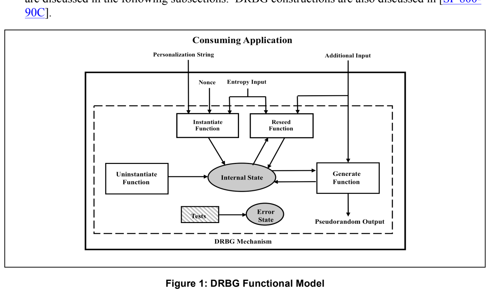
Figure 1: DRBG Functional Model
図1：DRBGの機能モデル
7.1 Entropy Input
7.1 エントロピー入力
Entropy input is provided to a DRBG mechanism for the seed (see Section 8.6) using a randomness source. The entropy input and the seed shall be kept secret. The secrecy of this information provides the basis for the security of the DRBG. At a minimum, the randomness source shall provide input that supports the security strength requested by the DRBG mechanism. Appropriate randomness sources are discussed in Section 8.6.5.
エントロピー入力は、ランダム性源を用いて、シード（第8.6節参照）のためにDRBGメカニズムへ提供される。エントロピー入力とシードは秘密にしなければならない（shall）。これらの情報の秘匿性が、DRBGのセキュリティの基礎となる。ランダム性源は、最低限、DRBGメカニズムが要求するセキュリティ強度を満たす入力を提供しなければならない（shall）。適切なランダム性源は第8.6.5節で論じる。
Ideally, the entropy input would have full entropy; however, the DRBG mechanisms have been specified so that input with full entropy is not required. This is accommodated by allowing the length of the entropy input to be longer than the required entropy (expressed in bits), as long as the total entropy meets the requirements of the DRBG mechanism. The entropy input can be defined to be of variable length (within specified limits), as well as fixed length. In all cases, the DRBG mechanism expects that when entropy input is requested, the returned bitstring will contain at least the requested amount of entropy. Additional entropy beyond the amount requested is not required, but is desirable.
理想的には、エントロピー入力は完全エントロピーを持つが、DRBGメカニズムは完全エントロピーの入力を必要としないように規定されている。これは、総エントロピーがDRBGメカニズムの要件を満たす限り、エントロピー入力の長さが必要なエントロピー（ビットで表す）より長くてもよいとすることで実現される。エントロピー入力は、固定長のほか、（規定の範囲内で）可変長に定義することもできる。いずれの場合も、DRBGメカニズムは、エントロピー入力を要求したとき、返されるビット列に少なくとも要求した量のエントロピーが含まれることを前提とする。要求した量を超える追加のエントロピーは必須ではないが、望ましい。
7.2 Other Inputs
7.2 その他の入力
Other information may be obtained by a DRBG mechanism as input. This information may or may not be required to be kept secret by a consuming application; however, the security of the DRBG itself does not rely on the secrecy of this information. The information should be checked for validity when possible; for example, if time is used as an input, the format and reasonableness of the time could be checked. In most cases, a nonce is required during instantiation (see Sections 8.6.1 and 8.6.7). When required, the nonce is combined with the entropy input to create the initial DRBG seed.
DRBGメカニズムは、ほかの情報も入力として取得する場合がある。この情報は、利用側アプリケーションにとって秘密にすることが必要な場合もそうでない場合もあるが、DRBG自体のセキュリティはこの情報の秘匿性に依存しない。この情報は、可能な場合には妥当性を確認すべきである（should）。例えば時刻を入力に用いる場合、その時刻の形式や妥当性を確認できる。ほとんどの場合、インスタンス化の際にノンスが必要である（第8.6.1節および第8.6.7節参照）。必要な場合、ノンスはエントロピー入力と組み合わされ、DRBGの初期シードを作成する。
A personalization string should be used during DRBG instantiation; when used, the personalization string is combined with the entropy input bits and possibly a nonce to create the initial DRBG seed. The personalization string should be unique for all instantiations of the same DRBG mechanism type (e.g., all instantiations of HMAC_DRBG). See Section 8.7.1 for additional discussion on personalization strings.
DRBGのインスタンス化では、パーソナライゼーション文字列を使用すべきである（should）。使用する場合、パーソナライゼーション文字列はエントロピー入力ビット、および場合によってはノンスと組み合わされ、DRBGの初期シードを作成する。パーソナライゼーション文字列は、同じ種類のDRBGメカニズムのすべてのインスタンス化（例：HMAC_DRBGのすべてのインスタンス化）にわたって一意であるべきである（should）。パーソナライゼーション文字列の詳細は第8.7.1節を参照。
Additional input may also be provided during reseeding and when pseudorandom bits are requested. See Section 8.7.2 for a discussion of this input.
追加入力は、再シード時や、疑似ランダムビットを要求するときにも提供できる（may）。この入力については第8.7.2節を参照。
7.3 The Internal State
7.3 内部状態
The internal state is the memory of the DRBG and consists of all of the parameters, variables and other stored values that the DRBG mechanism uses or acts upon. The internal state contains both administrative data (e.g., the security strength) and data that is acted upon and/or modified during the generation of pseudorandom bits (i.e., the working state).
内部状態はDRBGのメモリであり、DRBGメカニズムが使用または処理するすべてのパラメータ、変数、その他の保存値から成る。内部状態には、管理データ（例：セキュリティ強度）と、疑似ランダムビットの生成中に処理または変更されるデータ（すなわち作業状態）の両方が含まれる。
7.4 The DRBG Mechanism Functions
7.4 DRBGメカニズムの機能
The DRBG mechanism functions handle the DRBG’s internal state. The DRBG mechanisms in this Recommendation have five separate functions:
DRBGメカニズムの各機能はDRBGの内部状態を扱う。本推奨のDRBGメカニズムには、次の5つの独立した機能がある：
1.The instantiate function acquires entropy input and may combine it with a nonce and a personalization string to create a seed from which the initial internal state is created.
1.インスタンス化機能はエントロピー入力を取得し、それをノンスおよびパーソナライゼーション文字列と組み合わせて（may）、初期内部状態の作成元となるシードを作成する。
2.The generate function generates pseudorandom bits upon request, using the current internal state and possibly additional input; a new internal state for the next request is also generated.
2.Generate機能は、要求に応じて現在の内部状態と場合によっては追加入力を使用して疑似ランダムビットを生成し、次の要求に用いる新しい内部状態も生成する。
3.The reseed function acquires new entropy input and combines it with the current internal state and any additional input that is provided to create a new seed and a new internal state.
3.Reseed機能は新たなエントロピー入力を取得し、現在の内部状態および提供された追加入力と組み合わせて、新しいシードと内部状態を作成する。
4.The uninstantiate function zeroizes (i.e., erases) the internal state.
4.Uninstantiate機能は内部状態をゼロ化（すなわち消去）する。
5.The health test function determines that the DRBG mechanism continues to function correctly.
5.ヘルステスト機能はDRBGメカニズムが引き続き正しく機能していることを確認する。
8. DRBG Mechanism Concepts and General Requirements
8 DRBGメカニズムの概念および一般要件
8.1 DRBG Mechanism Functions
8.1 DRBGメカニズムの機能
A DRBG mechanism requires instantiate, uninstantiate, generate, and health testing functions. A DRBG mechanism includes an optional reseed function. A DRBG shall be instantiated prior to the generation of output by the DRBG. These functions are specified in Section 9.
DRBGメカニズムには、instantiate、uninstantiate、generateおよびヘルステストの各機能が必要である。DRBGメカニズムは任意のreseed機能を含む。DRBGは出力生成前にインスタンス化しなければならない（shall）。これらの機能は第9節で規定する。
8.2 DRBG Instantiations
8.2 DRBGのインスタンス化
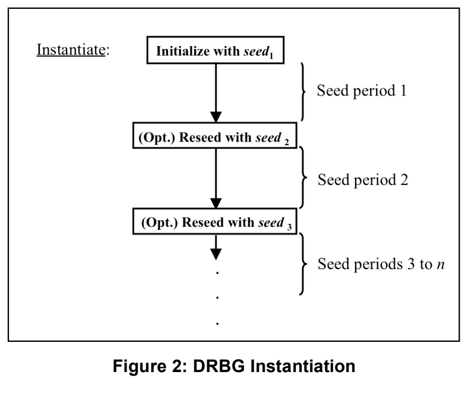
A DRBG may be used to obtain pseudorandom bits for different purposes (e.g., DSA private keys and AES keys) and may be separately instantiated for each purpose, thus effectively creating two DRBGs.
DRBGは、異なる目的（例：DSA秘密鍵とAES鍵）のために疑似ランダムビットを得る用途に使用でき（may）、目的ごとに別々にインスタンス化してもよく（may）、その場合は実質的に2つのDRBGを作成することになる。
A DRBG is instantiated using a seed and may be reseeded; when reseeded, the seed shall be different than the seed used for instantiation. Each seed defines a seed period for the DRBG instantiation; an instantiation consists of one or more seed periods that begin when a new seed is acquired and end when the next seed is obtained or the DRBG is no longer used (see Figure 2).
DRBGはシードを用いてインスタンス化され、再シードしてもよい（may）。再シードする際のシードは、インスタンス化に使用したシードと異なっていなければならない（shall）。各シードはDRBGインスタンス化のシード期間を定める。インスタンス化は1つ以上のシード期間から成り、シード期間は新しいシードを取得したときに始まり、次のシードを取得したとき、またはDRBGが使用されなくなったときに終わる（図2参照）。
8.3 Internal States
8.3 内部状態
During instantiation, an initial internal state is derived from the seed. The internal state for an instantiation includes:
インスタンス化中に、初期内部状態をシードから導出する。インスタンス化の内部状態には次が含まれる：
Figure 2: DRBG Instantiation
図2：DRBGのインスタンス化
1.The working state:
1.作業状態：
a.One or more values that are derived from the seed and become part of the internal state; these values shall remain secret, and
a.シードから導出され、内部状態の一部となる1つ以上の値。これらの値は秘密のままにしなければならない（shall）。
b.A count of the number of requests produced since the instantiation was seeded or reseeded.
b.インスタンス化がシードまたは再シードされてから生成した要求の数のカウント。
2.Administrative information (e.g., security strength and prediction resistance flag).
2.管理情報（例：セキュリティ強度および予測耐性フラグ）。
The internal state shall be protected at least as well as the intended use of the pseudorandom output bits requested by the consuming application. A DRBG mechanism implementation may be designed to handle multiple instantiations. Each DRBG instantiation shall have its own internal state. The internal state for one DRBG instantiation shall not be used as the internal state for a different instantiation.
内部状態は、利用側アプリケーションが要求する疑似ランダム出力ビットの用途に必要な保護と同等以上に保護しなければならない（shall）。DRBGメカニズムの実装は複数のインスタンス化を扱うよう設計してもよい（may）。各DRBGインスタンス化はそれぞれ独自の内部状態を持たなければならない（shall）。あるDRBGインスタンス化の内部状態を、別のインスタンス化の内部状態として使用してはならない（shall not）。
8.4 Security Strengths Supported by an Instantiation
8.4 インスタンス化がサポートするセキュリティ強度
The DRBG mechanisms specified in this Recommendation support four security strengths: 112, 128, 192 or 256 bits. The security strength for the instantiation is requested during DRBG instantiation, and the instantiate function obtains the appropriate amount of entropy for the requested security strength. Each DRBG mechanism has restrictions on the security strength it can support, based on its design (see Section 10).
本推奨で規定するDRBGメカニズムは、112、128、192、256ビットの4つのセキュリティ強度をサポートする。インスタンス化のセキュリティ強度はDRBGのインスタンス化時に要求され、instantiate機能は要求されたセキュリティ強度に適した量のエントロピーを取得する。各DRBGメカニズムには、その設計に基づき、サポートできるセキュリティ強度に制限がある（第10節参照）。
The actual security strength supported by a given instantiation depends on the DRBG implementation and on the amount of entropy provided to the instantiate function. Note that the security strength actually supported by a particular instantiation could be less than the maximum security strength possible for that DRBG implementation (see Table 1). For example, a DRBG that is designed to support a maximum security strength of 256 bits could, instead, be instantiated to support only a 128-bit security strength if the additional security provided by the 256-bit security strength is not required (e.g., by requesting only 128 bits of entropy during instantiation, rather than 256 bits of entropy).
特定のインスタンス化が実際にサポートするセキュリティ強度は、DRBGの実装と、instantiate機能に提供されるエントロピーの量に依存する。特定のインスタンス化が実際にサポートするセキュリティ強度は、そのDRBG実装で可能な最大セキュリティ強度より低くなる場合があることに注意（表1参照）。例えば、最大256ビットのセキュリティ強度をサポートするよう設計されたDRBGであっても、256ビットのセキュリティ強度による追加の安全性が不要であれば、代わりに128ビットのセキュリティ強度のみをサポートするようにインスタンス化できる（例：インスタンス化時に256ビットではなく128ビットのエントロピーのみを要求することで）。
Table 1: Possible Instantiated Security Strengths
表1：インスタンス化で可能なセキュリティ強度
| Maximum Designed Security Strength | 112 | 128 | 192 | 256 |
|---|---|---|---|---|
| Possible Instantiated Security Strengths | 112 | 112, 128 | 112, 128, 192 | 112, 128, 192, 256 |
| 最大設計セキュリティ強度 | 112 | 128 | 192 | 256 |
|---|---|---|---|---|
| インスタンス化可能なセキュリティ強度 | 112 | 112, 128 | 112, 128, 192 | 112, 128, 192, 256 |
Following instantiation, a request can be made to the generate function for pseudorandom bits (see Section 9.3). The pseudorandom bits returned from a DRBG shall not be used for any application that requires a higher security strength than the DRBG is instantiated to support. The security strength provided in these returned bits is the minimum of the security strength supported by the DRBG and the length of the bit string returned, i.e.:
インスタンス化の後、generate 機能に疑似ランダムビットを要求できる（第9.3節参照）。DRBG から返された疑似ランダムビットは、DRBG がサポートするようにインスタンス化されたセキュリティ強度より高いセキュリティ強度を必要とする用途に使用してはならない（shall not）。返されたこれらのビットが提供するセキュリティ強度は、DRBG がサポートするセキュリティ強度と返されたビット列の長さの小さい方である。すなわち、次のとおりである。
A concatenation of bit strings resulting from multiple calls to a DRBG will not provide a security strength for the concatenated string that is greater than the instantiated security strength of the DRBG. For example, two 128-bit output strings requested from a DRBG that supports a128-bit security strength cannot be concatenated to form a 256-bit string with a security strength of 256 bits. A more complete discussion of this issue is provided in [SP 800-90C].
DRBG を複数回呼び出して得られたビット列を連結しても、連結後の文字列のセキュリティ強度が、その DRBG のインスタンス化されたセキュリティ強度を超えることはない。例えば、128 ビットのセキュリティ強度をサポートする DRBG に要求した 128 ビットの出力文字列 2 つを連結して、256 ビットのセキュリティ強度を持つ 256 ビットの文字列を構成することはできない。この問題のより詳しい議論は［SP 800-90C］に示されている。
For each generate request, the security strength to be provided for the bits is requested. Any security strength can be requested during a call to the generate function, up to the security strength of the instantiation, e.g., an instantiation could be instantiated at the 128-bit security strength, but a request for pseudorandom bits could indicate that a lesser security strength is actually required for the bits to be generated. Assuming that the request is valid, the requested number of bits is returned.
generate 要求ごとに、そのビットに対して提供すべきセキュリティ強度を要求する。generate 機能の呼出しでは、インスタンス化のセキュリティ強度までの任意のセキュリティ強度を要求できる。例えば、インスタンス化が 128 ビットのセキュリティ強度で行われていても、疑似ランダムビットの要求で、生成するビットに実際に必要なのはそれより低いセキュリティ強度であると示してもよい。要求が有効であれば、要求された数のビットが返される。
When an instantiation is used for multiple purposes, the minimum security strength requirement for each purpose must be considered. The DRBG needs to be instantiated for the highest security strength required. For example, if one purpose requires a security strength of 112 bits, and another purpose requires a security strength of 256 bits, then the DRBG needs to be instantiated to support the 256-bit security strength.
1 つのインスタンス化を複数の目的に使用する場合は、各目的に対する最小のセキュリティ強度要件を考慮しなければならない（must）。DRBG は、必要とされる最高のセキュリティ強度でインスタンス化する必要がある。例えば、ある目的が 112 ビットのセキュリティ強度を必要とし、別の目的が 256 ビットのセキュリティ強度を必要とする場合、DRBG は 256 ビットのセキュリティ強度をサポートするようにインスタンス化する必要がある。
8.5 DRBG Mechanism Boundaries
8.5 DRBGメカニズムの境界
As a convenience, this Recommendation uses the notion of a “DRBG mechanism boundary” to explain the operations of a DRBG mechanism and its interaction with and relation to other processes; a DRBG mechanism boundary contains all DRBG mechanism functions and internal states required for a DRBG. Data enters a DRBG mechanism boundary via the DRBG’s public interfaces, which are made available to consuming applications.
便宜上、本推奨では、DRBG メカニズムの動作と、他のプロセスとの相互作用および関係を説明するために“DRBG メカニズム境界”という概念を用いる。DRBG メカニズム境界には、DRBG に必要なすべての DRBG メカニズム機能と内部状態が含まれる。データは、消費アプリケーションに提供される DRBG の公開インタフェースを介して、DRBG メカニズム境界に入る。
The DRBG mechanism boundary should not be confused with a cryptographic module boundary, as specified in [FIPS 140]; the relationship between a cryptographic module boundary and a DRBG boundary is mentioned below, but is more fully discussed in [SP 800-90C].
DRBG メカニズム境界は、［FIPS 140］で規定される暗号モジュール境界と混同すべきではない。暗号モジュール境界と DRBG 境界の関係は以下で触れるが、［SP 800-90C］でより詳しく論じている。
Within a DRBG mechanism boundary,
DRBGメカニズム境界内では、
1.The DRBG internal state and the operation of the DRBG mechanism functions shall only be affected according to the DRBG mechanism specification.
1.DRBGの内部状態およびDRBGメカニズム機能の動作は、DRBGメカニズム仕様に従ってのみ影響を受けるものとする（shall）。
2.The DRBG internal state shall exist solely within the DRBG mechanism boundary. The internal state shall not be accessible by non-DRBG functions or other instantiations of that DRBG or other DRBGs.
2.DRBGの内部状態はDRBGメカニズム境界内にのみ存在しなければならない（shall）。内部状態を非DRBG機能、このDRBGの他のインスタンス化、または他のDRBGからアクセス可能にしてはならない（shall not）。
3.Information about secret parts of the DRBG internal state and intermediate values in computations involving these secret parts shall not affect any information that leaves the DRBG mechanism boundary, except as specified for the DRBG pseudorandom bit outputs.
3.DRBG内部状態の秘密部分およびそれらを含む計算の中間値に関する情報は、DRBGの疑似ランダムビット出力として規定される場合を除き、DRBGメカニズム境界外へ出る情報に影響してはならない（shall not）。
Each DRBG mechanism includes one or more cryptographic primitives (i.e., a hash function or block cipher algorithm). Other applications may use the same cryptographic primitive, but the DRBG’s internal state and the DRBG mechanism functions shall not be affected by these other applications. For example, a DRBG mechanism may use the same hash-function code as a digital-signature application.
各 DRBG メカニズムは、1 つ以上の暗号プリミティブ（すなわちハッシュ関数またはブロック暗号アルゴリズム）を含む。ほかのアプリケーションが同じ暗号プリミティブを使用してもよいが、DRBG の内部状態と DRBG メカニズム機能が、それらのアプリケーションの影響を受けてはならない（shall not）。例えば、DRBG メカニズムがデジタル署名アプリケーションと同じハッシュ関数コードを使用してもよい。
A DRBG mechanism’s functions may be contained within a single device, or may be distributed across multiple devices (see Figures 3 and 4). Figure 3 depicts a DRBG for which all functions are contained within the same device. As further discussed in [SP 800-90C], the DRBG mechanism boundary (in this case) is contained within a cryptographic module boundary.
DRBG メカニズムの機能は、単一のデバイス内に含めても、複数のデバイスに分散させてもよい（図3および図4を参照）。図3は、すべての機能が同一デバイス内に含まれる DRBG を示す。［SP 800-90C］でさらに論じているように、この場合、DRBG メカニズム境界は暗号モジュール境界内に含まれる。
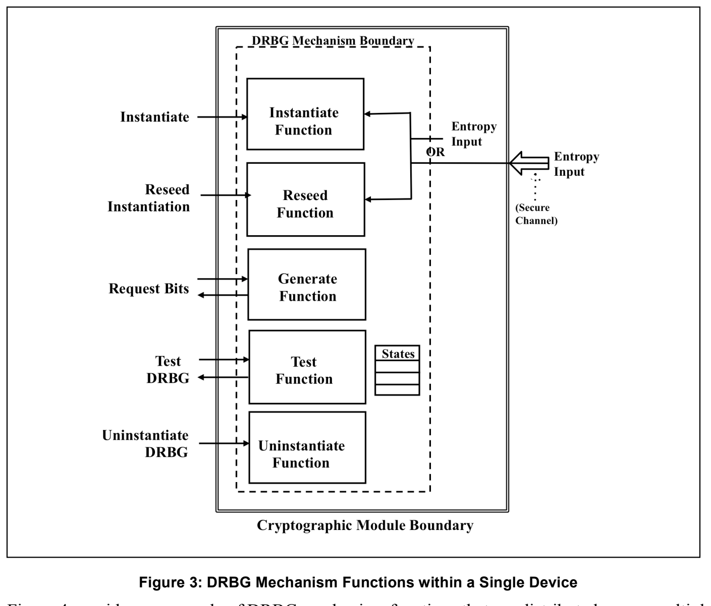
Figure 3: DRBG Mechanism Functions within a Single Device
図3：単一デバイス内のDRBGメカニズムの機能
Figure 4 provides an example of DRBG mechanism functions that are distributed across multiple devices. In this case, each device has a DRBG mechanism sub-boundary that contains the DRBG mechanism functions implemented on that device, and the DRBG mechanism sub-boundary is contained within a cryptographic module boundary, as is further discussed in [SP 800-90C]. The boundary around the entire DRBG mechanism includes the aggregation of sub-boundaries providing the DRBG mechanism functionality. Each sub-boundary may be contained within a different cryptographic module boundary, or multiple sub-boundaries may be contained within the same cryptographic module boundary.
図4は、複数のデバイスに分散したDRBGメカニズムの機能の例を示す。この場合、各デバイスは、そのデバイス上に実装されたDRBGメカニズムの機能を含むDRBGメカニズム副境界を持ち、DRBGメカニズム副境界は、[SP 800-90C] でさらに論じるように、暗号モジュール境界内に含まれる。DRBGメカニズム全体を囲む境界は、DRBGメカニズムの機能を提供する副境界の集合を含む。各副境界は異なる暗号モジュール境界内に含まれていてもよく、複数の副境界が同じ暗号モジュール境界内に含まれていてもよい。
The use of distributed DRBG-mechanism functions may be convenient for restricted environments (e.g., smart card applications) in which the primary use of the DRBG does not require repeated use of the instantiate or reseed functions.
分散型のDRBGメカニズム機能の使用は、DRBGの主な用途がinstantiate機能やreseed機能の繰り返しの使用を必要としない制約のある環境（例：スマートカードアプリケーション）で便利な場合がある。
Each DRBG mechanism boundary or sub-boundary shall contain a health test function to test the “health” of other DRBG-mechanism functions within that boundary. In addition, a boundary or sub-boundary that contains an instantiate function shall contain an uninstantiate function in order to terminate an instantiation.
各DRBGメカニズム境界または副境界は、その境界内の他のDRBGメカニズム機能の「健全性」を検査するヘルステスト機能を含まなければならない（shall）。さらに、instantiate機能を含む境界または副境界は、インスタンス化を終了するためのuninstantiate機能を含まなければならない（shall）。
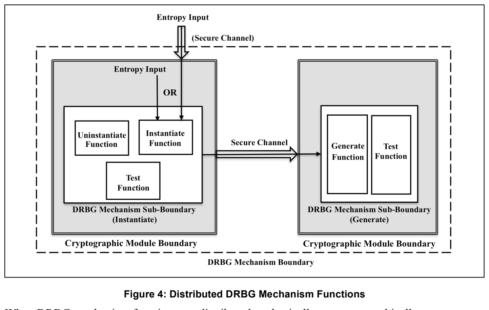
Figure 4: Distributed DRBG Mechanism Functions
図4：分散型DRBGメカニズム機能
When DRBG mechanism functions are distributed, a physically or cryptographically secure channel shall be used to protect the confidentiality and integrity of the internal state or parts of the internal state that are transferred between the distributed DRBG mechanism sub-boundaries. The security provided by the secure channel shall be consistent with the security required by the consuming application. See Section 4 for a more complete definition of a secure channel.
DRBGメカニズムの機能が分散している場合、分散したDRBGメカニズム副境界の間で転送される内部状態または内部状態の一部の機密性と完全性を保護するため、物理的または暗号的に安全なチャネルを使用しなければならない（shall）。安全なチャネルが提供するセキュリティは、利用側アプリケーションが要求するセキュリティと整合していなければならない（shall）。安全なチャネルのより完全な定義は第4節を参照。
For distributed DRBGs, each sub-boundary is the same as or is fully contained within a cryptographic module boundary.
分散型DRBGでは、各副境界は暗号モジュール境界と同一であるか、暗号モジュール境界内に完全に含まれる。
8.6 Seeds
8.6 シード
When a DRBG is used to generate pseudorandom bits, a seed shall be acquired prior to the generation of output bits by the DRBG. The seed is used to instantiate the DRBG and determine the initial internal state that is used when calling the DRBG to obtain the first output bits.
DRBGを用いて疑似ランダムビットを生成する場合、DRBGが出力ビットを生成する前にシードを取得しなければならない（shall）。シードはDRBGをインスタンス化し、最初の出力ビットを得るためにDRBGを呼び出す際に用いる初期内部状態を決定するために使用される。
Reseeding is a means of restoring the secrecy of the output of the DRBG if a seed or the internal state becomes known. Periodic reseeding is a good way of addressing the threat of either the DRBG seed, entropy input or working state being compromised over time. In some implementations (e.g., smartcards), an adequate reseeding process may not be possible. In these cases, the best policy might be to replace the DRBG, obtaining a new seed in the process (e.g., obtain a new smart card).
再シードは、シードまたは内部状態が知られてしまった場合に、DRBGの出力の秘匿性を回復する手段である。定期的な再シードは、DRBGのシード、エントロピー入力、または作業状態が時間の経過とともに危殆化するという脅威に対処する有効な方法である。実装によっては（例：スマートカード）、適切な再シード処理が不可能な場合がある。このような場合、最善の方針は、新しいシードを取得しつつDRBGを交換すること（例：新しいスマートカードを入手すること）かもしれない。
The seed and its use by a DRBG mechanism shall be generated and handled as specified in the following subsections.
シードは、以下の各項で規定するとおりに生成し、DRBGメカニズムによるその使用を含め、規定どおりに取り扱わなければならない（shall）。
8.6.1 Seed Construction for Instantiation
8.6.1 インスタンス化のためのシード構成
Figure 5 depicts the seed-construction process for instantiation. The seed material used to determine a seed for instantiation consists of entropy input from a randomness source, a nonce and an optional (but recommended) personalization string. Entropy input shall always be used in the construction of a seed; requirements for the entropy input are discussed in Section 8.6.3. Except for the case noted below, a nonce shall be used; requirements for the nonce are discussed in Section 8.6.7. A personalization string should also be used; requirements for the personalization string are discussed in Section 8.7.1.
図5は、インスタンス化のシード構成処理を示す。インスタンス化のシードを決定するために使用するシード素材は、ランダム性源からのエントロピー入力、ノンス、および任意（ただし推奨）のパーソナライゼーション文字列から成る。シードの構成には常にエントロピー入力を使用しなければならない（shall）。エントロピー入力の要件は第8.6.3節で論じる。後述の場合を除き、ノンスを使用しなければならない（shall）。ノンスの要件は第8.6.7節で論じる。パーソナライゼーション文字列も使用すべきである（should）。パーソナライゼーション文字列の要件は第8.7.1節で論じる。
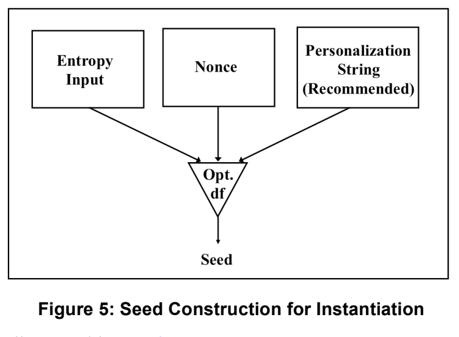
Figure 5: Seed Construction for Instantiation
図5：インスタンス化のシード構成
Depending on the DRBG mechanism and the randomness source, a derivation function may be required to derive a seed from the seed material. However, in certain circumstances, the CTR_DRBG mechanism based on block cipher algorithms (see Section 10.2) may be implemented without a derivation function. When implemented in this manner, a (separate) nonce (as shown in Figure 5) is not used. Note, however, that the personalization string could contain a nonce, if desired.
DRBGメカニズムとランダム性源によっては、シード素材からシードを導出するために導出関数が必要となる場合がある。ただし、特定の状況では、ブロック暗号アルゴリズムに基づくCTR_DRBGメカニズム（第10.2節参照）を導出関数なしで実装してもよい（may）。この方法で実装した場合、（図5に示す）（独立した）ノンスは使用しない。ただし、必要であれば、パーソナライゼーション文字列にノンスを含めてもよいことに注意。
8.6.2 Seed Construction for Reseeding
8.6.2 再シード用シードの構成
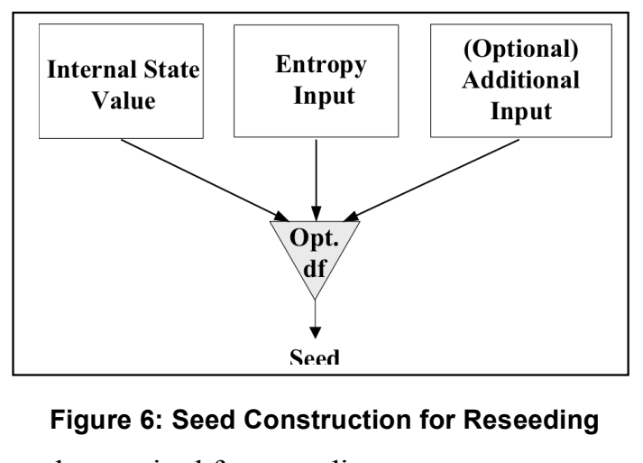
Figure 6 depicts the seed construction process for reseeding an instantiation. The seed material for reseeding consists of a value that is carried in the internal state3, new entropy input and, optionally, additional input. The internal state value and the entropy input are required; requirements for the entropy input are discussed in Section 8.6.3. Requirements for the additional input are discussed in Section 8.7.2. As in Section 8.6.1, a derivation function may be required for reseeding.
図6は、インスタンス化を再シードする際のシード構成処理を示す。再シード用のシード素材は、内部状態3に保持される値、新たなエントロピー入力、および任意の追加入力から成る。内部状態の値とエントロピー入力は必須である。エントロピー入力の要件は第8.6.3節で論じる。追加入力の要件は第8.7.2節で論じる。第8.6.1節と同様に、再シードにも導出関数が必要となる場合がある。
Figure 6: Seed Construction for Reseeding
図6：再シード用シードの構成
8.6.3 Entropy Requirements for the Entropy Input
8.6.3 エントロピー入力の要件
The entropy input shall have entropy that is equal to or greater than the security strength of the instantiation. Additional entropy may be provided in the nonce or the optional personalization string during instantiation, or in the additional input during reseeding and generation, but this is not required and does not increase the “official” security strength of the DRBG instantiation that is recorded in the internal state. The use of more entropy than the minimum value will offer a security “cushion”. This may be useful if the assessment of the entropy provided in the entropy input is incorrect. Having more entropy than the assessed amount is acceptable; having less entropy than the assessed amount could be fatal to security. The presence of more entropy than is required, especially during the instantiation, will provide a higher level of assurance than the minimum required entropy.
エントロピー入力は、インスタンス化のセキュリティ強度以上のエントロピーを持たなければならない。インスタンス化時のノンスまたは任意のパーソナライゼーション文字列、あるいは再シードおよび生成時の追加入力に追加エントロピーを含めてもよいが、必須ではなく、内部状態に記録される「公式」なDRBGインスタンス化のセキュリティ強度も引き上げない。最小値を超えるエントロピーを用いるとセキュリティ上の「余裕」が得られる。これはエントロピー入力中のエントロピー評価が誤っていた場合に役立つことがある。評価量より多いエントロピーは許容されるが、評価量より少ないとセキュリティを致命的に損なう可能性がある。特にインスタンス化時に必要量を上回るエントロピーを含めると、最低要件を満たす場合より高い保証が得られる。
8.6.4 Seed Length
8.6.4 シード長
The minimum length of the seed depends on the DRBG mechanism and the security strength required by the consuming application, but shall be at least the number of bits of entropy required. See the tables in Section 10.
シードの最小長はDRBGメカニズムおよび利用側アプリケーションが必要とするセキュリティ強度によって異なるが、必要なエントロピービット数以上でなければならない（shall）。第10節の表を参照。
8.6.5 Randomness Source
8.6.5 ランダム性源
A DRBG mechanism requires an approved randomness source during instantiation and reseeding, including whenever prediction resistance is requested (see Section 8.8). This input is requested using the \(\mathbf{Get\_entropy\_input}\) function introduced in Section 9 and is specified in more detail in [SP 800-90C].
An approved randomness source is an entropy source that conforms to [SP 800-90B], or an RBG that conforms to [SP 800-90C] − either a DRBG or an NRBG.
DRBGメカニズムは、インスタンス化および再シード時、ならびに予測耐性が要求される場合（第8.8節参照）に、承認済みランダム性源を必要とする。この入力は第9節で導入する\(\mathbf{Get\_entropy\_input}\)関数を用いて要求し、詳細は[SP 800-90C]で規定する。
承認済みランダム性源とは、[SP 800-90B]に適合するエントロピー源、または[SP 800-90C]に適合するRBG（DRBGまたはNRBG）である。
8.6.6 Entropy Input and Seed Privacy
8.6.6 エントロピー入力とシードのプライバシー
The entropy input and the resulting seed shall be handled in a manner that is consistent with the security required for the data protected by the consuming application. For example, if the DRBG is used to generate keys, then the entropy inputs and seeds used to generate the keys shall (at a minimum) be protected at the same security strength as the keys.
エントロピー入力と、それによって得られるシードは、利用側アプリケーションが保護するデータに要求されるセキュリティと整合する方法で取り扱わなければならない（shall）。例えば、DRBGを鍵の生成に使用する場合、その鍵の生成に使用するエントロピー入力とシードは、（最低限）鍵と同じセキュリティ強度で保護しなければならない（shall）。
The security of the DRBG depends on the secrecy of the entropy input. For this reason, the entropy input shall be treated as a critical security parameter (CSP) during cryptographic module validation. The entropy input for the DRBG function requiring the entropy input shall be obtained either from within the cryptographic module containing that function or from another cryptographic module and transported to the DRBG function's cryptographic module via a secure channel.
DRBGのセキュリティは、エントロピー入力の秘匿性に依存する。このため、エントロピー入力は、暗号モジュールの検証において重要セキュリティパラメータ（CSP）として扱わなければならない（shall）。エントロピー入力を必要とするDRBG機能のエントロピー入力は、その機能を含む暗号モジュール内から取得するか、別の暗号モジュールから取得して安全なチャネル経由でそのDRBG機能の暗号モジュールへ転送しなければならない（shall）。
8.6.7 Nonce
8.6.7 ノンス
A nonce may be required in the construction of a seed during instantiation in order to provide a security cushion to block certain attacks. The nonce shall be either:
a. A value with at least (\(\mathit{security\_strength}/2\)) bits of entropy, or
b. A value that is expected to repeat no more often than a (\(\mathit{security\_strength}/2\))-bit random string would be expected to repeat.
特定の攻撃を防ぐためのセキュリティ上の余裕を与える目的で、インスタンス化時のシード構成にノンスが必要となる場合がある（may）。ノンスは次のいずれかでなければならない（shall）：
a. 少なくとも(\(\mathit{security\_strength}/2\))ビットのエントロピーを持つ値。または
b. (\(\mathit{security\_strength}/2\))ビットのランダム文字列が繰り返されると見込まれる頻度以下でしか繰り返されないと見込まれる値。
Each nonce shall be unique to the cryptographic module in which instantiation is performed, but need not be secret. When used, the nonce shall be considered to be a critical security parameter.
各ノンスは、インスタンス化を実行する暗号モジュールにおいて一意でなければならない（shall）が、秘密である必要はない。ノンスを使用する場合、そのノンスは重要セキュリティパラメータとみなさなければならない（shall）。
A nonce may be composed of one (or more) of the following components (other components may also be appropriate):
ノンスは、次の構成要素の1つ（または複数）から構成してもよい（may）（ほかの構成要素も適切な場合がある）。
1.A random value that is generated anew for each nonce, using an approved random bit generator.
1.承認済みランダムビット生成器を用いて、ノンスごとに新たに生成するランダム値。
2.A timestamp of sufficient resolution (detail) so that it is different each time it is used.
2.使用するたびに異なるよう十分な分解能（詳細度）を持つタイムスタンプ。
3.A monotonically increasing sequence number, or
3.単調増加するシーケンス番号。または
4.A combination of a timestamp and a monotonically increasing sequence number, such that the sequence number is reset when and only when the timestamp changes. For example, a timestamp may show the date but not the time of day, so a sequence number is appended that will not repeat during a particular day.
4.タイムスタンプと単調増加するシーケンス番号の組合せ。シーケンス番号は、タイムスタンプが変わるときに、かつそのときに限りリセットされる。例えば、タイムスタンプが日付を示し時刻を示さないこともある（may）ので、特定の日の間に繰り返されないシーケンス番号を付加する。
For case 1 above, the random value could be acquired from the same source and at the same time as the entropy input. In this case, the seed could be considered to be constructed from an “extra strong” entropy input and the optional personalization string, where the entropy for the entropy input is equal to or greater than (\(3/2\ \mathit{security\_strength}\)) bits.
For case 2 above, the timestamp must be trusted. A trusted timestamp is generated and signed by an entity that is trusted to provide accurate time information.
The nonce provides greater assurance that the DRBG provides \(\mathit{security\_strength}\) bits of security to the consuming application. If a DRBG were instantiated many times without a nonce, a compromise could become more likely. In some consuming applications, a single DRBG compromise could reveal long-term secrets (e.g., a compromise of the DSA per-message secret could reveal the signing key).
A nonce shall be generated within a cryptographic module boundary. This requirement does not preclude the generation of the nonce within a cryptographic module that is different from the cryptographic boundary containing the DRBG function with which the nonce is used (e.g., the cryptographic module boundary containing an instantiate function). However, in this scenario, there needs to be a secure channel to transport the nonce between the cryptographic-module boundaries. See the discussion of distributed DRBGs in Section 8.5 and distributed RBGs in [SP 800-90C].
上記ケース1では、ランダム値をエントロピー入力と同じソースから同時に取得してもよい（could）。この場合、シードは「特別に強い」エントロピー入力と任意のパーソナライゼーション文字列から構成されるとみなせる（could）。ここで、エントロピー入力のエントロピーは(\(3/2\ \mathit{security\_strength}\))ビット以上である。
上記ケース2では、タイムスタンプを信頼できなければならない（must）。信頼できるタイムスタンプは、正確な時刻情報を提供すると信頼された主体が生成し、署名する。
ノンスによって、DRBGが利用側アプリケーションへ\(\mathit{security\_strength}\)ビットのセキュリティを提供するという保証が高まる。ノンスなしでDRBGを何度もインスタンス化すると、侵害の可能性が高まりうる（could）。利用側アプリケーションによっては、DRBGの侵害1回で長期秘密が漏えいする可能性がある（could）（例：DSAのメッセージごとの秘密値が侵害されると、署名鍵が漏えいしうる（could））。
ノンスは暗号モジュール境界内で生成しなければならない（shall）。この要件は、ノンスを使用するDRBG機能を含む暗号境界（例：instantiate機能を含む暗号モジュール境界）とは別の暗号モジュール内でノンスを生成することを排除しない。ただしその場合、暗号モジュール境界間でノンスを転送するセキュアチャネルが必要である。第8.5節の分散DRBG、および[SP 800-90C]の分散RBGに関する説明を参照。
8.6.8 Reseeding
8.6.8 再シード
Generating too many outputs from a seed (and other input information) may provide sufficient information for successfully predicting future outputs (see Section 8.8). Periodic reseeding will reduce security risks, reducing the likelihood of a compromise of the data that is protected by cryptographic mechanisms that use the DRBG.
1 つのシード（およびその他の入力情報）から出力を生成しすぎると、将来の出力を予測することに成功するのに十分な情報が得られてしまう場合がある（第8.8節参照）。定期的な再シードは、セキュリティ上のリスクを減らし、その DRBG を使用する暗号メカニズムで保護されるデータが危殆化する可能性を低くする。
Seeds have a finite seedlife (i.e., the number of outputs that are produced during a seed period); the maximum seedlife is dependent on the DRBG mechanism used. Implementations shall enforce the limits on seedlife specified for the DRBG mechanism used or more stringent limits selected by the implementer. When a DRBG's maximum seedlife is reached, the DRBG shall not generate outputs until it has been reseeded.
シードには有限のシード寿命（すなわち、シード期間中に生成される出力の数）があり、最大シード寿命は使用する DRBG メカニズムによって決まる。実装は、使用する DRBG メカニズムに対して規定されたシード寿命の上限、または実装者が選択したより厳格な上限を強制しなければならない（shall）。DRBG の最大シード寿命に達したときは、DRBG は再シードされるまで出力を生成してはならない（shall not）。
Reseeding is accomplished 1) by an explicit reseeding of the DRBG by the consuming application, 2) by the generate function when prediction resistance is requested (see Section 8.8) or 3) when the end of the seed life is determined during the generate function (see Section 9.3.1).
再シードは、1) 消費アプリケーションによる DRBG の明示的な再シード、2) 予測耐性が要求されたときの generate 機能による再シード（第8.8節参照）、または 3) generate 機能の実行中にシード寿命の終わりが判定されたとき（第9.3.1節参照）に行われる。
The reseeding of the DRBG shall be performed in accordance with the specification for a given DRBG mechanism. The DRBG reseed specifications within this Recommendation are designed to produce a new seed that is determined by both the old seed and newly obtained entropy input that will support the desired security strength.
DRBG の再シードは、各 DRBG メカニズムの仕様に従って実行しなければならない（shall）。本推奨内の DRBG 再シード仕様は、旧シードと、新たに取得した、所望のセキュリティ強度をサポートするエントロピー入力の両方によって決まる新しいシードを生成するよう設計されている。
An alternative to reseeding would be to create an entirely new instantiation. However, reseeding is preferred over creating a new instantiation. If a DRBG instantiation was initially seeded with sufficient entropy, and the randomness source subsequently fails without being detected, then a new instantiation using the same (failed) source would not have sufficient entropy to operate securely. However, if there is an undetected failure in the randomness source of an already properly seeded DRBG instantiation, the DRBG instantiation will still retain any previous entropy when the reseed operation fails to introduce new entropy.
再シードの代替手段として、まったく新しいインスタンス化を作成することが考えられる。しかし、再シードの方が新しいインスタンス化の作成よりも望ましい。DRBG のインスタンス化が当初は十分なエントロピーでシードされていて、その後ランダム性源が検出されないまま故障した場合、同じ（故障した）ランダム性源を用いる新しいインスタンス化には、安全に動作するだけの十分なエントロピーがない。一方、すでに適切にシードされた DRBG インスタンス化のランダム性源に検出されない故障があっても、再シード操作が新たなエントロピーを導入できなくなったとき、その DRBG インスタンス化は以前のエントロピーを保持し続ける。
8.6.9 Seed Use
8.6.9 シードの使用
The seed that is used to initialize one instantiation of a DRBG shall not be intentionally used to reseed the same instantiation or used as the seed for another DRBG instantiation. In addition, a DRBG instantiation shall not reseed itself. Note that a DRBG does not provide output until a seed is available, and the internal state has been initialized (see Section 10).
あるDRBGインスタンス化の初期化に使用したシードを、同じインスタンス化の再シードに意図的に再使用してはならず、別のDRBGインスタンス化のシードとしても使用してはならない（shall not）。また、DRBGインスタンス化自身を再シードしてはならない（shall not）。シードが利用可能となり内部状態が初期化されるまで、DRBGは出力を提供しない（第10節参照）。
8.6.10 Entropy Input and Seed Separation
8.6.10 エントロピー入力とシードの分離
The seed used by a DRBG and the entropy input used to create that seed shall not intentionally be used for other purposes (e.g., domain parameter or prime number generation).
DRBGが使用するシードおよびそのシード生成に使用するエントロピー入力を、他の目的（例：ドメインパラメータまたは素数の生成）に意図的に使用してはならない（shall not）。
8.7 Other Input to the DRBG Mechanism
8.7 DRBGメカニズムへのその他の入力
Other input may be provided during DRBG instantiation, generation and reseeding. This input may contain entropy, but this is not required. During instantiation, a personalization string may be provided and combined with entropy input and a nonce to derive a seed (see Section 8.6.1). When pseudorandom bits are requested and when reseeding is performed, additional input may be provided (see Section 8.7.2).
DRBG のインスタンス化、生成、再シードの際に、他の入力を与えてもよい。この入力にはエントロピーが含まれていてもよいが、必須ではない。インスタンス化の際には、個別化文字列を与え、エントロピー入力およびナンスと組み合わせてシードを導出してもよい（第8.6.1節参照）。疑似ランダムビットを要求するとき、および再シードを実行するときには、追加入力を与えてもよい（第8.7.2節参照）。
Depending on the method for acquiring the input, the exact value of the input may or may not be known to the user or consuming application. For example, the input could be derived directly from values entered by the user or consuming application, or the input could be derived from information introduced by the user or consuming application (e.g., from timing statistics based on key strokes), or the input could be the output of another RBG.
入力を取得する方法によっては、入力の正確な値をユーザーまたは消費アプリケーションが知っている場合も、知らない場合もある。例えば、入力がユーザーまたは消費アプリケーションが入力した値から直接導出される場合、ユーザーまたは消費アプリケーションが導入した情報（例：キー入力に基づくタイミング統計）から導出される場合、あるいは別の RBG の出力である場合がある。
8.7.1 Personalization String
8.7.1 パーソナライゼーション文字列
A personalization string is an optional (but recommended) input to the instantiate function and is used to derive the seed (see Section 8.6.1). The personalization string may be obtained from inside or outside a cryptographic module, and may be an empty string. Note that a DRBG does not rely on a personalization string to provide entropy, even though entropy could be provided in the personalization string, and knowledge of the personalization string by an adversary does not degrade the security strength of a DRBG instantiation, as long as the entropy input is unknown. When used within a cryptographic module, a personalization string is not considered to be a critical security parameter.
パーソナライゼーション文字列はinstantiate機能への任意（ただし推奨）の入力であり、シードの導出に使用する（第8.6.1節参照）。パーソナライゼーション文字列は暗号モジュールの内部または外部から取得でき（may）、空文字列でもよい（may）。DRBGはエントロピーの提供をパーソナライゼーション文字列に依存しない。パーソナライゼーション文字列にエントロピーを含めることはできる（could）が、エントロピー入力が未知である限り、攻撃者がパーソナライゼーション文字列を知ってもDRBGインスタンス化のセキュリティ強度は低下しない。暗号モジュール内で使用する場合、パーソナライゼーション文字列は重要セキュリティパラメータ（critical security parameter）とはみなされない。
The personalization string may contain secret information, but shall not include secret information that requires protection at a higher security strength than the DRBG being instantiated will support. For example, a personalization string to be used to instantiate a DRBG at 112 bits of security strength shall not include information requiring 128 bits of protection. A given implementation of a DRBG may support the use of a personalization string, but is not required to do so.
パーソナライゼーション文字列には秘密情報を含めてもよい（may）が、インスタンス化するDRBGがサポートするセキュリティ強度より高いセキュリティ強度での保護を必要とする秘密情報を含めてはならない（shall not）。例えば、セキュリティ強度112ビットでDRBGをインスタンス化するために使用するパーソナライゼーション文字列に、128ビットの保護を必要とする情報を含めてはならない（shall not）。DRBGの実装は、パーソナライゼーション文字列の使用をサポートしてもよい（may）が、必須ではない。
The intent of a personalization string is to introduce additional input into the instantiation of a DRBG. This personalization string might contain values unknown to an attacker, or values that tend to differentiate this DRBG instantiation from all others. Ideally, a personalization string will be set to some bitstring that is as unique as possible. Good sources for the personalization string contents include:
パーソナライゼーション文字列の意図は、DRBGのインスタンス化に追加の入力を導入することにある。このパーソナライゼーション文字列には、攻撃者が知らない値や、このDRBGインスタンス化を他のすべてのインスタンス化と区別しやすくする値が含まれる場合がある。理想的には、パーソナライゼーション文字列は、可能な限り一意なビット列に設定される。パーソナライゼーション文字列の内容として適した源には、次のものがある。
•Application identifiers,
•アプリケーション識別子、
•Device serial numbers,
•デバイスのシリアル番号、
•User identification,
•ユーザ識別情報、
•Per-module or per-device values,
•モジュールごとまたはデバイスごとの値、
•Timestamps,
•タイムスタンプ、
•Network addresses,
•ネットワークアドレス、
•Special key values for this specific DRBG instantiation,
•この特定のDRBGインスタンス化専用の特別な鍵値、
•Protocol version identifiers,
•プロトコルバージョン識別子、
•Random numbers,
•乱数、
•Nonces, and
•ノンス、および
•Outputs from other approved or non-approved random bit generators.
•他の承認済みまたは非承認のランダムビット生成器からの出力。
8.7.2 Additional Input
8.7.2 追加入力
Additional input may optionally be provided to the reseed and generate functions during requests. The additional input may be obtained from inside or outside a cryptographic module, and may include secret or public information. Note that a DRBG does not rely on additional input to provide entropy, even though entropy could be provided in the additional input, and knowledge of the additional input by an adversary does not degrade the security strength of a DRBG. However, if the additional input contains secret/private information (e.g., a social security number), that information shall not require protection at a higher security strength than the security strength supported by the DRBG. A given implementation of a DRBG may include the additional input, but is not required to do so. When used within a cryptographic module, the additional input used in DRBG requests is not considered to be a critical security parameter unless any secret information included in the additional input qualifies as a critical security parameter.
追加入力は、要求の際にreseed機能とgenerate機能へ任意に提供してもよい（may）。追加入力は暗号モジュールの内部または外部から取得でき、秘密情報または公開情報を含んでもよい。DRBGは、追加入力にエントロピーが含まれていたとしても、エントロピーの提供を追加入力に依存せず、攻撃者が追加入力を知ってもDRBGのセキュリティ強度は低下しないことに注意。ただし、追加入力に秘密情報／非公開情報（例：社会保障番号）が含まれる場合、その情報は、DRBGがサポートするセキュリティ強度より高いセキュリティ強度での保護を必要としてはならない（shall not）。DRBGの実装は追加入力を含んでもよい（may）が、必須ではない。暗号モジュール内で使用する場合、DRBGの要求で使用する追加入力は、そこに含まれる秘密情報が重要セキュリティパラメータに該当しない限り、重要セキュリティパラメータとはみなされない。
Additional input is optional for both the DRBG and the consuming application, and the ability to enter additional input may or may not be included in an implementation. The value of the additional input may be either secret or publicly known; its value is arbitrary, although its length may be restricted, depending on the implementation and the DRBG mechanism. The use of additional input may be a means of providing more entropy for the DRBG internal state that will increase assurance that the entropy requirements are met. If the additional input is kept secret and has sufficient entropy, the input can provide more assurance when recovering from the compromise of the entropy input, the seed or one or more DRBG internal states.
追加入力は、DRBGにとっても利用側アプリケーションにとっても任意であり、追加入力を入力する機能は実装に含まれていてもいなくてもよい。追加入力の値は秘密でも公知でもよい。その値は任意であるが、長さは実装とDRBGメカニズムによって制限される場合がある。追加入力の使用は、DRBGの内部状態により多くのエントロピーを提供する手段となり得るため、エントロピー要件が満たされているという保証を高める。追加入力が秘密に保たれ、十分なエントロピーを持つ場合、この入力は、エントロピー入力、シード、または1つ以上のDRBG内部状態が危殆化した場合の回復において、より高い保証を提供できる。
8.8 Prediction Resistance and Backtracking Resistance
8.8 予測耐性およびバックトラッキング耐性
Figure 7 depicts the sequence of DRBG internal states that result from a given seed. Some subset of bits from each internal state are used to generate pseudorandom bits upon request by a user. The following discussions will use the figure to explain backtracking and prediction resistance.
Suppose that a compromise occurs at \(\mathit{State}_x\), where \(\mathit{State}_x\) contains both secret and non-secret information.
図7は、所与のシードから生じるDRBG内部状態の系列を示す。ユーザーの要求に応じ、各内部状態の一部のビットを使って疑似ランダムビットを生成する。以下では図を用いてバックトラッキング耐性と予測耐性を説明する。
\(\mathit{State}_x\)で侵害が生じたとする。\(\mathit{State}_x\)は秘密情報と非秘密情報の両方を含む。
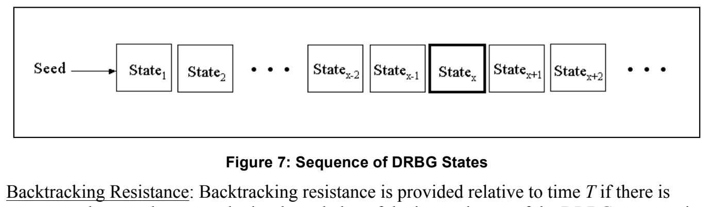
Figure 7: Sequence of DRBG States
図7：DRBG状態の系列
Backtracking Resistance: Backtracking resistance is provided relative to time \(T\) if there is assurance that an adversary who has knowledge of the internal state of the DRBG at some time subsequent to time \(T\) would be unable to distinguish between observations of ideal random bitstrings and (previously unseen) bitstrings that were output by the DRBG prior to time \(T\). This assumes that the adversary is incapable of performing the work required to negate the claimed security strength of the DRBG. Backtracking resistance means that a compromise of the DRBG internal state has no effect on the security of prior outputs. That is, an adversary who is given access to all of the prior output sequence cannot distinguish it from random output with less work than is associated with the security strength of the instantiation; if the adversary knows only part of the prior output, he cannot determine any bit of that prior output sequence that he has not already seen with better than a 50-50 chance.
For example, suppose that an adversary knows \(\mathit{State}_x\). Backtracking resistance means that:
バックトラッキング耐性：時刻\(T\)に対するバックトラッキング耐性が提供されるとは、時刻\(T\)より後のある時点でDRBGの内部状態を知る攻撃者が、理想的なランダムビット列の観測と、時刻\(T\)より前にDRBGが出力した（未観測の）ビット列とを識別できないという保証があることをいう。ここでは、攻撃者は、DRBGが主張するセキュリティ強度を無効にするのに必要な計算を実行できないものとする。バックトラッキング耐性とは、DRBGの内部状態が侵害されても過去の出力の安全性に影響しないことを意味する。つまり、攻撃者が過去の出力系列すべてにアクセスできても、インスタンス化のセキュリティ強度に相当する計算量未満では、その出力をランダム出力と識別できない（cannot）。過去の出力の一部しか知らない場合も、その出力系列のうちまだ見ていないビットを50%を超える確率では特定できない（cannot）。
例えば、攻撃者が\(\mathit{State}_x\)を知っているとする。バックトラッキング耐性により、次が成り立つ。
a. The output bits from \(\mathit{State}_1\) to \(\mathit{State}_{x-1}\) cannot be distinguished from random output, and
a. \(\mathit{State}_1\)から\(\mathit{State}_{x-1}\)までの出力ビットは、ランダム出力と区別できない（cannot）。また、
b. The prior internal state values themselves (\(\mathit{State}_1\) to \(\mathit{State}_{x-1}\)) cannot be recovered, given knowledge of the secret information in \(\mathit{State}_x\).
b. 以前の内部状態値そのもの（\(\mathit{State}_1\)から\(\mathit{State}_{x-1}\)まで）は、\(\mathit{State}_x\)の秘密情報を知っていても復元できない（cannot）。
Backtracking resistance can be provided by ensuring that the DRBG generation algorithm is a one-way function. All DRBG mechanisms in this Recommendation have been designed to provide backtracking resistance.
Prediction Resistance: Prediction resistance means that a compromise of the DRBG internal state has no effect on the security of future DRBG outputs. That is, an adversary who is given access to all of the output sequence after the compromise cannot distinguish it from random output with less work than is associated with the security strength of the instantiation; if the adversary knows only part of the future output sequence, he cannot predict any bit of that future output sequence that he does not already know (with better than a 50-50 chance).
For example, suppose that an adversary knows \(\mathit{State}_x\). Prediction resistance means that:
バックトラッキング耐性は、DRBG生成アルゴリズムが一方向関数であることを保証することで提供できる（can）。本推奨のすべてのDRBGメカニズムは、バックトラッキング耐性を提供するよう設計されている。
予測耐性：予測耐性とは、DRBG内部状態が侵害されても将来のDRBG出力の安全性に影響しないことをいう。つまり、侵害後の出力系列すべてにアクセスできる攻撃者は、インスタンス化のセキュリティ強度に相当する計算量未満では、それをランダム出力と識別できない（cannot）。攻撃者が将来の出力系列の一部しか知らない場合も、まだ知らないビットを（50%を超える確率では）予測できない（cannot）。
例えば、攻撃者が\(\mathit{State}_x\)を知っているとする。予測耐性により、次が成り立つ。
a. The output bits from \(\mathit{State}_{x+1}\) and forward cannot be distinguished from an ideal random bitstring by the adversary, and
a. \(\mathit{State}_{x+1}\)以降の出力ビットを、攻撃者は理想的なランダムビット列と区別できない（cannot）。また、
b. The future internal state values themselves (\(\mathit{State}_{x+1}\) and forward) cannot be predicted (with better than a 50-50 chance), given knowledge of \(\mathit{State}_x\).
b. \(\mathit{State}_x\) を知っていても、将来の内部状態の値そのもの（\(\mathit{State}_{x+1}\) 以降）を（50 対 50 より高い確率で）予測できない（cannot）。
Prediction resistance is provided relative to time \(T\) if there is assurance that an adversary with knowledge of the state of the RBG at some time(s) prior to \(T\) (but incapable of performing work that matches the claimed security strength of the RBG) would be unable to distinguish between observations of ideal random bitstrings and (previously unseen) bitstrings output by the RBG at or subsequent to time \(T\). In particular, an RBG whose design allows the adversary to step forward from the initially compromised RBG state(s) to obtain knowledge of subsequent RBG states and the corresponding outputs (including the RBG state and output at time \(T\)) would not provide prediction resistance relative to time \(T\).
Prediction resistance can be provided only by ensuring that a DRBG is effectively reseeded with fresh entropy between producing output for consecutive DRBG requests. That is, an amount of entropy that is sufficient to support the security strength of the DRBG being reseeded (i.e., an amount that is at least equal to the security strength) must be provided to the DRBG in a way that ensures that knowledge of the current DRBG internal state does not allow an adversary any useful knowledge about future DRBG internal states or outputs. Prediction resistance can be provided when the randomness source is or has direct or indirect access to an entropy source or an NRBG (see Section 8.6.5).
For example, suppose that an adversary knows internal \(\mathit{State}_{x-2}\) (see Figure 7). If the adversary also knows the DRBG mechanism used, he then has enough information to compute \(\mathit{State}_{x-1}\) and \(\mathit{State}_x\). If prediction is then requested for the next bits that are to be output from the DRBG, new entropy bits will be inserted into the DRBG instantiation before \(\mathit{State}_{x+1}\) is produced that will create a separation between \(\mathit{State}_x\) and \(\mathit{State}_{x+1}\), i.e., the adversary will not be able to compute \(\mathit{State}_{x+1}\), simply by knowing \(\mathit{State}_x\); the work required will be greatly increased by the entropy inserted during the prediction request.
時刻\(T\)に対する予測耐性が提供されるとは、\(T\)より前のある時点でRBGの状態を知る攻撃者（ただしRBGが主張するセキュリティ強度に見合う計算は実行できない者）が、理想的なランダムビット列の観測と、時刻\(T\)以降にRBGが出力した（未観測の）ビット列とを識別できないという保証があることをいう。特に、最初に侵害されたRBG状態から順方向にたどって、後続のRBG状態と対応する出力（時刻\(T\)のRBG状態と出力を含む）を知ることができる設計のRBGは、時刻\(T\)に対する予測耐性を提供しない。
予測耐性は、連続するDRBG要求に対する出力の生成の間に、新鮮なエントロピーを用いてDRBGを実質的に再シードすることでのみ提供できる（can）。つまり、再シードするDRBGのセキュリティ強度を支えるのに十分な量（すなわち、少なくともそのセキュリティ強度に等しい量）のエントロピーを、現在のDRBG内部状態を知っても攻撃者が将来のDRBG内部状態や出力について有用な知識を得られない方法でDRBGに与えなければならない（must）。ランダム性源がエントロピー源もしくはNRBGそのものであるか、またはそれらに直接もしくは間接にアクセスできる場合、予測耐性を提供できる（can）（第8.6.5節参照）。
例えば、攻撃者が内部の\(\mathit{State}_{x-2}\)を知っているとする（図7参照）。攻撃者が使用されているDRBGメカニズムも知っていれば、\(\mathit{State}_{x-1}\)と\(\mathit{State}_x\)を計算するのに十分な情報を持つ。次にDRBGから出力されるビットに対して予測耐性が要求されると、\(\mathit{State}_{x+1}\)の生成前に新たなエントロピービットがDRBGのインスタンス化に挿入され、\(\mathit{State}_x\)と\(\mathit{State}_{x+1}\)の間に隔たりが生じる。つまり、攻撃者は\(\mathit{State}_{x+1}\)を、\(\mathit{State}_x\)を知るだけでは計算できない。必要な計算量は、予測耐性の要求時に挿入されたエントロピーによって大幅に増加する。
The introduction of fresh entropy via reseeding will also make the DRBG less susceptible to cryptanalytic attack. Whenever an entropy source is available, it is strongly recommended that DRBGs be requested to provide prediction resistance as often as is practical.
再シードによって新鮮なエントロピーを導入すると、DRBGは暗号解析攻撃を受けにくくなる。エントロピー源を利用できる場合は、実行可能な範囲でできるだけ頻繁に予測耐性を提供するようDRBGに要求することを強く推奨する。
9 DRBG Mechanism Functions
9 DRBGメカニズム機能
All DRBG mechanisms and algorithms are described in this document in pseudocode, which is intended to explain functionality. The pseudocode is not intended to constrain real-world implementations.
本文書では、すべてのDRBGメカニズムとアルゴリズムを擬似コードで記述する。擬似コードは機能を説明することを意図しており、実際の実装を制約することを意図したものではない。
Except for the health test function, which is discussed in Section 11.3, the functions of the DRBG mechanisms in this Recommendation are specified as an algorithm and an “envelope” of pseudocode around that algorithm. The pseudocode in each envelope (provided in this section) checks the input parameters, obtains input not provided via the input parameters, accesses the appropriate DRBG algorithm and manages the internal state. A function need not be implemented using such envelopes, but the function shall have equivalent functionality.
第11.3節で論じるヘルステスト機能を除き、本推奨のDRBGメカニズムの機能は、アルゴリズムと、そのアルゴリズムを包む擬似コードの「エンベロープ」として規定する。（本節で示す）各エンベロープの擬似コードは、入力パラメータを確認し、入力パラメータ経由で提供されない入力を取得し、適切なDRBGアルゴリズムにアクセスし、内部状態を管理する。機能をこうしたエンベロープを用いて実装する必要はないが、同等の機能を持たなければならない（shall）。
During instantiation and reseeding (see Sections 9.1 and 9.2), entropy input and (usually) a nonce are acquired for constructing a seed as discussed in Sections 8.6.1 and 8.6.2. In the specifications of this Recommendation, a Get_entropy_input function is used for this purpose. The entropy input and nonce shall be provided as discussed in Sections 8.6.5 and 8.6.7 and in [SP 800-90C].
インスタンス化および再シード（第9.1節および第9.2節参照）の際には、第8.6.1節および第8.6.2節で論じたとおり、シードを構成するためにエントロピー入力と（通常は）ノンスを取得する。本推奨の仕様では、この目的にGet_entropy_input機能を用いる。エントロピー入力とノンスは、第8.6.5節および第8.6.7節、ならびに [SP 800-90C] で論じるとおりに提供しなければならない（shall）。
The Get_entropy_input function is specified in pseudocode in [SP 800-90C] for various RBG constructions; however, in general, the function has the following meaning:
Get_entropy_input機能は、さまざまなRBG構成について [SP 800-90C] で擬似コードにより規定されているが、一般には、次の意味を持つ。
Get_entropy_input: A function that is used to obtain entropy input. The function call is:
Get_entropy_input：エントロピー入力を取得するために使用する機能。関数呼び出しは次のとおりである。
which requests a string of bits (entropy_input) with at least min_entropy bits of entropy. The length for the string shall be equal to or greater than min_length bits, and less than or equal to max_length bits. The prediction_resistance_request parameter indicates whether or not prediction resistance is to be provided during the request (i.e., whether fresh entropy is required4). A status code is returned from the function.
これは、少なくとも min_entropy ビットのエントロピーを持つビット列（entropy_input）を要求するものである。この文字列の長さは、min_length ビット以上、max_length ビット以下でなければならない（shall）。prediction_resistance_request パラメータは、この要求の際に予測耐性を提供するか否か（すなわち、新鮮なエントロピーが必要か否か4）を示す。この関数からはステータスコードが返される。
Note that an implementation may choose to define this functionality differently by omitting some of the parameters; for example, for many of the DRBG mechanisms, min_length = min_entropy for the Get_entropy_input function, in which case, the second parameter could be omitted.
実装は、一部のパラメータを省略するなどして、この機能を異なる形で定義することを選択してもよい点に注意すること。例えば、多くの DRBG メカニズムでは、Get_entropy_input 関数について min_length = min_entropy であり、その場合は 2 番目のパラメータを省略できる。
In the pseudocode in this section, two classes of error codes are returned: ERROR_FLAG and CATASTROPHIC_ERROR_FLAG. The handling of these classes of error codes is discussed in Section 11.4. The error codes may, in fact, provide information about the reason for the error; for example, when ERROR_FLAG is returned because of an incorrect input parameter, the ERROR_FLAG may indicate the problem.
本節の擬似コードでは、ERROR_FLAG と CATASTROPHIC_ERROR_FLAG の 2 種類のエラーコードが返される。これらのエラーコードの扱いは第11.4節で論じる。エラーコードは、実際にはエラーの理由に関する情報を提供する場合がある。例えば、不正な入力パラメータが原因で ERROR_FLAG が返される場合、ERROR_FLAG はその問題を示す場合がある。
Consuming applications should check the status returned from DRBG functions to determine whether or not the request was successful or if remediary action is required. For example, when the instantiate function returns an error, an instantiation will not have been created, and an invalid state_handle will be returned (see Section 9.1); however, the lack of a state_handle will be detected in a subsequent reseed or generate request. When the reseed function returns an error (see Section 9.2), the indicated instantiation will not have been reseeded (i.e., the internal state will not have been injected with fresh entropy). When the generate function returns an error, a null string is returned as the output string (see Section 9.3.1) and shall not be used as pseudorandom output.
消費アプリケーションは、DRBG 関数から返されたステータスを確認して、要求が成功したか、あるいは是正措置が必要かを判断すべきである（should）。例えば、instantiate 関数がエラーを返した場合、インスタンス化は作成されておらず、無効な state_handle が返される（第9.1節参照）。ただし、state_handle がないことは、その後の再シード要求または generate 要求で検出される。reseed 関数がエラーを返した場合（第9.2節参照）、指定されたインスタンス化は再シードされていない（すなわち、内部状態に新鮮なエントロピーが注入されていない）。generate 関数がエラーを返した場合は、出力文字列としてヌル文字列が返され（第9.3.1節参照）、これを疑似ランダム出力として使用してはならない（shall not）。
The request for prediction resistance rules out the use of a DRBG that does not have access to either an entropy source or NRBG.
予測耐性を要求する場合、エントロピー源またはNRBGのいずれにもアクセスできないDRBGは使用できない。
Comments are often included in the pseudocode in this Recommendation. A comment placed on a line that includes pseudocode applies to that line; a comment placed on a line containing no pseudocode applies to one or more lines of pseudocode immediately below that comment.
本推奨の擬似コードには、しばしばコメントが含まれる。擬似コードを含む行に置かれたコメントはその行に適用され、擬似コードを含まない行に置かれたコメントは、そのコメントの直下にある 1 行以上の擬似コードに適用される。
9.1 Instantiating a DRBG
9.1 DRBGのインスタンス化
A DRBG shall be instantiated prior to the generation of pseudorandom bits. The instantiate function:
疑似ランダムビット生成前にDRBGをインスタンス化しなければならない（shall）。instantiate機能は：
1.Checks the validity of the input parameters,
1.入力パラメータの妥当性を確認する。
2.Determines the security strength for the DRBG instantiation,
2.DRBGインスタンス化のセキュリティ強度を決定する。
3.Obtains entropy input with entropy sufficient to support the security strength,
3.セキュリティ強度を支えるのに十分なエントロピーを持つエントロピー入力を取得し、
4.Obtains the nonce (if required),
4.必要な場合はノンスを取得する。
5.Determines the initial internal state using the instantiate algorithm, and
5.instantiateアルゴリズムを用いて初期内部状態を決定する。
6. If an implementation supports multiple simultaneous instantiations of the same DRBG, a \(\mathit{state\_handle}\) for the internal state is returned to the consuming application (see below).
6. 同じDRBGの複数の同時インスタンス化を実装がサポートする場合、内部状態を示す\(\mathit{state\_handle}\)を利用側アプリケーションへ返す（以下参照）。
Let \(\mathit{working\_state}\) be the working state for the particular DRBG mechanism (e.g., \(\mathbf{HMAC\_DRBG}\)), and let \(\mathit{min\_length}\), \(\mathit{max\_length}\), and \(\mathit{highest\_supported\_security\_strength}\) be defined for each DRBG mechanism (see Section 10). Let \(\mathbf{Instantiate\_algorithm}\) be a call to the appropriate instantiate algorithm for the DRBG mechanism (see Section 10).
The following or an equivalent process shall be used to instantiate a DRBG.
\(\mathbf{Instantiate\_function}\) (\(\mathit{requested\_instantiation\_security\_strength}\), \(\mathit{prediction\_resistance\_flag}\), \(\mathit{personalization\_string}\)):
\(\mathit{working\_state}\)を当該DRBGメカニズム（例：\(\mathbf{HMAC\_DRBG}\)）のワーキング状態とし、\(\mathit{min\_length}\)、\(\mathit{max\_length}\)、および\(\mathit{highest\_supported\_security\_strength}\)は各DRBGメカニズムについて定義されるものとする（第10節を参照）。\(\mathbf{Instantiate\_algorithm}\)は、当該DRBGメカニズムに対応するインスタンス化アルゴリズムの呼出しとする（第10節を参照）。
DRBGのインスタンス化には、以下の処理または同等の処理を用いなければならない。
\(\mathbf{Instantiate\_function}\) (\(\mathit{requested\_instantiation\_security\_strength}\)、\(\mathit{prediction\_resistance\_flag}\)、\(\mathit{personalization\_string}\))：
1. \(\mathit{requested\_instantiation\_security\_strength}\): A requested security strength for the instantiation. Implementations that support only one security strength do not require this parameter; however, any consuming application using that implementation must be aware of the security strength that is supported.
1. \(\mathit{requested\_instantiation\_security\_strength}\)：インスタンス化時に要求するセキュリティ強度。強度を1種類のみサポートする実装ではこのパラメータは不要だが、その実装を使う利用側アプリケーションはサポートされる強度を把握していなければならない（must）。
2. \(\mathit{prediction\_resistance\_flag}\): Indicates whether or not prediction resistance may be required by the consuming application during one or more requests for pseudorandom bits. Implementations that always provide or do not support prediction resistance may not need to support this parameter if the intent is implicitly known. However, the user of a consuming application must determine whether or not prediction resistance may be required by the consuming application before electing to use such an implementation. If the \(\mathit{prediction\_resistance\_flag}\) is not needed (i.e., it is known that prediction resistance is always performed or is not supported), then the \(\mathit{prediction\_resistance\_flag}\) input parameter and instantiate process step 2 are omitted, and the \(\mathit{prediction\_resistance\_flag}\) is omitted from the internal state in step 11 of the instantiate process. In addition, step 6 can be modified to not perform a check for the \(\mathit{prediction\_resistance\_flag}\) when the flag is not used in an implementation; in this case, the \(\mathbf{Get\_entropy\_input}\) call need not include the \(\mathit{prediction\_resistance\_request}\) parameter.
2. \(\mathit{prediction\_resistance\_flag}\)：利用側アプリケーションが、1回以上の疑似ランダムビット要求において予測耐性を必要とする可能性があるかどうかを示す。常に予測耐性を提供する実装、または予測耐性をサポートしない実装では、その意図が暗黙に分かっていれば、このパラメータをサポートしなくてもよい場合がある。ただし、利用側アプリケーションの利用者は、そのような実装の使用を選ぶ前に、利用側アプリケーションが予測耐性を必要とする可能性があるかどうかを判断しなければならない。\(\mathit{prediction\_resistance\_flag}\)が不要な場合（すなわち、予測耐性が常に実行される、またはサポートされないことが分かっている場合）は、\(\mathit{prediction\_resistance\_flag}\)入力パラメータとインスタンス化処理のステップ2を省略し、インスタンス化処理のステップ11で内部状態から\(\mathit{prediction\_resistance\_flag}\)を省略する。さらに、実装でこのフラグを使用しない場合は、\(\mathit{prediction\_resistance\_flag}\)を確認しないようにステップ6を変更できる。この場合、\(\mathbf{Get\_entropy\_input}\)呼出しに\(\mathit{prediction\_resistance\_request}\)パラメータを含める必要はない。
3. \(\mathit{personalization\_string}\): An optional input that provides personalization information (see Sections 8.6.1 and 8.7.1). The maximum length of the personalization string (\(\mathit{max\_personalization\_string\_length}\)) is implementation dependent, but shall be less than or equal to the maximum length specified for the given DRBG mechanism (see Section 10). If the input of a personalization string is not supported, then the \(\mathit{personalization\_string}\) input parameter and step 3 of the instantiate process are omitted, and instantiate process step 9 is modified to omit the personalization string.
3. \(\mathit{personalization\_string}\)：パーソナライゼーション情報を提供する任意入力（第8.6.1節および第8.7.1節参照）。パーソナライゼーション文字列の最大長（\(\mathit{max\_personalization\_string\_length}\)）は実装に依存するが、当該DRBGメカニズムで指定された最大長以下でなければならない（shall）（第10節参照）。パーソナライゼーション文字列の入力がサポートされない場合、\(\mathit{personalization\_string}\)入力パラメータおよびinstantiate処理のステップ3を省略し、instantiate処理のステップ9はパーソナライゼーション文字列を省略するよう変更する。
Required information not provided by the consuming application during instantiation (This information shall not be provided by the consuming application as an input parameter during the instantiate request):
インスタンス化時に利用側アプリケーションが提供しない必須情報（利用側アプリケーションはinstantiate要求の入力パラメータとしてこれらを提供してはならない（shall not））：
1. \(\mathit{entropy\_input}\): Input bits containing entropy. The maximum length of the \(\mathit{entropy\_input}\) is implementation dependent, but shall be less than or equal to the specified maximum length for the selected DRBG mechanism (see Section 10).
1. \(\mathit{entropy\_input}\)：エントロピーを含む入力ビット。\(\mathit{entropy\_input}\)の最大長は実装に依存するが、選択したDRBGメカニズムの指定最大長以下でなければならない（shall）（第10節参照）。
2. \(\mathit{nonce}\): A nonce as specified in Section 8.6.7. Note that if a random value is used in the nonce, the \(\mathit{entropy\_input}\) and random portion of the \(\mathit{nonce}\) could be acquired using a single \(\mathbf{Get\_entropy\_input}\) call (see step 6 of the instantiate process); in this case, the first parameter of the \(\mathbf{Get\_entropy\_input}\) call is adjusted to include the entropy for the \(\mathit{nonce}\) (i.e., the \(\mathit{security\_strength}\) is increased by at least \(\tfrac{1}{2}\,\mathit{security\_strength}\), and \(\mathit{min\text{-}length}\) is increased to accommodate the length of the nonce), instantiate process step 8 is omitted, and the \(\mathit{nonce}\) is omitted from the parameter list in instantiate process step 9.
2. \(\mathit{nonce}\)：第8.6.7節に規定するノンス。ノンスにランダム値を用いる場合、\(\mathit{entropy\_input}\)と\(\mathit{nonce}\)のランダム部分を1回の\(\mathbf{Get\_entropy\_input}\)呼出しで取得してもよい（could）（instantiate処理のステップ6参照）。この場合、\(\mathbf{Get\_entropy\_input}\)呼出しの第1パラメータを、\(\mathit{nonce}\)のエントロピーを含むように調整する（すなわち、\(\mathit{security\_strength}\)を少なくとも\(\tfrac{1}{2}\,\mathit{security\_strength}\)だけ増やし、\(\mathit{min\text{-}length}\)をノンスの長さに対応できるよう増やす）。また、instantiate処理のステップ8を省略し、instantiate処理のステップ9のパラメータ一覧から\(\mathit{nonce}\)を省略する。
Note that in some cases, a nonce will not be used by a DRBG mechanism; in this case, step 8 is omitted, and the \(\mathit{nonce}\) is omitted from the parameter list in instantiate process step 9.
DRBGメカニズムによってはノンスを使わない場合がある。その場合はステップ8を省略し、instantiate処理のステップ9のパラメータ一覧から\(\mathit{nonce}\)を省略する。
Output to a consuming application after instantiation:
インスタンス化後に利用側アプリケーションへ返す出力：
1. \(\mathit{status}\): The status returned from the instantiate function. If any status other than SUCCESS is returned, either no \(\mathit{state\_handle}\) or an invalid \(\mathit{state\_handle}\) shall be returned to the consuming application. A consuming application should check the \(\mathit{status}\) to determine that the DRBG has been correctly instantiated.
1. \(\mathit{status}\)：instantiate機能から返される状態。SUCCESS以外の状態を返す場合、\(\mathit{state\_handle}\)を返さないか、無効な\(\mathit{state\_handle}\)を利用側アプリケーションへ返さなければならない（shall）。DRBGが正しくインスタンス化されたことを確かめるため、利用側アプリケーションは\(\mathit{status}\)を確認すべきである（should）。
2. \(\mathit{state\_handle}\): Used to identify the internal state for this instantiation in subsequent calls to the generate, reseed, uninstantiate and health test functions.
2. \(\mathit{state\_handle}\)：後続のgenerate、reseed、uninstantiateおよびヘルステスト機能の呼出しで、このインスタンス化の内部状態を識別するために使用する。
If a state handle is not required for an implementation because the implementation does not support multiple simultaneous instantiations, a \(\mathit{state\_handle}\) need not be returned. In this case, instantiate process step 10 is omitted, process step 11 is revised to save the only internal state, and process step 12 is altered to omit the \(\mathit{state\_handle}\).
複数の同時インスタンス化をサポートしないために実装で状態ハンドルが不要な場合、\(\mathit{state\_handle}\)を返す必要はない（need not）。この場合、instantiate処理のステップ10を省略し、ステップ11を唯一の内部状態を保存するよう改め、ステップ12では\(\mathit{state\_handle}\)を省略するよう変更する。
Information retained within the DRBG mechanism boundary after instantiation:
インスタンス化後にDRBGメカニズム境界内に保持する情報：
The internal state for the DRBG, including the \(\mathit{working\_state}\) and administrative information (see Sections 8.3 and 10 for definitions of the \(\mathit{working\_state}\) and administrative information). Instantiate Process:
\(\mathit{working\_state}\)および管理情報を含むDRBGの内部状態（\(\mathit{working\_state}\)および管理情報の定義は第8.3節および第10節参照）。Instantiate Process：
Comment: Check the validity of the input parameters.
コメント：入力パラメータの妥当性を確認する。
1. If \(\mathit{requested\_instantiation\_security\_strength} > \mathit{highest\_supported\_security\_strength}\), then return \((\mathrm{ERROR\_FLAG}, \mathrm{Invalid})\).
1. \(\mathit{requested\_instantiation\_security\_strength} > \mathit{highest\_supported\_security\_strength}\)の場合、\((\mathrm{ERROR\_FLAG}, \mathrm{Invalid})\)を返す。
2. If \(\mathit{prediction\_resistance\_flag}\) is set, and prediction resistance is not supported, then return \((\mathrm{ERROR\_FLAG}, \mathrm{Invalid})\).
2. \(\mathit{prediction\_resistance\_flag}\)が設定されており、予測耐性をサポートしない場合、\((\mathrm{ERROR\_FLAG}, \mathrm{Invalid})\)を返す。
3. If the length of the \(\mathit{personalization\_string}\) \(>\) \(\mathit{max\_personalization\_string\_length}\), return \((\mathrm{ERROR\_FLAG}, \mathrm{Invalid})\).
3. \(\mathit{personalization\_string}\)の長さ \(>\) \(\mathit{max\_personalization\_string\_length}\) の場合、\((\mathrm{ERROR\_FLAG}, \mathrm{Invalid})\)を返す。
4. Set \(\mathit{security\_strength}\) to the lowest security strength greater than or equal to \(\mathit{requested\_instantiation\_security\_strength}\) from the set \(\{112, 128, 192, 256\}\).
4. \(\mathit{security\_strength}\)を、\(\mathit{requested\_instantiation\_security\_strength}\)以上で最小のセキュリティ強度に設定する。この強度は集合\(\{112, 128, 192, 256\}\)から選ぶ。
5.Null step. Comment: This null step replaces a step from the original version of SP 800-90 without changing the step numbers.
5.Nullステップ。コメント：このNullステップは、ステップ番号を変えずにSP 800-90初版のステップを置き換える。
Comment: Obtain the entropy input.
コメント：エントロピー入力を取得する。
6. \((\mathit{status}, \mathit{entropy\_input}) = \mathbf{Get\_entropy\_input}\) (\(\mathit{security\_strength}\), \(\mathit{min\_length}\), \(\mathit{max\_length}\), \(\mathit{prediction\_resistance\_request}\)).
6. \((\mathit{status}, \mathit{entropy\_input}) = \mathbf{Get\_entropy\_input}\) (\(\mathit{security\_strength}\)、\(\mathit{min\_length}\)、\(\mathit{max\_length}\)、\(\mathit{prediction\_resistance\_request}\))。
Comment: \(\mathit{status}\) indications other than SUCCESS could be ERROR_FLAG or \(\mathbf{CATASTROPHIC\_ERROR\_FLAG}\), in which case, the status is returned to the consuming application to handle. The \(\mathbf{Get\_entropy\_input}\) call could return a \(\mathit{status}\) of ERROR_FLAG to indicate that entropy is currently unavailable, and could return \(\mathbf{CATASTROPHIC\_ERROR\_FLAG}\) to indicate that an entropy source failed.
コメント：SUCCESS以外の\(\mathit{status}\)の表示は、ERROR_FLAGまたは\(\mathbf{CATASTROPHIC\_ERROR\_FLAG}\)でありうる（could）。その場合、statusを利用側アプリケーションに返して処理させる。\(\mathbf{Get\_entropy\_input}\)呼出しは、エントロピーが現在利用できないことを示すために\(\mathit{status}\)としてERROR_FLAGを返すことがあり（could）、エントロピー源が故障したことを示すために\(\mathbf{CATASTROPHIC\_ERROR\_FLAG}\)を返すことがある（could）。
7. If \((\mathit{status} \ne \mathrm{SUCCESS})\), return \((\mathit{status}, \mathrm{Invalid})\).
7. \((\mathit{status} \ne \mathrm{SUCCESS})\)の場合、\((\mathit{status}, \mathrm{Invalid})\)を返す。
8. Obtain a \(\mathit{nonce}\). Comment: This step shall include any appropriate checks on the acceptability of the \(\mathit{nonce}\). See Section 8.6.7.
8. \(\mathit{nonce}\)を取得する。コメント：このステップには、\(\mathit{nonce}\)が許容可能かを確認する適切な検査を含めなければならない（shall）。第8.6.7節参照。
Comment: Call the appropriate instantiate algorithm in Section 10 to obtain values for the initial \(\mathit{working\_state}\).
コメント：第10節の適切なinstantiateアルゴリズムを呼び出し、初期\(\mathit{working\_state}\)の値を取得する。
9. \(\mathit{initial\_working\_state} = \mathbf{Instantiate\_algorithm}(\mathit{entropy\_input}, \mathit{nonce}, \mathit{personalization\_string}, \mathit{security\_strength})\).
9. \(\mathit{initial\_working\_state} = \mathbf{Instantiate\_algorithm}(\mathit{entropy\_input}, \mathit{nonce}, \mathit{personalization\_string}, \mathit{security\_strength})\)。
10. Get a \(\mathit{state\_handle}\) for a currently empty internal state. If an empty internal state cannot be found, return \((\mathrm{ERROR\_FLAG}, \mathrm{Invalid})\).
10. 現在空の内部状態に対する\(\mathit{state\_handle}\)を取得する。空の内部状態が見つからない（cannot）場合、\((\mathrm{ERROR\_FLAG}, \mathrm{Invalid})\)を返す。
11. Set the internal state for the new instantiation (e.g., as indicated by \(\mathit{state\_handle}\)) to the initial values for the internal state (i.e., set the \(\mathit{working\_state}\) to the values returned as \(\mathit{initial\_working\_state}\) in step 9) and any other values required for the \(\mathit{working\_state}\) (see Section 10), and set the administrative information to the appropriate values (e.g., the values of \(\mathit{security\_strength}\) and the \(\mathit{prediction\_resistance\_flag}\)).
11. 新しいインスタンス化の内部状態（例：\(\mathit{state\_handle}\)で示される状態）を、内部状態の初期値（すなわち、\(\mathit{working\_state}\)をステップ9で\(\mathit{initial\_working\_state}\)として返された値に設定する）および\(\mathit{working\_state}\)に必要なその他の値（第10節参照）に設定し、管理情報を適切な値（例：\(\mathit{security\_strength}\)および\(\mathit{prediction\_resistance\_flag}\)の値）に設定する。
12. Return \((\mathrm{SUCCESS}, \mathit{state\_handle})\).
12. \((\mathrm{SUCCESS}, \mathit{state\_handle})\) を返す。
9.2 Reseeding a DRBG Instantiation
9.2 DRBGインスタンス化の再シード
The reseeding of an instantiation is not required, but is recommended whenever a consuming application and implementation are able to perform this process. Reseeding will insert additional entropy into the generation of pseudorandom bits. Reseeding may be:
インスタンス化の再シードは必須ではないが、利用側アプリケーションと実装が実行可能な場合には推奨される。再シードは疑似ランダムビット生成に追加エントロピーを挿入する。再シードは次のように行われてもよい（may）：
•Explicitly requested by a consuming application,
•利用側アプリケーションによる明示的な要求、
•Performed when prediction resistance is requested by a consuming application,
•利用側アプリケーションにより予測耐性が要求されたときに実行される、
•Triggered by the generate function when a predetermined number of pseudorandom outputs have been produced or a predetermined number of generate requests have been made (i.e., at the end of the seedlife), or
•generate機能により、所定数の疑似ランダム出力が生成されたとき、または所定数のgenerate要求が行われたとき（すなわちシード寿命の終了時）に起動される場合、または
•Triggered by external events (e.g., whenever entropy is available).
•外部事象（例：エントロピーが利用可能になった場合）により起動した場合。
The reseed function:
reseed機能は：
1.Checks the validity of the input parameters,
1.入力パラメータの妥当性を確認する。
2.Obtains entropy input from a randomness source that supports the security strength of the DRBG, and
2.DRBGのセキュリティ強度を支えるランダム性源からエントロピー入力を取得する。
3.Using the reseed algorithm, combines the current working state with the new entropy input and any additional input to determine the new working state.
3.reseedアルゴリズムを用いて、現在の作業状態を新しいエントロピー入力および追加入力と組み合わせ、新たな作業状態を決定する。
Let \(\mathit{working\_state}\) be the working state for the particular DRBG instantiation (e.g., \(\mathbf{HMAC\_DRBG}\)) , let \(\mathit{min\_length}\) and \(\mathit{max\_length}\) be defined for each DRBG mechanism, and let \(\mathbf{Reseed\_algorithm}\) be a call to the appropriate reseed algorithm for the DRBG mechanism (see Section 10).
The following or an equivalent process shall be used to reseed the DRBG instantiation.
\(\mathbf{Reseed\_function}\ (\mathit{state\_handle}, \mathit{prediction\_resistance\_request}, \mathit{additional\_input})\):
1) \(\mathit{state\_handle}\): A pointer or index that indicates the internal state to be reseeded. If a state handle is not used by an implementation because the implementation does not support multiple simultaneous instantiations, a \(\mathit{state\_handle}\) is not provided as input. Since there is only a single internal state in this case, reseed process step 1 obtains the contents of the internal state, and reseed process step 6 replaces the \(\mathit{working\_state}\) of this internal state.
\(\mathit{working\_state}\) を該当するDRBGインスタンス化（例：\(\mathbf{HMAC\_DRBG}\)）の作業状態とし、\(\mathit{min\_length}\) および \(\mathit{max\_length}\) は各DRBGメカニズムについて定義されるものとし、\(\mathbf{Reseed\_algorithm}\) は当該DRBGメカニズムに適した再シードアルゴリズム（第10節参照）の呼出しとする。
以下の処理または同等の処理を用いてDRBGインスタンス化を再シードしなければならない（shall）。
\(\mathbf{Reseed\_function}\ (\mathit{state\_handle}, \mathit{prediction\_resistance\_request}, \mathit{additional\_input})\):
1) \(\mathit{state\_handle}\)：再シードする内部状態を示すポインタまたはインデックス。実装が複数の同時インスタンス化をサポートしないために状態ハンドルを使わない場合、\(\mathit{state\_handle}\) は入力として与えない。この場合、内部状態は一つしかないので、再シード処理のステップ1で内部状態の内容を取得し、再シード処理のステップ6でこの内部状態の \(\mathit{working\_state}\) を置き換える。
2) \(\mathit{prediction\_resistance\_request}\): Indicates whether or not prediction resistance is to be provided during the request (i.e., whether or not fresh entropy bits are required)5. Without the explicit prediction resistance request, the entropy input could be provided from either a DRBG with no access to an entropy source (i.e., fresh entropy would not be provided), or the entropy input could be provided by an entropy source or by an RBG with access to an entropy source (i.e., fresh entropy would be provided in these cases).
2) \(\mathit{prediction\_resistance\_request}\)：この要求時に予測耐性を提供するかどうか（すなわち、新鮮なエントロピービットが必要かどうか）を示す5。明示的な予測耐性要求がなければ、エントロピー入力は、エントロピー源にアクセスできないDRBGから提供されることもあれば（すなわち、新鮮なエントロピーは提供されない）、エントロピー源、またはエントロピー源にアクセスできるRBGから提供されることもある（すなわち、これらの場合には新鮮なエントロピーが提供される）。
DRBGs that are implemented to always support prediction resistance or to never support prediction resistance do not require this parameter. However, when prediction resistance is not supported, the user of a consuming application must determine whether or not prediction resistance may be required by the application before electing to use such a DRBG implementation.
予測耐性を常にサポートする、または決してサポートしないよう実装されたDRBGでは、このパラメータは不要である。ただし、予測耐性がサポートされない場合、利用側アプリケーションのユーザーは、そのDRBG実装を選択する前に、アプリケーションが予測耐性を必要とする可能性があるかどうかを判断しなければならない。
If prediction resistance is not supported, then the \(\mathit{prediction\_resistance\_request}\) input parameter and step 2 of the reseed process is omitted, and reseed process step 4 is modified to omit the \(\mathit{prediction\_resistance\_request}\) parameter.
予測耐性をサポートしない場合、\(\mathit{prediction\_resistance\_request}\) 入力パラメータと再シード処理のステップ2を省略し、再シード処理のステップ4を変更して \(\mathit{prediction\_resistance\_request}\) パラメータを省略する。
If prediction resistance is always performed, then the \(\mathit{prediction\_resistance\_request}\) input parameter and reseed process step 2 may be omitted, and reseed process step 4 is replaced by:
予測耐性が常に実施される場合、\(\mathit{prediction\_resistance\_request}\) 入力パラメータおよび再シード処理のステップ2を省略してもよく（may）、再シード処理のステップ4は次に置き換える：
\((\mathit{status}, \mathit{entropy\_input}) = \mathbf{Get\_entropy\_input}\ (\mathit{security\_strength}, \mathit{min\_length}, \mathit{max\_length})\)
3) \(\mathit{additional\_input}\): An optional input. The maximum length of the \(\mathit{additional\_input}\) (\(\mathit{max\_additional\_input\_length}\)) is implementation dependent, but shall be less than or equal to the maximum value specified for the given DRBG mechanism (see Section 10). If the input by a consuming application of \(\mathit{additional\_input}\) is not supported, then the input parameter and step 2 of the reseed process are omitted, and step 5 of the reseed process is modified to remove the \(\mathit{additional\_input}\) from the parameter list.
\((\mathit{status}, \mathit{entropy\_input}) = \mathbf{Get\_entropy\_input}\ (\mathit{security\_strength}, \mathit{min\_length}, \mathit{max\_length})\)
3) \(\mathit{additional\_input}\)：任意の入力。\(\mathit{additional\_input}\) の最大長（\(\mathit{max\_additional\_input\_length}\)）は実装に依存するが、当該DRBGメカニズムについて指定された最大値以下でなければならない（shall）（第10節参照）。利用側アプリケーションによる \(\mathit{additional\_input}\) の入力がサポートされない場合、この入力パラメータと再シード処理のステップ2を省略し、再シード処理のステップ5を変更してパラメータ一覧から \(\mathit{additional\_input}\) を除く。
Required information not provided by the consuming application during reseeding (This information shall not be provided by the consuming application as an input parameter during the reseed request):
再シード時に利用側アプリケーションが提供しない必須情報（この情報は、reseed要求時の入力パラメータとして利用側アプリケーションが提供してはならない）：
1. \(\mathit{entropy\_input}\): Input bits containing entropy. This input shall not be provided by the DRBG instantiation being reseeded. The maximum length of the \(\mathit{entropy\_input}\) is implementation dependent, but shall be less than or equal to the specified maximum length for the selected DRBG mechanism (see Section 10).
1. \(\mathit{entropy\_input}\)：エントロピーを含む入力ビット。この入力を再シード対象のDRBGインスタンス化から提供してはならない（shall not）。\(\mathit{entropy\_input}\) の最大長は実装に依存するが、選択したDRBGメカニズムについて指定された最大長以下でなければならない（shall）（第10節参照）。
2. Internal state values required by the DRBG for the \(\mathit{working\_state}\) and administrative information, as appropriate.
2. DRBGが \(\mathit{working\_state}\) および管理情報のために必要とする内部状態値（該当する場合）。
Output to a consuming application after reseeding:
再シード後に利用側アプリケーションへ返す出力：
1. \(\mathit{status}\): The status returned from the function.
1. \(\mathit{status}\)：機能から返される状態。
Information retained within the DRBG mechanism boundary after reseeding:
Replaced internal state values (i.e., the \(\mathit{working\_state}\)).
Reseed Process:
再シード後にDRBGメカニズム境界内に保持する情報：
置換後の内部状態値（すなわち \(\mathit{working\_state}\)）。
再シード処理：
Comment: Get the current internal state and check the input parameters.
コメント：現在の内部状態を取得し、入力パラメータを確認する。
1. Using \(\mathit{state\_handle}\), obtain the current internal state. If \(\mathit{state\_handle}\) indicates an invalid or unused internal state, return \((\mathrm{ERROR\_FLAG})\).
1. \(\mathit{state\_handle}\) を用いて現在の内部状態を取得する。\(\mathit{state\_handle}\) が無効または未使用の内部状態を示す場合、\((\mathrm{ERROR\_FLAG})\) を返す。
2. If \(\mathit{prediction\_resistance\_request}\) is set, and \(\mathit{prediction\_resistance\_flag}\) is not set, then return \((\mathrm{ERROR\_FLAG})\).
2. \(\mathit{prediction\_resistance\_request}\) が設定され、かつ \(\mathit{prediction\_resistance\_flag}\) が設定されていない場合、\((\mathrm{ERROR\_FLAG})\) を返す。
3. If the length of the \(\mathit{additional\_input} > \mathit{max\_additional\_input\_length}\), return \((\mathrm{ERROR\_FLAG})\).
3. 長さについて \(\mathit{additional\_input} > \mathit{max\_additional\_input\_length}\) である場合、\((\mathrm{ERROR\_FLAG})\) を返す。
Comment: Obtain the entropy input.
コメント：エントロピー入力を取得する。
4. \((\mathit{status}, \mathit{entropy\_input}) = \mathbf{Get\_entropy\_input}\ (\mathit{security\_strength}, \mathit{min\_length}, \mathit{max\_length}, \mathit{prediction\_resistance\_request})\).
4. \((\mathit{status}, \mathit{entropy\_input}) = \mathbf{Get\_entropy\_input}\ (\mathit{security\_strength}, \mathit{min\_length}, \mathit{max\_length}, \mathit{prediction\_resistance\_request})\)。
Comment: \(\mathit{status}\) indications other than \(\mathrm{SUCCESS}\) could be \(\mathrm{ERROR\_FLAG}\) or \(\mathbf{CATASTROPHIC\_ERROR\_FLAG}\), in which case, the status is returned to the consuming application to handle. The \(\mathbf{Get\_entropy\_input}\) call could return a \(\mathit{status}\) of \(\mathrm{ERROR\_FLAG}\) to indicate that entropy is currently unavailable, and could return \(\mathbf{CATASTROPHIC\_ERROR\_FLAG}\) to indicate that an entropy source failed.
コメント：\(\mathit{status}\) の表示が \(\mathrm{SUCCESS}\) 以外の場合、\(\mathrm{ERROR\_FLAG}\) または \(\mathbf{CATASTROPHIC\_ERROR\_FLAG}\) でありうる。その場合、状態を利用側アプリケーションに返して処理させる。\(\mathbf{Get\_entropy\_input}\) 呼出しは、\(\mathit{status}\) として \(\mathrm{ERROR\_FLAG}\) を返してエントロピーが現在利用できないことを示すことがあり、\(\mathbf{CATASTROPHIC\_ERROR\_FLAG}\) を返してエントロピー源が故障したことを示すことがある。
5. If \((\mathit{status} \ne \mathrm{SUCCESS})\), return \((\mathit{status})\).
Comment: Get the new \(\mathit{working\_state}\) using the appropriate reseed algorithm in Section 10.
5. \((\mathit{status} \ne \mathrm{SUCCESS})\) の場合、\((\mathit{status})\) を返す。
コメント：第10節の適切な再シードアルゴリズムを用いて新しい \(\mathit{working\_state}\) を取得する。
6. \(\mathit{new\_working\_state} = \mathbf{Reseed\_algorithm}\ (\mathit{working\_state}, \mathit{entropy\_input}, \mathit{additional\_input})\).
6. \(\mathit{new\_working\_state} = \mathbf{Reseed\_algorithm}\ (\mathit{working\_state}, \mathit{entropy\_input}, \mathit{additional\_input})\)。
7 Replace the \(\mathit{working\_state}\) in the internal state for the DRBG instantiation (e.g., as indicated by \(\mathit{state\_handle}\)) with the values of \(\mathit{new\_working\_state}\) obtained in step 6.
7 \(\mathit{working\_state}\) を、DRBGインスタンス化の内部状態（例えば \(\mathit{state\_handle}\) で示されるもの）において、ステップ6で得た \(\mathit{new\_working\_state}\) の値に置き換える。
8. Return \((\mathrm{SUCCESS})\).
8. \((\mathrm{SUCCESS})\) を返す。
9.3 Generating Pseudorandom Bits Using a DRBG
9.3 DRBGを用いた疑似ランダムビットの生成
This function is used to generate pseudorandom bits after instantiation or reseeding. The generate function:
この機能はインスタンス化または再シード後に疑似ランダムビットを生成する。generate機能は：
1.Checks the validity of the input parameters.
1.入力パラメータの妥当性を確認する。
2.2. Calls the reseed function to obtain sufficient entropy if the instantiation needs additional entropy because the end of the seedlife has been reached or prediction resistance is required; see Sections 9.3.2 and 9.3.3 for more information on reseeding at the end of the seedlife and on handling prediction resistance requests.
2.2. シード寿命の終わりに達したため、または予測耐性が要求されたために、インスタンス化が追加のエントロピーを必要とする場合は、再シード関数を呼び出して十分なエントロピーを得る。シード寿命の終わりでの再シードおよび予測耐性要求の処理の詳細は、第9.3.2節および第9.3.3節を参照。
3.Generates the requested pseudorandom bits using the generate algorithm.
3.generateアルゴリズムを用いて要求された疑似ランダムビットを生成する。
4.Updates the working state.
4.作業状態を更新する。
5.Returns the requested pseudorandom bits to the consuming application.
5.要求された疑似ランダムビットを利用側アプリケーションへ返す。
9.3.1 The Generate Function
9.3.1 Generate機能
Let \(\mathit{outlen}\) be the length of the output block of the cryptographic primitive (see Section 10). Let \(\mathbf{Generate\_algorithm}\) be a call to the appropriate generate algorithm for the DRBG mechanism (see Section 10), and let \(\mathbf{Reseed\_function}\) be a call to the reseed function in Section 9.2.
The following or an equivalent process shall be used to generate pseudorandom bits.
\(\mathbf{Generate\_function}\) (\(\mathit{state\_handle}\), \(\mathit{requested\_number\_of\_bits}\), \(\mathit{requested\_security\_strength}\), \(\mathit{prediction\_resistance\_request}\), \(\mathit{additional\_input}\)):
\(\mathit{outlen}\)を暗号プリミティブの出力ブロックの長さとする（第10節を参照）。\(\mathbf{Generate\_algorithm}\)は当該DRBGメカニズムに対応する生成アルゴリズムの呼出しとし（第10節を参照）、\(\mathbf{Reseed\_function}\)は第9.2節の再シード関数の呼出しとする。
疑似ランダムビットの生成には、以下の処理または同等の処理を用いなければならない。
\(\mathbf{Generate\_function}\) (\(\mathit{state\_handle}\)、\(\mathit{requested\_number\_of\_bits}\)、\(\mathit{requested\_security\_strength}\)、\(\mathit{prediction\_resistance\_request}\)、\(\mathit{additional\_input}\))：
1. \(\mathit{state\_handle}\): A pointer or index that indicates the internal state to be used. If a state handle is not used by an implementation because the implementation does not support multiple simultaneous instantiations, a \(\mathit{state\_handle}\) is not provided as input. The \(\mathit{state\_handle}\) is then omitted from the input parameter list in process step 7.1, generate process steps 1 and 7.3 are used to obtain the contents of the internal state, and process step 10 replaces the \(\mathit{working\_state}\) of this internal state.
1. \(\mathit{state\_handle}\)：使用する内部状態を示すポインタまたはインデックス。実装が複数の同時インスタンス化をサポートしないために状態ハンドルを使わない場合、\(\mathit{state\_handle}\) は入力として与えない。その場合、\(\mathit{state\_handle}\) を処理ステップ7.1の入力パラメータ一覧から省略し、生成処理のステップ1および7.3で内部状態の内容を取得し、処理ステップ10でこの内部状態の \(\mathit{working\_state}\) を置き換える。
2. \(\mathit{requested\_number\_of\_bits}\): The number of pseudorandom bits to be returned from the generate function. The \(\mathit{max\_number\_of\_bits\_per\_request}\) is implementation dependent, but shall be less than or equal to the value provided in Section 10 for a specific DRBG mechanism.
2. \(\mathit{requested\_number\_of\_bits}\)：生成機能が返す疑似ランダムビットの数。\(\mathit{max\_number\_of\_bits\_per\_request}\) は実装に依存するが、特定のDRBGメカニズムについて第10節に示す値以下でなければならない（shall）。
3. \(\mathit{requested\_security\_strength}\): The security strength to be associated with the requested pseudorandom bits. DRBG implementations that support only one security strength do not require this parameter; however, any consuming application using that DRBG implementation must be aware of the supported security strength.
3. \(\mathit{requested\_security\_strength}\)：要求する疑似ランダムビットに対応付けるセキュリティ強度。セキュリティ強度を1種類のみサポートするDRBG実装ではこのパラメータは不要だが、そのDRBG実装を使う利用側アプリケーションは、サポートされるセキュリティ強度を把握していなければならない。
4. \(\mathit{prediction\_resistance\_request}\): Indicates whether or not prediction resistance is to be provided during the request. DRBGs that are implemented to always provide prediction resistance or that do not support prediction resistance do not require this parameter. However, when prediction resistance is not supported, the user of a consuming application must determine whether or not prediction resistance may be required by the application before electing to use such a DRBG implementation.
4. \(\mathit{prediction\_resistance\_request}\)：この要求時に予測耐性を提供するかどうかを示す。予測耐性を常に提供する、または予測耐性をサポートしないよう実装されたDRBGでは、このパラメータは不要である。ただし、予測耐性がサポートされない場合、利用側アプリケーションのユーザーは、そのDRBG実装を選択する前に、アプリケーションが予測耐性を必要とする可能性があるかどうかを判断しなければならない。
If prediction resistance is not supported, then the \(\mathit{prediction\_resistance\_request}\) input parameter and steps 5 and 9.2 of the generate process are omitted, and generate process steps 7 and 7.1 are modified to omit the check for the \(\mathit{prediction\_resistance\_request}\) term.
予測耐性がサポートされない場合、\(\mathit{prediction\_resistance\_request}\) 入力パラメータと生成処理のステップ5および9.2を省略し、生成処理のステップ7および7.1を変更して \(\mathit{prediction\_resistance\_request}\) 項の確認を省略する。
If prediction resistance is always performed, then the \(\mathit{prediction\_resistance\_request}\) input parameter and generate process steps 5 and 9.2 may be omitted, and generate process steps 7 and 8 may be replaced by:
予測耐性が常に実施される場合、\(\mathit{prediction\_resistance\_request}\) 入力パラメータと生成処理のステップ5および9.2を省略してもよく（may）、生成処理のステップ7および8を次に置き換えてもよい（may）：
\(\mathit{status} = \mathbf{Reseed\_function}\ (\mathit{state\_handle}, \mathit{additional\_input})\).
\(\mathit{status} = \mathbf{Reseed\_function}\ (\mathit{state\_handle}, \mathit{additional\_input})\)。
Comment: \(\mathit{status}\) indications other than \(\mathrm{SUCCESS}\) could be \(\mathrm{ERROR\_FLAG}\) or \(\mathbf{CATASTROPHIC\_ERROR\_FLAG}\), in which case, the status is returned to the consuming application to handle. The \(\mathbf{Get\_entropy\_input}\) call could return a \(\mathit{status}\) of \(\mathrm{ERROR\_FLAG}\) to indicate that entropy is currently unavailable, and could return \(\mathbf{CATASTROPHIC\_ERROR\_FLAG}\) to indicate that an entropy source failed.
コメント：\(\mathit{status}\) の表示が \(\mathrm{SUCCESS}\) 以外の場合、\(\mathrm{ERROR\_FLAG}\) または \(\mathbf{CATASTROPHIC\_ERROR\_FLAG}\) でありうる。その場合、状態を利用側アプリケーションに返して処理させる。\(\mathbf{Get\_entropy\_input}\) 呼出しは、\(\mathit{status}\) として \(\mathrm{ERROR\_FLAG}\) を返してエントロピーが現在利用できないことを示すことがあり、\(\mathbf{CATASTROPHIC\_ERROR\_FLAG}\) を返してエントロピー源が故障したことを示すことがある。
If \((\mathit{status} \ne \mathrm{SUCCESS})\), return \((\mathit{status}, \mathit{Null})\).
Using \(\mathit{state\_handle}\), obtain the new internal state.
\((\mathit{status}, \mathit{pseudorandom\_bits}, \mathit{new\_working\_state}) = \mathbf{Generate\_algorithm}\ (\mathit{working\_state}, \mathit{requested\_number\_of\_bits})\).
Note that if the input of \(\mathit{additional\_input}\) is not supported, then the \(\mathit{additional\_input}\) parameter in the \(\mathbf{Reseed\_function}\) call above may be omitted.
\((\mathit{status} \ne \mathrm{SUCCESS})\) の場合、\((\mathit{status}, \mathit{Null})\) を返す。
\(\mathit{state\_handle}\) を用いて新しい内部状態を取得する。
\((\mathit{status}, \mathit{pseudorandom\_bits}, \mathit{new\_working\_state}) = \mathbf{Generate\_algorithm}\ (\mathit{working\_state}, \mathit{requested\_number\_of\_bits})\)。
なお、\(\mathit{additional\_input}\) の入力がサポートされない場合、\(\mathit{additional\_input}\) パラメータは上記の \(\mathbf{Reseed\_function}\) 呼出しから省略してもよい（may）。
5. \(\mathit{additional\_input}\): An optional input. The maximum length of the \(\mathit{additional\_input}\) (\(\mathit{max\_additional\_input\_length}\)) is implementation dependent, but shall be less than or equal to the specified maximum length for the selected DRBG mechanism (see Section 10). If the input of \(\mathit{additional\_input}\) is not supported, then the input parameter, generate process steps 4 and 7.4, and the \(\mathit{additional\_input}\) input parameter in generate process steps 7.1 and 8 are omitted.
5. \(\mathit{additional\_input}\)：任意の入力。\(\mathit{additional\_input}\) の最大長（\(\mathit{max\_additional\_input\_length}\)）は実装に依存するが、選択したDRBGメカニズムについて指定された最大長以下でなければならない（shall）（第10節参照）。\(\mathit{additional\_input}\) の入力がサポートされない場合、この入力パラメータ、生成処理のステップ4および7.4、ならびに生成処理のステップ7.1および8の \(\mathit{additional\_input}\) 入力パラメータを省略する。
Required information not provided by the consuming application during generation:
生成時に利用側アプリケーションが提供しない必須情報：
1. Internal state values required for the \(\mathit{working\_state}\) and administrative information, as appropriate.
1. \(\mathit{working\_state}\) に必要な内部状態値、および該当する場合は管理情報。
Output to a consuming application after generation:
生成後に利用側アプリケーションへ返す出力：
1. \(\mathit{status}\): The status returned from the generate function. If any status other than SUCCESS is returned, a \(\mathit{Null}\) string shall be returned as the pseudorandom bits.
1. \(\mathit{status}\)：generate機能から返される状態。SUCCESS以外の状態が返される場合、疑似ランダムビットとして \(\mathit{Null}\) 文字列を返さなければならない（shall）。
2. \(\mathit{pseudorandom\_bits}\): The pseudorandom bits that were requested or a \(\mathit{Null}\) string.
2. \(\mathit{pseudorandom\_bits}\)：要求された疑似ランダムビット、または \(\mathit{Null}\) 文字列。
Information retained within the DRBG mechanism boundary after generation:
Replaced internal state values (i.e., the new \(\mathit{working\_state}\)).
Generate Process:
生成後にDRBGメカニズム境界内に保持する情報：
置換後の内部状態値（すなわち、新しい \(\mathit{working\_state}\)）。
生成処理：
Comment: Get the internal state and check the input parameters.
コメント：内部状態を取得し、入力パラメータを確認する。
1. Using \(\mathit{state\_handle}\), obtain the current internal state for the instantiation. If \(\mathit{state\_handle}\) indicates an invalid or unused internal state, then return \((\mathrm{ERROR\_FLAG}, \mathit{Null})\).
1. \(\mathit{state\_handle}\) を用いて、インスタンス化の現在の内部状態を取得する。\(\mathit{state\_handle}\) が無効または未使用の内部状態を示す場合、\((\mathrm{ERROR\_FLAG}, \mathit{Null})\) を返す。
2. If \(\mathit{requested\_number\_of\_bits} > \mathit{max\_number\_of\_bits\_per\_request}\), then return \((\mathrm{ERROR\_FLAG}, \mathit{Null})\).
2. \(\mathit{requested\_number\_of\_bits} > \mathit{max\_number\_of\_bits\_per\_request}\) の場合、\((\mathrm{ERROR\_FLAG}, \mathit{Null})\) を返す。
3. If \(\mathit{requested\_security\_strength} >\) the \(\mathit{security\_strength}\) indicated in the internal state, then return \((\mathrm{ERROR\_FLAG}, \mathit{Null})\).
3. \(\mathit{requested\_security\_strength} >\) 内部状態に示される \(\mathit{security\_strength}\) の場合、\((\mathrm{ERROR\_FLAG}, \mathit{Null})\) を返す。
4. If the length of the \(\mathit{additional\_input}\) \(> \mathit{max\_additional\_input\_length}\), then return \((\mathrm{ERROR\_FLAG}, \mathit{Null})\).
4. \(\mathit{additional\_input}\) の長さ \(> \mathit{max\_additional\_input\_length}\) の場合、\((\mathrm{ERROR\_FLAG}, \mathit{Null})\) を返す。
5. If \(\mathit{prediction\_resistance\_request}\) is set, and \(\mathit{prediction\_resistance\_flag}\) is not set, then return \((\mathrm{ERROR\_FLAG}, \mathit{Null})\).
5. \(\mathit{prediction\_resistance\_request}\) が設定されており、かつ \(\mathit{prediction\_resistance\_flag}\) が設定されていない場合、\((\mathrm{ERROR\_FLAG}, \mathit{Null})\) を返す。
6. Clear the \(\mathit{reseed\_required\_flag}\). Comment: See Section 9.3.2 for a discussion.
6. \(\mathit{reseed\_required\_flag}\) をクリアする。コメント：説明は第9.3.2節を参照。
Comment: Reseed if necessary (see Section 9.2).
コメント：必要な場合は再シードする（第9.2節参照）。
7. If \(\mathit{reseed\_required\_flag}\) is set, or if \(\mathit{prediction\_resistance\_request}\) is set, then
7. \(\mathit{reseed\_required\_flag}\) が設定されている場合、または \(\mathit{prediction\_resistance\_request}\) が設定されている場合：
7.1 \(\mathit{status} = \mathbf{Reseed\_function}(\mathit{state\_handle}, \mathit{prediction\_resistance\_request}, \mathit{additional\_input})\).
7.1 \(\mathit{status} = \mathbf{Reseed\_function}(\mathit{state\_handle}, \mathit{prediction\_resistance\_request}, \mathit{additional\_input})\)。
Comment: \(\mathit{status}\) indications other than SUCCESS could be ERROR_FLAG or CATASTROPHIC_ERROR_FLAG, in which case, the status is returned to the consuming application to handle. The \(\mathbf{Get\_entropy\_input}\) call could return a \(\mathit{status}\) of ERROR_FLAG to indicate that entropy is currently unavailable, and could return CATASTROPHIC_ERROR_FLAG to indicate that an entropy source failed.
コメント：SUCCESS以外の \(\mathit{status}\) 表示は、ERROR_FLAGまたはCATASTROPHIC_ERROR_FLAGでありうる。その場合、その状態は利用側アプリケーションに返され、そこで処理される。\(\mathbf{Get\_entropy\_input}\) 呼出しは、エントロピーが現在利用できないことを示すためにERROR_FLAGという \(\mathit{status}\) を返すことがあり、エントロピー源が故障したことを示すためにCATASTROPHIC_ERROR_FLAGを返すことがある。
7.2 If \((\mathit{status} \ne \mathrm{SUCCESS})\), then return \((\mathit{status}, \mathit{Null})\).
7.3 Using \(\mathit{state\_handle}\), obtain the new internal state.
7.4 \(\mathit{additional\_input} =\) the \(\mathit{Null}\) string.
7.5 Clear the \(\mathit{reseed\_required\_flag}\).
7.2 \((\mathit{status} \ne \mathrm{SUCCESS})\) の場合、\((\mathit{status}, \mathit{Null})\) を返す。
7.3 \(\mathit{state\_handle}\) を用いて、新しい内部状態を取得する。
7.4 \(\mathit{additional\_input} =\) \(\mathit{Null}\) 文字列。
7.5 \(\mathit{reseed\_required\_flag}\) をクリアする。
Comment: Request the generation of \(\mathit{pseudorandom\_bits}\) using the appropriate generate algorithm in Section 10.
コメント：第10節の適切なgenerateアルゴリズムを用いて \(\mathit{pseudorandom\_bits}\) の生成を要求する。
8. \((\mathit{status}, \mathit{pseudorandom\_bits}, \mathit{new\_working\_state}) = \mathbf{Generate\_algorithm}(\mathit{working\_state}, \mathit{requested\_number\_of\_bits}, \mathit{additional\_input})\).
8. \((\mathit{status}, \mathit{pseudorandom\_bits}, \mathit{new\_working\_state}) = \mathbf{Generate\_algorithm}(\mathit{working\_state}, \mathit{requested\_number\_of\_bits}, \mathit{additional\_input})\)。
9. If \(\mathit{status}\) indicates that a reseed is required before the requested bits can be generated, then
9. 要求されたビットを生成する前に再シードが必要であることを \(\mathit{status}\) が示す場合：
9.1 Set the \(\mathit{reseed\_required\_flag}\).
9.2 If the \(\mathit{prediction\_resistance\_flag}\) is set, then set the \(\mathit{prediction\_resistance\ request}\) indication.
9.3 Go to step 7.
9.1 \(\mathit{reseed\_required\_flag}\) を設定する。
9.2 \(\mathit{prediction\_resistance\_flag}\) が設定されている場合、\(\mathit{prediction\_resistance\ request}\) 表示を設定する。
9.3 ステップ7へ進む。
10. Replace the old \(\mathit{working\_state}\) in the internal state of the DRBG instantiation (e.g., as indicated by \(\mathit{state\_handle}\)) with the values of \(\mathit{new\_working\_state}\).
10. DRBGインスタンス化の内部状態にある旧 \(\mathit{working\_state}\) を（例えば、\(\mathit{state\_handle}\) が示すものを）、\(\mathit{new\_working\_state}\) の値に置き換える。
11. Return \((\mathrm{SUCCESS}, \mathit{pseudorandom\_bits})\).
11. \((\mathrm{SUCCESS}, \mathit{pseudorandom\_bits})\) を返す。
Implementation notes:
実装上の注記：
If a reseed capability is not supported, or a reseed is not desired, then generate process steps 6 and 7 are removed; generate process step 9 is replaced by:
再シード機能がサポートされない、または再シードを行わない場合、generate処理ステップ6および7を削除し、ステップ9を次に置き換える：
9. If \(\mathit{status}\) indicates that a reseed is required before the requested bits can be generated, then
9. 要求されたビットを生成する前に再シードが必要であることを \(\mathit{status}\) が示す場合：
9.1 \(\mathit{status} = \mathbf{Uninstantiate\_function}(\mathit{state\_handle})\).
9.2 Return an indication that the DRBG instantiation can no longer be used.
9.1 \(\mathit{status} = \mathbf{Uninstantiate\_function}(\mathit{state\_handle})\)。
9.2 DRBGインスタンス化をこれ以上使用できないことを示す表示を返す。
9.3.2 Reseeding at the End of the Seedlife
9.3.2 シード寿命終了時の再シード
When pseudorandom bits are requested by a consuming application, the generate function checks whether or not a reseed is required by comparing the counter within the internal state (see Section 8.3) against a predetermined reseed interval for the DRBG implementation. This is specified in the generate process (see Section 9.3.1) as follows:
a. Step 6 clears the \(\mathit{reseed\_required\_flag}\).
b. Step 7 checks the value of the \(\mathit{reseed\_required\_flag}\). At this time, the \(\mathit{reseed\_required\_flag}\) is clear, so step 7 is skipped unless prediction resistance was requested by the consuming application. For the purposes of this explanation, assume that prediction resistance was not requested.
c. Step 8 calls the \(\mathbf{Generate\_algorithm}\), which checks whether a reseed is required. If it is required, an appropriate \(\mathit{status}\) is returned.
d. Step 9 checks the \(\mathit{status}\) returned by the \(\mathbf{Generate\_algorithm}\). If the \(\mathit{status}\) does not indicate that a reseed is required, the generate process continues with step 10.
e. However, if the status indicates that a reseed is required (see step 9), then the \(\mathit{reseed\_required\_flag}\) is set, the \(\mathit{prediction\_resistance\_request}\) indicator is set if the instantiation is capable of performing prediction resistance, and processing continues by going back to step 7. This is intended to obtain fresh entropy for reseeding at the end of the reseed interval whenever access to fresh entropy is available (see the concept of Live Entropy Sources in [SP 800-90C]).
f. The substeps in step 7 are executed. The reseed function is called; any \(\mathit{additional\_input}\) provided by the consuming application in the generate request is used during reseeding. The new values of the internal state are acquired, any \(\mathit{additional\_input}\) provided by the consuming application in the generate request is replaced by a \(\mathit{Null}\) string, and the \(\mathit{reseed\_required\_flag}\) is cleared.
g. The generate algorithm is called (again) in step 8, the check of the returned \(\mathit{status}\) is made in step 9, and (presumably) step 10 is then executed.
利用側アプリケーションから疑似ランダムビットが要求されると、generate機能は、内部状態内のカウンタ（第8.3節参照）をDRBG実装の所定の再シード間隔と比較して、再シードが必要かどうかを確認する。これはgenerate処理（第9.3.1節参照）で次のように規定されている：
a. ステップ6は \(\mathit{reseed\_required\_flag}\) をクリアする。
b. ステップ7は \(\mathit{reseed\_required\_flag}\) の値を確認する。この時点では \(\mathit{reseed\_required\_flag}\) はクリアされているため、利用側アプリケーションが予測耐性を要求していない限り、ステップ7は飛ばされる。この説明では、予測耐性は要求されなかったものとする。
c. ステップ8は \(\mathbf{Generate\_algorithm}\) を呼び出し、これが再シードの要否を確認する。必要な場合、適切な \(\mathit{status}\) が返される。
d. ステップ9は \(\mathit{status}\)（\(\mathbf{Generate\_algorithm}\) が返したもの）を確認する。その \(\mathit{status}\) が再シードの必要を示していない場合、generate処理はステップ10に進む。
e. 一方、状態が再シードの必要を示している場合（ステップ9参照）、\(\mathit{reseed\_required\_flag}\) が設定され、インスタンス化が予測耐性を実行できるなら \(\mathit{prediction\_resistance\_request}\) 表示が設定され、処理はステップ7に戻って続く。これは、新しいエントロピーを利用できる場合には常に、再シード間隔の終了時に再シード用の新しいエントロピーを取得することを意図している（[SP 800-90C]のLive Entropy Sourceの概念を参照）。
f. ステップ7のサブステップが実行される。reseed機能が呼び出され、利用側アプリケーションがgenerate要求で与えた \(\mathit{additional\_input}\) があれば、再シードの際に使用される。内部状態の新しい値が取得され、利用側アプリケーションがgenerate要求で与えた \(\mathit{additional\_input}\) は \(\mathit{Null}\) 文字列に置き換えられ、\(\mathit{reseed\_required\_flag}\) がクリアされる。
g. ステップ8でgenerateアルゴリズムが（再度）呼び出され、返された \(\mathit{status}\) の確認がステップ9で行われ、その後（おそらく）ステップ10が実行される。
9.3.3 Handling Prediction Resistance Requests
9.3.3 予測耐性要求の処理
When pseudorandom bits are requested by a consuming application with prediction resistance, the generate function specified in Section 9.3.1 checks that the instantiation allows prediction resistance requests (see step 5 of the generate process); clears the \(\mathit{reseed\_required\_flag}\) (even though the flag won’t be used in this case); executes the substeps of generate process step 7, resulting in a reseed, a new internal state for the instantiation, and setting the additional input to a \(\mathit{Null}\) value; obtains pseudorandom bits (see generate process step 8); passes through generate process step 9, since another reseed will not be required; and continues with generate process step 10.
利用側アプリケーションが予測耐性付きで疑似ランダムビットを要求すると、第9.3.1節に規定するgenerate機能は、次の順に処理する。インスタンス化が予測耐性要求を許可していることを確認する（generate処理のステップ5参照）。\(\mathit{reseed\_required\_flag}\) をクリアする（この場合、このフラグは使用されないが）。generate処理ステップ7のサブステップを実行し、その結果、再シードが行われ、インスタンス化の新しい内部状態が得られ、追加入力が \(\mathit{Null}\) 値に設定される。疑似ランダムビットを取得する（generate処理ステップ8参照）。別の再シードは必要とされないため、generate処理ステップ9を通過する。そしてgenerate処理ステップ10に進む。
9.4 Removing a DRBG Instantiation
9.4 DRBGインスタンス化の解除
The internal state for an instantiation may need to be “released” by erasing (i.e., zeroizing) the contents of the internal state. The uninstantiate function:
インスタンス化の内部状態は、その内容を消去（すなわちゼロ化）して「解放」する必要がある場合がある（may）。uninstantiate機能は：
1.Checks the input parameter for validity, and
1.入力パラメータの妥当性を確認し、
2.Empties the internal state.
2.内部状態を空にする。
The following or an equivalent process shall be used to remove (i.e., uninstantiate) a DRBG instantiation:
DRBGインスタンス化の解除には、次の処理または同等の処理を用いなければならない（shall）：
\(\mathbf{Uninstantiate\_function}(\mathit{state\_handle})\):
\(\mathbf{Uninstantiate\_function}(\mathit{state\_handle})\)：
1. \(\mathit{state\_handle}\): A pointer or index that indicates the internal state to be “released”. If a state handle is not used by an implementation because the implementation does not support multiple simultaneous instantiations, a \(\mathit{state\_handle}\) is not provided as input. In this case, uninstantiate process step 1 is omitted, and process step 2 erases the internal state.
1. \(\mathit{state\_handle}\)：「解放」する内部状態を示すポインタまたはインデックス。実装が複数の同時インスタンス化をサポートしないために状態ハンドルを使用しない場合、\(\mathit{state\_handle}\) は入力として与えられない。この場合、uninstantiate処理のステップ1は省略され、処理ステップ2が内部状態を消去する。
Output to a consuming application after uninstantiation:
インスタンス化解除後に利用側アプリケーションへ返す出力：
1. \(\mathit{status}\): The status returned from the function.
1. \(\mathit{status}\)：機能から返される状態。
Information retained within the DRBG mechanism boundary after uninstantiation:
インスタンス化解除後にDRBGメカニズム境界内に保持する情報：
1.An empty internal state.
1.空の内部状態。
Uninstantiate Process:
Uninstantiate Process：
1. If \(\mathit{state\_handle}\) indicates an invalid state, then return (\(\mathrm{ERROR\_FLAG}\)).
1. \(\mathit{state\_handle}\)が無効な状態を示す場合、(\(\mathrm{ERROR\_FLAG}\))を返す。
2. Erase the contents of the internal state indicated by \(\mathit{state\_handle}\).
2. \(\mathit{state\_handle}\)が示す内部状態の内容を消去する。
3.Return (SUCCESS).
3.Return (SUCCESS)。
10 DRBG Algorithm Specifications
10 DRBGアルゴリズムの仕様
Several DRBG mechanisms are specified in this Recommendation. The selection of a DRBG mechanism depends on several factors, including the security strength to be supported and what cryptographic primitives are available. An analysis of the consuming application’s requirements for random numbers should be conducted in order to select an appropriate DRBG mechanism. Conversion specifications required for the DRBG mechanism implementations (e.g., between integers and bitstrings) are provided in Appendix A. Pseudocode examples for each DRBG mechanism are provided in Appendix B. A detailed discussion on DRBG mechanism selection is provided in Appendix C.
本推奨では、複数のDRBGメカニズムを規定している。DRBGメカニズムの選択は、サポートすべきセキュリティ強度や利用可能な暗号プリミティブなど、複数の要因に依存する。適切なDRBGメカニズムを選択するため、利用側アプリケーションの乱数に対する要件を分析すべきである（should）。DRBGメカニズムの実装に必要な変換仕様（例：整数とビット列の間の変換）は付録Aに示す。各DRBGメカニズムの擬似コード例は付録Bに示す。DRBGメカニズムの選択に関する詳細な議論は付録Cに示す。
Examples for determining correct implementation of each DRBG are available at http://csrc.nist.gov/groups/ST/toolkit/examples.html.
各DRBGが正しく実装されているかを判定するための例は、http://csrc.nist.gov/groups/ST/toolkit/examples.html で入手できる。
10.1 DRBG Mechanisms Based on Hash Functions
10.1 ハッシュ関数に基づくDRBGメカニズム
A DRBG mechanism may be based on a hash function that is one-way. The hash-based DRBG mechanisms specified in this Recommendation have been designed to use any approved hash function and may be used by consuming applications requiring various security strengths, providing that the appropriate hash function is used and sufficient entropy is obtained for the seed.
DRBGメカニズムは、一方向性を持つハッシュ関数に基づくことができる（may）。本推奨で規定するハッシュベースのDRBGメカニズムは、承認済みのいずれのハッシュ関数も使用できるように設計されており、適切なハッシュ関数を使用し、シードに十分なエントロピーを得ることを条件として、さまざまなセキュリティ強度を必要とする利用側アプリケーションが使用してもよい（may）。
The following are provided as DRBG mechanisms based on hash functions:
ハッシュ関数に基づくDRBGメカニズムとして、次のものを示す。
1.The Hash_DRBG specified in Section 10.1.1.
1.第10.1.1節に規定するHash_DRBG。
2.The HMAC_DRBG specified in Section 10.1.2.
2.第10.1.2節に規定するHMAC_DRBG。
The maximum security strength that can be supported by each DRBG based on a hash function is the security strength of the hash function for pre-image resistance; these security strengths are provided in [SP 800-107]. [SP 800-57] identifies hash functions that can be used to support a required security strength.
ハッシュ関数に基づく各DRBGがサポートできる最大セキュリティ強度は、そのハッシュ関数の原像計算困難性に対するセキュリティ強度である。これらのセキュリティ強度は [SP 800-107] に示されている。[SP 800-57] は、必要なセキュリティ強度をサポートするために使用できるハッシュ関数を示している。
This Recommendation supports only four security strengths: 112, 128, 192, and 256 bits. Table 2 specifies the values that shall be used for the function envelopes6 and DRBG algorithm for each approved hash function.
本推奨がサポートするセキュリティ強度は、112、128、192、256ビットの4つのみである。表2は、承認済みの各ハッシュ関数について、機能エンベロープ6およびDRBGアルゴリズムに使用しなければならない（shall）値を示す。
Table 2: Definitions for Hash-Based DRBG Mechanisms
表2：ハッシュベースDRBGメカニズムの定義
| SHA-1 / SHA-224 and SHA-512/224 / SHA-256 and SHA-512/256 / SHA-384 / SHA-512 | |
| Supported security strengths | See [SP 800-57] |
| \(\mathit{highest\_supported\_security\_strength}\) | See [SP 800-57] |
| Output Block Length (\(\mathit{outlen}\)) | 160 / 224 / 256 / 384 / 512 |
| Required minimum entropy for instantiate and reseed | \(\mathit{security\_strength}\) |
| Minimum entropy input length (\(\mathit{min\_length}\)) | \(\mathit{security\_strength}\) |
| Maximum entropy input length (\(\mathit{max\_length}\)) | \(2^{35}\) bits |
| Seed length (\(\mathit{seedlen}\)) for Hash_DRBG | 440 / 440 / 440 / 888 / 888 |
| Maximum personalization string length (\(\mathit{max\_personalization\_string\_length}\)) | \(2^{35}\) bits |
| Maximum additional_input length (\(\mathit{max\_additional\_input\_length}\)) | \(2^{35}\) bits |
| \(\mathit{max\_number\_of\_bits\_per\_request}\) | \(2^{19}\) bits |
| Maximum number of requests between reseeds (\(\mathit{reseed\_interval}\)) | \(2^{48}\) |
| SHA-1 / SHA-224およびSHA-512/224 / SHA-256およびSHA-512/256 / SHA-384 / SHA-512 | |
| サポートするセキュリティ強度 | [SP 800-57]参照 |
| \(\mathit{highest\_supported\_security\_strength}\) | [SP 800-57]参照 |
| 出力ブロック長（\(\mathit{outlen}\)） | 160 / 224 / 256 / 384 / 512 |
| instantiateおよびreseedに必要な最小エントロピー | \(\mathit{security\_strength}\) |
| 最小エントロピー入力長（\(\mathit{min\_length}\)） | \(\mathit{security\_strength}\) |
| 最大エントロピー入力長（\(\mathit{max\_length}\)） | \(2^{35}\)ビット |
| Hash_DRBGのシード長（\(\mathit{seedlen}\)） | 440 / 440 / 440 / 888 / 888 |
| 最大パーソナライゼーション文字列長（\(\mathit{max\_personalization\_string\_length}\)） | \(2^{35}\)ビット |
| 最大additional_input長（\(\mathit{max\_additional\_input\_length}\)） | \(2^{35}\)ビット |
| \(\mathit{max\_number\_of\_bits\_per\_request}\) | \(2^{19}\)ビット |
| 再シード間の最大要求数（\(\mathit{reseed\_interval}\)） | \(2^{48}\) |
Note that since SHA-224 is based on SHA-256, there is no efficiency benefit when using SHA-224, rather than SHA-256. Also note that since SHA-384, SHA-512/224 and SHA-512/256 are based on SHA-512, there is no efficiency benefit for using these three SHA mechanisms, rather than using SHA-512. However, efficiency is just one factor to consider when selecting the appropriate hash function to use as part of a DRBG mechanism.
SHA-224はSHA-256に基づくため、SHA-256の代わりにSHA-224を使っても効率上の利点はない。また、SHA-384、SHA-512/224およびSHA-512/256はSHA-512に基づくため、SHA-512の代わりにこれら3つを使っても効率上の利点はない。ただし、DRBGメカニズムに用いる適切なハッシュ関数の選択では、効率は考慮要因の1つにすぎない。
10.1.1 Hash_DRBG
10.1.1 Hash_DRBG
Figure 8 presents the normal operation of the Hash_DRBG generate algorithm. The Hash_DRBG requires the use of a hash function during the instantiate, reseed and generate functions; the same hash function shall be used throughout a Hash_DRBG instantiation. Hash_DRBG uses the derivation function specified in Section 10.3.1 during instantiation and reseeding. The security strength of the hash function to be used shall meet or exceed the desired security strength required by the consuming application for DRBG output (see [SP 800-57]).
図8はHash_DRBGの通常のgenerateアルゴリズムの動作を示す。Hash_DRBGでは、instantiate、reseedおよびgenerate機能の間にハッシュ関数を使用する必要があり、同じハッシュ関数をHash_DRBGの1つのインスタンス化の全体を通じて使用しなければならない（shall）。Hash_DRBGは、インスタンス化および再シードの際に第10.3.1節で規定する導出関数を使用する。使用するハッシュ関数のセキュリティ強度は、利用側アプリケーションがDRBG出力に対して要求する所望のセキュリティ強度以上でなければならない（shall）（[SP 800-57]参照）。
10.1.1.1 Hash_DRBG Internal State
10.1.1.1 Hash_DRBG内部状態
The \(\mathit{internal\_state}\) for Hash_DRBG consists of:
Hash_DRBGの\(\mathit{internal\_state}\)は次から成る：
1. The \(\mathit{working\_state}\):
1. \(\mathit{working\_state}\)：
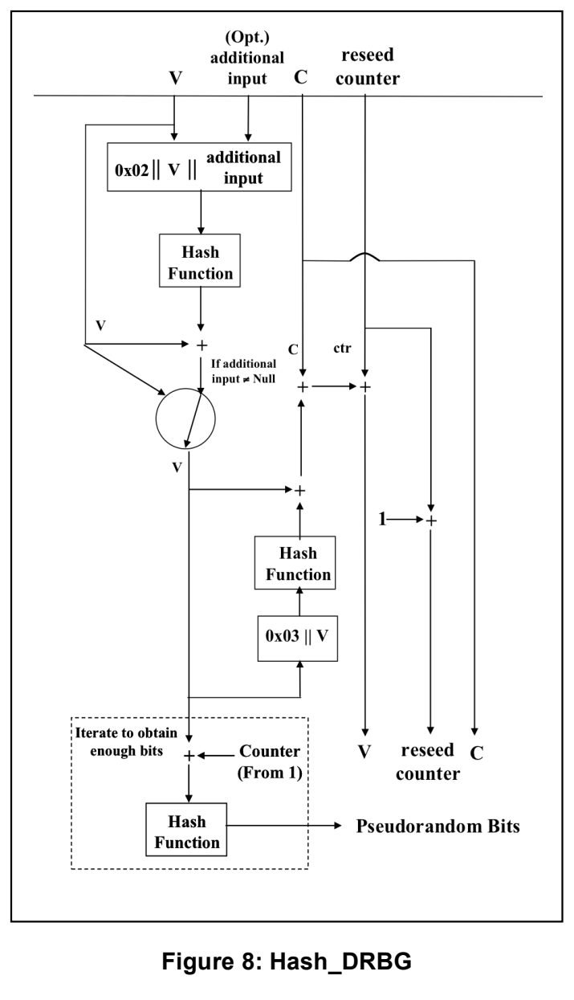
a. A value (\(V\)) of \(\mathit{seedlen}\) bits that is updated during each call to the DRBG.
a. 値（\(V\)）。これは\(\mathit{seedlen}\)ビットで、DRBGの各呼出し時に更新される。
b. A constant (\(C\)) of \(\mathit{seedlen}\) bits that depends on the \(\mathit{seed}\).
c. A counter (\(\mathit{reseed\_counter}\)) that indicates the number of requests for pseudorandom bits since new \(\mathit{entropy\_input}\) was obtained during instantiation or reseeding.
b. 定数（\(C\)）。これは\(\mathit{seedlen}\)ビットで、\(\mathit{seed}\)に依存する。
c. カウンタ（\(\mathit{reseed\_counter}\)）。インスタンス化または再シード時に新しい\(\mathit{entropy\_input}\)を得てからの疑似ランダムビット要求数を示す。
2.Administrative information:
2.管理情報：
a. The \(\mathit{security\_strength}\) of the DRBG instantiation.
b. A \(\mathit{prediction\_resistance\_flag}\) that indicates whether or not a prediction resistance capability is available for the DRBG instantiation.
The values of \(V\) and \(C\) are the critical values of the internal state upon which the security of this DRBG mechanism depends (i.e., \(V\) and \(C\) are the “secret values” of the internal state).
a. DRBGインスタンス化の\(\mathit{security\_strength}\)。
b. DRBGインスタンス化で予測耐性の機能が利用可能か否かを示す\(\mathit{prediction\_resistance\_flag}\)。
\(V\)および\(C\)の値は、このDRBGメカニズムのセキュリティが依存する内部状態の重要値である（すなわち、\(V\)および\(C\)は内部状態の「秘密値」である）。
10.1.1.2 Instantiation of Hash_DRBG
10.1.1.2 Hash_DRBGのインスタンス化
Figure 8: Hash_DRBG
図8：Hash_DRBG
Notes for the instantiate function specified in Section 9.1:
The instantiation of Hash_DRBG requires a call to the Instantiate_function specified in Section 9.1. Process step 9 of that function calls the instantiate algorithm in this section.
The values of \(\mathit{highest\_supported\_security\_strength}\) and \(\mathit{min\_length}\) are provided in Table 2 of Section 10.1. The contents of the internal state are provided in Section 10.1.1.1.
The instantiate algorithm:
Let \(\mathbf{Hash\_df}\) be the hash derivation function specified in Section 10.3.1 using the selected hash function. The output block length (\(\mathit{outlen}\)), seed length (\(\mathit{seedlen}\)) and appropriate \(\mathit{security\_strengths}\) for the implemented hash function are provided in Table 2 of Section 10.1.
第9.1節に規定するinstantiate機能に関する注記：
Hash_DRBGのインスタンス化には、第9.1節に規定するInstantiate_functionの呼出しが必要である。同機能の処理ステップ9は、本節のinstantiateアルゴリズムを呼び出す。
\(\mathit{highest\_supported\_security\_strength}\)および\(\mathit{min\_length}\)の値は第10.1節の表2に示す。内部状態の内容は第10.1.1.1節に示す。
instantiateアルゴリズム：
\(\mathbf{Hash\_df}\)を、選択したハッシュ関数を用いる第10.3.1節に規定するハッシュ導出関数とする。実装するハッシュ関数の出力ブロック長（\(\mathit{outlen}\)）、シード長（\(\mathit{seedlen}\)）および適切な\(\mathit{security\_strengths}\)は第10.1節の表2に示す。
The following process or its equivalent shall be used as the instantiate algorithm for this DRBG mechanism (see step 9 of the instantiate process in Section 9.1).
\(\mathbf{Hash\_DRBG\_Instantiate\_algorithm}\ (\mathit{entropy\_input}, \mathit{nonce}, \mathit{personalization\_string}, \mathit{security\_strength})\):
このDRBGメカニズムのinstantiateアルゴリズムには、以下の処理または同等の処理を用いなければならない（shall）（第9.1節のinstantiate処理のステップ9参照）。
\(\mathbf{Hash\_DRBG\_Instantiate\_algorithm}\ (\mathit{entropy\_input}, \mathit{nonce}, \mathit{personalization\_string}, \mathit{security\_strength})\)：
1. \(\mathit{entropy\_input}\): The string of bits obtained from the randomness source.
1. \(\mathit{entropy\_input}\)：ランダム性源から取得したビット列。
2. \(\mathit{nonce}\): A string of bits as specified in Section 8.6.7.
2. \(\mathit{nonce}\)：第8.6.7節に規定するビット列。
3. \(\mathit{personalization\_string}\): The personalization string received from the consuming application. Note that the length of the \(\mathit{personalization\_string}\) may be zero.
3. \(\mathit{personalization\_string}\)：利用側アプリケーションから受け取るパーソナライゼーション文字列。\(\mathit{personalization\_string}\)の長さはゼロでもよい。
4. \(\mathit{security\_strength}\): The security strength for the instantiation. This parameter is optional for Hash_DRBG, since it is not used.
4. \(\mathit{security\_strength}\)：インスタンス化のセキュリティ強度。Hash_DRBGでは使用しないため、このパラメータは任意である。
Output:
出力：
1. \(\mathit{initial\_working\_state}\): The initial values for \(V\), \(C\), and \(\mathit{reseed\_counter}\) (see Section 10.1.1.1).
1. \(\mathit{initial\_working\_state}\)：\(V\)、\(C\)および\(\mathit{reseed\_counter}\)の初期値（第10.1.1.1節参照）。
Hash_DRBG Instantiate Process:
Hash_DRBG Instantiate Process：
1. \(\mathit{seed\_material} = \mathit{entropy\_input} \parallel \mathit{nonce} \parallel \mathit{personalization\_string}\).
1. \(\mathit{seed\_material} = \mathit{entropy\_input} \parallel \mathit{nonce} \parallel \mathit{personalization\_string}\)。
2. \(\mathit{seed} = \mathbf{Hash\_df}\ (\mathit{seed\_material}, \mathit{seedlen})\).
2. \(\mathit{seed} = \mathbf{Hash\_df}\ (\mathit{seed\_material}, \mathit{seedlen})\)。
3. \(V = \mathit{seed}\).
3. \(V = \mathit{seed}\)。
4. \(C = \mathbf{Hash\_df}\ ((\mathrm{0x00} \parallel V), \mathit{seedlen})\). Comment: Precede \(V\) with a byte of zeros.
4. \(C = \mathbf{Hash\_df}\ ((\mathrm{0x00} \parallel V), \mathit{seedlen})\)。コメント：\(V\)の前にゼロの1バイトを置く。
5. \(\mathit{reseed\_counter} = 1\).
5. \(\mathit{reseed\_counter} = 1\)。
6. \(\mathbf{Return}\ (V, C, \mathit{reseed\_counter})\).
6. \(\mathbf{Return}\ (V, C, \mathit{reseed\_counter})\)。
10.1.1.3 Reseeding a Hash_DRBG Instantiation
10.1.1.3 Hash_DRBGインスタンス化の再シード
Notes for the reseed function specified in Section 9.2:
The reseeding of a Hash_DRBG instantiation requires a call to the Reseed_function specified in Section 9.2. Process step 6 of that function calls the reseed algorithm specified in this section. The values for \(\mathit{min\_length}\) are provided in Table 2 of Section 10.1.
The reseed algorithm:
Let \(\mathbf{Hash\_df}\) be the hash derivation function specified in Section 10.3.1 using the selected hash function. The value for \(\mathit{seedlen}\) is provided in Table 2 of Section 10.1.
The following process or its equivalent shall be used as the reseed algorithm for this DRBG mechanism (see step 6 of the reseed process in Section 9.2):
\(\mathbf{Hash\_DRBG\_Reseed\_algorithm}\ (\mathit{working\_state}, \mathit{entropy\_input}, \mathit{additional\_input})\):
第9.2節に規定するreseed機能に関する注記：
Hash_DRBGインスタンス化の再シードには、第9.2節に規定するReseed_functionの呼出しが必要である。同機能の処理ステップ6は、本節に規定するreseedアルゴリズムを呼び出す。\(\mathit{min\_length}\)の値は第10.1節の表2に示す。
reseedアルゴリズム：
\(\mathbf{Hash\_df}\)を、選択したハッシュ関数を用いる第10.3.1節に規定するハッシュ導出関数とする。\(\mathit{seedlen}\)の値は第10.1節の表2に示す。
このDRBGメカニズムのreseedアルゴリズムには、以下の処理または同等の処理を用いなければならない（shall）（第9.2節のreseed処理のステップ6参照）：
\(\mathbf{Hash\_DRBG\_Reseed\_algorithm}\ (\mathit{working\_state}, \mathit{entropy\_input}, \mathit{additional\_input})\)：
1. \(\mathit{working\_state}\): The current values for \(V\), \(C\), and \(\mathit{reseed\_counter}\) (see Section 10.1.1.1).
1. \(\mathit{working\_state}\)：\(V\)、\(C\)および\(\mathit{reseed\_counter}\)の現在値（第10.1.1.1節参照）。
2. \(\mathit{entropy\_input}\): The string of bits obtained from the randomness source.
2. \(\mathit{entropy\_input}\)：ランダム性源から取得したビット列。
3. \(\mathit{additional\_input}\): The additional input string received from the consuming application. Note that the length of the \(\mathit{additional\_input}\) string may be zero.
3. \(\mathit{additional\_input}\)：利用側アプリケーションから受け取る追加入力文字列。\(\mathit{additional\_input}\)文字列の長さはゼロでもよい（may）ことに注意。
Output:
出力：
1. \(\mathit{new\_working\_state}\): The new values for \(V\), \(C\), and \(\mathit{reseed\ counter}\).
1. \(\mathit{new\_working\_state}\)：\(V\)、\(C\)および\(\mathit{reseed\ counter}\)の新しい値。
Hash_DRBG Reseed Process:
Hash_DRBG Reseed Process：
1. \(\mathit{seed\_material} = \mathrm{0x01} \parallel V \parallel \mathit{entropy\_input} \parallel \mathit{additional\_input}\).
1. \(\mathit{seed\_material} = \mathrm{0x01} \parallel V \parallel \mathit{entropy\_input} \parallel \mathit{additional\_input}\)。
2. \(\mathit{seed} = \mathbf{Hash\_df}\,(\mathit{seed\_material}, \mathit{seedlen})\).
2. \(\mathit{seed} = \mathbf{Hash\_df}\,(\mathit{seed\_material}, \mathit{seedlen})\)。
3. \(V = \mathit{seed}\).
3. \(V = \mathit{seed}\)。
4. \(C = \mathbf{Hash\_df}\,((\mathrm{0x00} \parallel V), \mathit{seedlen})\). Comment: Preceed with a byte of all zeros.
4. \(C = \mathbf{Hash\_df}\,((\mathrm{0x00} \parallel V), \mathit{seedlen})\)。コメント：全ゼロの1バイトを前置する。
5. \(\mathit{reseed\_counter} = 1\).
5. \(\mathit{reseed\_counter} = 1\)。
6. Return (\(V\), \(C\), and \(\mathit{reseed\_counter}\)).
6. Return (\(V\)、\(C\)、および\(\mathit{reseed\_counter}\))。
10.1.1.4 Generating Pseudorandom Bits Using Hash_DRBG
10.1.1.4 Hash_DRBGを用いた疑似ランダムビットの生成
Notes for the generate function specified in Section 9.3: The generation of pseudorandom bits using a Hash_DRBG instantiation requires a call to the generate function specified in Section 9.3. Process step 8 of that function calls the generate algorithm specified in this section. The values for \(\mathit{max\_number\_of\_bits\_per\_request}\) and \(\mathit{outlen}\) are provided in Table 2 of Section 10.1. The generate algorithm: Let Hash be the selected hash function. The seed length (\(\mathit{seedlen}\)) and the maximum interval between reseeding (\(\mathit{reseed\_interval}\)) are provided in Table 2 of Section 10.1. Note that for this DRBG mechanism, the reseed counter is used to update the value of \(V\), as well as to count the number of generation requests. The following process or its equivalent shall be used as the generate algorithm for this DRBG mechanism (see step 8 of the generate process in Section 9.3): \(\mathbf{Hash\_DRBG\_Generate\_algorithm}\,(\mathit{working\_state}, \mathit{requested\_number\_of\_bits}, \mathit{additional\_input})\):
第9.3節に規定するgenerate機能に関する注記：Hash_DRBGインスタンス化を用いた疑似ランダムビットの生成には、第9.3節に規定するgenerate機能の呼出しが必要である。同機能の処理ステップ8は、本節に規定するgenerateアルゴリズムを呼び出す。\(\mathit{max\_number\_of\_bits\_per\_request}\)および\(\mathit{outlen}\)の値は第10.1節の表2に示す。generateアルゴリズム：Hashを選択されたハッシュ関数とする。シード長（\(\mathit{seedlen}\)）および再シード間の最大間隔（\(\mathit{reseed\_interval}\)）は第10.1節の表2に示す。このDRBGメカニズムでは、再シードカウンタは生成要求の回数を数えるだけでなく、\(V\)の値の更新にも用いることに注意。このDRBGメカニズムのgenerateアルゴリズムには、次の処理またはそれと等価なものを用いなければならない（shall）（第9.3節のgenerate処理のステップ8参照）：\(\mathbf{Hash\_DRBG\_Generate\_algorithm}\,(\mathit{working\_state}, \mathit{requested\_number\_of\_bits}, \mathit{additional\_input})\)：
1. \(\mathit{working\_state}\): The current values for \(V\), \(C\), and \(\mathit{reseed\_counter}\) (see Section 10.1.1.1).
1. \(\mathit{working\_state}\)：\(V\)、\(C\)および\(\mathit{reseed\_counter}\)の現在値（第10.1.1.1節参照）。
2. \(\mathit{requested\_number\_of\_bits}\): The number of pseudorandom bits to be returned to the generate function.
2. \(\mathit{requested\_number\_of\_bits}\)：generate機能へ返す疑似ランダムビットの数。
3. \(\mathit{additional\_input}\): The additional input string received from the consuming application. Note that the length of the \(\mathit{additional\_input}\) string may be zero.
3. \(\mathit{additional\_input}\)：利用側アプリケーションから受け取る追加入力文字列。\(\mathit{additional\_input}\)文字列の長さはゼロでもよい（may）ことに注意。
Output:
出力：
1. \(\mathit{status}\): The status returned from the function. The \(\mathit{status}\) will indicate SUCCESS, or indicate that a reseed is required before the requested pseudorandom bits can be generated.
1. \(\mathit{status}\)：機能から返される状態。\(\mathit{status}\)はSUCCESSを示すか、または要求された疑似ランダムビットを生成できるようになる前に再シードが必要であることを示す。
2. \(\mathit{returned\_bits}\): The pseudorandom bits to be returned to the generate function.
2. \(\mathit{returned\_bits}\)：generate機能へ返す疑似ランダムビット。
3. \(\mathit{new\_working\_state}\): The new values for \(V\), \(C\), and \(\mathit{reseed\_counter}\).
3. \(\mathit{new\_working\_state}\)：\(V\)、\(C\)および\(\mathit{reseed\_counter}\)の新しい値。
Hash_DRBG_Generate Process:
Hash_DRBG_Generate Process：
1. If \(\mathit{reseed\_counter} > \mathit{reseed\_interval}\), then return an indication that a reseed is required.
1. \(\mathit{reseed\_counter} > \mathit{reseed\_interval}\)の場合、再シードが必要であることを示す表示を返す。
2. If \((\mathit{additional\_input} \ne \mathit{Null})\), then do
2.1 \(w = \mathbf{Hash}\,(\mathrm{0x02} \parallel V \parallel \mathit{additional\_input})\).
2.2 \(V = (V + w) \bmod 2^{\mathit{seedlen}}\).
2. \((\mathit{additional\_input} \ne \mathit{Null})\)の場合、次を実行する。
2.1 \(w = \mathbf{Hash}\,(\mathrm{0x02} \parallel V \parallel \mathit{additional\_input})\)。
2.2 \(V = (V + w) \bmod 2^{\mathit{seedlen}}\)。
3. \((\mathit{returned\_bits}) = \mathbf{Hashgen}\,(\mathit{requested\_number\_of\_bits}, V)\).
3. \((\mathit{returned\_bits}) = \mathbf{Hashgen}\,(\mathit{requested\_number\_of\_bits}, V)\)。
4. \(H = \mathbf{Hash}\,(\mathrm{0x03} \parallel V)\).
4. \(H = \mathbf{Hash}\,(\mathrm{0x03} \parallel V)\)。
5. \(V = (V + H + C + \mathit{reseed\_counter}) \bmod 2^{\mathit{seedlen}}\).
5. \(V = (V + H + C + \mathit{reseed\_counter}) \bmod 2^{\mathit{seedlen}}\)。
6. \(\mathit{reseed\_counter} = \mathit{reseed\_counter} + 1\).
6. \(\mathit{reseed\_counter} = \mathit{reseed\_counter} + 1\)。
7. Return (SUCCESS, \(\mathit{returned\_bits}\), \(V\), \(C\), \(\mathit{reseed\_counter}\)).
7. Return (SUCCESS, \(\mathit{returned\_bits}\), \(V\), \(C\), \(\mathit{reseed\_counter}\))。
\(\mathbf{Hashgen}\,(\mathit{requested\_number\_of\_bits}, V)\):
\(\mathbf{Hashgen}\,(\mathit{requested\_number\_of\_bits}, V)\):
Input:
入力：
1. \(\mathit{requested\_no\_of\_bits}\): The number of bits to be returned.
1. \(\mathit{requested\_no\_of\_bits}\)：返すビット数。
2. \(V\): The current value of \(V\).
2. \(V\)：\(V\)の現在値。
Output:
出力：
1. \(\mathit{returned\_bits}\): The generated bits to be returned to the generate function.
1. \(\mathit{returned\_bits}\)：generate機能へ返す生成ビット。
Hashgen Process:
Hashgen Process：
1. \(m = \left\lceil \dfrac{\mathit{requested\_no\_of\_bits}}{\mathit{outlen}} \right\rceil\).
1. \(m = \left\lceil \dfrac{\mathit{requested\_no\_of\_bits}}{\mathit{outlen}} \right\rceil\)。
2. \(\mathit{data} = V\).
2. \(\mathit{data} = V\)。
3. \(W =\) the \(\mathit{Null}\) string.
3. \(W =\) \(\mathit{Null}\)文字列。
4. For \(i = 1\) to \(m\)
4. \(i = 1\)から\(m\)まで繰り返す
4.1 \(w = \mathbf{Hash}(\mathit{data})\).
4.2 \(W = W \parallel w\).
4.3 \(\mathit{data} = (\mathit{data} + 1) \bmod 2^{\mathit{seedlen}}\).
4.1 \(w = \mathbf{Hash}(\mathit{data})\)。
4.2 \(W = W \parallel w\)。
4.3 \(\mathit{data} = (\mathit{data} + 1) \bmod 2^{\mathit{seedlen}}\)。
5. \(\mathit{returned\_bits} = \mathbf{leftmost}(W, \mathit{requested\_no\_of\_bits})\).
5. \(\mathit{returned\_bits} = \mathbf{leftmost}(W, \mathit{requested\_no\_of\_bits})\)。
6. Return \((\mathit{returned\_bits})\).
6. \((\mathit{returned\_bits})\)を返す。
10.1.2 HMAC_DRBG
10.1.2 HMAC_DRBG
HMAC_DRBG uses multiple occurrences of an approved keyed hash function, which is based on an approved hash function. This DRBG mechanism uses the HMAC_DRBG_Update function specified in Section 10.1.2.2 and the HMAC function within the HMAC_DRBG_Update function as the derivation function during instantiation and reseeding. The same hash function shall be used throughout an HMAC_DRBG instantiation. The hash function used shall meet or exceed the security strength required by the consuming application for DRBG output (see [SP 800-57]).
HMAC_DRBG は、承認済みハッシュ関数に基づく承認済み鍵付きハッシュ関数を複数回用いる。この DRBG メカニズムは、インスタンス化と再シードの際の導出関数として、第10.1.2.2節で規定する HMAC_DRBG_Update 関数と、その内部の HMAC 関数を用いる。HMAC_DRBG のインスタンス化の全体を通じて、同じハッシュ関数を用いなければならない（shall）。使用するハッシュ関数は、消費アプリケーションが DRBG 出力に要求するセキュリティ強度を満たすか上回らなければならない（shall）（［SP 800-57］参照）。
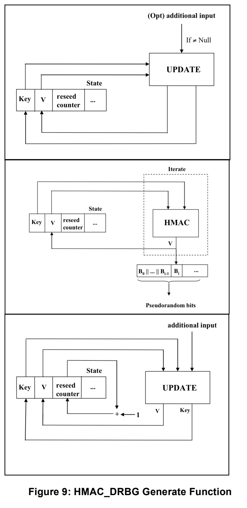
Figure 9: HMAC_DRBG Generate Function
図9：HMAC_DRBGのgenerate機能
Figure 9 depicts the HMAC_DRBG in three stages. HMAC_DRBG is specified using an internal function (HMAC_DRBG_Update). This function is called during the HMAC_DRBG instantiate, generate and reseed algorithms to adjust the internal state when new entropy or additional input is provided, as well as to update the internal state after pseudorandom bits are generated. The operations in the top portion of the figure are only performed if the additional input is not null. Figure 10 depicts the HMAC_DRBG_Update function.
図9はHMAC_DRBGを3段階で示す。HMAC_DRBGは内部関数（HMAC_DRBG_Update）を用いて規定する。この関数はHMAC_DRBGのインスタンス化、生成および再シードの各アルゴリズムの中で呼び出され、新しいエントロピーまたは追加入力が与えられたときに内部状態を調整し、疑似ランダムビットの生成後に内部状態を更新する。図の上部の操作は、追加入力がnullでない場合にのみ実行する。図10はHMAC_DRBG_Update関数を示す。
10.1.2.1 HMAC_DRBG Internal State
10.1.2.1 HMAC_DRBGの内部状態
The internal state for HMAC_DRBG consists of:
HMAC_DRBGの内部状態は、次から成る。
1. The \(\mathit{working\_state}\):
1. \(\mathit{working\_state}\)：
a. The value \(V\) of \(\mathit{outlen}\) bits, which is updated each time another \(\mathit{outlen}\) bits of output are produced (where \(\mathit{outlen}\) is specified in Table 2 of Section 10.1).
b. The \(\mathit{outlen}\)-bit \(\mathit{Key}\), which is updated at least once each time that the DRBG mechanism generates pseudorandom bits.
a. 値\(V\)。\(\mathit{outlen}\)ビットから成り、出力をさらに\(\mathit{outlen}\)ビット生成するたびに更新される（\(\mathit{outlen}\)は第10.1節の表2に規定する）。
b. \(\mathit{outlen}\)ビットの\(\mathit{Key}\)。DRBGメカニズムが疑似ランダムビットを生成するたびに、少なくとも1回更新される。
c. A counter (\(\mathit{reseed\_counter}\)) that indicates the number of requests for pseudorandom bits since instantiation or reseeding.
c. カウンタ（\(\mathit{reseed\_counter}\)）。インスタンス化または再シード以降の疑似ランダムビット要求の回数を示す。
2.Administrative information:
2.管理情報：
a. The \(\mathit{security\_strength}\) of the DRBG instantiation.
b. A \(\mathit{prediction\_resistance\_flag}\) that indicates whether or not a prediction resistance capability is required for the DRBG instantiation.
a. DRBGインスタンス化の\(\mathit{security\_strength}\)。
b. \(\mathit{prediction\_resistance\_flag}\)。DRBGインスタンス化に予測耐性機能が必要かどうかを示す。
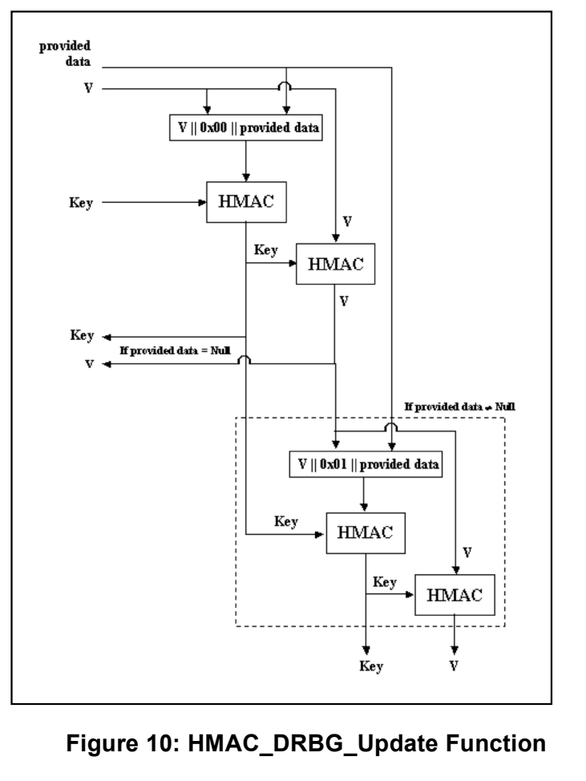
The values of \(V\) and \(\mathit{Key}\) are the critical values of the internal state upon which the security of this DRBG mechanism depends (i.e., \(V\) and \(\mathit{Key}\) are the “secret values” of the internal state).
\(V\)および\(\mathit{Key}\)の値は、このDRBGメカニズムのセキュリティが依存する内部状態の重要な値である（すなわち、\(V\)および\(\mathit{Key}\)は内部状態の「秘密値」である）。
10.1.2.2 The HMAC_DRBG Update Function (Update)
10.1.2.2 HMAC_DRBGのUpdate関数（Update）
The \(\mathbf{HMAC\_DRBG\_Update}\) function updates the internal state of HMAC_DRBG using the \(\mathit{provided\_data}\). Note that for this DRBG mechanism, the \(\mathbf{HMAC\_DRBG\_Update}\) function also serves as a derivation function for the instantiate and reseed functions.
\(\mathbf{HMAC\_DRBG\_Update}\)関数は、\(\mathit{provided\_data}\)を用いてHMAC_DRBGの内部状態を更新する。このDRBGメカニズムでは、\(\mathbf{HMAC\_DRBG\_Update}\)関数がinstantiate機能およびreseed機能の導出関数も兼ねることに注意する。
Figure 10: HMAC_DRBG_Update Function
図10：HMAC_DRBG_Update関数
Let \(\mathbf{HMAC}\) be the keyed hash function specified in [FIPS 198] using the hash function selected for the DRBG mechanism from Table 2 in Section 10.1.
The following or an equivalent process shall be used as the \(\mathbf{HMAC\_DRBG\_Update}\) function.
\(\mathbf{HMAC\_DRBG\_Update}(\mathit{provided\_data}, K, V)\):
\(\mathbf{HMAC}\)を、[FIPS 198]に規定する鍵付きハッシュ関数とし、第10.1節の表2からDRBGメカニズム用に選択したハッシュ関数を用いるものとする。
\(\mathbf{HMAC\_DRBG\_Update}\)関数には、以下の処理または同等の処理を用いなければならない（shall）。
\(\mathbf{HMAC\_DRBG\_Update}(\mathit{provided\_data}, K, V)\)：
1. \(\mathit{provided\_data}\): The data to be used.
1. \(\mathit{provided\_data}\)：使用するデータ。
2. \(K\): The current value of \(\mathit{Key}\).
2. \(K\)：\(\mathit{Key}\)の現在の値。
3. \(V\): The current value of \(V\).
3. \(V\)：\(V\)の現在の値。
Output:
出力：
1. \(K\): The new value for \(\mathit{Key}\).
1. \(K\)：\(\mathit{Key}\)の新しい値。
2. \(V\): The new value for \(V\).
2. \(V\)：\(V\)の新しい値。
HMAC_DRBG Update Process:
HMAC_DRBG Update Process：
1. \(K = \mathbf{HMAC}(K, V \parallel \mathrm{0x00} \parallel \mathit{provided\_data})\).
1. \(K = \mathbf{HMAC}(K, V \parallel \mathrm{0x00} \parallel \mathit{provided\_data})\)。
2. \(V = \mathbf{HMAC}(K, V)\).
2. \(V = \mathbf{HMAC}(K, V)\)。
3. If \((\mathit{provided\_data} = \mathit{Null})\), then return \(K\) and \(V\).
3. \((\mathit{provided\_data} = \mathit{Null})\)の場合、\(K\)および\(V\)を返す。
4. \(K = \mathbf{HMAC}(K, V \parallel \mathrm{0x01} \parallel \mathit{provided\_data})\).
4. \(K = \mathbf{HMAC}(K, V \parallel \mathrm{0x01} \parallel \mathit{provided\_data})\)。
5. \(V = \mathbf{HMAC}(K, V)\).
5. \(V = \mathbf{HMAC}(K, V)\)。
6. Return \((K, V)\).
6. \((K, V)\)を返す。
10.1.2.3 Instantiation of HMAC_DRBG
10.1.2.3 HMAC_DRBGのインスタンス化
Notes for the instantiate function specified in Section 9.1:
The instantiation of HMAC_DRBG requires a call to the \(\mathbf{Instantiate\_function}\) specified in Section 9.1. Process step 9 of that function calls the instantiate algorithm specified in this section. The values of \(\mathit{highest\_supported\_security\_strength}\) and \(\mathit{min\_length}\) are provided in Table 2 of Section 10.1. The contents of the internal state are provided in Section 10.1.2.1.
The instantiate algorithm:
Let \(\mathbf{HMAC\_DRBG\_Update}\) be the function specified in Section 10.1.2.2. The output block length (\(\mathit{outlen}\)) is provided in Table 2 of Section 10.1.
The following process or its equivalent shall be used as the instantiate algorithm for this DRBG mechanism (see step 9 of the instantiate process in Section 9.1):
\(\mathbf{HMAC\_DRBG\_Instantiate\_algorithm}(\mathit{entropy\_input}, \mathit{nonce}, \mathit{personalization\_string}, \mathit{security\_strength})\):
第9.1節に規定するinstantiate関数に関する注記：
HMAC_DRBGのインスタンス化には、第9.1節に規定する\(\mathbf{Instantiate\_function}\)の呼出しが必要である。同関数の処理ステップ9は、本節に規定するinstantiateアルゴリズムを呼び出す。\(\mathit{highest\_supported\_security\_strength}\)および\(\mathit{min\_length}\)の値は第10.1節の表2に示す。内部状態の内容は第10.1.2.1節に示す。
instantiateアルゴリズム：
\(\mathbf{HMAC\_DRBG\_Update}\)を第10.1.2.2節に規定する関数とする。出力ブロック長（\(\mathit{outlen}\)）は第10.1節の表2に示す。
このDRBGメカニズムのinstantiateアルゴリズムには、以下の処理または同等の処理を用いなければならない（shall）（第9.1節のinstantiate処理のステップ9を参照）：
\(\mathbf{HMAC\_DRBG\_Instantiate\_algorithm}(\mathit{entropy\_input}, \mathit{nonce}, \mathit{personalization\_string}, \mathit{security\_strength})\)：
1. \(\mathit{entropy\_input}\): The string of bits obtained from the randomness source.
1. \(\mathit{entropy\_input}\)：ランダム性源から取得したビット列。
2. \(\mathit{nonce}\): A string of bits as specified in Section 8.6.7.
2. \(\mathit{nonce}\)：第8.6.7節に規定するビット列。
3. \(\mathit{personalization\_string}\): The personalization string received from the consuming application. Note that the length of the \(\mathit{personalization\_string}\) may be zero.
3. \(\mathit{personalization\_string}\)：利用側アプリケーションから受け取るパーソナライゼーション文字列。\(\mathit{personalization\_string}\)の長さはゼロでもよいことに注意する。
4. \(\mathit{security\_strength}\): The security strength for the instantiation. This parameter is optional for HMAC_DRBG, since it is not used.
4. \(\mathit{security\_strength}\)：インスタンス化のセキュリティ強度。HMAC_DRBGでは使用しないため、このパラメータは任意である。
Output:
出力：
1. \(\mathit{initial\_working\_state}\): The initial values for \(V\), \(\mathit{Key}\) and \(\mathit{reseed\_counter}\) (see Section 10.1.2.1).
1. \(\mathit{initial\_working\_state}\)：\(V\)、\(\mathit{Key}\)および\(\mathit{reseed\_counter}\)の初期値（第10.1.2.1節参照）。
HMAC_DRBG Instantiate Process:
HMAC_DRBG Instantiate Process：
1. \(\mathit{seed\_material} = \mathit{entropy\_input} \parallel \mathit{nonce} \parallel \mathit{personalization\_string}\).
1. \(\mathit{seed\_material} = \mathit{entropy\_input} \parallel \mathit{nonce} \parallel \mathit{personalization\_string}\)。
2. \(\mathit{Key} =\) 0x00 00...00. Comment: \(\mathit{outlen}\) bits.
2. \(\mathit{Key} =\) 0x00 00...00。コメント：\(\mathit{outlen}\)ビット。
3. \(V =\) 0x01 01...01. Comment: \(\mathit{outlen}\) bits.
3. \(V =\) 0x01 01...01。コメント：\(\mathit{outlen}\)ビット。
Comment: Update \(\mathit{Key}\) and \(V\).
コメント：\(\mathit{Key}\)および\(V\)を更新する。
4. \((\mathit{Key}, V) = \mathbf{HMAC\_DRBG\_Update}(\mathit{seed\_material}, \mathit{Key}, V)\).
4. \((\mathit{Key}, V) = \mathbf{HMAC\_DRBG\_Update}(\mathit{seed\_material}, \mathit{Key}, V)\)。
5. \(\mathit{reseed\_counter} = 1\).
5. \(\mathit{reseed\_counter} = 1\)。
6. Return \((V, \mathit{Key}.\ \mathit{reseed\_counter})\).
6. \((V, \mathit{Key}.\ \mathit{reseed\_counter})\)を返す。
10.1.2.4 Reseeding an HMAC_DRBG Instantiation
10.1.2.4 HMAC_DRBGインスタンス化の再シード
Notes for the reseed function specified in Section 9.2: The reseeding of an HMAC_DRBG instantiation requires a call to the \(\mathbf{Reseed\_function}\) specified in Section 9.2. Process step 6 of that function calls the reseed algorithm specified in this section. The values for \(\mathit{min\_length}\) are provided in Table 2 of Section 10.1. The reseed algorithm: Let \(\mathbf{HMAC\_DRBG\_Update}\) be the function specified in Section 10.1.2.2. The following process or its equivalent shall be used as the reseed algorithm for this DRBG mechanism (see step 6 of the reseed process in Section 9.2): \(\mathbf{HMAC\_DRBG\_Reseed\_algorithm}\ (\mathit{working\_state}, \mathit{entropy\_input}, \mathit{additional\_input})\):
第9.2節に規定するreseed機能に関する注記：HMAC_DRBGインスタンス化の再シードには、第9.2節に規定する\(\mathbf{Reseed\_function}\)の呼出しが必要である。同機能の処理ステップ6は、本節に規定する再シードアルゴリズムを呼び出す。\(\mathit{min\_length}\)の値は第10.1節の表2に示す。再シードアルゴリズム：\(\mathbf{HMAC\_DRBG\_Update}\)を第10.1.2.2節に規定する関数とする。このDRBGメカニズムの再シードアルゴリズムとして、以下の処理または同等の処理を用いなければならない（shall）（第9.2節の再シード処理のステップ6参照）：\(\mathbf{HMAC\_DRBG\_Reseed\_algorithm}\ (\mathit{working\_state}, \mathit{entropy\_input}, \mathit{additional\_input})\)：
1. \(\mathit{working\_state}\): The current values for \(V\), \(\mathit{Key}\) and \(\mathit{reseed\_counter}\) (see Section 10.1.2.1).
1. \(\mathit{working\_state}\)：\(V\)、\(\mathit{Key}\)および\(\mathit{reseed\_counter}\)の現在値（第10.1.2.1節参照）。
2. \(\mathit{entropy\_input}\): The string of bits obtained from the randomness source.
2. \(\mathit{entropy\_input}\)：ランダム性源から取得したビット列。
3. \(\mathit{additional\_input}\): The additional input string received from the consuming application. Note that the length of the \(\mathit{additional\_input}\) string may be zero.
3. \(\mathit{additional\_input}\)：利用側アプリケーションから受け取る追加入力文字列。\(\mathit{additional\_input}\)文字列の長さはゼロでもよい（may）ことに注意。
Output:
出力：
1. \(\mathit{new\_working\_state}\): The new values for \(V\), \(\mathit{Key}\) and \(\mathit{reseed\_counter}\).
1. \(\mathit{new\_working\_state}\)：\(V\)、\(\mathit{Key}\)および\(\mathit{reseed\_counter}\)の新しい値。
HMAC_DRBG Reseed Process:
HMAC_DRBG Reseed Process：
1. \(\mathit{seed\_material} = \mathit{entropy\_input} \parallel \mathit{additional\_input}\).
1. \(\mathit{seed\_material} = \mathit{entropy\_input} \parallel \mathit{additional\_input}\)。
2. \((\mathit{Key}, V) = \mathbf{HMAC\_DRBG\_Update}(\mathit{seed\_material}, \mathit{Key}, V)\).
2. \((\mathit{Key}, V) = \mathbf{HMAC\_DRBG\_Update}(\mathit{seed\_material}, \mathit{Key}, V)\)。
3. \(\mathit{reseed\_counter} = 1\).
3. \(\mathit{reseed\_counter} = 1\)。
4. Return \((V, \mathit{Key}, \mathit{reseed\_counter})\).
4. Return \((V, \mathit{Key}, \mathit{reseed\_counter})\)。
10.1.2.5 Generating Pseudorandom Bits Using HMAC_DRBG
10.1.2.5 HMAC_DRBGを用いた疑似ランダムビットの生成
Notes for the generate function specified in Section 9.3: The generation of pseudorandom bits using an HMAC_DRBG instantiation requires a call to the \(\mathbf{Generate\_function}\) specified in Section 9.3. Process step 8 of that function calls the generate algorithm specified in this section. The values for \(\mathit{max\_number\_of\_bits\_per\_request}\) and \(\mathit{outlen}\) are provided in Table 2 of Section 10.1.
第9.3節に規定するgenerate機能に関する注記：HMAC_DRBGインスタンス化を用いた疑似ランダムビットの生成には、第9.3節に規定する\(\mathbf{Generate\_function}\)の呼出しが必要である。同機能の処理ステップ8は、本節に規定するgenerateアルゴリズムを呼び出す。\(\mathit{max\_number\_of\_bits\_per\_request}\)および\(\mathit{outlen}\)の値は第10.1節の表2に示す。
The generate algorithm: Let \(\mathbf{HMAC}\) be the keyed hash function specified in [FIPS 198] using the hash function selected for the DRBG mechanism. The value for \(\mathit{reseed\_interval}\) is defined in Table 2 of Section 10.1. The following process or its equivalent shall be used as the generate algorithm for this DRBG mechanism (see step 8 of the generate process in Section 9.3):
generateアルゴリズム：\(\mathbf{HMAC}\)を、DRBGメカニズム用に選択したハッシュ関数を用いる、[FIPS 198]に規定する鍵付きハッシュ関数とする。\(\mathit{reseed\_interval}\)の値は第10.1節の表2に定義する。このDRBGメカニズムのgenerateアルゴリズムとして、以下の処理または同等の処理を用いなければならない（shall）（第9.3節のgenerate処理のステップ8参照）：
\(\mathbf{HMAC\_DRBG\_Generate\_algorithm}\) (\(\mathit{working\_state}\), \(\mathit{requested\_number\_of\_bits}\), \(\mathit{additional\_input}\)):
\(\mathbf{HMAC\_DRBG\_Generate\_algorithm}\) (\(\mathit{working\_state}\)、\(\mathit{requested\_number\_of\_bits}\)、\(\mathit{additional\_input}\))：
1. \(\mathit{working\_state}\): The current values for \(V\), \(\mathit{Key}\) and \(\mathit{reseed\_counter}\) (see Section 10.1.2.1).
1. \(\mathit{working\_state}\)：\(V\)、\(\mathit{Key}\)および\(\mathit{reseed\_counter}\)の現在値（第10.1.2.1節参照）。
2. \(\mathit{requested\_number\_of\_bits}\): The number of pseudorandom bits to be returned to the generate function.
2. \(\mathit{requested\_number\_of\_bits}\)：generate機能に返す疑似ランダムビット数。
3. \(\mathit{additional\_input}\): The additional input string received from the consuming application. Note that the length of the \(\mathit{additional\_input}\) string may be zero.
3. \(\mathit{additional\_input}\)：利用側アプリケーションから受け取る追加入力文字列。\(\mathit{additional\_input}\)文字列の長さはゼロでもよい（may）ことに注意。
Output:
出力：
1. \(\mathit{status}\): The status returned from the function. The \(\mathit{status}\) will indicate SUCCESS, or indicate that a reseed is required before the requested pseudorandom bits can be generated.
1. \(\mathit{status}\)：関数から返される状態。\(\mathit{status}\)は、SUCCESSを示すか、要求された疑似ランダムビットを生成する前に再シードが必要であることを示す。
2. \(\mathit{returned\_bits}\): The pseudorandom bits to be returned to the generate function.
2. \(\mathit{returned\_bits}\)：generate機能に返す疑似ランダムビット。
3. \(\mathit{new\_working\_state}\): The new values for \(V\), \(\mathit{Key}\) and \(\mathit{reseed\_counter}\).
3. \(\mathit{new\_working\_state}\)：\(V\)、\(\mathit{Key}\)および\(\mathit{reseed\_counter}\)の新しい値。
HMAC_DRBG Generate Process:
HMAC_DRBG Generate Process：
1. If \(\mathit{reseed\_counter} > \mathit{reseed\_interval}\), then return an indication that a reseed is required.
1. \(\mathit{reseed\_counter} > \mathit{reseed\_interval}\)の場合、再シードが必要であることを示す表示を返す。
2. If \(\mathit{additional\_input} \ne \mathit{Null}\), then \((\mathit{Key}, V) = \mathbf{HMAC\_DRBG\_Update}(\mathit{additional\_input}, \mathit{Key}, V)\).
2. \(\mathit{additional\_input} \ne \mathit{Null}\)の場合、\((\mathit{Key}, V) = \mathbf{HMAC\_DRBG\_Update}(\mathit{additional\_input}, \mathit{Key}, V)\)。
3. \(\mathit{temp} = \mathit{Null}\).
3. \(\mathit{temp} = \mathit{Null}\)。
4. While \((\mathbf{len}(\mathit{temp}) < \mathit{requested\_number\_of\_bits})\) do:
4. \((\mathbf{len}(\mathit{temp}) < \mathit{requested\_number\_of\_bits})\)の間、以下を繰り返す：
4.1 \(V = \mathbf{HMAC}(\mathit{Key}, V)\).
4.1 \(V = \mathbf{HMAC}(\mathit{Key}, V)\)。
4.2 \(\mathit{temp} = \mathit{temp} \parallel V\).
4.2 \(\mathit{temp} = \mathit{temp} \parallel V\)。
5. \(\mathit{returned\_bits} = \mathbf{leftmost}(\mathit{temp}, \mathit{requested\_number\_of\_bits})\).
5. \(\mathit{returned\_bits} = \mathbf{leftmost}(\mathit{temp}, \mathit{requested\_number\_of\_bits})\)。
6. \((\mathit{Key}, V) = \mathbf{HMAC\_DRBG\_Update}(\mathit{additional\_input}, \mathit{Key}, V)\).
6. \((\mathit{Key}, V) = \mathbf{HMAC\_DRBG\_Update}(\mathit{additional\_input}, \mathit{Key}, V)\)。
7. \(\mathit{reseed\_counter} = \mathit{reseed\_counter} + 1\).
7. \(\mathit{reseed\_counter} = \mathit{reseed\_counter} + 1\)。
8. Return \((\mathbf{SUCCESS}, \mathit{returned\_bits}, \mathit{Key}, V, \mathit{reseed\_counter})\).
8. \((\mathbf{SUCCESS}, \mathit{returned\_bits}, \mathit{Key}, V, \mathit{reseed\_counter})\) を返す。
10.2 DRBG Mechanism Based on Block Ciphers
10.2 ブロック暗号に基づくDRBGメカニズム
A block cipher DRBG is based on a block cipher algorithm. The block cipher DRBG mechanism specified in this Recommendation has been designed to use any approved block cipher algorithm and may be used by consuming applications requiring various security strengths, providing that the appropriate block cipher algorithm and key length are used, and sufficient entropy is obtained for the seed.
ブロック暗号DRBGは、ブロック暗号アルゴリズムに基づく。本推奨で規定するブロック暗号DRBGメカニズムは、承認済みのいずれのブロック暗号アルゴリズムも使用できるように設計されており、適切なブロック暗号アルゴリズムと鍵長を使用し、シードに十分なエントロピーを得ることを条件として、さまざまなセキュリティ強度を必要とする利用側アプリケーションが使用してもよい（may）。
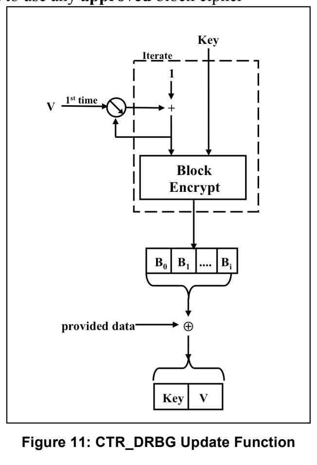
The maximum security strength that can be supported by the DRBG depends on the block cipher and key size used; the security strengths that can be supported by the block ciphers and key sizes are provided in [SP 800-57].
DRBGがサポートできる最大セキュリティ強度は、使用するブロック暗号と鍵サイズに依存する。ブロック暗号と鍵サイズがサポートできるセキュリティ強度は [SP 800-57] に示されている。
10.2.1 CTR_DRBG
10.2.1 CTR_DRBG
CTR_DRBG uses an approved block cipher algorithm in the counter mode as specified in [SP 800-38A], but allows the counter field to be a subset of the input block, as specified in [SP 800-38D]. Note that for TDEA, the input and output block lengths are 64 bits, and for AES, the lengths are 128 bits.
CTR_DRBGは、[SP 800-38A] で規定するカウンタモードで承認済みブロック暗号アルゴリズムを使用するが、[SP 800-38D] で規定するとおり、カウンタフィールドを入力ブロックの一部とすることを許容する。TDEAでは入力および出力のブロック長が64ビット、AESでは128ビットであることに注意。
The same block cipher algorithm and key length shall be used for all block cipher operations of this DRBG. The block cipher algorithm and key length shall meet or exceed the security requirements of the consuming application.
このDRBGのすべてのブロック暗号演算には、同じブロック暗号アルゴリズムと鍵長を使用しなければならない（shall）。ブロック暗号アルゴリズムと鍵長は、利用側アプリケーションのセキュリティ要件を満たすか上回らなければならない（shall）。
Figure 11: CTR_DRBG Update Function
図11：CTR_DRBGのUpdate関数
CTR_DRBG is specified using an internal function (CTR_DRBG_Update). Figure 11 depicts the CTR_DRBG_Update function. This function is called by the instantiate, generate and reseed algorithms to adjust the internal state when new entropy or additional input is provided, as well as to update the internal state after pseudorandom bits are generated. Figure 12 depicts the CTR_DRBG in three stages. The operations in the top portion of the figure are only performed if the additional input is not null.
CTR_DRBGは、内部関数（CTR_DRBG_Update）を用いて規定する。図11はCTR_DRBG_Update関数を示す。この関数は、新たなエントロピーまたは追加入力が提供されたときに内部状態を調整するため、また疑似ランダムビットの生成後に内部状態を更新するために、instantiate、generate、reseedの各アルゴリズムから呼び出される。図12は、CTR_DRBGを3段階で示す。図の上部の演算は、追加入力がnullでない場合にのみ実行される。
Table 3 specifies the values that shall be used for the function envelopes and CTR_DRBG mechanism.
表3は、機能エンベロープおよびCTR_DRBGメカニズムに使用しなければならない（shall）値を示す。
Table 3: Definitions for the CTR_DRBG
表3：CTR_DRBGの定義
| 3 Key TDEA / AES-128 / AES-192 / AES-256 | |
| Supported security strengths | See [SP 800-57] |
| \(\mathit{highest\_supported\_security\_strength}\) | See [SP 800-57] |
| Input and output block length (\(\mathit{blocklen}\)) | 64 / 128 / 128 / 128 |
| Counter field length (\(\mathit{ctr\_len}\)) | \(4 \le \mathit{ctr\_len} \le \mathit{blocklen}\) |
| Key length (\(\mathit{keylen}\)) | 168 / 128 / 192 / 256 |
| Required minimum entropy for instantiate and reseed | \(\mathit{security\_strength}\) |
| Seed length (\(\mathit{seedlen} = \mathit{outlen} + \mathit{keylen}\)) | 232 / 256 / 320 / 384 |
| If a derivation function is used: | |
| Minimum entropy input length (\(\mathit{min\_length}\)) | \(\mathit{security\_strength}\) |
| Maximum entropy input length (\(\mathit{max\_length}\)) | \(2^{35}\) bits |
| Maximum personalization string length (\(\mathit{max\_personalization\_string\_length}\)) | \(2^{35}\) bits |
| Maximum additional_input length (\(\mathit{max\_additional\_input\_length}\)) | \(2^{35}\) bits |
| If a derivation function is not used: | |
| Minimum entropy input length (\(\mathit{min\_length} = \mathit{blocklen} + \mathit{keylen}\)) | \(\mathit{seedlen}\) |
| Maximum entropy input length (\(\mathit{max\_length} = \mathit{blocklen} + \mathit{keylen}\)) | \(\mathit{seedlen}\) |
| Maximum personalization string length (\(\mathit{max\_personalization\_string\_length}\)) | \(\mathit{seedlen}\) |
| Maximum additional_input length (\(\mathit{max\_additional\_input\_length}\)) | \(\mathit{seedlen}\) |
| \(\mathit{max\_number\_of\_bits\_per\_request}\) (for \(B = (2^{\mathit{ctr\_len}} - 4) \times \mathit{blocklen}\)) | \(\mathbf{min}(B, 2^{13})\) / \(\mathbf{min}(B, 2^{19})\) |
| Maximum number of requests between reseeds (\(\mathit{reseed\_interval}\)) | \(2^{32}\) / \(2^{48}\) |
| 3 Key TDEA / AES-128 / AES-192 / AES-256 | |
| サポートするセキュリティ強度 | [SP 800-57]参照 |
| \(\mathit{highest\_supported\_security\_strength}\) | [SP 800-57]参照 |
| 入出力ブロック長（\(\mathit{blocklen}\)） | 64 / 128 / 128 / 128 |
| カウンタフィールド長（\(\mathit{ctr\_len}\)） | \(4 \le \mathit{ctr\_len} \le \mathit{blocklen}\) |
| 鍵長（\(\mathit{keylen}\)） | 168 / 128 / 192 / 256 |
| instantiateおよびreseedに必要な最小エントロピー | \(\mathit{security\_strength}\) |
| シード長（\(\mathit{seedlen} = \mathit{outlen} + \mathit{keylen}\)） | 232 / 256 / 320 / 384 |
| 導出関数を使用する場合： | |
| 最小エントロピー入力長（\(\mathit{min\_length}\)） | \(\mathit{security\_strength}\) |
| 最大エントロピー入力長（\(\mathit{max\_length}\)） | \(2^{35}\) ビット |
| 最大パーソナライゼーション文字列長（\(\mathit{max\_personalization\_string\_length}\)） | \(2^{35}\) ビット |
| 最大additional_input長（\(\mathit{max\_additional\_input\_length}\)） | \(2^{35}\) ビット |
| 導出関数を使用しない場合： | |
| 最小エントロピー入力長（\(\mathit{min\_length} = \mathit{blocklen} + \mathit{keylen}\)） | \(\mathit{seedlen}\) |
| 最大エントロピー入力長（\(\mathit{max\_length} = \mathit{blocklen} + \mathit{keylen}\)） | \(\mathit{seedlen}\) |
| 最大パーソナライゼーション文字列長（\(\mathit{max\_personalization\_string\_length}\)） | \(\mathit{seedlen}\) |
| 最大additional_input長（\(\mathit{max\_additional\_input\_length}\)） | \(\mathit{seedlen}\) |
| \(\mathit{max\_number\_of\_bits\_per\_request}\)（\(B = (2^{\mathit{ctr\_len}} - 4) \times \mathit{blocklen}\) として） | \(\mathbf{min}(B, 2^{13})\) / \(\mathbf{min}(B, 2^{19})\) |
| 再シード間の最大要求数（\(\mathit{reseed\_interval}\)） | \(2^{32}\) / \(2^{48}\) |
Note that the claimed security strength for CTR_DRBG depends on limiting the total number of generate requests and the bits provided per generate request according to the table above.
CTR_DRBGの主張するセキュリティ強度は、上表に従ってgenerate要求総数と要求当たりの提供ビット数を制限することに依存する。
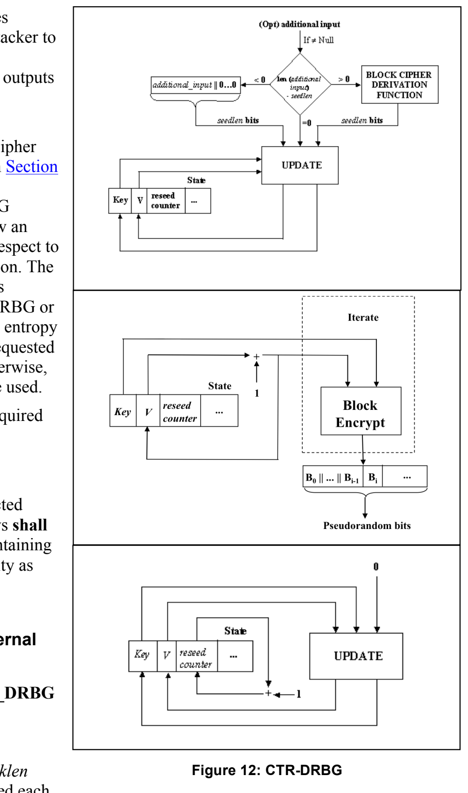
Without these limits, it becomes possible, in principle, for an attacker to observe enough outputs from CTR_DRBG to distinguish its outputs from ideal random bits.
これらの制限がなければ、原理上、攻撃者がCTR_DRBGの出力を十分に観測して、その出力を理想的なランダムビットと区別することが可能になる。
The CTR_ DRBG may be implemented to use the block cipher derivation function specified in Section 10.3.2 during instantiation and reseeding. However, the DRBG mechanism is specified to allow an implementation tradeoff with respect to the use of this derivation function. The use of the derivation function is optional if either an approved RBG or an entropy source provides full entropy output when entropy input is requested by the DRBG mechanism. Otherwise, the derivation function shall be used.
CTR_DRBGは、インスタンス化と再シードの際に、第10.3.2節で規定するブロック暗号導出関数を使用するように実装してもよい（may）。ただし、DRBGメカニズムは、この導出関数の使用に関して実装上のトレードオフを許容するように規定されている。承認済みRBGまたはエントロピー源のいずれかが、DRBGメカニズムによるエントロピー入力の要求に対して完全エントロピーの出力を提供する場合、導出関数の使用は任意である。それ以外の場合は、導出関数を使用しなければならない（shall）。
optional if either an approved RBG or an entropy source provides full entropy output when entropy input is requested by the DRBG mechanism. Otherwise, the derivation function shall be used.
Table 3 provides the lengths required for the \(\mathit{entropy\_input}\), \(\mathit{personalization\_string}\) and \(\mathit{additional\_input}\) for each case.
When using TDEA as the selected block cipher algorithm, the keys shall be handled as 64-bit blocks containing 56 bits of key and 8 bits of parity as specified for the TDEA engine specified in [SP 800-67].
DRBGメカニズムがエントロピー入力を要求する際、承認済みRBGまたはエントロピー源が完全エントロピー出力を提供する場合に限り、導出関数は任意である。それ以外の場合は導出関数を使用しなければならない（shall）。
表3は各場合の \(\mathit{entropy\_input}\)、\(\mathit{personalization\_string}\) および \(\mathit{additional\_input}\) の必要長を示す。
選択したブロック暗号アルゴリズムとしてTDEAを用いる場合、鍵は[SP 800-67]のTDEAエンジンに規定するとおり、56ビットの鍵と8ビットのパリティを含む64ビットブロックとして扱わなければならない（shall）。
10.2.1.1 CTR_DRBG Internal State
10.2.1.1 CTR_DRBGの内部状態
The internal state for the CTR_DRBG consists of:
CTR_DRBGの内部状態は、次から成る。
1. The \(\mathit{working\_state}\):
1. \(\mathit{working\_state}\)：
Figure 12: CTR-DRBG
図12：CTR-DRBG
a. The value \(V\) of \(\mathit{blocklen}\) bits, which is updated each time another \(\mathit{blocklen}\) bits of output are produced.
b. The \(\mathit{keylen}\)-bit \(\mathit{Key}\), which is updated whenever a predetermined number of output blocks are generated.
c. A counter (\(\mathit{reseed\_counter}\)) that indicates the number of requests for pseudorandom bits since instantiation or reseeding.
a. 値 \(V\)。長さは \(\mathit{blocklen}\) ビットで、\(\mathit{blocklen}\) ビットの出力が新たに生成されるたびに更新される。
b. \(\mathit{keylen}\) ビットの \(\mathit{Key}\)。所定数の出力ブロックが生成されるたびに更新される。
c. インスタンス化または再シード以降の疑似ランダムビット要求数を示すカウンタ（\(\mathit{reseed\_counter}\)）。
2.Administrative information:
2.管理情報：
a. The \(\mathit{security\_strength}\) of the DRBG instantiation.
b. A \(\mathit{prediction\_resistance\_flag}\) that indicates whether or not a prediction resistance capability is required for the DRBG instantiation.
The values of \(V\) and \(\mathit{Key}\) are the critical values of the internal state upon which the security of this DRBG mechanism depends (i.e., \(V\) and \(\mathit{Key}\) are the “secret values” of the internal state).
a. DRBGインスタンス化の \(\mathit{security\_strength}\)。
b. DRBGインスタンス化に予測耐性機能が必要かどうかを示す \(\mathit{prediction\_resistance\_flag}\)。
\(V\) および \(\mathit{Key}\) の値は、本DRBGメカニズムのセキュリティが依存する内部状態の重要値である（すなわち、\(V\) および \(\mathit{Key}\) は内部状態の「秘密値」である）。
10.2.1.2 The Update Function (CTR_DRBG_Update)
10.2.1.2 Update関数（CTR_DRBG_Update）
The \(\mathbf{CTR\_DRBG\_Update}\) function updates the internal state of the CTR_DRBG using the \(\mathit{provided\_data}\). The values for \(\mathit{blocklen}\), \(\mathit{keylen}\) and \(\mathit{seedlen}\) are provided in Table 3 of Section 10.2.1. The value of \(\mathit{ctr\_len}\) is known by an implementation. The block cipher operation in step 2.2 of the \(\mathbf{CTR\_DRBG\_UPDATE}\) process uses the selected block cipher algorithm. The specification of \(\mathbf{Block\_Encrypt}\) is discussed in Section 10.3.3.
The following or an equivalent process shall be used as the \(\mathbf{CTR\_DRBG\_Update}\) function.
\(\mathbf{CTR\_DRBG\_Update}(\mathit{provided\_data}, \mathit{Key}, V)\):
\(\mathbf{CTR\_DRBG\_Update}\) 関数は、CTR_DRBGの内部状態を \(\mathit{provided\_data}\) を用いて更新する。\(\mathit{blocklen}\)、\(\mathit{keylen}\) および \(\mathit{seedlen}\) の値は第10.2.1節の表3に示す。\(\mathit{ctr\_len}\) の値は実装で既知である。\(\mathbf{CTR\_DRBG\_UPDATE}\) 処理のステップ2.2のブロック暗号操作では、選択したブロック暗号アルゴリズムを用いる。\(\mathbf{Block\_Encrypt}\) の仕様は第10.3.3節で説明する。
以下の処理または同等の処理を用いなければならない（shall）。これを \(\mathbf{CTR\_DRBG\_Update}\) 関数とする。
\(\mathbf{CTR\_DRBG\_Update}(\mathit{provided\_data}, \mathit{Key}, V)\)：
1. \(\mathit{provided\_data}\): The data to be used. This must be exactly \(\mathit{seedlen}\) bits in length; this length is guaranteed by the construction of the \(\mathit{provided\_data}\) in the instantiate, reseed and generate functions.
1. \(\mathit{provided\_data}\)：使用するデータ。長さは正確に \(\mathit{seedlen}\) ビットでなければならない。この長さは、instantiate、reseedおよびgenerate関数での \(\mathit{provided\_data}\) の構成により保証される。
2. \(\mathit{Key}\): The current value of \(\mathit{Key}\).
2. \(\mathit{Key}\)：\(\mathit{Key}\) の現在値。
3. \(V\): The current value of \(V\).
3. \(V\)：\(V\) の現在値。
Output:
出力：
1. \(K\): The new value for \(\mathit{Key}\).
1. \(K\)：\(\mathit{Key}\) の新しい値。
2. \(V\): The new value for \(V\).
2. \(V\)：\(V\) の新しい値。
CTR_DRBG_Update Process:
CTR_DRBG_Update Process：
1. \(\mathit{temp} = \mathit{Null}\).
1. \(\mathit{temp} = \mathit{Null}\)。
2. While \((\mathbf{len}(\mathit{temp}) < \mathit{seedlen})\) do
2. \((\mathbf{len}(\mathit{temp}) < \mathit{seedlen})\) の間、次を繰り返す
2.1 If \(\mathit{ctr\_len} < \mathit{blocklen}\)
2.1 \(\mathit{ctr\_len} < \mathit{blocklen}\) の場合
2.1.1 \(\mathit{inc} = (\mathbf{rightmost}(V, \mathit{ctr\_len}) + 1) \bmod 2^{\mathit{ctr\_len}}\).
2.1.2 \(V = \mathbf{leftmost}(V, \mathit{blocklen} - \mathit{ctr\_len}) \parallel \mathit{inc}\).
Else \(V = (V + 1) \bmod 2^{\mathit{blocklen}}\).
2.1.1 \(\mathit{inc} = (\mathbf{rightmost}(V, \mathit{ctr\_len}) + 1) \bmod 2^{\mathit{ctr\_len}}\)。
2.1.2 \(V = \mathbf{leftmost}(V, \mathit{blocklen} - \mathit{ctr\_len}) \parallel \mathit{inc}\)。
それ以外の場合 \(V = (V + 1) \bmod 2^{\mathit{blocklen}}\)。
2.2 \(\mathit{output\_block} = \mathbf{Block\_Encrypt}(\mathit{Key}, V)\).
2.3 \(\mathit{temp} = \mathit{temp} \parallel \mathit{output\_block}\).
2.2 \(\mathit{output\_block} = \mathbf{Block\_Encrypt}(\mathit{Key}, V)\)。
2.3 \(\mathit{temp} = \mathit{temp} \parallel \mathit{output\_block}\)。
3. \(\mathit{temp} = \mathbf{leftmost}(\mathit{temp}, \mathit{seedlen})\).
3. \(\mathit{temp} = \mathbf{leftmost}(\mathit{temp}, \mathit{seedlen})\)。
4 \(\mathit{temp} = \mathit{temp} \oplus \mathit{provided\_data}\).
4 \(\mathit{temp} = \mathit{temp} \oplus \mathit{provided\_data}\)。
5. \(\mathit{Key} = \mathbf{leftmost}(\mathit{temp}, \mathit{keylen})\).
5. \(\mathit{Key} = \mathbf{leftmost}(\mathit{temp}, \mathit{keylen})\)。
6. \(V = \mathbf{rightmost}(\mathit{temp}, \mathit{blocklen})\).
6. \(V = \mathbf{rightmost}(\mathit{temp}, \mathit{blocklen})\)。
7. Return \((\mathit{Key}, V)\).
7. \((\mathit{Key}, V)\) を返す。
10.2.1.3 Instantiation of CTR_DRBG
10.2.1.3 CTR_DRBGのインスタンス化
Notes for the instantiate function specified in Section 9.1:
The instantiation of CTR_DRBG requires a call to the \(\mathbf{Instantiate\_function}\) specified in Section 9.1. Process step 9 of that function calls the instantiate algorithm specified in this section. The values of \(\mathit{highest\_supported\_security\_strength}\) and \(\mathit{min\_length}\) are provided in Table 3 of Section 10.2.1. The contents of the internal state are provided in Section 10.2.1.1.
The instantiate algorithm:
For this DRBG mechanism, there are two cases for processing. In each case, let \(\mathbf{CTR\_DRBG\_Update}\) be the function specified in Section 10.2.1.2. The output block length (\(\mathit{blocklen}\)), key length (\(\mathit{keylen}\)), seed length (\(\mathit{seedlen}\)) and \(\mathit{security\_strengths}\) for the block cipher algorithms are provided in Table 3 of Section 10.2.1.
第9.1節に規定するinstantiate関数に関する注記：
CTR_DRBGのインスタンス化には、第9.1節に規定する \(\mathbf{Instantiate\_function}\) の呼出しが必要である。同関数の処理ステップ9は、本節に規定するinstantiateアルゴリズムを呼び出す。\(\mathit{highest\_supported\_security\_strength}\) および \(\mathit{min\_length}\) の値は第10.2.1節の表3に示す。内部状態の内容は第10.2.1.1節に示す。
instantiateアルゴリズム：
本DRBGメカニズムには、処理に2つの場合がある。いずれの場合も、\(\mathbf{CTR\_DRBG\_Update}\) を第10.2.1.2節に規定する関数とする。ブロック暗号アルゴリズムの出力ブロック長（\(\mathit{blocklen}\)）、鍵長（\(\mathit{keylen}\)）、シード長（\(\mathit{seedlen}\)）および \(\mathit{security\_strengths}\) は第10.2.1節の表3に示す。
10.2.1.3.1 Instantiation When a Derivation Function is Not Used
10.2.1.3.1 導出関数を使用しないインスタンス化
When instantiation is performed using this method, full-entropy input is required, and a nonce is not used. The following process or its equivalent shall be used as the instantiate algorithm for this DRBG mechanism:
この方法でインスタンス化する場合、完全エントロピー入力が必要であり、ノンスは使用しない。このDRBGメカニズムのinstantiateアルゴリズムには、以下の処理または同等の処理を用いなければならない（shall）：
1. \(\mathit{entropy\_input}\): The string of bits obtained from the randomness source.
1. \(\mathit{entropy\_input}\)：ランダム性源から取得したビット列。
2. \(\mathit{personalization\_string}\): The personalization string received from the consuming application. Note that the length of the \(\mathit{personalization\_string}\) may be zero.
2. \(\mathit{personalization\_string}\)：利用側アプリケーションから受け取るパーソナライゼーション文字列。なお、\(\mathit{personalization\_string}\)の長さはゼロでもよい。
3. \(\mathit{security\_strength}\): The security strength for the instantiation. This parameter is optional for \(\mathbf{CTR\_DRBG}\).
3. \(\mathit{security\_strength}\)：インスタンス化のセキュリティ強度。\(\mathbf{CTR\_DRBG}\)では任意のパラメータである。
Output:
出力：
1. \(\mathit{initial\_working\_state}\): The initial values for \(V\), \(\mathit{Key}\), and \(\mathit{reseed\_counter}\) (see Section 10.2.1.1).
1. \(\mathit{initial\_working\_state}\)：\(V\)、\(\mathit{Key}\)および\(\mathit{reseed\_counter}\)の初期値（第10.2.1.1節参照）。
CTR_DRBG Instantiate Process:
CTR_DRBG Instantiate Process：
1. \(\mathit{temp} = \mathbf{len}\ (\mathit{personalization\_string})\).
1. \(\mathit{temp} = \mathbf{len}\ (\mathit{personalization\_string})\)。
Comment: Ensure that the length of the \(\mathit{personalization\_string}\) is exactly \(\mathit{seedlen}\) bits. Note that in Section 9.1, processing step 3 obtained an \(\mathit{entropy\_input}\) of \(\mathit{seedlen}\) bits using Table 3 to define the minimum and maximum lengths, which are both equal to \(\mathit{seedlen}\) bits.
コメント：\(\mathit{personalization\_string}\)の長さを正確に\(\mathit{seedlen}\)ビットにする。なお、第9.1節の処理ステップ3では、\(\mathit{entropy\_input}\)として\(\mathit{seedlen}\)ビットを取得している。その最小長と最大長は表3で定められ、どちらも\(\mathit{seedlen}\)ビットに等しい。
2. If \((\mathit{temp} < \mathit{seedlen})\), then \(\mathit{personalization\_string} = \mathit{personalization\_string} \parallel 0^{\mathit{seedlen} - \mathit{temp}}\).
2. \((\mathit{temp} < \mathit{seedlen})\)の場合、\(\mathit{personalization\_string} = \mathit{personalization\_string} \parallel 0^{\mathit{seedlen} - \mathit{temp}}\)とする。
3. \(\mathit{seed\_material} = \mathit{entropy\_input} \oplus \mathit{personalization\_string}\).
3. \(\mathit{seed\_material} = \mathit{entropy\_input} \oplus \mathit{personalization\_string}\)。
4. \(\mathit{Key} = 0^{\mathit{keylen}}\). Comment: \(\mathit{keylen}\) bits of zeros.
4. \(\mathit{Key} = 0^{\mathit{keylen}}\)。コメント：\(\mathit{keylen}\)ビットのゼロ。
5. \(V = 0^{\mathit{blocklen}}\). Comment: \(\mathit{blocklen}\) bits of zeros.
5. \(V = 0^{\mathit{blocklen}}\)。コメント：\(\mathit{blocklen}\)ビットのゼロ。
6. \((\mathit{Key}, V) = \mathbf{CTR\_DRBG\_Update}\ (\mathit{seed\_material}, \mathit{Key}, V)\).
6. \((\mathit{Key}, V) = \mathbf{CTR\_DRBG\_Update}\ (\mathit{seed\_material}, \mathit{Key}, V)\)。
7. \(\mathit{reseed\_counter} = 1\).
7. \(\mathit{reseed\_counter} = 1\)。
8. Return \((V, \mathit{Key}, \mathit{reseed\_counter})\).
8. \((V, \mathit{Key}, \mathit{reseed\_counter})\)を返す。
10.2.1.3.2 Instantiation When a Derivation Function is Used
10.2.1.3.2 導出関数を使用するインスタンス化
When instantiation is performed using this method, the entropy input may or may not have full entropy; in either case, a nonce is required. Let \(\mathbf{df}\) be the derivation function specified in Section 10.3.2. When instantiation is performed using this method, a nonce is required, whereas using the method in Section 10.2.1.3.1 does not require a nonce, since full entropy is provided when using that method. The following process or its equivalent shall be used as the instantiate algorithm for this DRBG mechanism:
この方法でインスタンス化する場合、エントロピー入力は完全エントロピーを持つこともあれば、持たないこともある。いずれの場合もノンスが必要である。\(\mathbf{df}\)を第10.3.2節に規定する導出関数とする。この方法でインスタンス化する場合はノンスが必要だが、第10.2.1.3.1節の方法では完全エントロピーが提供されるため、ノンスを必要としない。このDRBGメカニズムのinstantiateアルゴリズムには、以下の処理または同等の処理を用いなければならない（shall）：
1. \(\mathit{entropy\_input}\): The string of bits obtained from the randomness source.
1. \(\mathit{entropy\_input}\)：ランダム性源から取得したビット列。
2. \(\mathit{nonce}\): A string of bits as specified in Section 8.6.7.
2. \(\mathit{nonce}\)：第8.6.7節に規定するビット列。
3. \(\mathit{personalization\_string}\): The personalization string received from the consuming application. Note that the length of the \(\mathit{personalization\_string}\) may be zero.
3. \(\mathit{personalization\_string}\)：利用側アプリケーションから受け取るパーソナライゼーション文字列。なお、\(\mathit{personalization\_string}\)の長さはゼロでもよい。
4. \(\mathit{security\_strength}\): The security strength for the instantiation. This parameter is optional for \(\mathbf{CTR\_DRBG}\), since it is not used.
4. \(\mathit{security\_strength}\)：インスタンス化のセキュリティ強度。\(\mathbf{CTR\_DRBG}\)では使用しないため、任意のパラメータである。
Output:
出力：
1. \(\mathit{initial\_working\_state}\): The initial values for \(V\), \(\mathit{Key}\), and \(\mathit{reseed\_counter}\) (see Section 10.2.1.1).
1. \(\mathit{initial\_working\_state}\)：\(V\)、\(\mathit{Key}\)および\(\mathit{reseed\_counter}\)の初期値（第10.2.1.1節参照）。
CTR_DRBG Instantiate Process:
CTR_DRBG Instantiate Process：
1. \(\mathit{seed\_material} = \mathit{entropy\_input} \parallel \mathit{nonce} \parallel \mathit{personalization\_string}\).
1. \(\mathit{seed\_material} = \mathit{entropy\_input} \parallel \mathit{nonce} \parallel \mathit{personalization\_string}\)。
Comment: Ensure that the length of the \(\mathit{seed\_material}\) is exactly \(\mathit{seedlen}\) bits.
コメント：\(\mathit{seed\_material}\)の長さを正確に\(\mathit{seedlen}\)ビットにする。
2. \(\mathit{seed\_material} = \mathbf{df}\ (\mathit{seed\_material}, \mathit{seedlen})\).
2. \(\mathit{seed\_material} = \mathbf{df}\ (\mathit{seed\_material}, \mathit{seedlen})\)。
3. \(\mathit{Key} = 0^{\mathit{keylen}}\). Comment: \(\mathit{keylen}\) bits of zeros.
3. \(\mathit{Key} = 0^{\mathit{keylen}}\)。コメント：\(\mathit{keylen}\)ビットのゼロ。
4. \(V = 0^{\mathit{blocklen}}\). Comment: \(\mathit{blocklen}\) bits of zeros.
4. \(V = 0^{\mathit{blocklen}}\)。コメント：\(\mathit{blocklen}\)ビットのゼロ。
5. \((\mathit{Key}, V) = \mathbf{CTR\_DRBG\_Update}\ (\mathit{seed\_material}, \mathit{Key}, V)\).
5. \((\mathit{Key}, V) = \mathbf{CTR\_DRBG\_Update}\ (\mathit{seed\_material}, \mathit{Key}, V)\)。
6. \(\mathit{reseed\_counter} = 1\).
6. \(\mathit{reseed\_counter} = 1\)。
7. Return \((V, \mathit{Key}, \mathit{reseed\_counter})\).
7. \((V, \mathit{Key}, \mathit{reseed\_counter})\)を返す。
10.2.1.4 Reseeding a CTR_DRBG Instantiation
10.2.1.4 CTR_DRBGインスタンス化の再シード
Notes for the reseed function specified in Section 9.2: The reseeding of a \(\mathbf{CTR\_DRBG}\) instantiation requires a call to the \(\mathbf{Reseed\_function}\) specified in Section 9.2. Process step 6 of that function calls the reseed algorithm specified in this section. The values for \(\mathit{min\_length}\) are provided in Table 3 of Section 10.2.1. The reseed algorithm: For this DRBG mechanism, there are two cases for processing. In each case, let \(\mathbf{CTR\_DRBG\_Update}\) be the function specified in Section 10.2.1.2. The seed length (\(\mathit{seedlen}\)) is provided in Table 3 of Section 10.2.1.
第9.2節に規定するreseed関数に関する注記：\(\mathbf{CTR\_DRBG}\)のインスタンス化の再シードには、第9.2節に規定する\(\mathbf{Reseed\_function}\)の呼出しが必要である。同関数の処理ステップ6は、本節に規定する再シードアルゴリズムを呼び出す。\(\mathit{min\_length}\)の値は第10.2.1節の表3に示す。再シードアルゴリズム：このDRBGメカニズムには、処理に2つの場合がある。いずれの場合も、\(\mathbf{CTR\_DRBG\_Update}\)を第10.2.1.2節に規定する関数とする。シード長（\(\mathit{seedlen}\)）は第10.2.1節の表3に示す。
10.2.1.4.1 Reseeding When a Derivation Function is Not Used
10.2.1.4.1 導出関数を使用しない再シード
When reseeding is performed using this method, full-entropy input is required. The following process or its equivalent shall be used as the reseed algorithm for this DRBG mechanism (see step 6 of the reseed process in Section 9.2):
この方法で再シードする場合、完全エントロピー入力が必要である。このDRBGメカニズムのreseedアルゴリズムには、以下の処理または同等の処理を用いなければならない（shall）（第9.2節のreseed処理ステップ6参照）：
1. \(\mathit{working\_state}\): The current values for \(V\), \(\mathit{Key}\) and \(\mathit{reseed\_counter}\) (see Section 10.2.1.1).
1. \(\mathit{working\_state}\)：\(V\)、\(\mathit{Key}\)および\(\mathit{reseed\_counter}\)の現在値（第10.2.1.1節参照）。
2. \(\mathit{entropy\_input}\): The string of bits obtained from the randomness source.
2. \(\mathit{entropy\_input}\)：ランダム性源から取得したビット列。
3. \(\mathit{additional\_input}\): The additional input string received from the consuming application. Note that the length of the \(\mathit{additional\_input}\) string may be zero.
3. \(\mathit{additional\_input}\)：利用側アプリケーションから受け取る追加入力文字列。なお、\(\mathit{additional\_input}\)文字列の長さはゼロでもよい（may）。
Output:
出力：
1. \(\mathit{new\_working\_state}\): The new values for \(V\), \(\mathit{Key}\), and \(\mathit{reseed\_counter}\).
1. \(\mathit{new\_working\_state}\)：\(V\)、\(\mathit{Key}\)および\(\mathit{reseed\_counter}\)の新しい値。
CTR_DRBG Reseed Process:
CTR_DRBG Reseed Process：
1. \(\mathit{temp} = \mathbf{len}(\mathit{additional\_input})\).
1. \(\mathit{temp} = \mathbf{len}(\mathit{additional\_input})\)。
Comment: Ensure that the length of the \(\mathit{additional\_input}\) is exactly \(\mathit{seedlen}\) bits. The maximum length was checked in Section 9.2, processing step 2, using Table 3 to define the maximum length.
コメント：\(\mathit{additional\_input}\)の長さを正確に\(\mathit{seedlen}\)ビットにする。最大長は第9.2節の処理ステップ2で、表3を用いて最大長を定めて確認済みである。
2. If (\(\mathit{temp} < \mathit{seedlen}\)), then \(\mathit{additional\_input} = \mathit{additional\_input} \parallel 0^{\mathit{seedlen} - \mathit{temp}}\).
2. （\(\mathit{temp} < \mathit{seedlen}\)）の場合、\(\mathit{additional\_input} = \mathit{additional\_input} \parallel 0^{\mathit{seedlen} - \mathit{temp}}\)とする。
3. \(\mathit{seed\_material} = \mathit{entropy\_input} \oplus \mathit{additional\_input}\).
3. \(\mathit{seed\_material} = \mathit{entropy\_input} \oplus \mathit{additional\_input}\)。
4. \((\mathit{Key}, V) = \mathbf{CTR\_DRBG\_Update}(\mathit{seed\_material}, \mathit{Key}, V)\).
4. \((\mathit{Key}, V) = \mathbf{CTR\_DRBG\_Update}(\mathit{seed\_material}, \mathit{Key}, V)\)。
5. \(\mathit{reseed\_counter} = 1\).
5. \(\mathit{reseed\_counter} = 1\)。
6. Return \((V, \mathit{Key}, \mathit{reseed\_counter})\).
6. \((V, \mathit{Key}, \mathit{reseed\_counter})\)を返す。
10.2.1.4.2 Reseeding When a Derivation Function is Used
10.2.1.4.2 導出関数を使用する再シード
Let df be the derivation function specified in Section 10.3.2.
dfは第10.3.2節に規定する導出関数とする。
The following process or its equivalent shall be used as the reseed algorithm for this DRBG mechanism (see reseed process step 6 of Section 9.2):
このDRBGメカニズムのreseedアルゴリズムには、以下の処理または同等の処理を用いなければならない（shall）（第9.2節のreseed処理ステップ6参照）：
1. \(\mathit{working\_state}\): The current values for \(V\), \(\mathit{Key}\) and \(\mathit{reseed\_counter}\) (see Section 10.2.1.1).
1. \(\mathit{working\_state}\)：\(V\)、\(\mathit{Key}\)および\(\mathit{reseed\_counter}\)の現在値（第10.2.1.1節参照）。
2. \(\mathit{entropy\_input}\): The string of bits obtained from the randomness source.
2. \(\mathit{entropy\_input}\)：ランダム性源から取得したビット列。
3. \(\mathit{additional\_input}\): The additional input string received from the consuming application. Note that the length of the \(\mathit{additional\_input}\) string may be zero.
3. \(\mathit{additional\_input}\)：利用側アプリケーションから受け取る追加入力文字列。なお、\(\mathit{additional\_input}\)文字列の長さはゼロでもよい（may）。
Output:
出力：
1. \(\mathit{new\_working\_state}\): The new values for \(V\), \(\mathit{Key}\), and \(\mathit{reseed\_counter}\).
1. \(\mathit{new\_working\_state}\)：\(V\)、\(\mathit{Key}\)および\(\mathit{reseed\_counter}\)の新しい値。
CTR_DRBG Reseed Process:
CTR_DRBG Reseed Process：
1. \(\mathit{seed\_material} = \mathit{entropy\_input} \parallel \mathit{additional\_input}\).
1. \(\mathit{seed\_material} = \mathit{entropy\_input} \parallel \mathit{additional\_input}\)。
Comment: Ensure that the length of the \(\mathit{seed\_material}\) is exactly \(\mathit{seedlen}\) bits.
コメント：\(\mathit{seed\_material}\)の長さを正確に\(\mathit{seedlen}\)ビットにする。
2. \(\mathit{seed\_material} = \mathbf{df}(\mathit{seed\_material}, \mathit{seedlen})\).
2. \(\mathit{seed\_material} = \mathbf{df}(\mathit{seed\_material}, \mathit{seedlen})\)。
3. \((\mathit{Key}, V) = \mathbf{CTR\_DRBG\_Update}(\mathit{seed\_material}, \mathit{Key}, V)\).
3. \((\mathit{Key}, V) = \mathbf{CTR\_DRBG\_Update}(\mathit{seed\_material}, \mathit{Key}, V)\)。
4. \(\mathit{reseed\_counter} = 1\).
4. \(\mathit{reseed\_counter} = 1\)。
5. Return \((V, \mathit{Key}, \mathit{reseed\_counter})\).
5. \((V, \mathit{Key}, \mathit{reseed\_counter})\)を返す。
10.2.1.5 Generating Pseudorandom Bits Using CTR_DRBG
10.2.1.5 CTR_DRBGを用いた疑似ランダムビットの生成
Notes for the generate function specified in Section 9.3: The generation of pseudorandom bits using a \(\mathbf{CTR\_DRBG}\) instantiation requires a call to the \(\mathbf{Generate\_function}\) specified in Section 9.3. Process step 8 of that function calls the generate algorithm specified in this section. The values for \(\mathit{max\_number\_of\_bits\_per\_request}\) and \(\mathit{max\_additional\_input\_length}\), and \(\mathit{blocklen}\) are provided in Table 3 of Section 10.2.1. If the derivation function is not used, then the maximum allowed length of \(\mathit{additional\_input} = \mathit{seedlen}\). For this DRBG mechanism, there are two cases for the processing. For each case, let \(\mathbf{CTR\_DRBG\_Update}\) be the function specified in Section 10.2.1.2, and let \(\mathbf{Block\_Encrypt}\) be the function specified in Section 10.3.3. The seed length (\(\mathit{seedlen}\)) and the value of \(\mathit{reseed\_interval}\) are provided in Table 3 of Section 10.2.1. The value of \(\mathit{ctr\_len}\) is known by an implementation.
第9.3節に規定するgenerate機能に関する注記：\(\mathbf{CTR\_DRBG}\)のインスタンス化を用いた疑似ランダムビットの生成には、第9.3節に規定する\(\mathbf{Generate\_function}\)の呼出しが必要である。同機能の処理ステップ8は、本節に規定するgenerateアルゴリズムを呼び出す。\(\mathit{max\_number\_of\_bits\_per\_request}\)、\(\mathit{max\_additional\_input\_length}\)および\(\mathit{blocklen}\)の値は、第10.2.1節の表3に示す。導出関数を使用しない場合、許容される最大長は\(\mathit{additional\_input} = \mathit{seedlen}\)である。このDRBGメカニズムでは、処理に二つの場合がある。いずれの場合も、\(\mathbf{CTR\_DRBG\_Update}\)を第10.2.1.2節に規定する関数とし、\(\mathbf{Block\_Encrypt}\)を第10.3.3節に規定する関数とする。シード長（\(\mathit{seedlen}\)）および\(\mathit{reseed\_interval}\)の値は、第10.2.1節の表3に示す。\(\mathit{ctr\_len}\)の値は実装が把握している。
10.2.1.5.1 Generating Pseudorandom Bits When a Derivation Function is Not Used
10.2.1.5.1 導出関数を使用しない疑似ランダムビットの生成
This method of generating bits is used when a derivation function is not used by an implementation.
このビット生成方法は、実装が導出関数を使用しない場合に用いる。
The following process or its equivalent shall be used as the generate algorithm for this DRBG mechanism (see step 8 of the generate process in Section 9.3.3):
このDRBGメカニズムのgenerateアルゴリズムには、以下の処理または同等の処理を用いなければならない（shall）（第9.3.3節のgenerate処理のステップ8参照）。
1. \(\mathit{working\_state}\): The current values for \(V\), \(\mathit{Key}\), and \(\mathit{reseed\_counter}\) (see Section 10.2.1.1).
1. \(\mathit{working\_state}\)：\(V\)、\(\mathit{Key}\)および\(\mathit{reseed\_counter}\)の現在値（第10.2.1.1節参照）。
2. \(\mathit{requested\_number\_of\_bits}\): The number of pseudorandom bits to be returned to the generate function.
2. \(\mathit{requested\_number\_of\_bits}\)：generate機能に返す疑似ランダムビット数。
3. \(\mathit{additional\_input}\): The additional input string received from the consuming application. Note that the length of the \(\mathit{additional\_input}\) string may be zero.
3. \(\mathit{additional\_input}\)：利用側アプリケーションから受け取る追加入力文字列。なお、\(\mathit{additional\_input}\)文字列の長さはゼロでもよい（may）。
Output:
出力：
1. \(\mathit{status}\): The status returned from the function. The \(\mathit{status}\) will indicate \(\mathbf{SUCCESS}\), or indicate that a reseed is required before the requested pseudorandom bits can be generated.
1. \(\mathit{status}\)：関数から返される状態。\(\mathit{status}\)は\(\mathbf{SUCCESS}\)を示すか、または要求された疑似ランダムビットを生成する前に再シードが必要であることを示す。
2. \(\mathit{returned\_bits}\): The pseudorandom bits returned to the generate function.
2. \(\mathit{returned\_bits}\)：generate機能に返される疑似ランダムビット。
3. \(\mathit{working\_state}\): The new values for \(V\), \(\mathit{Key}\), and \(\mathit{reseed\_counter}\).
3. \(\mathit{working\_state}\)：\(V\)、\(\mathit{Key}\)および\(\mathit{reseed\_counter}\)の新しい値。
CTR_DRBG Generate Process:
CTR_DRBG Generate Process：
1. If \(\mathit{reseed\_counter} > \mathit{reseed\_interval}\), then return an indication that a reseed is required.
1. \(\mathit{reseed\_counter} > \mathit{reseed\_interval}\) の場合、再シードが必要であることを示す表示を返す。
2. If (\(\mathit{additional\_input} \ne \mathit{Null}\)), then
Comment: Ensure that the length of the \(\mathit{additional\_input}\) is exactly \(\mathit{seedlen}\) bits. The maximum length was checked in Section 9.3.3, processing step 4, using Table 3 to define the maximum length. If the length of the additional input is \(< \mathit{seedlen}\), pad with zero bits.
2. (\(\mathit{additional\_input} \ne \mathit{Null}\)) の場合、次を行う。
コメント：\(\mathit{additional\_input}\) の長さを正確に \(\mathit{seedlen}\) ビットにする。最大長は第9.3.3節の処理ステップ4で、表3を用いて最大長を定めて確認済みである。additional input の長さが \(< \mathit{seedlen}\) なら、ゼロビットでパディングする。
2.1 \(\mathit{temp} = \mathbf{len}(\mathit{additional\_input})\).
2.2 If (\(\mathit{temp} < \mathit{seedlen}\)), then
2.1 \(\mathit{temp} = \mathbf{len}(\mathit{additional\_input})\)。
2.2 (\(\mathit{temp} < \mathit{seedlen}\)) の場合、
\(\mathit{additional\_input} = \mathit{additional\_input} \parallel 0^{\mathit{seedlen} - \mathit{temp}}\).
2.3 \((\mathit{Key}, V) = \mathbf{CTR\_DRBG\_Update}(\mathit{additional\_input}, \mathit{Key}, V)\).
\(\mathit{additional\_input} = \mathit{additional\_input} \parallel 0^{\mathit{seedlen} - \mathit{temp}}\)。
2.3 \((\mathit{Key}, V) = \mathbf{CTR\_DRBG\_Update}(\mathit{additional\_input}, \mathit{Key}, V)\)。
Else \(\mathit{additional\_input} = 0^{\mathit{seedlen}}\).
それ以外の場合、\(\mathit{additional\_input} = 0^{\mathit{seedlen}}\)。
3. \(\mathit{temp} = \mathit{Null}\).
3. \(\mathit{temp} = \mathit{Null}\)。
4. While (\(\mathbf{len}(\mathit{temp}) < \mathit{requested\_number\_of\_bits}\)) do:
4. (\(\mathbf{len}(\mathit{temp}) < \mathit{requested\_number\_of\_bits}\)) の間、次を繰り返す：
4.1 If \(\mathit{ctr\_len} < \mathit{blocklen}\)
4.1 \(\mathit{ctr\_len} < \mathit{blocklen}\) の場合、
4.1.1 \(\mathit{inc} = (\mathbf{rightmost}(V, \mathit{ctr\_len}) + 1) \bmod 2^{\mathit{ctr\_len}}\).
4.1.2 \(V = \mathbf{leftmost}(V, \mathit{blocklen} - \mathit{ctr\_len}) \parallel \mathit{inc}\).
Else \(V = (V + 1) \bmod 2^{\mathit{blocklen}}\).
4.1.1 \(\mathit{inc} = (\mathbf{rightmost}(V, \mathit{ctr\_len}) + 1) \bmod 2^{\mathit{ctr\_len}}\)。
4.1.2 \(V = \mathbf{leftmost}(V, \mathit{blocklen} - \mathit{ctr\_len}) \parallel \mathit{inc}\)。
それ以外の場合、\(V = (V + 1) \bmod 2^{\mathit{blocklen}}\)。
4.2 \(\mathit{output\_block} = \mathbf{Block\_Encrypt}(\mathit{Key}, \mathrm{V})\).
4.3 \(\mathit{temp} = \mathit{temp} \parallel \mathit{output\_block}\).
4.2 \(\mathit{output\_block} = \mathbf{Block\_Encrypt}(\mathit{Key}, \mathrm{V})\)。
4.3 \(\mathit{temp} = \mathit{temp} \parallel \mathit{output\_block}\)。
5. \(\mathit{returned\_bits} = \mathbf{leftmost}(\mathit{temp}, \mathit{requested\_number\_of\_bits})\).
5. \(\mathit{returned\_bits} = \mathbf{leftmost}(\mathit{temp}, \mathit{requested\_number\_of\_bits})\)。
Comment: Update for backtracking resistance.
コメント：バックトラッキング耐性のため更新する。
6. \((\mathit{Key}, V) = \mathbf{CTR\_DRBG\_Update}(\mathit{additional\_input}, \mathit{Key}, V)\).
6. \((\mathit{Key}, V) = \mathbf{CTR\_DRBG\_Update}(\mathit{additional\_input}, \mathit{Key}, V)\)。
7. \(\mathit{reseed\_counter} = \mathit{reseed\_counter} + 1\).
7. \(\mathit{reseed\_counter} = \mathit{reseed\_counter} + 1\)。
8. Return (\(\mathbf{SUCCESS}, \mathit{returned\_bits}, \mathit{Key}, V, \mathit{reseed\_counter}\)).
8. (\(\mathbf{SUCCESS}, \mathit{returned\_bits}, \mathit{Key}, V, \mathit{reseed\_counter}\)) を返す。
10.2.1.5.2 Generating Pseudorandom Bits When a Derivation Function is Used
10.2.1.5.2 導出関数を使用する疑似ランダムビットの生成
This method of generating bits is used when a derivation function is used by an implementation.
この方法は実装が導出関数を使用する場合に用いる。
Let \(\mathbf{df}\) be the derivation function specified in Section 10.3.2.
The following process or its equivalent shall be used as the generate algorithm for this DRBG mechanism (see step 8 of the generate process in Section 9.3.3):
\(\mathbf{CTR\_DRBG\_Generate\_algorithm}(\mathit{working\_state}, \mathit{requested\_number\_of\_bits}, \mathit{additional\_input})\):
\(\mathbf{df}\) は第10.3.2節に規定する導出関数とする。
このDRBGメカニズムのgenerateアルゴリズムとして、以下の処理または同等の処理を用いなければならない（shall）（第9.3.3節のgenerate処理のステップ8参照）：
\(\mathbf{CTR\_DRBG\_Generate\_algorithm}(\mathit{working\_state}, \mathit{requested\_number\_of\_bits}, \mathit{additional\_input})\)：
1. \(\mathit{working\_state}\): The current values for \(V\), \(\mathit{Key}\), and \(\mathit{reseed\_counter}\) (see Section 10.2.1.1).
1. \(\mathit{working\_state}\)：\(V\)、\(\mathit{Key}\) および \(\mathit{reseed\_counter}\) の現在の値（第10.2.1.1節参照）。
2. \(\mathit{requested\_number\_of\_bits}\): The number of pseudorandom bits to be returned to the generate function.
2. \(\mathit{requested\_number\_of\_bits}\)：generate機能に返す疑似ランダムビット数。
3. \(\mathit{additional\_input}\): The additional input string received from the consuming application. Note that the length of the \(\mathit{additional\_input}\) string may be zero.
3. \(\mathit{additional\_input}\)：利用側アプリケーションから受け取る追加入力文字列。\(\mathit{additional\_input}\) 文字列の長さはゼロでもよい（may）ことに注意する。
Output:
出力：
1. \(\mathit{status}\): The status returned from the function. The \(\mathit{status}\) will indicate \(\mathbf{SUCCESS}\), or indicate that a reseed is required before the requested pseudorandom bits can be generated.
1. \(\mathit{status}\)：関数から返される状態。\(\mathit{status}\) は \(\mathbf{SUCCESS}\) を示すか、要求された疑似ランダムビットを生成する前に再シードが必要であることを示す。
2. \(\mathit{returned\_bits}\): The pseudorandom bits returned to the generate function.
2. \(\mathit{returned\_bits}\)：generate機能に返される疑似ランダムビット。
3. \(\mathit{working\_state}\): The new values for \(V\), \(\mathit{Key}\), and \(\mathit{reseed\_counter}\).
3. \(\mathit{working\_state}\)：\(V\)、\(\mathit{Key}\) および \(\mathit{reseed\_counter}\) の新しい値。
CTR_DRBG Generate Process:
CTR_DRBG Generate Process：
1. If \(\mathit{reseed\_counter} > \mathit{reseed\_interval}\), then return an indication that a reseed is required.
1. \(\mathit{reseed\_counter} > \mathit{reseed\_interval}\) の場合、再シードが必要であることを示す表示を返す。
2. If (\(\mathit{additional\_input} \ne \mathit{Null}\)), then
2.1 \(\mathit{additional\_input} = \mathbf{Block\_Cipher\_df}(\mathit{additional\_input}, \mathit{seedlen})\).
2. (\(\mathit{additional\_input} \ne \mathit{Null}\)) の場合、
2.1 \(\mathit{additional\_input} = \mathbf{Block\_Cipher\_df}(\mathit{additional\_input}, \mathit{seedlen})\)。
2.2 \((\mathit{Key}, V) = \mathbf{CTR\_DRBG\_Update}(\mathit{additional\_input}, \mathit{Key}, V)\).
Else \(\mathit{additional\_input} = 0^{\mathit{seedlen}}\).
2.2 \((\mathit{Key}, V) = \mathbf{CTR\_DRBG\_Update}(\mathit{additional\_input}, \mathit{Key}, V)\)。
それ以外の場合、\(\mathit{additional\_input} = 0^{\mathit{seedlen}}\)。
3. \(\mathit{temp} = \mathit{Null}\).
3. \(\mathit{temp} = \mathit{Null}\)。
4. While (\(\mathbf{len}(\mathit{temp}) < \mathit{requested\_number\_of\_bits}\)) do:
4. (\(\mathbf{len}(\mathit{temp}) < \mathit{requested\_number\_of\_bits}\)) の間、次を繰り返す：
4.1 If \(\mathit{ctr\_len} < \mathit{blocklen}\)
4.1 \(\mathit{ctr\_len} < \mathit{blocklen}\) の場合、
4.1.1 \(\mathit{inc} = (\mathbf{rightmost}(V, \mathit{ctr\_len}) + 1) \bmod 2^{\mathit{ctr\_len}}\).
4.1.2 \(V = \mathbf{leftmost}(V, \mathit{blocklen} - \mathit{ctr\_len}) \parallel \mathit{inc}\).
Else
4.1.2 \(V = (V + 1) \bmod 2^{\mathit{blocklen}}\).
4.1.1 \(\mathit{inc} = (\mathbf{rightmost}(V, \mathit{ctr\_len}) + 1) \bmod 2^{\mathit{ctr\_len}}\)。
4.1.2 \(V = \mathbf{leftmost}(V, \mathit{blocklen} - \mathit{ctr\_len}) \parallel \mathit{inc}\)。
それ以外の場合、
4.1.2 \(V = (V + 1) \bmod 2^{\mathit{blocklen}}\)。
4.2 \(\mathit{output\_block} = \mathbf{Block\_Encrypt}(\mathit{Key}, \mathrm{V})\).
4.3 \(\mathit{temp} = \mathit{temp} \parallel \mathit{output\_block}\).
4.2 \(\mathit{output\_block} = \mathbf{Block\_Encrypt}(\mathit{Key}, \mathrm{V})\)。
4.3 \(\mathit{temp} = \mathit{temp} \parallel \mathit{output\_block}\)。
5. \(\mathit{returned\_bits} = \mathbf{leftmost}(\mathit{temp}, \mathit{requested\_number\_of\_bits})\).
5. \(\mathit{returned\_bits} = \mathbf{leftmost}(\mathit{temp}, \mathit{requested\_number\_of\_bits})\)。
Comment: Update for backtracking resistance.
コメント：バックトラッキング耐性のため更新する。
6. \((\mathit{Key}, V) = \mathbf{CTR\_DRBG\_Update}(\mathit{additional\_input}, \mathit{Key}, V)\).
6. \((\mathit{Key}, V) = \mathbf{CTR\_DRBG\_Update}(\mathit{additional\_input}, \mathit{Key}, V)\)。
7. \(\mathit{reseed\_counter} = \mathit{reseed\_counter} + 1\).
7. \(\mathit{reseed\_counter} = \mathit{reseed\_counter} + 1\)。
8. Return (\(\mathbf{SUCCESS}, \mathit{returned\_bits}, \mathit{Key}, V, \mathit{reseed\_counter}\)).
8. (\(\mathbf{SUCCESS}, \mathit{returned\_bits}, \mathit{Key}, V, \mathit{reseed\_counter}\)) を返す。
10.3 Auxiliary Functions
10.3 補助関数
Derivation functions are internal functions that are used during DRBG instantiation and reseeding to either derive internal state values or to distribute entropy throughout a bitstring. Two methods are provided. One method is based on the use of hash functions (see Section 10.3.1), and the other method is based on the use of block cipher algorithms (see Section 10.3.2). The block cipher derivation function specified in Section 10.3.2 uses a BCC function and a Block_Encrypt call that are discussed in Section 10.3.3.
導出関数は、DRBGのインスタンス化と再シードの際に、内部状態の値を導出するため、またはエントロピーをビット列全体に分散させるために使用する内部関数である。2つの方法を示す。1つはハッシュ関数の使用に基づくもの（第10.3.1節参照）、もう1つはブロック暗号アルゴリズムの使用に基づくもの（第10.3.2節参照）である。第10.3.2節で規定するブロック暗号導出関数は、第10.3.3節で論じるBCC関数とBlock_Encrypt呼び出しを使用する。
The presence of these derivation functions in this Recommendation does not implicitly approve these functions for any other application.
本推奨にこれらの導出関数が存在することは、これらの関数を他のいかなる用途にも承認することを暗黙に意味するものではない。
10.3.1 Derivation Function Using a Hash Function (Hash_df)
10.3.1 ハッシュ関数を用いる導出関数（Hash_df）
This derivation function is used by the Hash_DRBG specified Section 10.1.1. The hash-based derivation function hashes an input string and returns the requested number of bits. Let \(\mathbf{Hash}\) be the hash function used by the DRBG mechanism, and let \(\mathit{outlen}\) be its output length. The following or an equivalent process shall be used to derive the requested number of bits: \(\mathbf{Hash\_df}\ (\mathit{input\_string}, \mathit{no\_of\_bits\_to\_return})\):
この導出関数は第10.1.1節で規定するHash_DRBGが使用する。ハッシュベースの導出関数は入力文字列をハッシュし、要求されたビット数を返す。\(\mathbf{Hash}\)をDRBGメカニズムで使用するハッシュ関数とし、\(\mathit{outlen}\)をその出力長とする。要求されたビット数の導出には、以下の処理または同等の処理を用いなければならない（shall）：\(\mathbf{Hash\_df}\ (\mathit{input\_string}, \mathit{no\_of\_bits\_to\_return})\)：
1. \(\mathit{input\_string}\): The string to be hashed.
1. \(\mathit{input\_string}\)：ハッシュ対象の文字列。
2. \(\mathit{no\_of\_bits\_to\_return}\): The number of bits to be returned by \(\mathbf{Hash\_df}\). The maximum length (\(\mathit{max\_number\_of\_bits}\)) is implementation dependent, but shall be less than or equal to \((255 \times \mathit{outlen})\). \(\mathit{no\_of\_bits\_to\_return}\) is represented as a 32-bit integer.
2. \(\mathit{no\_of\_bits\_to\_return}\)：\(\mathbf{Hash\_df}\)が返すビット数。最大長（\(\mathit{max\_number\_of\_bits}\)）は実装に依存するが、\((255 \times \mathit{outlen})\)以下でなければならない（shall）。\(\mathit{no\_of\_bits\_to\_return}\)は32ビット整数で表す。
Output:
出力：
1. \(\mathit{status}\): The status returned from \(\mathbf{Hash\_df}\). The status will indicate \(\mathbf{SUCCESS}\) or \(\mathbf{ERROR\_FLAG}\).
1. \(\mathit{status}\)：\(\mathbf{Hash\_df}\)から返される状態。状態は\(\mathbf{SUCCESS}\)または\(\mathbf{ERROR\_FLAG}\)を示す。
2. \(\mathit{requested\_bits}\): The result of performing the \(\mathbf{Hash\_df}\).
2. \(\mathit{requested\_bits}\)：\(\mathbf{Hash\_df}\)を実行した結果。
Hash_df Process:
Hash_df Process：
1. \(\mathit{temp} =\) the Null string.
1. \(\mathit{temp} =\) Null文字列。
2. \(\mathit{len} = \left\lceil \frac{\mathit{no\_of\_bits\_to\_return}}{\mathit{outlen}} \right\rceil\).
2. \(\mathit{len} = \left\lceil \frac{\mathit{no\_of\_bits\_to\_return}}{\mathit{outlen}} \right\rceil\)。
3. \(\mathit{counter} = \mathrm{0x01}\). Comment: An 8-bit binary value representing the integer "1".
3. \(\mathit{counter} = \mathrm{0x01}\)。コメント：整数「1」を表す8ビットの二進値。
4. For \(i = 1\) to \(\mathit{len}\) do
4. \(i = 1\)から\(\mathit{len}\)まで、次を行う
Comment : In step 4.1, \(\mathit{no\_of\_bits\_to\_return}\) is used as a 32-bit string.
コメント：ステップ4.1では、\(\mathit{no\_of\_bits\_to\_return}\)を32ビットの文字列として用いる。
4.1 \(\mathit{temp} = \mathit{temp} \parallel \mathbf{Hash}\ (\mathit{counter} \parallel \mathit{no\_of\_bits\_to\_return} \parallel \mathit{input\_string})\).
4.2 \(\mathit{counter} = \mathit{counter} + 1\).
4.1 \(\mathit{temp} = \mathit{temp} \parallel \mathbf{Hash}\ (\mathit{counter} \parallel \mathit{no\_of\_bits\_to\_return} \parallel \mathit{input\_string})\)。
4.2 \(\mathit{counter} = \mathit{counter} + 1\)。
5. \(\mathit{requested\_bits} = \mathbf{leftmost}\ (\mathit{temp}, \mathit{no\_of\_bits\_to\_return})\).
5. \(\mathit{requested\_bits} = \mathbf{leftmost}\ (\mathit{temp}, \mathit{no\_of\_bits\_to\_return})\)。
6. Return \((\mathbf{SUCCESS}, \mathit{requested\_bits})\).
6. \((\mathbf{SUCCESS}, \mathit{requested\_bits})\)を返す。
10.3.2 Derivation Function Using a Block Cipher Algorithm (Block_Cipher_df)
10.3.2 ブロック暗号アルゴリズムを用いる導出関数（Block_Cipher_df）
This derivation function is used by the CTR_DRBG that is specified in Section 10.2. \(\mathbf{BCC}\) and \(\mathbf{Block\_Encrypt}\) are discussed in Section 10.3.3. Let \(\mathit{outlen}\) be its output block length, which is a multiple of eight bits for the approved block cipher algorithms, and let \(\mathit{keylen}\) be the key length. The following or an equivalent process shall be used to derive the requested number of bits. \(\mathbf{Block\_Cipher\_df}\ (\mathit{input\_string}, \mathit{no\_of\_bits\_to\_return})\):
この導出関数は第10.2節で規定するCTR_DRBGが使用する。\(\mathbf{BCC}\)および\(\mathbf{Block\_Encrypt}\)は第10.3.3節で説明する。\(\mathit{outlen}\)をその出力ブロック長（承認済みブロック暗号アルゴリズムでは8ビットの倍数）とし、\(\mathit{keylen}\)を鍵長とする。要求されたビット数の導出には、以下の処理または同等の処理を用いなければならない（shall）。\(\mathbf{Block\_Cipher\_df}\ (\mathit{input\_string}, \mathit{no\_of\_bits\_to\_return})\)：
1. \(\mathit{input\_string}\): The string to be operated on. This string shall be a multiple of eight bits.
1. \(\mathit{input\_string}\)：処理対象の文字列。この文字列は8ビットの倍数でなければならない（shall）。
2. \(\mathit{no\_of\_bits\_to\_return}\): The number of bits to be returned by \(\mathbf{Block\_Cipher\_df}\). The maximum length (\(\mathit{max\_number\_of\_bits}\)) is 512 bits for the currently approved block cipher algorithms.
2. \(\mathit{no\_of\_bits\_to\_return}\)：\(\mathbf{Block\_Cipher\_df}\)が返すビット数。最大長（\(\mathit{max\_number\_of\_bits}\)）は、現在承認されているブロック暗号アルゴリズムでは512ビットである。
Output:
出力：
1. \(\mathit{status}\): The status returned from \(\mathbf{Block\_Cipher\_df}\). The status will indicate \(\mathbf{SUCCESS}\) or \(\mathbf{ERROR\_FLAG}\).
1. \(\mathit{status}\)：\(\mathbf{Block\_Cipher\_df}\)から返される状態。状態は\(\mathbf{SUCCESS}\)または\(\mathbf{ERROR\_FLAG}\)を示す。
2. \(\mathit{requested\_bits}\): The result of performing the \(\mathbf{Block\_Cipher\_df}\).
2. \(\mathit{requested\_bits}\)：\(\mathbf{Block\_Cipher\_df}\)を実行した結果。
Block_Cipher_df Process:
Block_Cipher_df Process：
1. If \((\mathit{number\_of\_bits\_to\_return} > \mathit{max\_number\_of\_bits})\), then return an \(\mathbf{ERROR\_FLAG}\) and a Null string.
1. \((\mathit{number\_of\_bits\_to\_return} > \mathit{max\_number\_of\_bits})\)の場合、\(\mathbf{ERROR\_FLAG}\)およびNull文字列を返す。
2. \(L = \mathbf{len}\ (\mathit{input\_string})/8\). Comment: \(L\) is the bitstring representation of the integer resulting from \(\mathbf{len}\ (\mathit{input\_string})/8\). \(L\) shall be represented as a 32-bit integer.
2. \(L = \mathbf{len}\ (\mathit{input\_string})/8\)。コメント：\(L\)は、\(\mathbf{len}\ (\mathit{input\_string})/8\)の結果である整数のビット列表現である。\(L\)は32ビット整数として表さなければならない（shall）。
3. \(N = \mathit{number\_of\_bits\_to\_return}/8\). Comment: \(N\) is the bitstring representation of the integer resulting from \(\mathit{number\_of\_bits\_to\_return}/8\). \(N\) shall be represented as a 32-bit integer.
3. \(N = \mathit{number\_of\_bits\_to\_return}/8\)。コメント：\(N\)は、\(\mathit{number\_of\_bits\_to\_return}/8\)の結果である整数のビット列表現である。\(N\)は32ビット整数として表さなければならない（shall）。
Comment: Prepend the string length and the requested length of the output to the \(\mathit{input\_string}\).
コメント：文字列長および要求された出力長を\(\mathit{input\_string}\)の前に付加する。
4. \(S = L \parallel N \parallel \mathit{input\_string} \parallel \mathrm{0x80}\).
4. \(S = L \parallel N \parallel \mathit{input\_string} \parallel \mathrm{0x80}\)。
Comment: Pad \(S\) with zeros, if necessary.
コメント：必要なら\(S\)をゼロでパディングする。
5. While \((\mathbf{len}\ (S) \bmod \mathit{outlen}) \ne 0\), do
\(S = S \parallel \mathrm{0x00}\).
5. \((\mathbf{len}\ (S) \bmod \mathit{outlen}) \ne 0\)である間、次を行う
\(S = S \parallel \mathrm{0x00}\)。
Comment: Compute the starting value.
コメント：開始値を計算する。
6. \(\mathit{temp} =\) the \(\mathit{Null}\) string.
6. \(\mathit{temp} =\) \(\mathit{Null}\)文字列。
7. \(i = 0\). Comment: \(i\) shall be represented as a 32-bit integer, i.e., \(\mathbf{len}\ (i) = 32\).
7. \(i = 0\)。コメント：\(i\)は32ビット整数として表さなければならない（shall）。すなわち\(\mathbf{len}\ (i) = 32\)である。
8. \(K = \mathbf{leftmost}\ (\mathrm{0x00010203}\ldots\mathrm{1D1E1F}, \mathit{keylen})\).
8. \(K = \mathbf{leftmost}\ (\mathrm{0x00010203}\ldots\mathrm{1D1E1F}, \mathit{keylen})\)。
9. While \(\mathbf{len}\ (\mathit{temp}) < \mathit{keylen} + \mathit{outlen}\), do
9.1 \(\mathit{IV} = i \parallel 0^{\mathit{outlen} - \mathbf{len}\ (i)}\). Comment: The 32-bit integer representation of \(i\) is padded with zeros to \(\mathit{outlen}\) bits.
9. \(\mathbf{len}\ (\mathit{temp}) < \mathit{keylen} + \mathit{outlen}\)である間、次を行う
9.1 \(\mathit{IV} = i \parallel 0^{\mathit{outlen} - \mathbf{len}\ (i)}\)。コメント：\(i\)の32ビット整数表現を、\(\mathit{outlen}\)ビットになるまでゼロでパディングする。
9.2 \(\mathit{temp} = \mathit{temp} \parallel \mathbf{BCC}\ (K, (\mathit{IV} \parallel S))\).
9.3 \(i = i + 1\).
9.2 \(\mathit{temp} = \mathit{temp} \parallel \mathbf{BCC}\ (K, (\mathit{IV} \parallel S))\)。
9.3 \(i = i + 1\)。
Comment: Compute the requested number of bits.
コメント：要求ビット数を計算する。
10. \(K = \mathbf{leftmost}(\mathit{temp}, \mathit{keylen})\).
10. \(K = \mathbf{leftmost}(\mathit{temp}, \mathit{keylen})\)。
11. \(X = \mathbf{select}(\mathit{temp}, \mathit{keylen}+1, \mathit{keylen}+\mathit{outlen})\).
11. \(X = \mathbf{select}(\mathit{temp}, \mathit{keylen}+1, \mathit{keylen}+\mathit{outlen})\)。
12. \(\mathit{temp}\) = the \(\mathit{Null}\) string.
12. \(\mathit{temp}\) = \(\mathit{Null}\) 文字列。
13. While \(\mathbf{len}(\mathit{temp}) < \mathit{number\_of\_bits\_to\_return}\), do
13. \(\mathbf{len}(\mathit{temp}) < \mathit{number\_of\_bits\_to\_return}\) の間、以下を行う
13.1 \(X = \mathbf{Block\_Encrypt}(K, X)\).
13.1 \(X = \mathbf{Block\_Encrypt}(K, X)\)。
13.2 \(\mathit{temp} = \mathit{temp} \parallel X\).
13.2 \(\mathit{temp} = \mathit{temp} \parallel X\)。
14. \(\mathit{requested\_bits} = \mathbf{leftmost}(\mathit{temp}, \mathit{number\_of\_bits\_to\_return})\).
14. \(\mathit{requested\_bits} = \mathbf{leftmost}(\mathit{temp}, \mathit{number\_of\_bits\_to\_return})\)。
15. Return (\(\mathbf{SUCCESS}\), \(\mathit{requested\_bits}\)).
15. Return (\(\mathbf{SUCCESS}\), \(\mathit{requested\_bits}\))。
10.3.3 BCC and Block_Encrypt
10.3.3 BCCおよびBlock_Encrypt
Block_Encrypt is used for convenience in the specification of the BCC function. This function is not specifically defined in this Recommendation, but has the following meaning:
Block_EncryptはBCC関数の仕様を簡潔にするために用いる。本推奨で個別に定義はしないが、次の意味を持つ：
\(\mathbf{Block\_Encrypt}\): A basic encryption operation that uses the selected block cipher algorithm. The function call is:
For TDEA, the basic encryption operation is called the forward cipher operation (see [SP 800-67]); for AES, the basic encryption operation is called the cipher operation (see [FIPS 197]). The basic encryption operation is equivalent to an encryption operation on a single block of data using the ECB mode. For the \(\mathbf{BCC}\) function, let \(\mathit{outlen}\) be the length of the output block of the block cipher algorithm to be used. The following or an equivalent process shall be used to derive the requested number of bits. \(\mathbf{BCC}(\mathit{Key}, \mathit{data})\):
\(\mathbf{Block\_Encrypt}\)：選択したブロック暗号アルゴリズムを用いる基本暗号化操作。関数呼出しは次のとおりである：
TDEAでは、基本暗号化操作を順方向暗号操作と呼ぶ（[SP 800-67]参照）。AESでは、基本暗号化操作を暗号操作と呼ぶ（[FIPS 197]参照）。基本暗号化操作は、ECBモードを用いた単一のデータブロックに対する暗号化操作と等価である。\(\mathbf{BCC}\) 関数については、\(\mathit{outlen}\) を、使用するブロック暗号アルゴリズムの出力ブロックの長さとする。要求されたビット数を導出するには、以下の処理またはそれと等価な処理を使用しなければならない（shall）。\(\mathbf{BCC}(\mathit{Key}, \mathit{data})\)：
1. \(\mathit{Key}\): The key to be used for the block cipher operation.
1. \(\mathit{Key}\)：ブロック暗号操作に用いる鍵。
2. \(\mathit{data}\): The data to be operated upon. Note that the length of \(\mathit{data}\) must be a multiple of \(\mathit{outlen}\). This is guaranteed by \(\mathbf{Block\_Cipher\_df}\) process steps 4 and 8.1 in Section 10.3.2.
2. \(\mathit{data}\)：処理対象のデータ。なお、\(\mathit{data}\) の長さは \(\mathit{outlen}\) の倍数でなければならない（must）。これは第10.3.2節の \(\mathbf{Block\_Cipher\_df}\) 処理のステップ4および8.1によって保証される。
Output:
出力：
1. \(\mathit{output\_block}\): The result to be returned from the \(\mathbf{BCC}\) operation.
1. \(\mathit{output\_block}\)：\(\mathbf{BCC}\) 操作から返す結果。
BCC Process:
BCC Process：
1. \(\mathit{chaining\_value} = 0^{\mathit{outlen}}\). Comment: Set the first chaining value to \(\mathit{outlen}\) zeros.
1. \(\mathit{chaining\_value} = 0^{\mathit{outlen}}\)。コメント：最初の連鎖値を \(\mathit{outlen}\) 個のゼロに設定する。
2. \(n = \mathbf{len}(\mathit{data})/\mathit{outlen}\).
2. \(n = \mathbf{len}(\mathit{data})/\mathit{outlen}\)。
3. Starting with the leftmost bits of data, split \(\mathit{data}\) into \(n\) blocks of \(\mathit{outlen}\) bits each, forming \(\mathit{block}_1\) to \(\mathit{block}_n\).
3. dataの左端のビットから始めて、\(\mathit{data}\) を \(n\) 個のブロック（それぞれ \(\mathit{outlen}\) ビット）に分割し、\(\mathit{block}_1\) から \(\mathit{block}_n\) を作る。
4. For \(i = 1\) to \(n\) do
4. \(i = 1\) から \(n\) まで以下を行う
4.1 \(\mathit{input\_block} = \mathit{chaining\_value} \oplus \mathit{block}_i\).
4.1 \(\mathit{input\_block} = \mathit{chaining\_value} \oplus \mathit{block}_i\)。
4.2 \(\mathit{chaining\_value} = \mathbf{Block\_Encrypt}(\mathit{Key}, \mathit{input\_block})\).
4.2 \(\mathit{chaining\_value} = \mathbf{Block\_Encrypt}(\mathit{Key}, \mathit{input\_block})\)。
5. \(\mathit{output\_block} = \mathrm{chaining\_value}\).
5. \(\mathit{output\_block} = \mathrm{chaining\_value}\)。
6. Return (\(\mathit{output\_block}\)).
6. Return (\(\mathit{output\_block}\))。
11 Assurance
11 保証
A user of a DRBG employed for cryptographic purposes requires assurance that the generator actually produces (pseudo) random and unpredictable bits. The user needs assurance that the design of the generator, its implementation and its use to support cryptographic services are adequate to protect the user's information. In addition, the user requires assurance that the generator continues to operate correctly.
暗号用途でDRBGを使うユーザーは、生成器が実際に（疑似）ランダムかつ予測不能なビットを生成するという保証を必要とする。生成器の設計、実装、および暗号サービスを支えるための使用が、ユーザーの情報を保護するのに適切であるという保証も必要である。さらに、ユーザーは生成器が正しく動作し続けるという保証を必要とする。
The design of each DRBG mechanism in this Recommendation has received an evaluation of its security properties prior to its selection for inclusion in this Recommendation.
本推奨に含まれる各DRBGメカニズムの設計は、本推奨に含めるために選定される前に、そのセキュリティ特性について評価を受けている。
An implementer selects a DRBG mechanism (e.g., HMAC_DRBG), an appropriate cryptographic primitive (e.g., SHA-256 or SHA-512), the DRBG functions to be used (i.e., instantiate, generate and/or reseed), and will determine whether or not the DRBG will be distributed (see Section 8.5). Each choice of components effectively defines a different DRBG type. For example, an implementation of HMAC_DRBG using SHA-256 is considered to be a different DRBG than HMAC_DRBG using SHA-512.
実装者は、DRBGメカニズム（例えばHMAC_DRBG）、適切な暗号プリミティブ（例えばSHA-256またはSHA-512）、使用するDRBG機能（すなわち、インスタンス化、生成、および／または再シード）を選択し、DRBGを分散させるかどうかを決定する（セクション8.5参照）。構成要素の選択の組合せごとに、実質的に異なるDRBGの種類が定まる。例えば、SHA-256を使用するHMAC_DRBGの実装は、SHA-512を使用するHMAC_DRBGとは異なるDRBGとみなされる。
An implementation shall be validated for conformance to this Recommendation by a NVLAP-accredited laboratory (see Section 11.2). Such validations provide a higher level of assurance that the DRBG mechanism is correctly implemented.
実装は、NVLAP認定試験所によって本推奨への適合性を検証されなければならない（shall）（セクション11.2参照）。このような検証は、DRBGメカニズムが正しく実装されていることについて、より高い水準の保証を提供する。
Health tests on the DRBG mechanism shall be implemented within a DRBG mechanism boundary or sub-boundary in order to determine that the process continues to operate as designed and implemented. See Section 11.3 for further information.
処理が設計および実装どおりに動作し続けることを確認するため、DRBGメカニズムのヘルステストを、DRBGメカニズム境界またはサブ境界の内部に実装しなければならない（shall）。詳細はセクション11.3を参照のこと。
A cryptographic module containing a DRBG mechanism shall be validated (see [FIPS 140]). The consuming application or cryptographic service that uses a DRBG mechanism should also be validated and periodically tested for continued correct operation. However, this level of testing is outside the scope of this Recommendation.
DRBGメカニズムを含む暗号モジュールは、検証されなければならない（shall）（[FIPS 140]参照）。DRBGメカニズムを使用する利用アプリケーションまたは暗号サービスも、検証され、継続して正しく動作することを定期的に試験されるべきである（should）。ただし、この水準の試験は本推奨の範囲外である。
Note that any entropy input used for testing (either for validation testing or health testing) may be publicly known. Therefore, entropy input used for testing shall not be used for normal operational use.
試験（検証試験またはヘルステスト）に使用するエントロピー入力は、公に知られている場合がある（may）ことに注意すること。したがって、試験に使用したエントロピー入力を、通常の運用に使用してはならない（shall not）。
11.1 Minimal Documentation Requirements
11.1 最小限の文書化要件
A set of documentation shall be developed that will provide assurance to users and validators that the DRBG mechanisms in this Recommendation have been implemented properly. Much of this documentation could be placed in a user manual. This documentation shall consist of the following as a minimum:
本推奨のDRBGメカニズムが適切に実装されたことをユーザーおよび検証者に保証する文書一式を作成しなければならない（shall）。その多くはユーザーマニュアルに記載してもよい（could）。少なくとも、次を文書化しなければならない（shall）：
•Document the method for obtaining entropy input.
•エントロピー入力の取得方法。
•Document how the implementation has been designed to permit implementation validation and health testing.
•実装検証およびヘルステストが可能となるよう実装を設計した方法を文書化する。
•Document the type of DRBG mechanism (e.g., CTR_DRBG), and the cryptographic primitives used (e.g., AES-128 or SHA-256).
•DRBGメカニズムの種類（例：CTR_DRBG）および使用する暗号プリミティブ（例：AES-128またはSHA-256）を文書化する。
•Document the security strengths supported by the implementation.
•実装がサポートするセキュリティ強度。
•Document features supported by the implementation (e.g., prediction resistance, personalization string, additional input, etc.).
•実装がサポートする機能（例：予測耐性、パーソナライゼーション文字列、追加入力など）を文書化する。
•If DRBG mechanism functions are distributed, specify the mechanisms that are used to protect the confidentiality and integrity of the internal state or parts of the internal state that are transferred between the distributed DRBG mechanism sub-boundaries (i.e., provide documentation about the secure channel).
•DRBGメカニズム機能が分散されている場合、分散DRBGメカニズムの副境界間で転送される内部状態またはその一部の機密性および完全性の保護に用いる仕組みを明記する（すなわち、セキュアチャネルに関する文書を提示する）。
•In the case of the CTR_DRBG, indicate whether a derivation function is provided. If a derivation function is not used, document that the implementation can only be used when full entropy input is available.
•CTR_DRBGの場合、導出関数の有無を明記する。導出関数を使用しない場合、完全エントロピー入力が利用可能な場合に限り実装を使用できることを文書化する。
•Document any support functions other than health testing.
•ヘルステスト以外のサポート機能を文書化する。
•If periodic testing is performed for the generate function, document the intervals and provide a justification for the selected intervals (see Section 11.3.3).
•generate機能を定期的に試験する場合、間隔および選定根拠（第11.3.3節参照）。
•Document whether the DRBG functions can be tested on demand.
•DRBG機能を要求時に試験できるかどうかを文書化する。
•Document how the integrity of the health tests will be determined subsequent to implementation validation testing.
•実装検証試験後にヘルステストの完全性をどのように判断するかを文書化する。
11.2 Implementation Validation Testing
11.2 実装検証試験
A DRBG mechanism shall be tested for conformance to this Recommendation. A DRBG mechanism shall be designed to be tested to ensure that the product is correctly implemented. A testing interface shall be available for this purpose in order to allow the insertion of input and the extraction of output for testing.
DRBGメカニズムは、本推奨への適合性を試験しなければならない（shall）。DRBGメカニズムは、製品が正しく実装されていることを確認するために試験できるように設計しなければならない（shall）。この目的のために、試験用に入力を挿入し出力を取り出せるよう、試験インタフェースを利用可能にしなければならない（shall）。
Implementations to be validated shall include the following:
検証対象の実装には、次を含めなければならない（shall）。
•The documentation specified in Section 11.1.
•第11.1節に規定する文書。
•Any documentation or results required in derived test requirements.
•派生試験要件で求める文書または結果。
All DRBG functions included in an implementation shall be tested, including the health test functionality. The error handling of all implemented DRBG functions will be tested. See Section 11.4 for expected error handling behavior.
実装に含まれるすべてのDRBG機能を、ヘルステスト機能を含めて試験しなければならない（shall）。実装されたすべてのDRBG機能のエラー処理も試験される。期待されるエラー処理の動作は第11.4節を参照。
Note that when the uninstantiate function is tested, testing shall demonstrate that the internal state has been zeroized.
uninstantiate機能を試験する場合、内部状態がゼロ化されたことを試験で実証しなければならない（shall）ことに注意。
11.3 Health Testing
11.3 ヘルステスト
A DRBG implementation shall perform self-tests to obtain assurance that the DRBG continues to operate as designed and implemented (health testing). The testing function(s) within a DRBG mechanism boundary (or sub-boundary) shall test each DRBG mechanism function within that boundary (or sub-boundary), with the possible exception of the health test function itself. A DRBG implementation may optionally perform other self-tests for DRBG functionality in addition to the tests specified in this Recommendation.
DRBG実装は、設計・実装どおりに動作し続ける保証を得るため自己試験（ヘルステスト）を実施しなければならない（shall）。DRBGメカニズム境界（または副境界）内の試験機能は、ヘルステスト機能自身を除く場合があるが、その境界内の各DRBGメカニズム機能を試験しなければならない（shall）。DRBG実装は、本推奨に規定する試験に加えて、DRBG機能の他の自己試験を任意に実施してもよい（may）。
The testing of the error handling capability is not required during the conduct of health tests. However, errors encountered during health testing shall be handled as discussed in Section 11.4.2.
エラー処理能力の試験は、ヘルステストの実施中には必要ない。ただし、ヘルステスト中に発生したエラーは、第11.4.2節で論じるとおりに処理しなければならない（shall）。
All data output from the DRBG mechanism boundary (or sub-boundary) shall be inhibited while these tests are performed. The results from known-answer-tests (see Section 11.3.1) shall not be output as random bits during normal operation.
これらの試験の実施中は、DRBGメカニズム境界（または副境界）からのすべてのデータ出力を抑止しなければならない（shall）。既知解テスト（第11.3.1節参照）の結果は、通常動作中にランダムビットとして出力してはならない（shall not）。
11.3.1 Known Answer Testing
11.3.1 既知解テスト
Known-answer testing shall be conducted as specified below. A known-answer test involves operating the DRBG mechanism with data for which the correct output is already known, and determining if the calculated output equals the expected output (the known answer). The test fails if the calculated output does not equal the known answer. In this case, the DRBG mechanism shall enter an error state and output an error indicator (see Section 11.4).
既知解テストは、以下に規定するとおりに実施しなければならない（shall）。既知解テストでは、正しい出力があらかじめわかっているデータを用いてDRBGメカニズムを動作させ、計算された出力が期待される出力（既知解）と等しいかどうかを判定する。計算された出力が既知解と等しくない場合、テストは失敗する。この場合、DRBGメカニズムはエラー状態に入り、エラー指示子を出力しなければならない（shall）（第11.4節参照）。
Generalized known-answer testing is specified in Sections 11.3.2 through 11.3.5. With the possible exception of the health test function itself, testing shall be performed on all implemented DRBG mechanism functions within a DRBG boundary (if all functions are in the same device) or sub-boundary (if functions are distributed) (see Section 8.5). Documentation shall be provided that addresses the continued integrity of the health tests (see Section 11.1).
一般化された既知解テストは、第11.3.2節から第11.3.5節で規定する。ヘルステスト機能自体は例外としてもよいが、DRBG境界（すべての機能が同じデバイスにある場合）または副境界（機能が分散している場合）内に実装されたすべてのDRBGメカニズム機能に対して試験を実施しなければならない（shall）（第8.5節参照）。ヘルステストの継続的な完全性を扱う文書を提供しなければならない（shall）（第11.1節参照）。
Known-answer tests shall be conducted on each DRBG function within a boundary or sub-boundary prior to the first use of that DRBG (e.g., during the power-on self-testing sequence).
既知解テストは、境界または副境界内の各DRBG機能に対して、そのDRBGを最初に使用する前（例：電源投入時の自己テストの手順中）に実施しなければならない（shall）。
11.3.2 Testing the Instantiate Function
11.3.2 Instantiate機能の試験
Known-answer tests on the instantiate function shall use a security strength that will be available during normal operations. If prediction resistance has been implemented, the \(\mathit{prediction\_resistance\_flag}\) shall also be used. A representative fixed value and length of the \(\mathit{entropy\_input}\), \(\mathit{nonce}\) and \(\mathit{personalization\_string}\) (if supported) shall be used; the value of the \(\mathit{entropy\_input}\) used during testing shall not be intentionally reused during normal operations (either by the instantiate or the reseed functions). If the values used during the test produce the expected results, then the instantiate function may be used during normal operation. An implementation should provide a capability to test the instantiate function on demand.
instantiate関数の既知解テストでは、通常運用時に利用可能なセキュリティ強度を使用しなければならない（shall）。予測耐性を実装している場合、\(\mathit{prediction\_resistance\_flag}\) も使用しなければならない（shall）。\(\mathit{entropy\_input}\)、\(\mathit{nonce}\) および（サポートされる場合）\(\mathit{personalization\_string}\) には、代表的な固定の値と長さを使用しなければならない（shall）。試験で使用した \(\mathit{entropy\_input}\) の値を、通常運用時に（instantiate関数またはreseed関数のいずれによっても）意図的に再利用してはならない（shall not）。試験で使用した値が期待される結果を生成する場合、instantiate関数を通常運用時に使用してよい。実装は、instantiate関数を要求に応じて試験する機能を提供すべきである（should）。
11.3.3 Testing the Generate Function
11.3.3 Generate機能の試験
During generate-function testing, a representative fixed value and length for the \(\mathit{requested\_number\_of\_bits}\) and \(\mathit{additional\_input}\) (if supported) shall be used. If prediction resistance is supported, then the use of the \(\mathit{prediction\_resistance\_request}\) parameter shall be tested. If the values used during the test produce the expected results, then the generate function may be used during normal operation. Bits generated during health testing shall not be output as pseudorandom bits. An implementation should provide a capability to test the generate function on demand.
generate関数の試験では、\(\mathit{requested\_number\_of\_bits}\) および（サポートされる場合）\(\mathit{additional\_input}\) に代表的な固定の値と長さを使用しなければならない（shall）。予測耐性がサポートされる場合、\(\mathit{prediction\_resistance\_request}\) パラメータの使用を試験しなければならない（shall）。試験で使用した値が期待される結果を生成する場合、generate関数を通常運用時に使用してよい。ヘルステスト中に生成したビットを擬似乱数ビットとして出力してはならない（shall not）。実装は、generate関数を要求に応じて試験する機能を提供すべきである（should）。
In addition to testing the generate function before first use (see Section 11.3.1), known-answer tests should be performed at reasonable intervals, as defined by the implementer.
初回使用前のgenerate機能試験（第11.3.1節参照）に加え、実装者が定める妥当な間隔で既知解テストを実施すべきである（should）。
11.3.4 Testing the Reseed Function
11.3.4 Reseed機能の試験
Known-answer testing of the reseed function shall use the \(\mathit{security\_strength}\) in the internal state of the (testing) instantiation to be reseeded. A representative value of the \(\mathit{entropy\_input}\) and \(\mathit{additional\_input}\) (if supported) shall be used (see Sections 8.3 and 10). If prediction resistance for the reseed function is supported, then the use of the \(\mathit{prediction\_resistance\_request}\) parameter shall be tested.
reseed 関数の既知解テストでは、再シード対象の（テスト用）インスタンス化の内部状態にある \(\mathit{security\_strength}\) を用いなければならない（shall）。\(\mathit{entropy\_input}\) と \(\mathit{additional\_input}\)（サポートされている場合）には代表的な値を用いなければならない（shall）（第8.3節および第10節を参照）。reseed 関数で予測耐性がサポートされている場合は、\(\mathit{prediction\_resistance\_request}\) パラメータの使用をテストしなければならない（shall）。
If the values used during the test produce the expected results, then the reseed function may be used during normal operation.
テストで使用した値が期待どおりの結果を生成する場合、reseed 関数は通常動作で使用してよい（may）。
An implementation should provide a capability to test the reseed function on demand.
実装は、reseed 関数をオンデマンドでテストする機能を提供すべきである（should）。
11.3.5 Testing the Uninstantiate Function
11.3.5 Uninstantiate機能の試験
Testing of the uninstantiate function is not required during health testing.
ヘルステスト中にuninstantiate機能を試験する必要はない。
11.4 Error Handling
11.4 エラー処理
The expected errors are indicated for each DRBG mechanism function (see Sections 9.1 through 9.4) and for the derivation functions in Section 10.3. The error handling routines should indicate the type of error.
期待されるエラーは各DRBGメカニズム機能（第9.1節から第9.4節）および導出関数（第10.3節）に示す。エラー処理ルーチンはエラーの種類を示すべきである（should）。
11.4.1 Errors Encountered During Normal Operation
11.4.1 通常動作中に発生するエラー
Many errors that occur during normal operation may be caused by a consuming application’s improper DRBG request or possibly the current unavailability of entropy; these errors are indicated by “ERROR_FLAG” in the pseudocode. In these cases, the consuming application user is responsible for correcting the request within the limits of the user’s organizational security policy. For example, if a failure indicating an invalid requested security strength is returned, a security strength higher than the DRBG or the DRBG instantiation can support has been requested. The user may reduce the requested security strength if the organization’s security policy allows the information to be protected using a lower security strength, or the user shall use an appropriately instantiated DRBG.
通常動作中に発生するエラーの多くは、利用側アプリケーションの不適切なDRBG要求、またはエントロピーが一時的に利用できないことが原因である可能性がある。これらのエラーは擬似コード中で「ERROR_FLAG」により示される。この場合、利用側アプリケーションのユーザは、組織のセキュリティポリシーの範囲内で要求を修正する責任を負う。例えば、無効なセキュリティ強度が要求されたことを示す失敗が返された場合、DRBGまたはDRBGのインスタンス化がサポートできるより高いセキュリティ強度が要求されている。ユーザは、組織のセキュリティポリシーが、より低いセキュリティ強度で情報を保護することを認めている場合は、要求するセキュリティ強度を下げてもよい（may）。要求するセキュリティ強度を下げない場合、ユーザは適切にインスタンス化されたDRBGを使用しなければならない（shall）。
Catastrophic errors (i.e., errors indicated by the CATASTROPHIC_ERROR_FLAG in the pseudocode) detected during normal operation shall be treated in the same manner as an error detected during health testing (see Section 11.4.2).
通常動作中に検出された致命的エラー（すなわち、擬似コード中でCATASTROPHIC_ERROR_FLAGにより示されるエラー）は、ヘルステスト中に検出されたエラーと同じ方法で扱わなければならない（shall）（第11.4.2節参照）。
11.4.2 Errors Encountered During Health Testing
11.4.2 ヘルステスト中に発生するエラー
Errors detected during health testing shall be perceived as catastrophic DRBG failures.
ヘルステスト中に検出されたエラーは、DRBG の致命的な故障とみなさなければならない（shall）。
When a DRBG fails a health test or a catastrophic error is detected during normal operation, the DRBG shall enter an error state and output an error indicator. The DRBG shall not perform any instantiate, generate or reseed operations while in the error state, and pseudorandom bits shall not be output when an error state exists. When in an error state, user intervention (e.g., power cycling of the DRBG) shall be required to exit the error state, and the DRBG shall be re-instantiated before the DRBG can be used to produce pseudorandom bits. Examples of such errors include:
DRBG がヘルステストに失敗した場合、または通常動作中に致命的エラーが検出された場合、DRBG はエラー状態に入り、エラー指示子を出力しなければならない（shall）。DRBG は、エラー状態にある間、instantiate、generate、reseed のいずれの操作も実行してはならず（shall not）、エラー状態が存在する間は疑似ランダムビットを出力してはならない（shall not）。エラー状態にあるときは、エラー状態を脱するためにユーザーの介入（例：DRBG の電源の入れ直し）が必要であり（shall）、DRBG を再インスタンス化してからでなければ、疑似ランダムビットの生成に DRBG を使用できない。このようなエラーの例には、次のものがある。
•A test deliberately inserts an error, and the error is not detected, or
•テストで意図的にエラーを挿入したが、検出されなかった場合、または
•A result is returned from the instantiate, reseed or generate function that was not expected.
•instantiate、reseed、generate機能から予期しない結果が返された場合。
Appendix A: (Normative) Conversion and Auxiliary Routines
付録A：（規定）変換および補助ルーチン
A.1 Bitstring to an Integer
A.1 ビット列から整数への変換
\(\mathbf{Bitstring\_to\_integer}(b_1, b_2, \ldots, b_n)\):
\(\mathbf{Bitstring\_to\_integer}(b_1, b_2, \ldots, b_n)\)：
Input:
入力：
1. \(b_1, b_2, \ldots, b_n\) The bitstring to be converted.
1. \(b_1, b_2, \ldots, b_n\) 変換するビット列。
Output:
出力：
1. \(x\) The requested integer representation of the bitstring.
1. \(x\) ビット列の要求された整数表現。
Process:
処理：
1. Let \((b_1, b_2, \ldots, b_n)\) be the bits of a bitstring from leftmost to rightmost (i.e., most significant to least significant).
1. \((b_1, b_2, \ldots, b_n)\) を、ビット列の左端から右端（すなわち最上位から最下位）に並ぶビットとする。
2.
3. Return (\(x\)).
3. Return (\(x\))。
In this Recommendation, the binary length of an integer \(x\) is defined as the smallest integer \(n\) satisfying \(x < 2^n\).
本推奨では、整数 \(x\) の二進長を、最小の整数 \(n\) であって \(x < 2^n\) を満たすものと定義する。
A.2 Integer to a Bitstring
A.2 整数からビット列への変換
\(\mathbf{Integer\_to\_bitstring}\) (\(x\)): Input:
\(\mathbf{Integer\_to\_bitstring}\) (\(x\))：入力：
1. \(x\) The non-negative integer to be converted.
1. \(x\)：変換する非負整数。
Output:
出力：
1. \(b_1, b_2, \ldots, b_n\) The bitstring representation of the integer \(x\).
1. \(b_1, b_2, \ldots, b_n\)：整数 \(x\) のビット列表現。
Process:
処理：
1. Let \((b_1, b_2, \ldots, b_n)\) represent the bitstring, where \(b_1 = 0\) or \(1\), and \(b_1\) is the most significant bit, while \(b_n\) is the least significant bit.
1. \((b_1, b_2, \ldots, b_n)\) をビット列とする。ここで \(b_1 = 0\) または \(1\) であり、\(b_1\) は最上位ビット、\(b_n\) は最下位ビットである。
2. For any integer \(n\) that satisfies \(x < 2^n\), the bits \(b_i\) shall satisfy:
2. \(n\) を \(x < 2^n\) を満たす任意の整数とするとき、ビット \(b_i\) は次を満たさなければならない（shall）：
3. Return \((b_1, b_2, \ldots, b_n)\).
3. \((b_1, b_2, \ldots, b_n)\) を返す。
In this Recommendation, the binary length of the integer \(x\) is defined as the smallest integer \(n\) that satisfies \(x < 2^n\).
本推奨では、整数 \(x\) の二進長を、最小の整数 \(n\) であって \(x < 2^n\) を満たすものと定義する。
A.3 Integer to a Byte String
A.3 整数からバイト列への変換
\(\mathbf{Integer\_to\_byte\_string}\) (\(x\)): Input:
\(\mathbf{Integer\_to\_byte\_string}\) (\(x\))：入力：
1. A non-negative integer \(x\), and the intended length \(n\) of the byte string satisfying
1. 非負整数 \(x\)、およびバイト列の所定長 \(n\)。これらは次を満たす。
Output:
出力：
1. A byte string \(B\) of length \(n\) bytes.
1. バイト列 \(B\)。長さは \(n\) バイト。
Process:
処理：
1. Let \(B_1, B_2, \ldots, B_n\) be the bytes of \(B\) from leftmost to rightmost.
1. \(B_1, B_2, \ldots, B_n\) を、\(B\) の左端から右端に並ぶバイトとする。
2. \(B\) の各バイトは次を満たさなければならない（shall）：
3. Return (\(B\)).
3. Return (\(B\))。
A.4 Byte String to an Integer
A.4 バイト列から整数への変換
\(\mathbf{Byte\_string\_to\_integer}\) (\(B\)): Input:
\(\mathbf{Byte\_string\_to\_integer}\) (\(B\))：入力：
1. A byte string \(B\) of length \(n\) bytes.
1. バイト列 \(B\)。長さは \(n\) バイト。
Output:
出力：
1. A non-negative integer \(x\).
1. 非負整数 \(x\)。
Process:
処理：
1. Let \(B_1, B_2, \ldots, B_n\) be the bytes of \(B\) from leftmost to rightmost.
1. \(B_1, B_2, \ldots, B_n\) を、\(B\) の左端から右端に並ぶバイトとする。
2. \(x\) は次のように定義する：
3. Return (\(x\)).
3. \(x\) を返す。
A.5 Converting Random Bits into a Random Number
A.5 ランダムビットから乱数への変換
In some cryptographic applications, sequences of random numbers are required \((a_0, a_1, a_2, \ldots)\), where:
一部の暗号アプリケーションでは、次の条件を満たす乱数の列 \((a_0, a_1, a_2, \ldots)\) が必要となる。
i.Each integer \(a_i\) satisfies \(0 \le a_i \le r-1\), for some positive integer \(r\) (the range of the random numbers);
i.各整数 \(a_i\) は、ある正の整数 \(r\)（乱数の範囲）について \(0 \le a_i \le r-1\) を満たす。
ii.The equation \(a_i = s\) holds, with probability almost exactly \(1/r\), for any \(i \ge 0\) and for any \(s\) \((0 \le s \le r-1)\);
ii.任意の \(i \ge 0\) と任意の \(s\) \((0 \le s \le r-1)\) について、\(a_i = s\) が成り立つ確率はほぼ正確に \(1/r\) である。
iii.Each value \(a_i\) is statistically independent of any set of values \(a_j\) \((j \ne i)\).
iii.各値 \(a_i\) は、値 \(a_j\) \((j \ne i)\) の任意の集合と統計的に独立である。
Four techniques are specified for generating sequences of random numbers from sequences of random bits.
ランダムビット列から乱数の列を生成する 4 つの手法を規定する。
If the range of the number required is \(a \le a_i \le b\), rather than \(0 \le a_i \le r-1\), then a random number in the desired range can be obtained by computing \(a_i + a\), where \(a_i\) is a random number in the range \(0 \le a_i \le b-a\) (that is, when \(r = b-a+1\)).
必要な数の範囲が \(a \le a_i \le b\) であって \(0 \le a_i \le r-1\) ではない場合、所望の範囲の乱数は \(a_i + a\) を計算して得られる。ここで \(a_i\) は範囲 \(0 \le a_i \le b-a\) の乱数である（すなわち \(r = b-a+1\) の場合）。
A.5.1 The Simple Discard Method
A.5.1 単純な棄却法
Let \(m\) be the number of bits needed to represent the value \((r-1)\). The following method may be used to generate the random number \(a\):
\(m\) を、値 \((r-1)\) を表すのに必要なビット数とする。乱数 \(a\) を生成するには、次の方法を用いてもよい：
1. Use the random bit generator to generate a sequence of \(m\) random bits, \((b_0, b_1, \ldots, b_{m-1})\).
1. 乱数ビット生成器を用いて、\(m\) 個のランダムビットの列 \((b_0, b_1, \ldots, b_{m-1})\) を生成する。
2. Let \(c = \sum_{i=0}^{m-1} 2^i b_i\).
2. \(c = \sum_{i=0}^{m-1} 2^i b_i\) とする。
3. If \(c < r\) then put \(a = c\), else discard \(c\) and go to Step 1.
3. \(c < r\) ならば \(a = c\) とし、そうでなければ \(c\) を破棄してステップ1に戻る。
This method produces a random number \(a\) with no skew (no bias). A possible disadvantage of this method, in general, is that the time needed to generate such a random \(a\) is not a fixed length of time because of the conditional loop.
この方法は、歪み（偏り）のない乱数 \(a\) を生成する。この方法の欠点となり得るのは、一般に、条件付きループがあるため、そのような乱数 \(a\) の生成に要する時間が一定ではないことである。
The ratio \(r/2^m\) is a measure of the efficiency of the technique, and this ratio will always satisfy \(0.5 < r/2^m \le 1\). If \(r/2^m\) is close to 1, then the above method is simple and efficient. However, if \(r/2^m\) is close to 0.5, then the simple discard method is less efficient, and the more complex method below is recommended.
比 \(r/2^m\) はこの手法の効率の尺度であり、この比は常に \(0.5 < r/2^m \le 1\) を満たす。\(r/2^m\) が 1 に近ければ、上記の方法は単純かつ効率的である。しかし、\(r/2^m\) が 0.5 に近い場合は、単純な棄却法の効率は低くなるため、以下のより複雑な方法を推奨する。
A.5.2 The Complex Discard Method
A.5.2 複雑な棄却法
Choose a small positive integer \(t\) (the number of same-size random number outputs desired), and then let \(m\) be the number of bits in \((r^t - 1)\). This method may be used to generate a sequence of \(t\) random numbers \((a_0, a_1, \ldots, a_{t-1})\):
小さな正の整数 \(t\)（必要とする同じサイズの乱数出力の個数）を選び、\(m\) を \((r^t - 1)\) のビット数とする。この方法は、\(t\) 個の乱数の列 \((a_0, a_1, \ldots, a_{t-1})\) を生成するために用いてもよい：
1. Use the random bit generator to generate a sequence of \(m\) random bits, \((b_0, b_1, \ldots, b_{m-1})\).
1. 乱数ビット生成器を用いて、\(m\) 個のランダムビットの列 \((b_0, b_1, \ldots, b_{m-1})\) を生成する。
2. Let \(c = \sum_{i=0}^{m-1} 2^i b_i\).
2. \(c = \sum_{i=0}^{m-1} 2^i b_i\) とする。
3. If \(c < r^t\), then
3. \(c < r^t\) ならば、
let \((a_0, a_1, \ldots, a_{t-1})\) be the unique sequence of values satisfying \(0 \le a_i \le r-1\) such that
\((a_0, a_1, \ldots, a_{t-1})\) を、\(0 \le a_i \le r-1\) を満たし、かつ次式が成り立つ一意な値の列とする。
そうでなければ \(c\) を破棄してステップ1に戻る。
This method produces random numbers \((a_0, a_1, \ldots, a_{t-1})\) with no skew. A possible disadvantage of this method, in general, is that the time needed to generate these numbers is not a fixed length of time because of the conditional loop. The complex discard method may have better overall performance than the simple discard method if many random numbers are needed. The ratio \(r^t/2^m\) is a measure of the efficiency of the technique, and this ratio will always satisfy \(0.5 < r^t/2^m \le 1\). Hence, given \(r\), it is recommended to choose \(t\) so that \(t\) is the smallest value such that \(r^t/2^m\) is close to 1. For example, if \(r = 3\), then choosing \(t = 3\) means that \(m = 5\) (as \(r^t\) is 27) and \(r^t/m = 27/32 \approx 0.84\), and choosing \(t = 5\) means that \(m = 8\) (as \(r^t\) is 243) and \(r^t/m = 243/256 \approx 0.95\). The complex discard method coincides with the simple discard method when \(t = 1\).
この方法は、偏りのない乱数 \((a_0, a_1, \ldots, a_{t-1})\) を生成する。この方法の一般的な欠点となり得るのは、条件付きループがあるため、これらの数の生成に要する時間が一定でないことである。多数の乱数が必要な場合、複合棄却法は単純棄却法より全体の性能が良いことがある。比 \(r^t/2^m\) はこの手法の効率の尺度であり、この比は常に \(0.5 < r^t/2^m \le 1\) を満たす。したがって、\(r\) が与えられたとき、\(t\) の選び方として、\(t\) が \(r^t/2^m\) を1に近くする最小の値となるように選ぶことが推奨される。例えば \(r = 3\) の場合、\(t = 3\) を選ぶと \(m = 5\)（\(r^t\) が27であるため）、\(r^t/m = 27/32 \approx 0.84\) となり、\(t = 5\) を選ぶと \(m = 8\)（\(r^t\) が243であるため）、\(r^t/m = 243/256 \approx 0.95\) となる。\(t = 1\) のとき、複合棄却法は単純棄却法と一致する。
A.5.3 The Simple Modular Method
A.5.3 単純剰余法
Let \(m\) be the number of bits needed to represent the value \((r-1)\), and let \(s\) be a security parameter. The following method may be used to generate one random number \(a\):
\(m\) を値 \((r-1)\) を表すのに必要なビット数とし、\(s\) をセキュリティパラメータとする。乱数 \(a\) を1つ生成するには、次の方法を用いてもよい：
1. Use the random bit generator to generate a sequence of \(m+s\) random bits, \((b_0, b_1, \ldots, b_{m+s-1})\).
1. 乱数ビット生成器を用いて、\(m+s\) 個のランダムビットの列 \((b_0, b_1, \ldots, b_{m+s-1})\) を生成する。
2. Let \(c = \sum_{i=0}^{m+s-1} 2^i b_i\).
2. \(c = \sum_{i=0}^{m+s-1} 2^i b_i\) とする。
3. Let \(a = c \bmod r\).
3. \(a = c \bmod r\) とする。
The simple modular method can be coded to take constant time. This method produces a random value with a negligible skew, that is, the probability that \(a_i = w\) for any particular value of \(w\) (\(0 \le w \le r-1\)) is not exactly \(1/r\). However, for a large enough value of \(s\), the difference between the probability that \(a_i = w\) for any particular value of \(w\) and \(1/r\) is negligible. The value of \(s\) shall be greater than or equal to 64.
単純剰余法は定時間で実装できる。この方法は無視できる程度の偏りを持つ乱数値を生成する。すなわち、\(a_i = w\) となる確率は、特定の値 \(w\)（\(0 \le w \le r-1\)）のいずれについても厳密には \(1/r\) ではない。ただし \(s\) が十分大きければ、任意の特定の値 \(w\) について、\(a_i = w\) となる確率と \(1/r\) との差は無視できる。\(s\) の値は64以上でなければならない（shall）。
Appendix B: (Informative) Example Pseudocode for Each DRBG Mechanism
付録B：（参考）各DRBGメカニズムの擬似コード例
The internal states in these examples are considered to be an array of states, identified by \(\mathit{state\_handle}\). A particular state is addressed as \(\mathit{internal\_state}(\mathit{state\_handle})\), where the value of \(\mathit{state\_handle}\) begins at 0 and ends at \(n-1\), and \(n\) is the number of internal states provided by an implementation. A particular element in the internal state is addressed by \(\mathit{internal\_state}(\mathit{state\_handle}).\mathit{element}\). In an empty internal state, all bitstrings are set to \(\mathit{Null}\), and all integers are set to 0.
For each example in this appendix, arbitrary values have been selected that are consistent with the allowed values for each DRBG mechanism, as specified in the appropriate table in Section 10.
The pseudocode in this appendix does not include the necessary conversions (e.g., integer to bitstring) for an implementation. When conversions are required, they shall be accomplished as specified in Appendix A.
The following routine is defined for these pseudocode examples:
\(\mathbf{Find\_state\_space}()\): A function that finds an unused internal state. The function returns a \(\mathit{status}\) (either “Success” or a message indicating that an unused internal state is not available) and, if \(\mathit{status} = \text{“Success”}\), a \(\mathit{state\_handle}\) that points to an available \(\mathit{internal\_state}\) in the array of internal states. If \(\mathit{status} \ne \text{“Success”}\), an invalid \(\mathit{state\_handle}\) is returned.
When the uninstantantiate function is invoked in the following examples, the function specified in Section 9.4 is called.
これらの例では、内部状態を \(\mathit{state\_handle}\) で識別される状態の配列として扱う。特定の状態は \(\mathit{internal\_state}(\mathit{state\_handle})\) で指定する。\(\mathit{state\_handle}\) の値は0から始まり \(n-1\) で終わる。\(n\) は実装が提供する内部状態の数である。内部状態の特定の要素は \(\mathit{internal\_state}(\mathit{state\_handle}).\mathit{element}\) で指定する。空の内部状態では、すべてのビット列を \(\mathit{Null}\) に、すべての整数を0に設定する。
この付録の各例では、第10節の該当する表に規定された各DRBGメカニズムの許容値と整合する任意の値を選んでいる。
この付録の擬似コードは、実装に必要な変換（例：整数からビット列への変換）を含まない。変換が必要な場合は、Appendix Aの規定に従って行わなければならない（shall）。
これらの擬似コード例のために、次のルーチンを定義する：
\(\mathbf{Find\_state\_space}()\)：未使用の内部状態を見つける関数。この関数は \(\mathit{status}\)（“Success”、または未使用の内部状態がないことを示すメッセージ）を返す。さらに \(\mathit{status} = \text{“Success”}\) の場合は \(\mathit{state\_handle}\) も返す。これは内部状態の配列のうち利用可能な \(\mathit{internal\_state}\) を指す。\(\mathit{status} \ne \text{“Success”}\) の場合は、無効な \(\mathit{state\_handle}\) を返す。
以下の例でuninstantantiate機能を呼び出すときは、第9.4節に規定された機能を呼び出す。
B.1 Hash_DRBG Example
B.1 Hash_DRBGの例
This example of \(\mathbf{Hash\_DRBG}\) uses the SHA-1 hash function, and prediction resistance is supported. Both a personalization string and additional input are supported. A 32-bit incrementing counter is used as the nonce for instantiation (\(\mathit{instantiation\_nonce}\)); the nonce is initialized when the DRBG is instantiated (e.g., by a call to the clock or by setting it to a fixed value) and is incremented for each instantiation.
A total of ten internal states are provided (i.e., ten instantiations may be handled simultaneously).
For this implementation, the functions and algorithms are “inline”, i.e., the algorithms are not called as separate routines from the function envelopes. Also, the \(\mathbf{Get\_entropy\_input}\) function uses only three input parameters, since the first two parameters (as specified in Section 9) have the same value.
The internal state contains values for \(V\), \(C\), \(\mathit{reseed\_counter}\), \(\mathit{security\_strength}\) and \(\mathit{prediction\_resistance\_flag}\), where \(V\) and C are bitstrings, and \(\mathit{reseed\_counter}\), \(\mathit{security\_strength}\) and the \(\mathit{prediction\_resistance\_flag}\) are integers. A requested prediction resistance capability is indicated when \(\mathit{prediction\_resistance\_flag} = 1\).
In accordance with Table 2 in Section 10.1, the 112- and 128-bit security strengths may be instantiated. Using SHA-1, the following definitions are applicable for the instantiate, generate and reseed functions and algorithms:
この \(\mathbf{Hash\_DRBG}\) の例はSHA-1ハッシュ関数を使用し、予測耐性をサポートする。パーソナライゼーション文字列と追加入力の両方をサポートする。インスタンス化用のノンス（\(\mathit{instantiation\_nonce}\)）には32ビットの増加カウンタを使用する。ノンスはDRBGのインスタンス化時に初期化し（例：時計の呼び出し、または固定値の設定による）、インスタンス化のたびに増加させる。
内部状態を合計10個用意する（すなわち、10個のインスタンス化を同時に扱える）。
この実装では、関数とアルゴリズムを「インライン」とする。すなわち、アルゴリズムを関数エンベロープから別ルーチンとして呼び出さない。また、\(\mathbf{Get\_entropy\_input}\) 関数は入力パラメータを3つだけ使用する。（第9節に規定された）最初の2つのパラメータが同じ値を持つためである。
内部状態は \(V\)、\(C\)、\(\mathit{reseed\_counter}\)、\(\mathit{security\_strength}\)、\(\mathit{prediction\_resistance\_flag}\) の値を含む。\(V\) とCはビット列であり、\(\mathit{reseed\_counter}\)、\(\mathit{security\_strength}\)、\(\mathit{prediction\_resistance\_flag}\) は整数である。\(\mathit{prediction\_resistance\_flag} = 1\) のとき、予測耐性機能が要求されていることを示す。
第10.1節の表2に従い、112ビットと128ビットのセキュリティ強度でインスタンス化できる。SHA-1を使用する場合、instantiate、generate、reseedの各機能とアルゴリズムには次の定義を適用する：
1. \(\mathit{highest\_supported\_security\_strength} = 128\).
1. \(\mathit{highest\_supported\_security\_strength} = 128\)。
2. Output block length (\(\mathit{outlen}\)) = 160 bits.
2. 出力ブロック長（\(\mathit{outlen}\)）= 160ビット。
3. Required minimum entropy for instantiation and reseed = \(\mathit{security\_strength}\).
3. インスタンス化および再シードに必要な最小エントロピー = \(\mathit{security\_strength}\)。
4. Seed length (\(\mathit{seedlen}\)) = 440 bits.
4. シード長（\(\mathit{seedlen}\)）= 440ビット。
5. Maximum number of bits per request (\(\mathit{max\_number\_of\_bits\_per\_request}\)) = 5000 bits.
5. 要求当たりの最大ビット数（\(\mathit{max\_number\_of\_bits\_per\_request}\)）= 5000ビット。
6. Reseed interval (\(\mathit{reseed\_interval}\)) = 100 000 requests.
6. 再シード間隔（\(\mathit{reseed\_interval}\)）= 100 000要求。
7. Maximum length of the personalization string (\(\mathit{max\_personalization\_string\_length}\)) = 512 bits.
7. パーソナライゼーション文字列の最大長（\(\mathit{max\_personalization\_string\_length}\)）= 512ビット。
8. Maximum length of additional_input (\(\mathit{max\_additional\_input\_string\_length}\)) = 512 bits.
8. additional_inputの最大長（\(\mathit{max\_additional\_input\_string\_length}\)）= 512ビット。
9. Maximum length of entropy input (\(\mathit{max\_length}\)) = 1000 bits.
9. エントロピー入力の最大長（\(\mathit{max\_length}\)）= 1000ビット。
B.1.1 Instantiation of Hash_DRBG
B.1.1 Hash_DRBGのインスタンス化
This implementation will return a text message and an invalid state handle (\(-1\)) when an error is encountered. Note that the value of \(\mathit{instantiation\_nonce}\) is an internal value that is always available to the instantiate function.
Note that this implementation does not check the \(\mathit{prediction\_resistance\_flag}\), since the implementation has been designed to support prediction resistance. However, if a consuming application actually wants prediction resistance, the implementation expects that \(\mathit{prediction\_resistance\_flag} = 1\) during instantiation; this will be used in the generate function in Appendix B.1.3.
\(\mathbf{Hash\_DRBG\_Instantiate\_function}\):
Input: integer (\(\mathit{requested\_instantiation\_security\_strength}\), \(\mathit{prediction\_resistance\_flag}\)), bitstring \(\mathit{personalization\_string}\).
この実装は、エラーが発生した場合にテキストメッセージと無効な状態ハンドル（\(-1\)）を返す。\(\mathit{instantiation\_nonce}\) の値は内部値であり、instantiate機能から常に利用できる。
この実装は予測耐性をサポートするように設計されているため、\(\mathit{prediction\_resistance\_flag}\) を確認しない。ただし、利用側アプリケーションが実際に予測耐性を必要とする場合、この実装はインスタンス化時に \(\mathit{prediction\_resistance\_flag} = 1\) であることを想定する。この値はAppendix B.1.3のgenerate機能で使用される。
\(\mathbf{Hash\_DRBG\_Instantiate\_function}\)：
入力：整数（\(\mathit{requested\_instantiation\_security\_strength}\)、\(\mathit{prediction\_resistance\_flag}\)）、ビット列 \(\mathit{personalization\_string}\)。
Output: string \(\mathit{status}\), integer \(\mathit{state\_handle}\).
Process:
出力：文字列 \(\mathit{status}\)、整数 \(\mathit{state\_handle}\)。
処理：
Comment: Check the input parameters.
コメント：入力パラメータを確認する。
1. If (\(\mathit{requested\_instantiation\_security\_strength} > 128\)), then \(\mathbf{Return}(\text{“Invalid }\mathit{requested\_instantiation\_security\_strength}\text{”}, -1)\).
1. （\(\mathit{requested\_instantiation\_security\_strength} > 128\)）の場合、\(\mathbf{Return}(\text{“Invalid }\mathit{requested\_instantiation\_security\_strength}\text{”}, -1)\)。
2. If (\(\mathbf{len}(\mathit{personalization\_string}) > 512\)), then \(\mathbf{Return}(\text{“}\mathit{Personalization\_string}\text{ too long”}, -1)\).
2. （\(\mathbf{len}(\mathit{personalization\_string}) > 512\)）の場合、\(\mathbf{Return}(\text{“}\mathit{Personalization\_string}\text{ too long”}, -1)\)。
Comment: Set the \(\mathit{security\_strength}\) to one of the valid security strengths.
コメント：\(\mathit{security\_strength}\) を有効なセキュリティ強度のいずれかに設定する。
3. If (\(\mathit{requested\_instantiation\_security\_strength} \le 112\)), then \(\mathit{security\_strength} = 112\)
Else \(\mathit{security\_strength} = 128\).
3. （\(\mathit{requested\_instantiation\_security\_strength} \le 112\)）の場合、\(\mathit{security\_strength} = 112\)
それ以外の場合、\(\mathit{security\_strength} = 128\)。
Comment: Get the \(\mathit{entropy\_input}\).
コメント：\(\mathit{entropy\_input}\) を取得する。
4. \((\mathit{status}, \mathit{entropy\_input}) = \mathbf{Get\_entropy\_input}(\mathit{security\_strength}, 1000, \mathit{prediction\_resistance\_request})\).
4. \((\mathit{status}, \mathit{entropy\_input}) = \mathbf{Get\_entropy\_input}(\mathit{security\_strength}, 1000, \mathit{prediction\_resistance\_request})\)。
5. If (\(\mathit{status} \ne \text{“Success”}\)), then \(\mathbf{Return}(\mathit{status}, -1)\).
Comment: Increment the nonce; actual coding must ensure that it wraps when the storage limit is reached.
5. （\(\mathit{status} \ne \text{“Success”}\)）の場合、\(\mathbf{Return}(\mathit{status}, -1)\)。
コメント：ノンスをインクリメントする。実際のコードでは、記憶領域の上限に達したときにラップアラウンドするようにしなければならない。
6. \(\mathit{instantiation\_nonce} = \mathit{instantiation\_nonce} + 1\).
6. \(\mathit{instantiation\_nonce} = \mathit{instantiation\_nonce} + 1\)。
Comment: The instantiate algorithm is provided in steps 7 to 11.
コメント：instantiateアルゴリズムはステップ7～11に示す。
7. \(\mathit{seed\_material} = \mathit{entropy\_input} \parallel \mathit{instantiation\_nonce} \parallel \mathit{personalization\_string}\).
7. \(\mathit{seed\_material} = \mathit{entropy\_input} \parallel \mathit{instantiation\_nonce} \parallel \mathit{personalization\_string}\)。
8. \(\mathit{seed} = \mathbf{Hash\_df}(\mathit{seed\_material}, 440)\). Comment: \(\mathbf{Hash\_df}\) is defined in Section 10.3.1.
8. \(\mathit{seed} = \mathbf{Hash\_df}(\mathit{seed\_material}, 440)\)。コメント：\(\mathbf{Hash\_df}\) は第10.3.1節で定義する。
9. \(V = \mathit{seed}\).
9. \(V = \mathit{seed}\)。
10. \(C = \mathbf{Hash\_df}((\mathtt{0x00} \parallel V), 440)\).
10. \(C = \mathbf{Hash\_df}((\mathtt{0x00} \parallel V), 440)\)。
11. \(\mathit{reseed\_counter} = 1\).
11. \(\mathit{reseed\_counter} = 1\)。
Comment: Find an unused internal state.
コメント：未使用の内部状態を見つける。
12. \((\mathit{status}, \mathit{state\_handle}) = \mathbf{Find\_state\_space}()\).
12. \((\mathit{status}, \mathit{state\_handle}) = \mathbf{Find\_state\_space}()\)。
13. If (\(\mathit{status} \ne \text{“Success”}\)), then Return (\(\mathit{status}\), \(-1\)).
13. (\(\mathit{status} \ne \text{“Success”}\))の場合、Return (\(\mathit{status}\), \(-1\))。
14.Save the internal state.
14.内部状態を保存する。
14.1 \(\mathit{internal\_state}(\mathit{state\_handle}).V = V\).
14.2 \(\mathit{internal\_state}(\mathit{state\_handle}).C = C\).
14.3 \(\mathit{internal\_state}(\mathit{state\_handle}).\mathit{reseed\_counter} = \mathit{reseed\_counter}\).
14.4 \(\mathit{internal\_state}(\mathit{state\_handle}).\mathit{security\_strength} = \mathit{security\_strength}\).
14.5 \(\mathit{internal\_state}(\mathit{state\_handle}).\mathit{prediction\_resistance\_flag} = \mathit{prediction\_resistance\_flag}\).
14.1 \(\mathit{internal\_state}(\mathit{state\_handle}).V = V\)。
14.2 \(\mathit{internal\_state}(\mathit{state\_handle}).C = C\)。
14.3 \(\mathit{internal\_state}(\mathit{state\_handle}).\mathit{reseed\_counter} = \mathit{reseed\_counter}\)。
14.4 \(\mathit{internal\_state}(\mathit{state\_handle}).\mathit{security\_strength} = \mathit{security\_strength}\)。
14.5 \(\mathit{internal\_state}(\mathit{state\_handle}).\mathit{prediction\_resistance\_flag} = \mathit{prediction\_resistance\_flag}\)。
15. Return (“Success”, \(\mathit{state\_handle}\)).
15. Return (“Success”, \(\mathit{state\_handle}\))。
B.1.2 Reseeding a Hash_DRBG Instantiation
B.1.2 Hash_DRBGインスタンスの再シード
The implementation is designed to return a text message as the \(\mathit{status}\) when an error is encountered.
\(\mathbf{Hash\_DRBG\_Reseed\_function}\):
Input: integer (\(\mathit{state\_handle}, \mathit{prediction\_resistance\_request}\)), bitstring \(\mathit{additional\_input}\).
Output: string \(\mathit{status}\).
Process:
この実装は、エラーが発生したときに\(\mathit{status}\)としてテキストメッセージを返すように設計されている。
\(\mathbf{Hash\_DRBG\_Reseed\_function}\)：
入力：整数(\(\mathit{state\_handle}, \mathit{prediction\_resistance\_request}\))、ビット列\(\mathit{additional\_input}\)。
出力：文字列\(\mathit{status}\)。
処理：
Comment: Check the validity of the \(\mathit{state\_handle}\).
コメント：\(\mathit{state\_handle}\)の有効性を確認する。
1. If ((\(\mathit{state\_handle} < 0\)) or (\(\mathit{state\_handle} > 9\)) or (\(\mathit{internal\_state}(\mathit{state\_handle}) = \{\mathit{Null}, \mathit{Null}, 0, 0, 0\}\))), then Return (“State not available for the \(\mathit{state\_handle}\)”).
1. ((\(\mathit{state\_handle} < 0\))または(\(\mathit{state\_handle} > 9\))または(\(\mathit{internal\_state}(\mathit{state\_handle}) = \{\mathit{Null}, \mathit{Null}, 0, 0, 0\}\)))の場合、Return (“State not available for the \(\mathit{state\_handle}\)”)。
Comment: Get the internal state values needed to determine the new internal state.
コメント：新しい内部状態を決定するために必要な内部状態値を取得する。
2. Get the appropriate \(\mathit{internal\_state}\) values.
2. 該当する\(\mathit{internal\_state}\)の値を取得する。
\(V = \mathit{internal\_state}(\mathit{state\_handle}).V\).
\(\mathit{security\_strength} = \mathit{internal\_state}(\mathit{state\_handle}).\mathit{security\_strength}\).
\(V = \mathit{internal\_state}(\mathit{state\_handle}).V\)。
\(\mathit{security\_strength} = \mathit{internal\_state}(\mathit{state\_handle}).\mathit{security\_strength}\)。
Check the length of the \(\mathit{additional\_input}\).
\(\mathit{additional\_input}\)の長さを確認する。
3. If (\(\mathbf{len}(\mathit{additional\_input}) > 512\)), then Return (“\(\mathit{additional\_input}\) too long”).
3. (\(\mathbf{len}(\mathit{additional\_input}) > 512\))の場合、Return (“\(\mathit{additional\_input}\) too long”)。
Comment: Get the \(\mathit{entropy\_input}\).
コメント：\(\mathit{entropy\_input}\)を取得する。
4. \((\mathit{status}, \mathit{entropy\_input}) = \mathbf{Get\_entropy\_input}(\mathit{security\_strength}, 1000, \mathit{prediction\_resistance\_request})\).
4. \((\mathit{status}, \mathit{entropy\_input}) = \mathbf{Get\_entropy\_input}(\mathit{security\_strength}, 1000, \mathit{prediction\_resistance\_request})\)。
5. If (\(\mathit{status} \ne \text{“Success”}\)), then Return (\(\mathit{status}\)).
Comment: The reseed algorithm is provided in steps 6 to 10.
5. (\(\mathit{status} \ne \text{“Success”}\))の場合、Return (\(\mathit{status}\))。
コメント：再シードアルゴリズムはステップ6から10に示す。
6. \(\mathit{seed\_material} = \mathrm{0x01} \parallel V \parallel \mathit{entropy\_input} \parallel \mathit{additional\_input}\).
6. \(\mathit{seed\_material} = \mathrm{0x01} \parallel V \parallel \mathit{entropy\_input} \parallel \mathit{additional\_input}\)。
7. \(\mathit{seed} = \mathbf{Hash\_df}(\mathit{seed\_material}, 440)\).
7. \(\mathit{seed} = \mathbf{Hash\_df}(\mathit{seed\_material}, 440)\)。
8. \(V = \mathit{seed}\).
8. \(V = \mathit{seed}\)。
9. \(C = \mathbf{Hash\_df}((\mathrm{0x00} \parallel V), 440)\).
9. \(C = \mathbf{Hash\_df}((\mathrm{0x00} \parallel V), 440)\)。
10. \(\mathit{reseed\_counter} = 1\).
10. \(\mathit{reseed\_counter} = 1\)。
Comment: Update the \(\mathit{working\_state}\) portion of the internal state.
コメント：内部状態の\(\mathit{working\_state}\)部分を更新する。
11. Update the appropriate \(\mathit{state}\) values.
11. 該当する\(\mathit{state}\)の値を更新する。
11.1 \(\mathit{internal\_state}(\mathit{state\_handle}).V = V\).
11.2 \(\mathit{internal\_}\mathrm{state}(\mathit{state\_handle}).C = C\).
11.3 \(\mathit{internal\_state}(\mathit{state\_handle}).\mathit{reseed\_counter} = \mathit{reseed\_counter}\).
11.1 \(\mathit{internal\_state}(\mathit{state\_handle}).V = V\)。
11.2 \(\mathit{internal\_}\mathrm{state}(\mathit{state\_handle}).C = C\)。
11.3 \(\mathit{internal\_state}(\mathit{state\_handle}).\mathit{reseed\_counter} = \mathit{reseed\_counter}\)。
12.Return (“Success”).
12.Return (“Success”)。
B.1.3 Generating Pseudorandom Bits Using Hash_DRBG
B.1.3 Hash_DRBGを用いた擬似乱数ビットの生成
The implementation returns a \(\mathit{Null}\) string as the pseudorandom bits if an error has been detected. Prediction resistance is requested when \(\mathit{prediction\_resistance\_request} = 1\).
In this implementation, prediction resistance is requested by supplying \(\mathit{prediction\_resistance\_request} = 1\) when the \(\mathbf{Hash\_DRBG}\) function is invoked.
\(\mathbf{Hash\_DRBG\_Generate\_function}\):
エラーが検出された場合、この実装は擬似乱数ビットとして\(\mathit{Null}\)文字列を返す。予測耐性は\(\mathit{prediction\_resistance\_request} = 1\)のときに要求される。
この実装では、予測耐性は、\(\mathit{prediction\_resistance\_request} = 1\)を\(\mathbf{Hash\_DRBG}\)関数の呼び出し時に与えることで要求する。
\(\mathbf{Hash\_DRBG\_Generate\_function}\)：
Input: integer (\(\mathit{state\_handle}, \mathit{requested\_no\_of\_bits}, \mathit{requested\_security\_strength}, \mathit{prediction\_resistance\_request}\)), bitstring \(\mathit{additional\_input}\).
Output: string \(\mathit{status}\), bitstring \(\mathit{pseudorandom\_bits}\).
Process:
入力：整数(\(\mathit{state\_handle}, \mathit{requested\_no\_of\_bits}, \mathit{requested\_security\_strength}, \mathit{prediction\_resistance\_request}\))、ビット列\(\mathit{additional\_input}\)。
出力：文字列\(\mathit{status}\)、ビット列\(\mathit{pseudorandom\_bits}\)。
処理：
Comment: Check the validity of the \(\mathit{state\_handle}\).
コメント：\(\mathit{state\_handle}\)の有効性を確認する。
1. If ((\(\mathit{state\_handle} < 0\)) or (\(\mathit{state\_handle} > 9\)) or (\(\mathit{state}(\mathit{state\_handle}) = \{\mathit{Null}, \mathit{Null}, 0, 0, 0\}\))), then Return (“State not available for the \(\mathit{state\_handle}\)”, \(\mathit{Null}\)).
1. ((\(\mathit{state\_handle} < 0\))または(\(\mathit{state\_handle} > 9\))または(\(\mathit{state}(\mathit{state\_handle}) = \{\mathit{Null}, \mathit{Null}, 0, 0, 0\}\)))の場合、Return (“State not available for the \(\mathit{state\_handle}\)”, \(\mathit{Null}\))。
2.Get the internal state values.
2.内部状態値を取得する。
2.1 \(V = \mathit{internal\_state}(\mathit{state\_handle}).V\).
2.2 \(C = \mathit{internal\_state}(\mathit{state\_handle}).C\).
2.3 \(\mathit{reseed\_counter} = \mathit{internal\_state}(\mathit{state\_handle}).\mathit{reseed\_counter}\).
2.4 \(\mathit{security\_strength} = \mathit{internal\_state}(\mathit{state\_handle}).\mathit{security\_strength}\).
2.5 \(\mathit{prediction\_resistance\_flag} = \mathit{internal\_state}(\mathit{state\_handle}).\mathit{prediction\_resistance\_flag}\).
2.1 \(V = \mathit{internal\_state}(\mathit{state\_handle}).V\)。
2.2 \(C = \mathit{internal\_state}(\mathit{state\_handle}).C\)。
2.3 \(\mathit{reseed\_counter} = \mathit{internal\_state}(\mathit{state\_handle}).\mathit{reseed\_counter}\)。
2.4 \(\mathit{security\_strength} = \mathit{internal\_state}(\mathit{state\_handle}).\mathit{security\_strength}\)。
2.5 \(\mathit{prediction\_resistance\_flag} = \mathit{internal\_state}(\mathit{state\_handle}).\mathit{prediction\_resistance\_flag}\)。
Comment: Check the validity of the other input parameters.
コメント：その他の入力パラメータの有効性を確認する。
3. If (\(\mathit{requested\_no\_of\_bits} > 5000\)) then Return (“Too many bits requested”, \(\mathit{Null}\)).
3. (\(\mathit{requested\_no\_of\_bits} > 5000\))の場合、Return (“Too many bits requested”, \(\mathit{Null}\))。
4. If (\(\mathit{requested\_security\_strength} > \mathit{security\_strength}\)), then Return (“Invalid \(\mathit{requested\_security\_strength}\)”, \(\mathit{Null}\)).
4. (\(\mathit{requested\_security\_strength} > \mathit{security\_strength}\))の場合、Return (“Invalid \(\mathit{requested\_security\_strength}\)”, \(\mathit{Null}\))。
5. If (\(\mathbf{len}(\mathit{additional\_input}) > 512\)), then Return (“\(\mathit{additional\_input}\) too long”, \(\mathit{Null}\)).
5. (\(\mathbf{len}(\mathit{additional\_input}) > 512\))の場合、Return (“\(\mathit{additional\_input}\) too long”, \(\mathit{Null}\))。
6. If ((\(\mathit{reseed\_counter} > 100\,000\)) or (\(\mathit{prediction\_resistance\_request} = 1\))), then
6. ((\(\mathit{reseed\_counter} > 100\,000\))または(\(\mathit{prediction\_resistance\_request} = 1\)))の場合、
6.1 \(\mathit{status} = \mathbf{Hash\_DRBG\_Reseed\_function}\) (\(\mathit{state\_handle}\), \(\mathit{prediction\_resistance\_request}\), \(\mathit{additional\_input}\)).
6.1 \(\mathit{status} = \mathbf{Hash\_DRBG\_Reseed\_function}\) (\(\mathit{state\_handle}\)、\(\mathit{prediction\_resistance\_request}\)、\(\mathit{additional\_input}\))。
6.2 If \((\mathit{status} \ne \text{“Success”})\), then \(\mathbf{Return}\ (\mathit{status}, \mathit{Null})\).
6.3 Get the new internal state values that have changed.
7.3.1 \(V = \mathit{internal\_state}\ (\mathit{state\_handle}).V\).
7.3.2 \(C = \mathit{internal\_state}\ (\mathit{state\_handle}).C\).
6.2 \((\mathit{status} \ne \text{“Success”})\) の場合、\(\mathbf{Return}\ (\mathit{status}, \mathit{Null})\)。
6.3 変更された新しい内部状態値を取得する。
7.3.1 \(V = \mathit{internal\_state}\ (\mathit{state\_handle}).V\)。
7.3.2 \(C = \mathit{internal\_state}\ (\mathit{state\_handle}).C\)。
7.3.3 \(\mathit{reseed\_counter} = \mathit{internal\_state}\ (\mathit{state\_handle}).\mathit{reseed\_counter}\).
7.3.3 \(\mathit{reseed\_counter} = \mathit{internal\_state}\ (\mathit{state\_handle}).\mathit{reseed\_counter}\)。
6.4 \(\mathit{additional\_input} = \mathit{Null}\).
6.4 \(\mathit{additional\_input} = \mathit{Null}\)。
Comment: Steps 7 to 15 provide the rest of the generate algorithm. Note that in this implementation, the Hashgen routine specified in Section 10.1.1.4 is provided inline as steps 8 to 12.
コメント：ステップ7～15でgenerateアルゴリズムの残りを実行する。この実装では、10.1.1.4節のHashgenルーチンをステップ8～12としてインラインで記述する。
7. If \((\mathit{additional\_input} \ne \mathit{Null})\), then do
7.1 \(w = \mathbf{Hash}\ (\text{0x02} \parallel V \parallel \mathit{additional\_input})\).
7. \((\mathit{additional\_input} \ne \mathit{Null})\) の場合、次を実行する。
7.1 \(w = \mathbf{Hash}\ (\text{0x02} \parallel V \parallel \mathit{additional\_input})\)。
7.2 \(V = (V + w) \bmod 2^{440}\).
7.2 \(V = (V + w) \bmod 2^{440}\)。
8. \(m = \left\lceil \frac{\mathit{requested\_no\_of\_bits}}{\mathit{outlen}} \right\rceil\).
8. \(m = \left\lceil \frac{\mathit{requested\_no\_of\_bits}}{\mathit{outlen}} \right\rceil\)。
9. \(\mathit{data} = V\).
9. \(\mathit{data} = V\)。
10. \(W =\) the \(\mathit{Null}\) string.
10. \(W =\) \(\mathit{Null}\) 文字列。
11. For \(i = 1\) to \(m\)
11. \(i = 1\) から \(m\) まで繰り返す。
11.1 \(w = \mathbf{Hash}\ (\mathit{data})\).
11.2 \(W = W \parallel w\).
11.3 \(\mathit{data} = (\mathit{data} + 1) \bmod 2^{440}\).
11.1 \(w = \mathbf{Hash}\ (\mathit{data})\)。
11.2 \(W = W \parallel w\)。
11.3 \(\mathit{data} = (\mathit{data} + 1) \bmod 2^{440}\)。
12. \(\mathit{pseudorandom\_bits} = \mathbf{leftmost}\ (W, \mathit{requested\_no\_of\_bits})\).
12. \(\mathit{pseudorandom\_bits} = \mathbf{leftmost}\ (W, \mathit{requested\_no\_of\_bits})\)。
13. \(H = \mathbf{Hash}\ (\text{0x03} \parallel V)\).
13. \(H = \mathbf{Hash}\ (\text{0x03} \parallel V)\)。
14. \(V = (V + H + C + \mathit{reseed\_counter}) \bmod 2^{440}\).
14. \(V = (V + H + C + \mathit{reseed\_counter}) \bmod 2^{440}\)。
15. \(\mathit{reseed\_counter} = \mathit{reseed\_counter} + 1\).
15. \(\mathit{reseed\_counter} = \mathit{reseed\_counter} + 1\)。
Comments: Update the \(\mathit{working\_state}\).
コメント：\(\mathit{working\_state}\) を更新する。
16. Update the changed values in the \(\mathit{state}\).
16. \(\mathit{state}\) 内の変更された値を更新する。
16.1 \(\mathit{internal\_state}\ (\mathit{state\_handle}).V = V\).
16.2 \(\mathit{internal\_state}\ (\mathit{state\_handle}).\mathit{reseed\_counter} = \mathit{reseed\_counter}\).
16.1 \(\mathit{internal\_state}\ (\mathit{state\_handle}).V = V\)。
16.2 \(\mathit{internal\_state}\ (\mathit{state\_handle}).\mathit{reseed\_counter} = \mathit{reseed\_counter}\)。
17. \(\mathbf{Return}\ (\text{“Success”}, \mathit{pseudorandom\_bits})\).
17. \(\mathbf{Return}\ (\text{“Success”}, \mathit{pseudorandom\_bits})\)。
B.2 HMAC_DRBG Example
B.2 HMAC_DRBGの例
This example of \(\mathbf{HMAC\_DRBG}\) uses the SHA-256 hash function. Reseeding and prediction resistance are not supported. The nonce for instantiation consists of a random value with \(\mathit{security\_strength}/2\) bits of entropy; the nonce is obtained by increasing the call for entropy bits via the \(\mathbf{Get\_entropy\_input}\) call by \(\mathit{security\_strength}/2\) bits (i.e., by adding \(\mathit{security\_strength}/2\) bits to the \(\mathit{security\_strength}\) value). The \(\mathbf{HMAC\_DRBG\_Update}\) function is specified in Section 10.1.2.2.
A personalization string is supported, but additional input is not. A total of three internal states are provided. For this implementation, the functions and algorithms are written as separate routines. Also, the \(\mathbf{Get\_entropy\_input}\) function uses only two input parameters, since the first two parameters (as specified in Section 9) have the same value, and prediction resistance is not available.
The internal state contains the values for \(V\), \(\mathit{Key}\), \(\mathit{reseed\_counter}\), and \(\mathit{security\_strength}\), where \(V\) and \(C\) are bitstrings, and \(\mathit{reseed\_counter}\) and \(\mathit{security\_strength}\) are integers.
In accordance with Table 2 in Section 10.1, security strengths of 112, 128, 192 and 256 bits may be instantiated. Using SHA-256, the following definitions are applicable for the instantiate and generate functions and algorithms:
この \(\mathbf{HMAC\_DRBG}\) の例では SHA-256 ハッシュ関数を使用する。再シードおよび予測耐性はサポートしない。インスタンス化用のノンスは、\(\mathit{security\_strength}/2\) ビットのエントロピーを持つランダム値で構成される。ノンスは、\(\mathbf{Get\_entropy\_input}\) 呼び出しによるエントロピービットの要求を \(\mathit{security\_strength}/2\) ビット増やすことで（すなわち、\(\mathit{security\_strength}/2\) ビットを \(\mathit{security\_strength}\) の値に加えることで）取得する。\(\mathbf{HMAC\_DRBG\_Update}\) 関数は10.1.2.2節で規定されている。
パーソナライゼーション文字列はサポートするが、追加入力はサポートしない。内部状態は合計三つ用意する。この実装では、関数とアルゴリズムを別々のルーチンとして記述する。また、\(\mathbf{Get\_entropy\_input}\) 関数は二つの入力パラメータだけを使用する。最初の二つのパラメータ（9節の規定による）が同じ値を持ち、予測耐性が利用できないためである。
内部状態は \(V\)、\(\mathit{Key}\)、\(\mathit{reseed\_counter}\)、\(\mathit{security\_strength}\) の値を含む。ここで \(V\) と \(C\) はビット列であり、\(\mathit{reseed\_counter}\) と \(\mathit{security\_strength}\) は整数である。
10.1節の表2に従い、112、128、192、256ビットのセキュリティ強度をインスタンス化できる。SHA-256を使用する場合、インスタンス化および生成の関数とアルゴリズムには次の定義を適用する。
1. \(\mathit{highest\_supported\_security\_strength} = 256\).
1. \(\mathit{highest\_supported\_security\_strength} = 256\)。
2. Output block \((\mathit{outlen}) = 256\) bits.
2. 出力ブロック \((\mathit{outlen}) = 256\) ビット。
3. Required minimum entropy for the entropy input at instantiation \(= (3/2)\ \mathit{security\_strength}\) (this includes the entropy required for the nonce).
3. インスタンス化時のエントロピー入力に必要な最小エントロピー \(= (3/2)\ \mathit{security\_strength}\)（ノンスに必要なエントロピーを含む）。
4. Seed length \((\mathit{seedlen}) = 440\) bits.
4. シード長 \((\mathit{seedlen}) = 440\) ビット。
5. Maximum number of bits per request \((\mathit{max\_number\_of\_bits\_per\_request}) = 7500\) bits.
5. 要求当たりの最大ビット数 \((\mathit{max\_number\_of\_bits\_per\_request}) = 7500\) ビット。
6. Reseed_interval \((\mathit{reseed\_interval}) = 10\,000\) requests.
6. 再シード間隔 \((\mathit{reseed\_interval}) = 10\,000\) 要求。
7. Maximum length of the personalization string \((\mathit{max\_personalization\_string\_length}) = 160\) bits.
7. パーソナライゼーション文字列の最大長 \((\mathit{max\_personalization\_string\_length}) = 160\) ビット。
8. Maximum length of the entropy input \((\mathit{max\_length}) = 1000\) bits.
8. エントロピー入力の最大長 \((\mathit{max\_length}) = 1000\) ビット。
B.2.1 Instantiation of HMAC_DRBG
B.2.1 HMAC_DRBGのインスタンス化
This implementation will return a text message and an invalid state handle \((-1)\) when an error is encountered.
\(\mathbf{HMAC\_DRBG\_Instantiate\_function}\):
Input: integer \((\mathit{requested\_instantiation\_security\_strength})\), bitstring \(\mathit{personalization\_string}\).
Output: string \(\mathit{status}\), integer \(\mathit{state\_handle}\).
この実装は、エラーが発生した場合、テキストメッセージと無効な状態ハンドル \((-1)\) を返す。
\(\mathbf{HMAC\_DRBG\_Instantiate\_function}\)：
入力：整数 \((\mathit{requested\_instantiation\_security\_strength})\)、ビット列 \(\mathit{personalization\_string}\)。
出力：文字列 \(\mathit{status}\)、整数 \(\mathit{state\_handle}\)。
Process:
処理：
Check the validity of the input parameters.
入力パラメータの有効性を確認する。
1. If \((\mathit{requested\_instantiation\_security\_strength} > 256)\), then \(\mathbf{Return}\ (\text{“Invalid }\mathit{requested\_instantiation\_security\_strength}\text{”}, -1)\).
1. \((\mathit{requested\_instantiation\_security\_strength} > 256)\) の場合、\(\mathbf{Return}\ (\text{“Invalid }\mathit{requested\_instantiation\_security\_strength}\text{”}, -1)\)。
2. If \((\mathbf{len}\ (\mathit{personalization\_string}) > 160)\), then \(\mathbf{Return}\ (\text{“}\mathit{Personalization\_string}\text{ too long”}, -1)\)
Comment: Set the \(\mathit{security\_strength}\) to one of the valid security strengths.
2. \((\mathbf{len}\ (\mathit{personalization\_string}) > 160)\) の場合、\(\mathbf{Return}\ (\text{“}\mathit{Personalization\_string}\text{ too long”}, -1)\)
コメント：\(\mathit{security\_strength}\) を有効なセキュリティ強度のいずれかに設定する。
3. If \((\mathit{requested\_security\_strength} \le 112)\), then \(\mathit{security\_strength} = 112\)
3. \((\mathit{requested\_security\_strength} \le 112)\) の場合、\(\mathit{security\_strength} = 112\)
Else if \((\mathit{requested\_security\_strength} \le 128)\), then \(\mathit{security\_strength} = 128\)
Else if \((\mathit{requested\_security\_strength} \le 192)\), then \(\mathit{security\_strength} = 192\)
Else \(\mathit{security\_strength} = 256\).
そうでなく \((\mathit{requested\_security\_strength} \le 128)\) の場合、\(\mathit{security\_strength} = 128\)
そうでなく \((\mathit{requested\_security\_strength} \le 192)\) の場合、\(\mathit{security\_strength} = 192\)
それ以外の場合、\(\mathit{security\_strength} = 256\)。
Comment: Get the \(\mathit{entropy\_input}\) and the \(\mathit{nonce}\).
コメント：\(\mathit{entropy\_input}\) および \(\mathit{nonce}\) を取得する。
4. \(\mathit{min\_entropy} = 1.5 \times \mathit{security\_strength}\).
4. \(\mathit{min\_entropy} = 1.5 \times \mathit{security\_strength}\)。
5. \((\mathit{status}, \mathit{entropy\_input}) = \mathbf{Get\_entropy\_input}\ (\mathit{min\_entropy}, 1000)\).
5. \((\mathit{status}, \mathit{entropy\_input}) = \mathbf{Get\_entropy\_input}\ (\mathit{min\_entropy}, 1000)\)。
6. If (\(\mathit{status} \ne \text{“Success”}\)), then Return (\(\mathit{status}, -1\)).
6. (\(\mathit{status} \ne \text{“Success”}\)) の場合、Return (\(\mathit{status}, -1\))。
Comment: Invoke the instantiate algorithm. Note that the \(\mathit{entropy\_input}\) contains the nonce.
コメント：instantiateアルゴリズムを呼び出す。\(\mathit{entropy\_input}\) はノンスを含むことに注意。
7. \((V, \mathit{Key}, \mathit{reseed\_counter}) = \mathbf{HMAC\_DRBG\_Instantiate\_algorithm}(\mathit{entropy\_input}, \mathit{personalization\_string})\).
7. \((V, \mathit{Key}, \mathit{reseed\_counter}) = \mathbf{HMAC\_DRBG\_Instantiate\_algorithm}(\mathit{entropy\_input}, \mathit{personalization\_string})\)。
Comment: Find an unused internal state.
コメント：未使用の内部状態を見つける。
8. \((\mathit{status}, \mathit{state\_handle}) = \mathbf{Find\_state\_space}()\).
8. \((\mathit{status}, \mathit{state\_handle}) = \mathbf{Find\_state\_space}()\)。
9. If (\(\mathit{status} \ne \text{“Success”}\)), then Return (\(\mathit{status}, -1\)).
9. (\(\mathit{status} \ne \text{“Success”}\)) の場合、Return (\(\mathit{status}, -1\))。
10.Save the initial state.
10.初期状態を保存する。
10.1 \(\mathit{internal\_state}(\mathit{state\_handle}).V = V\).
10.2 \(\mathit{internal\_state}(\mathit{state\_handle}).\mathit{Key} = \mathit{Key}\).
10.3 \(\mathit{internal\_state}(\mathit{state\_handle}).\mathit{reseed\_counter} = \mathit{reseed\_counter}\).
10.4 \(\mathit{internal\_state}(\mathit{state\_handle}).\mathit{security\_strength} = \mathit{security\_strength}\).
10.1 \(\mathit{internal\_state}(\mathit{state\_handle}).V = V\)。
10.2 \(\mathit{internal\_state}(\mathit{state\_handle}).\mathit{Key} = \mathit{Key}\)。
10.3 \(\mathit{internal\_state}(\mathit{state\_handle}).\mathit{reseed\_counter} = \mathit{reseed\_counter}\)。
10.4 \(\mathit{internal\_state}(\mathit{state\_handle}).\mathit{security\_strength} = \mathit{security\_strength}\)。
11. Return (\(\text{“Success”} \text{ and } \mathit{state\_handle}\)).
11. Return (\(\text{“Success”} \text{ and } \mathit{state\_handle}\))。
\(\mathbf{HMAC\_DRBG\_Instantiate\_algorithm}\):
Input: bitstring (\(\mathit{entropy\_input}, \mathit{personalization\_string}\)).
Output: bitstring (\(V, \mathit{Key}\)), integer \(\mathit{reseed\_counter}\).
Process:
\(\mathbf{HMAC\_DRBG\_Instantiate\_algorithm}\)：
入力：ビット列 (\(\mathit{entropy\_input}, \mathit{personalization\_string}\))。
出力：ビット列 (\(V, \mathit{Key}\))、整数 \(\mathit{reseed\_counter}\)。
処理：
1. \(\mathit{seed\_material} = \mathit{entropy\_input} \parallel \mathit{personalization\_string}\).
1. \(\mathit{seed\_material} = \mathit{entropy\_input} \parallel \mathit{personalization\_string}\)。
2. Set \(\mathit{Key}\) to \(\mathit{outlen}\) bits of zeros.
2. \(\mathit{Key}\) を \(\mathit{outlen}\) ビットの0に設定する。
3. Set \(V\) to \(\mathit{outlen}/8\) bytes of 0x01.
3. \(V\) を \(\mathit{outlen}/8\) バイトの0x01に設定する。
4. \((\mathit{Key}, V) = \mathbf{HMAC\_DRBG\_Update}(\mathit{seed\_material}, \mathit{Key}, V)\).
4. \((\mathit{Key}, V) = \mathbf{HMAC\_DRBG\_Update}(\mathit{seed\_material}, \mathit{Key}, V)\)。
5. \(\mathit{reseed\_counter} = 1\).
5. \(\mathit{reseed\_counter} = 1\)。
6. Return (\(V, \mathit{Key}, \mathit{reseed\_counter}\)).
6. Return (\(V, \mathit{Key}, \mathit{reseed\_counter}\))。
B.2.2 Generating Pseudorandom Bits Using HMAC_DRBG
B.2.2 HMAC_DRBGを用いた擬似乱数ビットの生成
The implementation returns a \(\mathit{Null}\) string as the pseudorandom bits if an error has been detected.
\(\mathbf{HMAC\_DRBG\_Generate\_function}\):
Input: integer (\(\mathit{state\_handle}, \mathit{requested\_no\_of\_bits}, \mathit{requested\_security\_strength}\)).
Output: string (\(\mathit{status}\)), bitstring \(\mathit{pseudorandom\_bits}\).
Process:
エラーが検出された場合、この実装は擬似乱数ビットとして \(\mathit{Null}\) 文字列を返す。
\(\mathbf{HMAC\_DRBG\_Generate\_function}\)：
入力：整数 (\(\mathit{state\_handle}, \mathit{requested\_no\_of\_bits}, \mathit{requested\_security\_strength}\))。
出力：文字列 (\(\mathit{status}\))、ビット列 \(\mathit{pseudorandom\_bits}\)。
処理：
Comment: Check for a valid state handle.
コメント：state_handleが有効か確認する。
1. If ((\(\mathit{state\_handle} < 0\)) or (\(\mathit{state\_handle} > 2\)) or (\(\mathit{internal\_state}(\mathit{state\_handle}) = \{\mathit{Null}, \mathit{Null}, 0, 0\}\)), then Return (“State not available for the indicated \(\mathit{state\_handle}\)”, \(\mathit{Null}\)).
1. ((\(\mathit{state\_handle} < 0\)) または (\(\mathit{state\_handle} > 2\)) または (\(\mathit{internal\_state}(\mathit{state\_handle}) = \{\mathit{Null}, \mathit{Null}, 0, 0\}\)) の場合、Return (“State not available for the indicated \(\mathit{state\_handle}\)”, \(\mathit{Null}\))。
2.Get the internal state.
2.内部状態を取得する。
2.1 \(V = \mathit{internal\_state}(\mathit{state\_handle}).V\).
2.2 \(\mathit{Key} = \mathit{internal\_state}(\mathit{state\_handle}).\mathit{Key}\).
2.3 \(\mathit{security\_strength} = \mathit{internal\_state}(\mathit{state\_handle}).\mathit{security\_strength}\).
2.4 \(\mathit{reseed\_counter} = \mathit{internal\_state}(\mathit{state\_handle}).\mathit{reseed\_counter}\).
2.1 \(V = \mathit{internal\_state}(\mathit{state\_handle}).V\)。
2.2 \(\mathit{Key} = \mathit{internal\_state}(\mathit{state\_handle}).\mathit{Key}\)。
2.3 \(\mathit{security\_strength} = \mathit{internal\_state}(\mathit{state\_handle}).\mathit{security\_strength}\)。
2.4 \(\mathit{reseed\_counter} = \mathit{internal\_state}(\mathit{state\_handle}).\mathit{reseed\_counter}\)。
Comment: Check the validity of the rest of the input parameters.
コメント：残りの入力パラメータの有効性を確認する。
3. If (\(\mathit{requested\_no\_of\_bits} > 7500\)), then Return (“Too many bits requested”, \(\mathit{Null}\)).
3. (\(\mathit{requested\_no\_of\_bits} > 7500\)) の場合、Return (“Too many bits requested”, \(\mathit{Null}\))。
4. If (\(\mathit{requested\_security\_strength} > \mathit{security\_strength}\)), then Return (“Invalid \(\mathit{requested\_security\_strength}\)”, \(\mathit{Null}\)).
4. (\(\mathit{requested\_security\_strength} > \mathit{security\_strength}\)) の場合、Return (“Invalid \(\mathit{requested\_security\_strength}\)”, \(\mathit{Null}\))。
Comment: Invoke the generate algorithm.
コメント：generateアルゴリズムを呼び出す。
5. \((\mathit{status}, \mathit{pseudorandom\_bits}, V, \mathit{Key}, \mathit{reseed\_counter}) = \mathbf{HMAC\_DRBG\_Generate\_algorithm}(V, \mathit{Key}, \mathit{reseed\_counter}, \mathit{requested\_number\_of\_bits})\).
5. \((\mathit{status}, \mathit{pseudorandom\_bits}, V, \mathit{Key}, \mathit{reseed\_counter}) = \mathbf{HMAC\_DRBG\_Generate\_algorithm}(V, \mathit{Key}, \mathit{reseed\_counter}, \mathit{requested\_number\_of\_bits})\)。
6. If (\(\mathit{status} = \text{“Reseed required”}\)), then Return (“DRBG can no longer be used. A new instantiation is required”, \(\mathit{Null}\)).
6. (\(\mathit{status} = \text{“Reseed required”}\)) の場合、Return (“DRBG can no longer be used. A new instantiation is required”, \(\mathit{Null}\))。
7.Update the changed state values.
7.変更された状態値を更新する。
7.1 \(\mathit{internal\_state}(\mathit{state\_handle}).V = V\).
7.2 \(\mathit{internal\_state}(\mathit{state\_handle}).\mathit{Key} = \mathit{Key}\).
7.3 \(\mathit{internal\_state}(\mathit{state\_handle}).\mathit{reseed\_counter} = \mathit{reseed\_counter}\).
7.1 \(\mathit{internal\_state}(\mathit{state\_handle}).V = V\)。
7.2 \(\mathit{internal\_state}(\mathit{state\_handle}).\mathit{Key} = \mathit{Key}\)。
7.3 \(\mathit{internal\_state}(\mathit{state\_handle}).\mathit{reseed\_counter} = \mathit{reseed\_counter}\)。
8. Return (“Success”, \(\mathit{pseudorandom\_bits}\)).
8. Return (“Success”, \(\mathit{pseudorandom\_bits}\))。
\(\mathbf{HMAC\_DRBG\_Generate\_algorithm}\):
Input: bitstring (\(V, \mathit{Key}\)), integer (\(\mathit{reseed\_counter}, \mathit{requested\_number\_of\_bits}\)).
Output: string \(\mathit{status}\), bitstring (\(\mathit{pseudorandom\_bits}, V, \mathit{Key}\)), integer \(\mathit{reseed\_counter}\).
Process:
\(\mathbf{HMAC\_DRBG\_Generate\_algorithm}\)：
入力：ビット列 (\(V, \mathit{Key}\))、整数 (\(\mathit{reseed\_counter}, \mathit{requested\_number\_of\_bits}\))。
出力：文字列 \(\mathit{status}\)、ビット列 (\(\mathit{pseudorandom\_bits}, V, \mathit{Key}\))、整数 \(\mathit{reseed\_counter}\)。
処理：
1 If (\(\mathit{reseed\_counter} \ge 10\,000\)), then Return (“Reseed required”, \(\mathit{Null}, V, \mathit{Key}, \mathit{reseed\_counter}\)).
1 (\(\mathit{reseed\_counter} \ge 10\,000\)) の場合、Return (“Reseed required”, \(\mathit{Null}, V, \mathit{Key}, \mathit{reseed\_counter}\))。
2. \(\mathit{temp} = \mathit{Null}\).
2. \(\mathit{temp} = \mathit{Null}\)。
3 While (\(\mathbf{len}(\mathit{temp}) < \mathit{requested\_no\_of\_bits}\)) do:
3.1 \(V = \mathbf{HMAC}(\mathit{Key}, V)\).
3.2 \(\mathit{temp} = \mathit{temp} \parallel V\).
3 (\(\mathbf{len}(\mathit{temp}) < \mathit{requested\_no\_of\_bits}\)) である間、以下を行う：
3.1 \(V = \mathbf{HMAC}(\mathit{Key}, V)\)。
3.2 \(\mathit{temp} = \mathit{temp} \parallel V\)。
4. \(\mathit{pseudorandom\_bits} = \mathbf{leftmost}(\mathit{temp}, \mathit{requested\_no\_of\_bits})\).
4. \(\mathit{pseudorandom\_bits} = \mathbf{leftmost}(\mathit{temp}, \mathit{requested\_no\_of\_bits})\)。
5. \((\mathit{Key}, V) = \mathbf{HMAC\_DRBG\_Update}(\mathit{Null}, \mathit{Key}, V)\).
5. \((\mathit{Key}, V) = \mathbf{HMAC\_DRBG\_Update}(\mathit{Null}, \mathit{Key}, V)\)。
6. \(\mathit{reseed\_counter} = \mathit{reseed\_counter} + 1\).
6. \(\mathit{reseed\_counter} = \mathit{reseed\_counter} + 1\)。
7. Return (“Success”, \(\mathit{pseudorandom\_bits}, V, \mathit{Key}, \mathit{reseed\_counter}\)).
7. Return (“Success”, \(\mathit{pseudorandom\_bits}, V, \mathit{Key}, \mathit{reseed\_counter}\))。
B.3 CTR_DRBG Example Using a Derivation Function
B.3 導出関数を使用するCTR_DRBGの例
This example of \(\mathbf{CTR\_DRBG}\) uses AES-128 and uses the entire input block as the counter field. The reseed and prediction resistance capabilities are supported, and prediction resistance is obtained during every \(\mathbf{Get\_entropy\_input}\) call and reseed request. Although the \(\mathit{prediction\_resistance\_request}\) parameter in the \(\mathbf{Get\_entropy\_input}\) and reseed request could be omitted, in this case, they are shown in the pseudocode as a reminder that prediction_resistance will be performed. A block cipher derivation function using AES-128 is used, and a personalization string and additional input are supported. A total of five internal states are available. For this implementation, the functions and algorithms are written as separate routines. \(\mathbf{AES\_ECB\_Encrypt}\) is the \(\mathbf{Block\_Encrypt}\) function (specified in Section 10.3.3) that uses AES-128 in the ECB mode. The nonce for instantiation (\(\mathit{instantiation\_nonce}\)) consists of a 32-bit incrementing counter. The nonce is initialized when the DRBG is instantiated (e.g., by a call to the clock or by setting it to a fixed value) and is incremented for each instantiation. The internal state contains the values for \(V\), \(\mathit{Key}\), \(\mathit{reseed\_counter}\), and \(\mathit{security\_strength}\), where \(V\) and \(\mathit{Key}\) are bitstrings, and all other values are integers. Since prediction resistance is known to be supported, there is no need for \(\mathit{prediction\_resistance\_flag}\) in the internal state. In accordance with Table 3 in Section 10.2.1, security strengths of 112 and 128 bits may be supported. Using AES-128, the following definitions are applicable for the instantiate, reseed and generate functions:
この \(\mathbf{CTR\_DRBG}\) の例では AES-128 を使用し、入力ブロック全体をカウンタフィールドとして使う。再シード機能と予測耐性機能をサポートし、予測耐性は \(\mathbf{Get\_entropy\_input}\) の呼び出しと再シード要求のたびに得られる。\(\mathit{prediction\_resistance\_request}\) パラメータは、\(\mathbf{Get\_entropy\_input}\) と再シード要求では省略することもできるが、この例では、prediction_resistance が実行されることを示す目印として擬似コードに記載している。AES-128 を用いるブロック暗号導出関数を使用し、パーソナライゼーション文字列と追加入力をサポートする。利用できる内部状態は合計五つである。この実装では、関数とアルゴリズムを別々のルーチンとして記述する。\(\mathbf{AES\_ECB\_Encrypt}\) は、AES-128 を ECB モードで使用する \(\mathbf{Block\_Encrypt}\) 関数（10.3.3 節で規定）である。インスタンス化用のノンス（\(\mathit{instantiation\_nonce}\)）は、32 ビットのインクリメントカウンタからなる。ノンスは DRBG のインスタンス化時に（例えば時計の呼び出しや固定値の設定によって）初期化され、インスタンス化のたびにインクリメントされる。内部状態は \(V\)、\(\mathit{Key}\)、\(\mathit{reseed\_counter}\)、\(\mathit{security\_strength}\) の値を保持する。\(V\) と \(\mathit{Key}\) はビット列であり、ほかの値はすべて整数である。予測耐性をサポートすることが分かっているため、内部状態に \(\mathit{prediction\_resistance\_flag}\) は必要ない。10.2.1 節の表 3 に従い、112 ビットと 128 ビットのセキュリティ強度をサポートできる。AES-128 を使用する場合、instantiate 関数、reseed 関数、generate 関数には次の定義を適用する。
1. \(\mathit{highest\_supported\_security\_strength} = 128\).
1. \(\mathit{highest\_supported\_security\_strength} = 128\)。
2. Input/output block length (\(\mathit{blocklen}\)) \(= 128\) bits.
2. 入出力ブロック長（\(\mathit{blocklen}\)）\(= 128\) ビット。
3. Key length (\(\mathit{keylen}\)) \(= 128\) bits.
3. 鍵長（\(\mathit{keylen}\)）\(= 128\) ビット。
4. Required minimum entropy for the entropy input during instantiation and reseeding \(= \mathit{security\_strength}\).
4. インスタンス化および再シードの際のエントロピー入力に必要な最小エントロピー \(= \mathit{security\_strength}\)。
5. Minimum entropy input length (\(\mathit{min\_length}\)) \(= \mathit{security\_strength}\) bits.
5. エントロピー入力の最小長（\(\mathit{min\_length}\)）\(= \mathit{security\_strength}\) ビット。
6. Maximum entropy input length (\(\mathit{max\_length}\)) \(= 1000\) bits.
6. エントロピー入力の最大長（\(\mathit{max\_length}\)）\(= 1000\) ビット。
7. Maximum personalization string input length (\(\mathit{max\_personalization\_string\_input\_length}\)) \(= 800\) bits.
7. パーソナライゼーション文字列入力の最大長（\(\mathit{max\_personalization\_string\_input\_length}\)）\(= 800\) ビット。
8. Maximum additional input length (\(\mathit{max\_additional\_input\_length}\)) \(= 800\) bits.
8. 追加入力の最大長（\(\mathit{max\_additional\_input\_length}\)）\(= 800\) ビット。
9. Seed length (\(\mathit{seedlen}\)) \(= 256\) bits.
9. シード長（\(\mathit{seedlen}\)）\(= 256\) ビット。
10. Maximum number of bits per request (\(\mathit{max\_number\_of\_bits\_per\_request}\)) \(= 4000\) bits.
10. 要求当たりの最大ビット数（\(\mathit{max\_number\_of\_bits\_per\_request}\)）\(= 4000\) ビット。
11. Reseed interval (\(\mathit{reseed\_interval}\)) \(= 100\,000\) requests.
11. 再シード間隔（\(\mathit{reseed\_interval}\)）\(= 100\,000\) 要求。
B.3.1 The CTR_DRBG_Update Function
B.3.1 CTR_DRBG_Update関数
\(\mathbf{CTR\_DRBG\_Update}\): Input: bitstring \((\mathit{provided\_data}, \mathit{Key}, V)\). Output: bitstring \((\mathit{Key}, V)\).
\(\mathbf{CTR\_DRBG\_Update}\)： 入力： ビット列 \((\mathit{provided\_data}, \mathit{Key}, V)\)。 出力： ビット列 \((\mathit{Key}, V)\)。
Process:
処理：
1. \(\mathit{temp} = \mathit{Null}\).
1. \(\mathit{temp} = \mathit{Null}\)。
2. While \((\mathbf{len}\,(\mathit{temp}) < 256)\) do
2.1 \(V = (V + 1) \bmod 2^{128}\).
2. \((\mathbf{len}\,(\mathit{temp}) < 256)\) の間、次を繰り返す
2.1 \(V = (V + 1) \bmod 2^{128}\)。
2.2 \(\mathit{output\_block} = \mathbf{AES\_ECB\_Encrypt}\,(\mathit{Key}, V)\).
2.3 \(\mathit{temp} = \mathit{temp} \parallel \mathit{output\_block}\).
2.2 \(\mathit{output\_block} = \mathbf{AES\_ECB\_Encrypt}\,(\mathit{Key}, V)\)。
2.3 \(\mathit{temp} = \mathit{temp} \parallel \mathit{output\_block}\)。
3. \(\mathit{temp} = \mathbf{leftmost}\,(\mathit{temp}, 256)\).
3. \(\mathit{temp} = \mathbf{leftmost}\,(\mathit{temp}, 256)\)。
4 \(\mathit{temp} = \mathit{temp} \oplus \mathit{provided\_data}\).
4 \(\mathit{temp} = \mathit{temp} \oplus \mathit{provided\_data}\)。
5. \(\mathit{Key} = \mathbf{leftmost}\,(\mathit{temp}, 128)\).
5. \(\mathit{Key} = \mathbf{leftmost}\,(\mathit{temp}, 128)\)。
6. \(V = \mathbf{rightmost}\,(\mathit{temp}, 128)\).
6. \(V = \mathbf{rightmost}\,(\mathit{temp}, 128)\)。
7. \(\mathbf{Return}\,(\mathit{Key}, V)\).
7. \(\mathbf{Return}\,(\mathit{Key}, V)\)。
B.3.2 Instantiation of CTR_DRBG Using a Derivation Function
B.3.2 導出関数を用いたCTR_DRBGのインスタンス化
This implementation will return a text message and an invalid state handle (\(-1\)) when an error is encountered. \(\mathbf{Block\_Cipher\_df}\) is the derivation function in Section 10.3.2, and uses AES-128 in the ECB mode as the \(\mathbf{Block\_Encrypt}\) function. Note that this implementation does not include the \(\mathit{prediction\_resistance\_flag}\) in the input parameters, nor save it in the internal state, since prediction resistance is known to be supported. \(\mathbf{CTR\_DRBG\_Instantiate\_function}\): Input: integer (\(\mathit{requested\_instantiation\_security\_strength}\)), bitstring \(\mathit{personalization\_string}\). Output: string \(\mathit{status}\), integer \(\mathit{state\_handle}\). Process:
この実装は、エラーが発生すると、テキストメッセージと無効な状態ハンドル（\(-1\)）を返す。\(\mathbf{Block\_Cipher\_df}\) は 10.3.2 節の導出関数であり、\(\mathbf{Block\_Encrypt}\) 関数として AES-128 を ECB モードで使用する。予測耐性をサポートすることが分かっているため、この実装は \(\mathit{prediction\_resistance\_flag}\) を入力パラメータに含めず、内部状態にも保存しない。\(\mathbf{CTR\_DRBG\_Instantiate\_function}\)： 入力： 整数（\(\mathit{requested\_instantiation\_security\_strength}\)）、ビット列 \(\mathit{personalization\_string}\)。 出力： 文字列 \(\mathit{status}\)、整数 \(\mathit{state\_handle}\)。 処理：
Comment: Check the validity of the input parameters.
コメント：入力パラメータの有効性を確認する。
1. If \((\mathit{requested\_instantiation\_security\_strength} > 128)\) then \(\mathbf{Return}\,(\text{“Invalid }\mathit{requested\_instantiation\_security\_strength}\text{”}, -1)\).
1. \((\mathit{requested\_instantiation\_security\_strength} > 128)\) の場合、\(\mathbf{Return}\,(\text{“Invalid }\mathit{requested\_instantiation\_security\_strength}\text{”}, -1)\)。
2. If \((\mathbf{len}\,(\mathit{personalization\_string}) > 800)\), then \(\mathbf{Return}\,(\text{“}\mathit{Personalization\_string}\text{ too long”}, -1)\).
2. \((\mathbf{len}\,(\mathit{personalization\_string}) > 800)\) の場合、\(\mathbf{Return}\,(\text{“}\mathit{Personalization\_string}\text{ too long”}, -1)\)。
3. If \((\mathit{requested\_instantiation\_security\_strength} \le 112)\), then \(\mathit{security\_strength} = 112\)
Else \(\mathit{security\_strength} = 128\).
3. \((\mathit{requested\_instantiation\_security\_strength} \le 112)\) の場合、\(\mathit{security\_strength} = 112\)
それ以外の場合、\(\mathit{security\_strength} = 128\)。
Comment: Get the entropy input.
コメント：エントロピー入力を取得する。
4. \((\mathit{status}, \mathit{entropy\_input}) = \mathbf{Get\_entropy\_input}\,(\mathit{security\_strength}, \mathit{security\_strength}, 1000, \mathit{prediction\_resistance\_request})\).
4. \((\mathit{status}, \mathit{entropy\_input}) = \mathbf{Get\_entropy\_input}\,(\mathit{security\_strength}, \mathit{security\_strength}, 1000, \mathit{prediction\_resistance\_request})\)。
5. If \((\mathit{status} \ne \text{“Success”})\), then \(\mathbf{Return}\,(\mathit{status}, -1)\).
5. \((\mathit{status} \ne \text{“Success”})\) の場合、\(\mathbf{Return}\,(\mathit{status}, -1)\)。
Comment: Increment the nonce; actual coding must ensure that the nonce wraps when its storage limit is reached, and that the counter pertains to all instantiations, not just this one.
コメント：ノンスをインクリメントする。実際のコーディングでは、ノンスが保存上限に達したときにラップするようにし、かつカウンタがこのインスタンス化だけでなくすべてのインスタンス化に関係するようにしなければならない。
6. \(\mathit{instantiation\_nonce} = \mathit{instantiation\_nonce} + 1\).
6. \(\mathit{instantiation\_nonce} = \mathit{instantiation\_nonce} + 1\)。
Comment: Invoke the instantiate algorithm.
コメント：instantiateアルゴリズムを呼び出す。
7. \((V, \mathit{Key}, \mathit{reseed\_counter}) = \mathbf{CTR\_DRBG\_Instantiate\_algorithm}\) (\(\mathit{entropy\_input}\), \(\mathit{instantiation\_nonce}\), \(\mathit{personalization\_string}\)).
7. \((V, \mathit{Key}, \mathit{reseed\_counter}) = \mathbf{CTR\_DRBG\_Instantiate\_algorithm}\) (\(\mathit{entropy\_input}\)、\(\mathit{instantiation\_nonce}\)、\(\mathit{personalization\_string}\))。
Comment: Find an available internal state and save the initial values.
コメント：使用可能な内部状態を見つけ、初期値を保存する。
8. \((\mathit{status}, \mathit{state\_handle}) = \mathbf{Find\_state\_space}\,(\,)\).
8. \((\mathit{status}, \mathit{state\_handle}) = \mathbf{Find\_state\_space}\,(\,)\)。
9. If \((\mathit{status} \ne \text{“Success”})\), then \(\mathbf{Return}\,(\mathit{status}, -1)\).
9. \((\mathit{status} \ne \text{“Success”})\) の場合、\(\mathbf{Return}\,(\mathit{status}, -1)\)。
10.Save the internal state.
10.内部状態を保存する。
10.1 \(\mathit{internal\_state\_}(\mathit{state\_handle}).\mathrm{V} = V\).
10.2 \(\mathit{internal\_state\_}(\mathit{state\_handle}).\mathit{Key} = \mathit{Key}\).
10.3 \(\mathit{internal\_state\_}(\mathit{state\_handle}).\mathit{reseed\_counter} = \mathit{reseed\_counter}\).
10.4 \(\mathit{internal\_state\_}(\mathit{state\_handle}).\mathit{security\_strength} = \mathit{security\_strength}\).
10.1 \(\mathit{internal\_state\_}(\mathit{state\_handle}).\mathrm{V} = V\)。
10.2 \(\mathit{internal\_state\_}(\mathit{state\_handle}).\mathit{Key} = \mathit{Key}\)。
10.3 \(\mathit{internal\_state\_}(\mathit{state\_handle}).\mathit{reseed\_counter} = \mathit{reseed\_counter}\)。
10.4 \(\mathit{internal\_state\_}(\mathit{state\_handle}).\mathit{security\_strength} = \mathit{security\_strength}\)。
11. \(\mathbf{Return}\) (“Success”, \(\mathit{state\_handle}\)).
11. \(\mathbf{Return}\) (“Success”, \(\mathit{state\_handle}\))。
\(\mathbf{CTR\_DRBG\_Instantiate\_algorithm}\):
Input: bitstring (\(\mathit{entropy\_input}\), \(\mathit{nonce}\), \(\mathit{personalization\_string}\)).
Output: bitstring (\(V\), \(\mathit{Key}\)), integer (\(\mathit{reseed\_counter}\)).
Process:
\(\mathbf{CTR\_DRBG\_Instantiate\_algorithm}\)：
入力：ビット列 (\(\mathit{entropy\_input}\), \(\mathit{nonce}\), \(\mathit{personalization\_string}\))。
出力：ビット列 (\(V\), \(\mathit{Key}\))、整数 (\(\mathit{reseed\_counter}\))。
処理：
1. \(\mathit{seed\_material} = \mathit{entropy\_input} \parallel \mathit{nonce} \parallel \mathit{personalization\_string}\).
1. \(\mathit{seed\_material} = \mathit{entropy\_input} \parallel \mathit{nonce} \parallel \mathit{personalization\_string}\)。
2. \(\mathit{seed\_material} = \mathbf{Block\_Cipher\_df}(\mathit{seed\_material}, 256)\).
2. \(\mathit{seed\_material} = \mathbf{Block\_Cipher\_df}(\mathit{seed\_material}, 256)\)。
3. \(\mathit{Key} = 0^{128}\). Comment: 128 bits.
3. \(\mathit{Key} = 0^{128}\)。コメント：128ビット。
4. \(V = 0^{128}\). Comment: 128 bits.
4. \(V = 0^{128}\)。コメント：128ビット。
5. \((\mathit{Key}, V) = \mathbf{CTR\_DRBG\_Update}(\mathit{seed\_material}, \mathit{Key}, V)\).
5. \((\mathit{Key}, V) = \mathbf{CTR\_DRBG\_Update}(\mathit{seed\_material}, \mathit{Key}, V)\)。
6. \(\mathit{reseed\_counter} = 1\).
6. \(\mathit{reseed\_counter} = 1\)。
7. \(\mathbf{Return}\) (\(V\), \(\mathit{Key}\), \(\mathit{reseed\_counter}\)).
7. \(\mathbf{Return}\) (\(V\), \(\mathit{Key}\), \(\mathit{reseed\_counter}\))。
B.3.3 Reseeding a CTR_DRBG Instantiation Using a Derivation Function
B.3.3 導出関数を用いたCTR_DRBGインスタンスの再シード
The implementation is designed to return a text message as the \(\mathit{status}\) when an error is encountered.
\(\mathbf{CTR\_DRBG\_Reseed\_function}\):
この実装は、エラーが発生したときに \(\mathit{status}\) としてテキストメッセージを返すように設計されている。
\(\mathbf{CTR\_DRBG\_Reseed\_function}\)：
Input: integer (\(\mathit{state\_handle}\)), integer \(\mathit{prediction\_resistance\_request}\), bitstring \(\mathit{additional\_input}\).
Output: string \(\mathit{status}\).
Process:
入力：整数 (\(\mathit{state\_handle}\))、整数 \(\mathit{prediction\_resistance\_request}\)、ビット列 \(\mathit{additional\_input}\)。
出力：文字列 \(\mathit{status}\)。
処理：
Comment: Check for the validity of \(\mathit{state\_handle}\).
コメント：\(\mathit{state\_handle}\) の有効性を確認する。
1. If (\((\mathit{state\_handle} < 0)\) or \((\mathit{state\_handle} > 4)\) or \((\mathit{internal\_state}(\mathit{state\_handle}) = \{\mathit{Null}, \mathit{Null}, 0, 0\})\), then \(\mathbf{Return}\) (“State not available for the indicated \(\mathit{state\_handle}\)”).
1. (\((\mathit{state\_handle} < 0)\) または \((\mathit{state\_handle} > 4)\) または \((\mathit{internal\_state}(\mathit{state\_handle}) = \{\mathit{Null}, \mathit{Null}, 0, 0\})\) の場合、\(\mathbf{Return}\) (“State not available for the indicated \(\mathit{state\_handle}\)”)。
2.Get the internal state values.
2.内部状態値を取得する。
2.1 \(V = \mathit{internal\_state}(\mathit{state\_handle}).V\).
2.2 \(\mathit{Key} = \mathit{internal\_state}(\mathit{state\_handle}).\mathit{Key}\).
2.3 \(\mathit{security\_strength} = \mathit{internal\_state}(\mathit{state\_handle}).\mathit{security\_strength}\).
2.1 \(V = \mathit{internal\_state}(\mathit{state\_handle}).V\)。
2.2 \(\mathit{Key} = \mathit{internal\_state}(\mathit{state\_handle}).\mathit{Key}\)。
2.3 \(\mathit{security\_strength} = \mathit{internal\_state}(\mathit{state\_handle}).\mathit{security\_strength}\)。
3. If (\(\mathbf{len}(\mathit{additional\_input}) > 800\)), then \(\mathbf{Return}\) (“\(\mathit{additional\_input}\) too long”).
3. (\(\mathbf{len}(\mathit{additional\_input}) > 800\)) の場合、\(\mathbf{Return}\) (“\(\mathit{additional\_input}\) too long”)。
4. \((\mathit{status}, \mathit{entropy\_input}) = \mathbf{Get\_entropy\_input}(\mathit{security\_strength}, \mathit{security\_strength}, 1000, \mathit{prediction\_resistance\_request})\).
4. \((\mathit{status}, \mathit{entropy\_input}) = \mathbf{Get\_entropy\_input}(\mathit{security\_strength}, \mathit{security\_strength}, 1000, \mathit{prediction\_resistance\_request})\)。
6. If (\(\mathit{status} \ne \text{“Success”}\)), then \(\mathbf{Return}\) (\(\mathit{status}\)). Comment: Invoke the reseed algorithm.
6. (\(\mathit{status} \ne \text{“Success”}\)) の場合、\(\mathbf{Return}\) (\(\mathit{status}\))。コメント：再シードアルゴリズムを呼び出す。
7. \((V, \mathit{Key}, \mathit{reseed\_counter}) = \mathbf{CTR\_DRBG\_Reseed\_algorithm}(V, \mathit{Key}, \mathit{reseed\_counter}, \mathit{entropy\_input}, \mathit{additional\_input})\).
7. \((V, \mathit{Key}, \mathit{reseed\_counter}) = \mathbf{CTR\_DRBG\_Reseed\_algorithm}(V, \mathit{Key}, \mathit{reseed\_counter}, \mathit{entropy\_input}, \mathit{additional\_input})\)。
8.Save the internal state.
8.内部状態を保存する。
8.1 \(\mathit{internal\_state}(\mathit{state\_handle}).V = V\).
8.2 \(\mathit{internal\_state}(\mathit{state\_handle}).\mathit{Key} = \mathit{Key}\).
8.3 \(\mathit{internal\_state}(\mathit{state\_handle}).\mathit{reseed\_counter} = \mathit{reseed\_counter}\).
8.4 \(\mathit{internal\_state}(\mathit{state\_handle}).\mathit{security\_strength} = \mathit{security\_strength}\).
8.1 \(\mathit{internal\_state}(\mathit{state\_handle}).V = V\)。
8.2 \(\mathit{internal\_state}(\mathit{state\_handle}).\mathit{Key} = \mathit{Key}\)。
8.3 \(\mathit{internal\_state}(\mathit{state\_handle}).\mathit{reseed\_counter} = \mathit{reseed\_counter}\)。
8.4 \(\mathit{internal\_state}(\mathit{state\_handle}).\mathit{security\_strength} = \mathit{security\_strength}\)。
9.Return (“Success”).
9.Return (“Success”)。
\(\mathbf{CTR\_DRBG\_Reseed\_algorithm}\):
Input: bitstring (\(V\), \(\mathit{Key}\)), integer (\(\mathit{reseed\_counter}\)), bitstring (\(\mathit{entropy\_input}\), \(\mathit{additional\_input}\)).
\(\mathbf{CTR\_DRBG\_Reseed\_algorithm}\)：
入力：ビット列 (\(V\), \(\mathit{Key}\))、整数 (\(\mathit{reseed\_counter}\))、ビット列 (\(\mathit{entropy\_input}\), \(\mathit{additional\_input}\))。
Output: bitstring (\(V\), \(\mathit{Key}\)), integer (\(\mathit{reseed\_counter}\)).
Process:
出力：ビット列 (\(V\), \(\mathit{Key}\))、整数 (\(\mathit{reseed\_counter}\))。
処理：
1. \(\mathit{seed\_material} = \mathit{entropy\_input} \parallel \mathit{additional\_input}\).
1. \(\mathit{seed\_material} = \mathit{entropy\_input} \parallel \mathit{additional\_input}\)。
2. \(\mathit{seed\_material} = \mathbf{Block\_Cipher\_df}(\mathit{seed\_material}, 256)\).
2. \(\mathit{seed\_material} = \mathbf{Block\_Cipher\_df}(\mathit{seed\_material}, 256)\)。
3. \((\mathit{Key}, V) = \mathbf{CTR\_DRBG\_Update}(\mathit{seed\_material}, \mathit{Key}, V)\).
3. \((\mathit{Key}, V) = \mathbf{CTR\_DRBG\_Update}(\mathit{seed\_material}, \mathit{Key}, V)\)。
4. \(\mathit{reseed\_counter} = 1\).
4. \(\mathit{reseed\_counter} = 1\)。
5. \(\mathbf{Return}\) (\(V\), \(\mathit{Key}\), \(\mathit{reseed\_counter}\)).
5. \(\mathbf{Return}\) (\(V\), \(\mathit{Key}\), \(\mathit{reseed\_counter}\))。
B.3.4 Generating Pseudorandom Bits Using CTR_DRBG
B.3.4 CTR_DRBGを用いた疑似ランダムビットの生成
The implementation returns a \(\mathit{Null}\) string as the pseudorandom bits if an error has been detected.
\(\mathbf{CTR\_DRBG\_Generate\_function}\):
Input: integer (\(\mathit{state\_handle}\), \(\mathit{requested\_no\_of\_bits}\), \(\mathit{requested\_security\_strength}\), \(\mathit{prediction\_resistance\_request}\)), bitstring \(\mathit{additional\_input}\).
Output: string \(\mathit{status}\), bitstring \(\mathit{pseudorandom\_bits}\).
Process:
エラーが検出された場合、この実装は擬似乱数ビットとして \(\mathit{Null}\) 文字列を返す。
\(\mathbf{CTR\_DRBG\_Generate\_function}\)：
入力：整数 (\(\mathit{state\_handle}\), \(\mathit{requested\_no\_of\_bits}\), \(\mathit{requested\_security\_strength}\), \(\mathit{prediction\_resistance\_request}\))、ビット列 \(\mathit{additional\_input}\)。
出力：文字列 \(\mathit{status}\)、ビット列 \(\mathit{pseudorandom\_bits}\)。
処理：
Comment: Check the validity of \(\mathit{state\_handle}\).
コメント：\(\mathit{state\_handle}\) の有効性を確認する。
1. If (\((\mathit{state\_handle} < 0)\) or \((\mathit{state\_handle} > 4)\) or \((\mathit{internal\_state}(\mathit{state\_handle}) = \{\mathit{Null}, \mathit{Null}, 0, 0\})\), then \(\mathbf{Return}\) (“State not available for the indicated \(\mathit{state\_handle}\)”, \(\mathit{Null}\)).
1. (\((\mathit{state\_handle} < 0)\) または \((\mathit{state\_handle} > 4)\) または \((\mathit{internal\_state}(\mathit{state\_handle}) = \{\mathit{Null}, \mathit{Null}, 0, 0\})\) の場合、\(\mathbf{Return}\) (“State not available for the indicated \(\mathit{state\_handle}\)”, \(\mathit{Null}\))。
2.Get the internal state.
2.内部状態を取得する。
2.1 \(V = \mathit{internal\_state}(\mathit{state\_handle}).V\).
2.2 \(\mathit{Key} = \mathit{internal\_state}(\mathit{state\_handle}).\mathit{Key}\).
2.3 \(\mathit{security\_strength} = \mathit{internal\_state}(\mathit{state\_handle}).\mathit{security\_strength}\).
2.4 \(\mathit{reseed\_counter} = \mathit{internal\_state}(\mathit{state\_handle}).\mathit{reseed\_counter}\).
2.1 \(V = \mathit{internal\_state}(\mathit{state\_handle}).V\)。
2.2 \(\mathit{Key} = \mathit{internal\_state}(\mathit{state\_handle}).\mathit{Key}\)。
2.3 \(\mathit{security\_strength} = \mathit{internal\_state}(\mathit{state\_handle}).\mathit{security\_strength}\)。
2.4 \(\mathit{reseed\_counter} = \mathit{internal\_state}(\mathit{state\_handle}).\mathit{reseed\_counter}\)。
Comment: Check the rest of the input parameters.
コメント：残りの入力パラメータを確認する。
3. If \((\mathit{requested\_no\_of\_bits} > 4000)\), then \(\mathbf{Return}\ (\text{“Too many bits requested”}, \mathit{Null})\).
3. \((\mathit{requested\_no\_of\_bits} > 4000)\) の場合、\(\mathbf{Return}\ (\text{“Too many bits requested”}, \mathit{Null})\) とする。
4. If \((\mathit{requested\_security\_strength} > \mathit{security\_strength})\), then \(\mathbf{Return}\ (\text{“Invalid }\mathit{requested\_security\_strength}\text{”}, \mathit{Null})\).
4. \((\mathit{requested\_security\_strength} > \mathit{security\_strength})\) の場合、\(\mathbf{Return}\ (\text{“Invalid }\mathit{requested\_security\_strength}\text{”}, \mathit{Null})\) とする。
5. If \((\mathbf{len}\ (\mathit{additional\_input}) > 800)\), then \(\mathbf{Return}\ (\text{“}\mathit{additional\_input}\text{ too long”}, \mathit{Null})\).
5. \((\mathbf{len}\ (\mathit{additional\_input}) > 800)\) の場合、\(\mathbf{Return}\ (\text{“}\mathit{additional\_input}\text{ too long”}, \mathit{Null})\) とする。
6. \(\mathit{reseed\_required\_flag} = 0\).
6. \(\mathit{reseed\_required\_flag} = 0\)。
7. If \(((\mathit{reseed\_required\_flag} = 1) \text{ OR } (\mathit{prediction\_resistance\_flag} = 1))\), then
7. \(((\mathit{reseed\_required\_flag} = 1) \text{ OR } (\mathit{prediction\_resistance\_flag} = 1))\) の場合：
7.1 \(\mathit{status} = \mathbf{CTR\_DRBG\_Reseed\_function}\ (\mathit{state\_handle}, \mathit{prediction\_resistance\_request}, \mathit{additional\_input})\).
7.1 \(\mathit{status} = \mathbf{CTR\_DRBG\_Reseed\_function}\ (\mathit{state\_handle}, \mathit{prediction\_resistance\_request}, \mathit{additional\_input})\)。
7.2 If \((\mathit{status} \ne \text{“Success”})\), then \(\mathbf{Return}\ (\mathit{status}, \mathit{Null})\).
7.3 Get the new working state values; the administrative information was not affected.
7.2 \((\mathit{status} \ne \text{“Success”})\) の場合、\(\mathbf{Return}\ (\mathit{status}, \mathit{Null})\) とする。
7.3 新しい作業状態の値を取得する。管理情報は影響を受けていない。
7.3.1 \(V = \mathit{internal\_state}\ (\mathit{state\_handle}).V\).
7.3.2 \(\mathit{Key} = \mathit{internal\_state}\ (\mathit{state\_handle}).\mathit{Key}\).
7.3.3 \(\mathit{reseed\_counter} = \mathit{internal\_state}\ (\mathit{state\_handle}).\mathit{reseed\_counter}\).
7.3.1 \(V = \mathit{internal\_state}\ (\mathit{state\_handle}).V\)。
7.3.2 \(\mathit{Key} = \mathit{internal\_state}\ (\mathit{state\_handle}).\mathit{Key}\)。
7.3.3 \(\mathit{reseed\_counter} = \mathit{internal\_state}\ (\mathit{state\_handle}).\mathit{reseed\_counter}\)。
7.4 \(\mathit{additional\_input} = \mathit{Null}\).
7.5 \(\mathit{reseed\_required\_flag} = 0\).
7.4 \(\mathit{additional\_input} = \mathit{Null}\)。
7.5 \(\mathit{reseed\_required\_flag} = 0\)。
Comment: Generate bits using the generate algorithm.
コメント：generateアルゴリズムでビットを生成する。
8. \((\mathit{status}, \mathit{pseudorandom\_bits}, V, \mathit{Key}, \mathit{reseed\_counter}) = \mathbf{CTR\_DRBG\_Generate\_algorithm}\ (V, \mathit{Key}, \mathit{reseed\_counter}, \mathit{requested\_number\_of\_bits}, \mathit{additional\_input})\).
8. \((\mathit{status}, \mathit{pseudorandom\_bits}, V, \mathit{Key}, \mathit{reseed\_counter}) = \mathbf{CTR\_DRBG\_Generate\_algorithm}\ (V, \mathit{Key}, \mathit{reseed\_counter}, \mathit{requested\_number\_of\_bits}, \mathit{additional\_input})\)。
9. If \((\mathit{status} = \text{“Reseed required”})\), then
9. \((\mathit{status} = \text{“Reseed required”})\) の場合：
9.1 \(\mathit{reseed\_required\_flag} = 1\).
9.2 Go to step 7.
9.1 \(\mathit{reseed\_required\_flag} = 1\)。
9.2 ステップ7へ進む。
10.Update the internal state.
10.内部状態を更新する。
10.1 \(\mathit{internal\_state}\ (\mathit{state\_handle}).V = V\).
10.2 \(\mathit{internal\_state}\ (\mathit{state\_handle}).\mathit{Key} = \mathit{Key}\).
10.3 \(\mathit{internal\_state}\ (\mathit{state\_handle}).\mathit{reseed\_counter} = \mathit{reseed\_counter}\).
10.4 \(\mathit{internal\_state}\ (\mathit{state\_handle}).\mathit{security\_strength} = \mathit{security\_strength}\).
10.1 \(\mathit{internal\_state}\ (\mathit{state\_handle}).V = V\)。
10.2 \(\mathit{internal\_state}\ (\mathit{state\_handle}).\mathit{Key} = \mathit{Key}\)。
10.3 \(\mathit{internal\_state}\ (\mathit{state\_handle}).\mathit{reseed\_counter} = \mathit{reseed\_counter}\)。
10.4 \(\mathit{internal\_state}\ (\mathit{state\_handle}).\mathit{security\_strength} = \mathit{security\_strength}\)。
11. \(\mathbf{Return}\ (\text{“Success”}, \mathit{pseudorandom\_bits})\).
11. \(\mathbf{Return}\ (\text{“Success”}, \mathit{pseudorandom\_bits})\) とする。
\(\mathbf{CTR\_DRBG\_Generate\_algorithm}\):
Input: bitstring \((V, \mathit{Key})\), integer \((\mathit{reseed\_counter}, \mathit{requested\_number\_of\_bits})\) bitstring \(\mathit{additional\_input}\).
\(\mathbf{CTR\_DRBG\_Generate\_algorithm}\)：
入力：ビット列 \((V, \mathit{Key})\)、整数 \((\mathit{reseed\_counter}, \mathit{requested\_number\_of\_bits})\)、ビット列 \(\mathit{additional\_input}\)。
Output: string \(\mathit{status}\), bitstring \((\mathit{returned\_bits}, V, \mathit{Key})\), integer \(\mathit{reseed\_counter}\).
Process:
出力：文字列 \(\mathit{status}\)、ビット列 \((\mathit{returned\_bits}, V, \mathit{Key})\)、整数 \(\mathit{reseed\_counter}\)。
処理：
1. If \((\mathit{reseed\_counter} > 100\,000)\), then \(\mathbf{Return}\ (\text{“Reseed required”}, \mathit{Null}, V, \mathit{Key}, \mathit{reseed\_counter})\).
1. \((\mathit{reseed\_counter} > 100\,000)\) の場合、\(\mathbf{Return}\ (\text{“Reseed required”}, \mathit{Null}, V, \mathit{Key}, \mathit{reseed\_counter})\) とする。
2. If \((\mathit{additional\_input} \ne \mathit{Null})\), then
2.1 \(\mathit{additional\_input} = \mathbf{Block\_Cipher\_df}\ (\mathit{additional\_input}, 256)\).
2. \((\mathit{additional\_input} \ne \mathit{Null})\) の場合：
2.1 \(\mathit{additional\_input} = \mathbf{Block\_Cipher\_df}\ (\mathit{additional\_input}, 256)\)。
2.2 \((\mathit{Key}, V) = \mathbf{CTR\_DRBG\_Update}\ (\mathit{additional\_input}, \mathit{Key}, V)\).
Else \(\mathit{additional\_input} = 0^{256}\).
2.2 \((\mathit{Key}, V) = \mathbf{CTR\_DRBG\_Update}\ (\mathit{additional\_input}, \mathit{Key}, V)\)。
それ以外の場合、\(\mathit{additional\_input} = 0^{256}\)。
3. \(\mathit{temp} = \mathit{Null}\).
3. \(\mathit{temp} = \mathit{Null}\)。
4. While \((\mathbf{len}\ (\mathit{temp}) < \mathit{requested\_number\_of\_bits})\) do:
4.1 \(V = (V + 1) \bmod 2^{128}\).
4. \((\mathbf{len}\ (\mathit{temp}) < \mathit{requested\_number\_of\_bits})\) である間、次を繰り返す：
4.1 \(V = (V + 1) \bmod 2^{128}\)。
4.2 \(\mathit{output\_block} = \mathbf{AES\_ECB\_Encrypt}\ (\mathit{Key}, V)\).
4.3 \(\mathit{temp} = \mathit{temp} \parallel \mathit{output\_block}\).
4.2 \(\mathit{output\_block} = \mathbf{AES\_ECB\_Encrypt}\ (\mathit{Key}, V)\)。
4.3 \(\mathit{temp} = \mathit{temp} \parallel \mathit{output\_block}\)。
5. \(\mathit{returned\_bits} = \mathbf{leftmost}\ (\mathit{temp}, \mathit{requested\_number\_of\_bits})\)
5. \(\mathit{returned\_bits} = \mathbf{leftmost}\ (\mathit{temp}, \mathit{requested\_number\_of\_bits})\)
6. \((\mathit{Key}, V) = \mathbf{CTR\_DRBG\_Update}\ (\mathit{additional\_input}, \mathit{Key}, V)\)
6. \((\mathit{Key}, V) = \mathbf{CTR\_DRBG\_Update}\ (\mathit{additional\_input}, \mathit{Key}, V)\)
7. \(\mathit{reseed\_counter} = \mathit{reseed\_counter} + 1\).
7. \(\mathit{reseed\_counter} = \mathit{reseed\_counter} + 1\)。
8. \(\mathbf{Return}\ (\text{“Success”}, \mathit{returned\_bits}, V, \mathit{Key}, \mathit{reseed\_counter})\).
8. \(\mathbf{Return}\ (\text{“Success”}, \mathit{returned\_bits}, V, \mathit{Key}, \mathit{reseed\_counter})\) とする。
B.4 CTR_DRBG Example Without a Derivation Function
B.4 導出関数を用いないCTR_DRBGの例
This example of \(\mathbf{CTR\_DRBG}\) is the same as the previous example except that a derivation function is not used (i.e., full entropy is always available). As in Appendix B.3, the \(\mathbf{CTR\_DRBG}\) uses AES-128. The reseed and prediction resistance capabilities are available. Both a personalization string and additional input are supported. A total of five internal states are available. For this implementation, the functions and algorithms are written as separate routines. \(\mathbf{AES\_ECB\_Encrypt}\) is the \(\mathbf{Block\_Encrypt}\) function (specified in Section 10.3.3) that uses AES-128 in the ECB mode. The internal state contains the values for \(V\), \(\mathit{Key}\), \(\mathit{reseed\_counter}\), and \(\mathit{security\_strength}\), where \(V\) and \(\mathit{Key}\) are strings, and all other values are integers. Since prediction resistance is known to be supported, there is no need for \(\mathit{prediction\_resistance\_flag}\) in the internal state. In accordance with Table 3 in Section 10.2.1, security strengths of 112 and 128 bits may be supported. The definitions are the same as those provided in Appendix B.3, except that to be compliant with Table 3, the maximum size of the \(\mathit{personalization\_string}\) is 256 bits. In addition, the maximum size of any \(\mathit{additional\_input}\) is 256 bits (i.e., \(\mathbf{len}\ (\mathit{additional\_input} \le \mathit{seedlen})\)).
この \(\mathbf{CTR\_DRBG}\) の例は、導出関数を使用しない（すなわち、完全なエントロピーを常に利用できる）点を除き、前の例と同じである。付録B.3と同様に、\(\mathbf{CTR\_DRBG}\) はAES-128を使用する。再シード機能および予測耐性機能を利用できる。パーソナライゼーション文字列と追加入力の両方をサポートする。合計5個の内部状態を利用できる。この実装では、関数とアルゴリズムを別個のルーチンとして記述する。\(\mathbf{AES\_ECB\_Encrypt}\) は、AES-128をECBモードで使用する \(\mathbf{Block\_Encrypt}\) 関数（10.3.3節で規定）である。内部状態は \(V\)、\(\mathit{Key}\)、\(\mathit{reseed\_counter}\)、\(\mathit{security\_strength}\) の値を含み、\(V\) と \(\mathit{Key}\) は文字列、その他の値はすべて整数である。予測耐性をサポートすることが分かっているため、内部状態に \(\mathit{prediction\_resistance\_flag}\) は不要である。10.2.1節の表3に従い、112ビットおよび128ビットのセキュリティ強度をサポートしてよい。定義は付録B.3のものと同じである。ただし、表3に準拠するため、\(\mathit{personalization\_string}\) の最大サイズは256ビットである。また、\(\mathit{additional\_input}\) の最大サイズも256ビットである（すなわち、\(\mathbf{len}\ (\mathit{additional\_input} \le \mathit{seedlen})\)）。
B.4.1 The CTR_DRBG_Update Function
B.4.1 CTR_DRBG_Update関数
The update function is the same as that provided in Appendix B.3.1.
更新関数は付録B.3.1に示すものと同じである。
B.4.2 Instantiation of CTR_DRBG Without a Derivation Function
B.4.2 導出関数を用いないCTR_DRBGのインスタンス化
The instantiate function (\(\mathbf{CTR\_DRBG\_Instantiate\_function}\)) is the same as that provided in Appendix B.3.2, except for the following:
インスタンス化関数（\(\mathbf{CTR\_DRBG\_Instantiate\_function}\)）は付録B.3.2のものと同じだが、次の点が異なる：
• Step 2 is replaced by:
If \((\mathbf{len}\ (\mathit{personalization\_string}) > 256)\), then \(\mathbf{Return}\ (\text{“}\mathit{Personalization\_string}\text{ too long”}, -1)\).
• ステップ2を次で置き換える：
\((\mathbf{len}\ (\mathit{personalization\_string}) > 256)\) の場合、\(\mathbf{Return}\ (\text{“}\mathit{Personalization\_string}\text{ too long”}, -1)\) とする。
• Step 6 is replaced by :
\(\mathit{instantiation\_nonce} = \mathit{Null}\).
• ステップ6を次で置き換える：
\(\mathit{instantiation\_nonce} = \mathit{Null}\)。
The instantiate algorithm (\(\mathbf{CTR\_DRBG\_Instantiate\_algorithm}\)) is the same as that provided in Appendix B.3.2, except that steps 1 and 2 are replaced by:
\(\mathit{temp} = \mathbf{len}\ (\mathit{personalization\_string})\).
If \((\mathit{temp} < 256)\), then \(\mathit{personalization\_string} = \mathit{personalization\_string} \parallel 0^{256-\mathit{temp}}\).
インスタンス化アルゴリズム（\(\mathbf{CTR\_DRBG\_Instantiate\_algorithm}\)）は付録B.3.2のものと同じだが、ステップ1と2を次で置き換える：
\(\mathit{temp} = \mathbf{len}\ (\mathit{personalization\_string})\)。
\((\mathit{temp} < 256)\) の場合、\(\mathit{personalization\_string} = \mathit{personalization\_string} \parallel 0^{256-\mathit{temp}}\)。
\(\mathit{seed\_material} = \mathit{entropy\_input} \oplus \mathit{personalization\_string}\).
\(\mathit{seed\_material} = \mathit{entropy\_input} \oplus \mathit{personalization\_string}\)。
B.4.3 Reseeding a CTR_DRBG Instantiation Without a Derivation Function
B.4.3 導出関数を用いないCTR_DRBGインスタンスの再シード
The reseed function (\(\mathbf{CTR\_DRBG\_Reseed\_function}\)) is the same as that provided in Appendix B.3.3, except that step 3 is replaced by:
If \((\mathbf{len}\ (\mathit{additional\_input}) > 256)\), then \(\mathbf{Return}\ (\text{“}\mathit{additional\_input}\text{ too long”})\).
再シード関数（\(\mathbf{CTR\_DRBG\_Reseed\_function}\)）は付録B.3.3のものと同じだが、ステップ3を次で置き換える：
\((\mathbf{len}\ (\mathit{additional\_input}) > 256)\) の場合、\(\mathbf{Return}\ (\text{“}\mathit{additional\_input}\text{ too long”})\) とする。
The reseed algorithm (CTR_DRBG_Reseed_algorithm) is the same as that provided in Appendix B.3.3, except that steps 1 and 2 are replaced by:
再シードアルゴリズム（CTR_DRBG_Reseed_algorithm）は付録B.3.3に示すものと同じである。ただし、ステップ1および2を次で置き換える：
B.4.4 Generating Pseudorandom Bits Using CTR_DRBG
B.4.4 CTR_DRBGを用いた疑似ランダムビットの生成
The generate function (CTR_DRBG_Generate_function) is the same as that provided in Appendix B.3.4, except that step 5 is replaced by:
The generate algorithm (CTR_DRBG_Generate_algorithm) is the same as that provided in Appendix B.3.4, except that step 2.1 is replaced by:
generate関数（CTR_DRBG_Generate_function）は付録B.3.4に示すものと同じである。ただし、ステップ5を次で置き換える：
generateアルゴリズム（CTR_DRBG_Generate_algorithm）は付録B.3.4に示すものと同じである。ただし、ステップ2.1を次で置き換える：
Appendix C: (Informative) DRBG Mechanism Selection
付録C：（参考）DRBGメカニズムの選択
Almost no application or system designer starts with the primary purpose of generating good random bits. Instead, the designer typically starts with a goal that he wishes to accomplish, then decides on cryptographic mechanisms, such as digital signatures or block ciphers that can help him achieve that goal. Typically, as the requirements of those cryptographic mechanisms are better understood, he learns that random bits will need to be generated, and that this must be done with great care so that the cryptographic mechanisms will not be weakened. At this point, there are three things that may guide the designer's choice of a DRBG mechanism:
優れたランダムビットの生成を主目的として出発するアプリケーション設計者やシステム設計者は、ほとんどいない。設計者は通常、達成したい目標から出発し、次いで、その目標の達成に役立つデジタル署名やブロック暗号などの暗号メカニズムを決める。通常は、それらの暗号メカニズムの要件の理解が進むにつれて、ランダムビットを生成する必要があること、そして暗号メカニズムを弱めないよう細心の注意を払って生成しなければならない（must）ことを知る。この時点で、設計者によるDRBGメカニズムの選択の指針となり得る（may）ものが3つある。
a.He may already have decided to include a set of cryptographic primitives as part of his implementation. By choosing a DRBG mechanism based on one of these primitives, he can minimize the cost of adding that DRBG mechanism. In hardware, this translates to lower gate count, less power consumption, and less hardware that must be protected against probing and power analysis. In software, this translates to fewer lines of code to write, test, and validate.
a.設計者は、ある暗号プリミティブの集合を実装に含めることをすでに決めているかもしれない（may）。それらのプリミティブの1つに基づくDRBGメカニズムを選べば、そのDRBGメカニズムを追加するコストを最小限にできる（can）。ハードウェアでは、ゲート数の減少、消費電力の低減、およびプロービングや電力解析から保護しなければならない（must）ハードウェアの減少につながる。ソフトウェアでは、記述、テストおよび検証を行うコードの行数の減少につながる。
For example, a module that generates RSA signatures has an available hash function, so a hash-based DRBG mechanism (e.g., Hash_DRBG or HMAC_DRBG) is a natural choice.
例えば、RSA署名を生成するモジュールにはハッシュ関数が利用可能であるため、ハッシュベースのDRBGメカニズム（例：Hash_DRBGまたはHMAC_DRBG）が自然な選択となる。
b.He may already have decided to trust a block cipher, hash function, or keyed hash function to have certain properties. By choosing a DRBG mechanism based on similar properties, he can minimize the number of algorithms he has to trust.
b.設計者は、ブロック暗号、ハッシュ関数、または鍵付きハッシュ関数が特定の性質を持つことを、すでに信頼すると決めている場合がある。同様の性質に基づくDRBGメカニズムを選ぶことで、信頼しなければならないアルゴリズムの数を最小限に抑えられる。
For example, an AES-based DRBG mechanism (i.e., CTR_DRBG using AES) might be a good choice when a module also provides encryption with AES. Since the security of the module is dependent on the strength of AES, the module's security is not made dependent on any additional cryptographic primitives or assumptions.
例えば、モジュールがAESによる暗号化も提供する場合、AESベースのDRBGメカニズム（すなわちAESを用いるCTR_DRBG）は良い選択となり得る。モジュールのセキュリティはAESの強度に依存するため、追加の暗号プリミティブや前提にモジュールのセキュリティが依存することはない。
c.Multiple cryptographic primitives may be available within the system or consuming application, but there may be restrictions that need to be addressed (e.g., code size or performance requirements).
c.システムまたは利用アプリケーションで複数の暗号プリミティブを利用できても、コードサイズや性能要件などの制約に対処する必要がある場合がある。
For example, a module with support for both hash functions and block ciphers might use the CTR_DRBG if the ability to parallelize the generation of random bits is needed.
例えば、ハッシュ関数とブロック暗号の両方をサポートするモジュールで、ランダムビット生成を並列化する必要がある場合はCTR_DRBGを使用できる。
The DRBG mechanisms specified in this Recommendation have different performance characteristics, implementation issues, and security assumptions.
本推奨で規定するDRBGメカニズムは、性能特性、実装上の課題、安全性の仮定がそれぞれ異なる。
C.1 Hash_DRBG
C.1 Hash_DRBG
Hash_DRBG is based on the use of an approved hash function in a counter mode similar to the counter mode specified in [SP 800-38A]. For each generate request, the current value of \(V\) (a secret value in the internal state) is used as the starting counter that is iteratively changed to generate each successive \(\mathit{outlen}\)-bit block of requested output, where \(\mathit{outlen}\) is the number of bits in the hash function output block. At the end of the generate request, and before the pseudorandom output is returned to the consuming application, the secret value \(V\) is updated in order to prevent backtracking.
Hash_DRBGは、[SP 800-38A]に規定するカウンタモードに類似したカウンタモードで承認済みハッシュ関数を使用することに基づく。各generate要求では、\(V\)（内部状態にある秘密値）の現在の値を開始カウンタとして使い、これを繰り返し変化させて、要求された出力の\(\mathit{outlen}\)ビットブロックを順次生成する。ここで、\(\mathit{outlen}\)はハッシュ関数の出力ブロックのビット数である。generate要求の終了時、擬似乱数出力を利用側アプリケーションへ返す前に、バックトラッキングを防ぐため秘密値\(V\)を更新する。
Performance. The Generate function is parallelizable, since it uses the counter mode. Within a generate request, each \(\mathit{outlen}\)-bit block of output requires one hash function computation and several addition operations; an additional hash function computation is required to provide the backtracking resistance. Hash_DRBG produces pseudorandom output bits in about half the time required by HMAC_DRBG.
Security. Hash_DRBG’s security depends on the underlying hash function’s behavior when processing a series of sequential input blocks. If the hash function is replaced by a random oracle, Hash_DRBG is secure. It is difficult to relate the properties of the hash function required by Hash_DRBG with common properties, such as collision resistance, pre-image resistance, or pseudorandomness. There are known problems with Hash_DRBG when the DRBG is instantiated with insufficient entropy for the requested security strength, and then later provided with enough entropy to attain the amount of entropy required for the security strength, via the inclusion of additional input during a generate request. However, these problems do not affect the DRBG’s security when Hash_DRBG is instantiated with the amount of entropy specified in this Recommendation.
Constraints on Outputs. As shown in Table 2 of Section 10.1, for each hash function, up to \(2^{48}\) generate requests may be made, each of up to \(2^{19}\) bits.
Resources. Hash_DRBG requires access to a hash function, and the ability to perform addition with \(\mathit{seedlen}\)-bit integers. Hash_DRBG uses the hash-based derivation function Hash_df (specified in Section 10.3.1) during instantiation and reseeding. Any implementation requires the storage space required for the internal state (see Section 10.1.1.1).
Algorithm Choices. The choice of hash functions that may be used by Hash_DRBG is discussed in Section 10.1.
性能。 Generate functionはカウンタモードを使用するため、並列化可能である。1回のgenerate要求の中で、出力の各\(\mathit{outlen}\)ビットブロックには、ハッシュ関数の計算1回と数回の加算が必要である。バックトラッキング耐性を与えるために、ハッシュ関数の計算がさらに1回必要である。Hash_DRBGは、HMAC_DRBGが要する時間の約半分で擬似乱数出力ビットを生成する。
セキュリティ。 Hash_DRBGのセキュリティは、基礎となるハッシュ関数が連続する一連の入力ブロックを処理するときの振る舞いに依存する。ハッシュ関数をランダムオラクルに置き換えれば、Hash_DRBGは安全である。Hash_DRBGが必要とするハッシュ関数の性質を、衝突耐性、原像計算困難性、擬似ランダム性などの一般的な性質と関連付けることは難しい。要求されたセキュリティ強度に対して不十分なエントロピーでDRBGをインスタンス化し、その後generate要求時に追加入力を含めることで、そのセキュリティ強度に必要な量に達するだけのエントロピーを与えた場合、Hash_DRBGには既知の問題がある。ただし、本推奨で規定する量のエントロピーでHash_DRBGをインスタンス化した場合、これらの問題はDRBGのセキュリティに影響しない。
出力に対する制約。 第10.1節の表2に示すとおり、各ハッシュ関数について、最大\(2^{48}\)回のgenerate要求を行うことができ（may）、各要求は最大\(2^{19}\)ビットである。
リソース。 Hash_DRBGは、ハッシュ関数へのアクセスと、\(\mathit{seedlen}\)ビット整数の加算を行う能力を必要とする。Hash_DRBGは、インスタンス化および再シードの際に、ハッシュに基づく導出関数Hash_df（第10.3.1節に規定）を使用する。どの実装も、内部状態に必要な記憶領域を必要とする（第10.1.1.1節参照）。
アルゴリズムの選択。 Hash_DRBGで使用できる（may）ハッシュ関数の選択は第10.1節で論じる。
C.2 HMAC_DRBG
C.2 HMAC_DRBG
HMAC_DRBG is built around the use of an approved hash function using the HMAC construction. To generate pseudorandom bits from a secret key (\(\mathit{Key}\)) and a starting value \(V\), the HMAC_DRBG computes
HMAC_DRBGは、HMAC構成を用いる承認済みハッシュ関数の使用を中心に構築されている。秘密鍵（\(\mathit{Key}\)）と開始値\(V\)から擬似乱数ビットを生成するため、HMAC_DRBGは次を計算する：
At the end of a generation request, the HMAC_DRBG generates a new \(\mathit{Key}\) and \(V\), each requiring one HMAC computation.
Performance. HMAC_DRBG produces pseudorandom outputs considerably more slowly than the underlying hash function processes inputs; for SHA-256, a long generate request produces output bits at about 1/4 of the rate that the hash function can process input bits. Each generate request also involves additional overhead equivalent to processing 2048 extra bits with SHA-256. Note, however, that hash functions are typically quite fast; few if any consuming applications are expected to need output bits faster than HMAC_DRBG can provide them.
生成要求の終了時に、HMAC_DRBGは新しい\(\mathit{Key}\)と\(V\)を生成する。それぞれにHMAC計算が1回必要である。
性能。 HMAC_DRBGは、基礎となるハッシュ関数が入力を処理する速度よりかなり遅く擬似乱数出力を生成する。SHA-256の場合、長いgenerate要求では、ハッシュ関数が入力ビットを処理できる（can）速度の約1/4で出力ビットを生成する。各generate要求には、SHA-256で2048ビットを余分に処理するのに相当する追加のオーバーヘッドも伴う。ただし、ハッシュ関数は一般にかなり高速であり、HMAC_DRBGが提供できる（can）速度より速く出力ビットを必要とする利用側アプリケーションは、あったとしてもごくわずかと見込まれる。
Security. The security of HMAC_DRBG is based on the assumption that an approved hash function used in the HMAC construction is a pseudorandom function family. Informally, this means that when an attacker does not know the key used, HMAC outputs look random, even given knowledge and control over the inputs. In general, even relatively weak hash functions seem to be quite strong when used in the HMAC construction. On the other hand, there is not a reduction proof from the hash function’s collision resistance properties to the security of the DRBG; the security of HMAC_DRBG ultimately relies on the pseudorandomness properties of the underlying hash function. Note that the pseudorandomness of HMAC is a widely used assumption in designs, and the HMAC_DRBG requires far less demanding properties of the underlying hash function than Hash_DRBG.
セキュリティ。 HMAC_DRBG のセキュリティは、HMAC 構成で用いる承認済みのハッシュ関数が疑似ランダム関数族であるという仮定に基づく。非形式的には、攻撃者が使用された鍵を知らない場合、入力を知り制御できても、HMAC の出力はランダムに見えるという意味である。一般に、比較的弱いハッシュ関数でも、HMAC 構成で用いるとかなり強力になるように見える。一方で、ハッシュ関数の衝突困難性から DRBG のセキュリティへの還元証明はなく、HMAC_DRBG のセキュリティは最終的に、基礎となるハッシュ関数の疑似ランダム性に依存する。HMAC の疑似ランダム性は設計において広く用いられている仮定であり、HMAC_DRBG が基礎となるハッシュ関数に要求する性質は、Hash_DRBG よりはるかに緩やかである点に注意すること。
Constraints on Outputs. As shown in Table 2 of Section 10.1, for each hash function, up to \(2^{48}\) generate requests may be made, each of up to \(2^{19}\) bits.
出力の制約。第10.1節の表2に示すとおり、各ハッシュ関数について、最大で \(2^{48}\) 回の generate 要求を行うことができ、各要求は最大 \(2^{19}\) ビットである。
Resources. HMAC_DRBG requires access to a dedicated HMAC implementation for optimal performance. However, a general-purpose hash function implementation can always be used to implement HMAC. Any implementation requires the storage space required for the internal state (see Section 10.1.2.1).
リソース。 HMAC_DRBG は、最適な性能を得るために専用の HMAC 実装へのアクセスを必要とする。ただし、汎用のハッシュ関数実装を用いて HMAC を実装することも常に可能である。どの実装でも、内部状態に必要な記憶領域が必要である（第10.1.2.1節参照）。
Algorithm Choices. The choice of hash functions that may be used by HMAC_DRBG is discussed in Section 10.1.
アルゴリズムの選択。 HMAC_DRBG が使用できるハッシュ関数の選択については、第10.1節で論じる。
C.3 CTR_DRBG
C.3 CTR_DRBG
CTR_DRBG is based on using an approved block cipher algorithm in counter mode (see [SP 800-38A]). At the present time, only three-key TDEA and AES are approved for use by the Federal government for use in this DRBG mechanism. Pseudorandom outputs are generated by encrypting successive values of a counter; after a generate request, a new key and new starting counter value are generated.
Performance. For large generate requests, CTR_DRBG produces outputs at the same speed as the underlying block cipher algorithm encrypts data. Furthermore, CTR_DRBG is parallelizable. At the end of each generate request, work equivalent to two, three or four encryptions is performed, depending on the choice of underlying block cipher algorithm, to generate new keys and counters for the next generate request.
Security. The security of CTR_DRBG is directly based on the security of the underlying block cipher algorithm, in the sense that, as long as some limits on the total number of outputs are observed, any attack on CTR_DRBG represents an attack on the underlying block cipher algorithm.
Constraints on Outputs. As shown in Table 3 of Section 10.2.1, for each of the three AES key sizes, up to \(2^{48}\) generate requests may be made, each of up to \(2^{19}\) bits, with a negligible chance of any weakness that does not represent a weakness in AES. However, the smaller block size of TDEA imposes more constraints: each generate request is limited to \(2^{13}\) bits, and at most, \(2^{32}\) such requests may be made.
The output constraints are necessary to avoid a distinguishing attack on the CTR_DRBG, described in [Campagna], in which the fact that a single generate call can never produce a duplicate block from the block cipher is used to build a distinguisher for the DRBG's outputs. These output constraints apply to the use of CTR_DRBG for any single purpose, regardless of how many times the DRBG is reseeded. However, the distinguishing attack is theoretical − it poses no practical threat to any real-world application of the DRBG.
CTR_DRBGは、承認済みブロック暗号アルゴリズムをカウンタモードで使用することに基づく（[SP 800-38A]参照）。現時点で、このDRBGメカニズムでの使用について連邦政府による使用が承認済みであるのは、3鍵TDEAとAESだけである。擬似乱数出力は、カウンタの連続する値を暗号化して生成する。generate要求の後、新しい鍵と新しい開始カウンタ値を生成する。
性能。 大きなgenerate要求では、CTR_DRBGは、基礎となるブロック暗号アルゴリズムがデータを暗号化するのと同じ速度で出力を生成する。さらに、CTR_DRBGは並列化可能である。各generate要求の終了時に、次のgenerate要求用の新しい鍵とカウンタを生成するため、基礎となるブロック暗号アルゴリズムの選択に応じて、暗号化2回、3回または4回に相当する処理を行う。
セキュリティ。 CTR_DRBGのセキュリティは、基礎となるブロック暗号アルゴリズムのセキュリティに直接基づく。これは、出力の総数に対する一定の制限を守る限り、CTR_DRBGに対するどの攻撃も、基礎となるブロック暗号アルゴリズムに対する攻撃に相当するという意味である。
出力に対する制約。 第10.2.1節の表3に示すとおり、AESの3種類の鍵サイズのそれぞれについて、最大\(2^{48}\)回のgenerate要求を行うことができ（may）、各要求は最大\(2^{19}\)ビットである。このとき、AESの弱点に相当しない弱点が生じる可能性は無視できる。ただし、TDEAはブロックサイズが小さいため、制約がより厳しい。各generate要求は\(2^{13}\)ビットに制限され、そのような要求は最大で\(2^{32}\)回行うことができる（may）。
この出力制約は、[Campagna]に記述されたCTR_DRBGに対する識別攻撃を避けるために必要である。この攻撃は、1回のgenerate呼出しではブロック暗号から重複するブロックが決して生成されない（can）という事実を利用して、DRBGの出力に対する識別器を構成する。この出力制約は、DRBGを何回再シードするかにかかわらず、単一の目的でのCTR_DRBGの使用に適用される。ただし、この識別攻撃は理論上のものであり、DRBGの現実の応用に対して実際的な脅威とはならない。
The distinguishing attack is conceptually quite simple. For concreteness, consider the case of TDEA CTR_DRBG. The DRBG generates a maximum of 128 64-bit blocks per generate request, thus providing \(2^{13}\) bits per request. An ideal random source would have a very small probability (about \(2^{-51}\)) of producing a pair of identical 64-bit blocks within that generate request output; each generate request from the CTR_DRBG is generated by running the block cipher in counter mode, so there can never be a duplicate block produced within a generate request output. (The block cipher is rekeyed between generate requests, so duplicate blocks can appear in different generate request outputs.) TDEA CTR_DRBG permits the use of up to \(2^{32}\) generate requests. An ideal random source, providing \(2^{32}\) sequences of 128 64-bit blocks, would have a probability of about \(2^{-19}\) of having a duplicate block in one of those sequences of 128 64-bit blocks; the CTR_DRBG will never have such a duplicate block. This provides a distinguisher − an attacker, given a sequence of \(2^{13}\ 2^{32} = 2^{45}\) bits from an ideal random source, has about a \(2^{-19}\) probability of seeing an event happen that could never happen from TDEA CTR_DRBG.
この識別攻撃は、概念としてはごく単純である。具体例として、TDEA CTR_DRBGの場合を考える。このDRBGは、generate要求1回につき最大128個の64ビットブロックを生成するので、要求1回につき\(2^{13}\)ビットを与える。理想的なランダム源では、そのgenerate要求の出力の中に同一の64ビットブロックの対が生じる確率は非常に小さい（約\(2^{-51}\)）。CTR_DRBGの各generate要求は、ブロック暗号をカウンタモードで実行して生成するので、1回のgenerate要求の出力の中に重複するブロックが生じることは決してない（can）。（ブロック暗号はgenerate要求の間で鍵を更新するので、異なるgenerate要求の出力には重複するブロックが現れうる（can）。）TDEA CTR_DRBGは、最大\(2^{32}\)回のgenerate要求の使用を許す。128個の64ビットブロックの列を\(2^{32}\)個与える理想的なランダム源では、それらの128個の64ビットブロックの列のいずれかに重複するブロックがある確率は約\(2^{-19}\)である。CTR_DRBGでは、そのような重複するブロックは決して生じない。これが識別器となる。すなわち、理想的なランダム源から\(2^{13}\ 2^{32} = 2^{45}\)ビットの列を与えられた攻撃者は、TDEA CTR_DRBGからは決して起こりえない（could）事象が起こるのを、約\(2^{-19}\)の確率で観測する。
Consider some application in which a DRBG's outputs must not be distinguishable by an attacker, and assume that an attacker who sees \(2^{64}\) bits of output from the TDEA CTR_DRBG across at least one reseed, and wants to decide whether these bits came from the CTR_DRBG or from an ideal random source. The best case for the attacker is that each generate request used the maximum allowed value of \(2^{13}\) bits of output = 128 64-bit blocks of output. In this case, the TDEA CTR_DRBG received \(2^{45}\) generate requests. An ideal random sequence has a probability of about \(2^{-6}\) of having a duplicate block in one of the generate outputs; the CTR_DRBG outputs will never have one. An attacker looking at the sequence will not be able to determine that it came from the CTR_DRBG, though he would have a pretty large advantage in a distinguishing game.
DRBGの出力が攻撃者に識別されてはならない（must）応用を考える。少なくとも1回の再シードをまたいでTDEA CTR_DRBGの出力\(2^{64}\)ビットを見た攻撃者が、それらのビットがCTR_DRBGに由来するのか、理想的なランダム源に由来するのかを判定しようとすると仮定する。攻撃者にとって最も有利なのは、各generate要求が、許される最大値である出力\(2^{13}\)ビット = 出力の64ビットブロック128個を使用した場合である。この場合、TDEA CTR_DRBGは\(2^{45}\)回のgenerate要求を受けたことになる。理想的なランダム列では、いずれかのgenerate出力に重複するブロックがある確率は約\(2^{-6}\)である。CTR_DRBGの出力には決して重複するブロックがない。その列を見た攻撃者は、それがCTR_DRBGに由来すると断定することはできないが、識別ゲームではかなり大きな優位性を持つ。
The case for AES CTR_DRBG is similar: each generate request may produce no more than \(2^{19}\) bits, which means \(2^{12}\) 128-bit blocks. In an ideal random sequence of \(2^{12}\) 128-bit blocks, the probability that any two blocks will be the same is approximately \(2^{-105}\); AES CTR_DRBG will never provide a generate output with duplicate blocks. AES CTR_DRBG permits up to \(2^{48}\) generate requests, so an attacker seeing the maximum length of output permitted (\(2^{67}\) bits) from either an AES CTR_DRBG instance or an ideal random sequence will have a \(2^{-57}\) probability of being able to distinguish the two.
Resources. CTR_DRBG may be implemented with or without a derivation function.
When a derivation function is used, CTR_DRBG can process the personalization string and any additional input in the same way as any other DRBG mechanism, but at a cost in performance because of the use of the derivation function (as opposed to not using the derivation function; see below). Such an implementation may be seeded by any approved randomness source that may or may not provide full entropy.
When a derivation function is not used, CTR_DRBG is more efficient when the personalization string and any additional input are provided, but is less flexible because the lengths of the personalization string and additional input cannot exceed \(\mathit{seedlen}\) bits. Such implementations must be seeded by a randomness source that provides full entropy (e.g., an approved entropy source that has full entropy output or an approved NRBG).
CTR_DRBG requires access to a block cipher algorithm, including the ability to change keys, and the storage space required for the internal state (see Section 10.2.1.1).
AES CTR_DRBGの場合も同様である。各generate要求が生成できる（may）のは\(2^{19}\)ビット以下であり、これは128ビットブロック\(2^{12}\)個に当たる。128ビットブロック\(2^{12}\)個から成る理想的なランダム列では、いずれか2つのブロックが同じになる確率は約\(2^{-105}\)である。AES CTR_DRBGは、重複するブロックを含むgenerate出力を決して与えない。AES CTR_DRBGは最大\(2^{48}\)回のgenerate要求を許すので、AES CTR_DRBGのインスタンスまたは理想的なランダム列のいずれかから、許される最大長の出力（\(2^{67}\)ビット）を見た攻撃者が両者を識別できる確率は\(2^{-57}\)である。
リソース。 CTR_DRBGは、導出関数を使用して実装しても、使用せずに実装してもよい（may）。
導出関数を使用する場合、CTR_DRBGは、他のDRBGメカニズムと同じ方法でパーソナライゼーション文字列と追加入力を処理できる（can）。ただし、導出関数を使用するため、性能上の代償を伴う（導出関数を使用しない場合と比べて。下記参照）。このような実装は、完全エントロピーを与えることも与えないこともある（may）、任意の承認済みランダム性源からシードを与えてよい（may）。
導出関数を使用しない場合、パーソナライゼーション文字列と追加入力が与えられるときのCTR_DRBGはより効率的である。しかし、パーソナライゼーション文字列と追加入力の長さが\(\mathit{seedlen}\)ビットを超えることができない（cannot）ため、柔軟性は低い。このような実装には、完全エントロピーを与えるランダム性源（例：完全エントロピー出力を持つ承認済みエントロピー源、または承認済みNRBG）からシードを与えなければならない（must）。
CTR_DRBGは、鍵を変更する能力を含むブロック暗号アルゴリズムへのアクセスと、内部状態に必要な記憶領域を必要とする（第10.2.1.1節参照）。
Algorithm Choices. The choice of block cipher algorithms and key sizes that may be used by CTR_DRBG is discussed in Section 10.2.1.
アルゴリズムの選択：CTR_DRBGで使用できるブロック暗号と鍵サイズは10.2.1節で論じる。
C.4 Summary for DRBG Selection
C.4 DRBG選択の概要
Table C-1 provides a summary of the costs and constraints of the DRBG mechanisms in this Recommendation.
表C-1に、本推奨のDRBGメカニズムに関するコストと制約の概要を示す。
Table C-1: DRBG Mechanism Summary
表C-1：DRBGメカニズムの概要
| Dominating Cost/Block | Constraints (max.) | |
| Hash_DRBG | 2 hash function calls | \(2^{48}\) calls of \(2^{19}\) bits |
| HMAC_DRBG | 4 hash function calls | \(2^{48}\) calls of \(2^{19}\) bits |
| CTR_DRBG (TDEA) | 1 TDEA encrypt | \(2^{32}\) calls of \(2^{13}\) bits |
| CTR_DRBG (AES) | 1 AES encrypt | \(2^{48}\) calls of \(2^{19}\) bits |
| ブロック当たりの主要コスト | 制約（最大） | |
| Hash_DRBG | ハッシュ関数呼出し2回 | \(2^{48}\)回の呼出し、各\(2^{19}\)ビット |
| HMAC_DRBG | ハッシュ関数呼出し4回 | \(2^{48}\)回の呼出し、各\(2^{19}\)ビット |
| CTR_DRBG (TDEA) | TDEA暗号化1回 | \(2^{32}\)回の呼出し、各\(2^{13}\)ビット |
| CTR_DRBG (AES) | AES暗号化1回 | \(2^{48}\)回の呼出し、各\(2^{19}\)ビット |
Appendix D : (Informative) References
付録D：（参考）参考文献
[FIPS 140] Federal Information Processing Standard (FIPS) 140-2, Security Requirements for Cryptographic Modules, May 25, 2001 (including Change Notices as of December 3, 2002). http://csrc.nist.gov/publications/fips/fips140-2/fips1402.pdf [accessed 6/9/15].
[FIPS 140] Federal Information Processing Standard (FIPS) 140-2, Security Requirements for Cryptographic Modules, 2001年5月25日（2002年12月3日時点の変更通知を含む）. http://csrc.nist.gov/publications/fips/fips140-2/fips1402.pdf [accessed 6/9/15].
[FIPS 180] Federal Information Processing Standard (FIPS) 180-4, Secure Hash Standard (SHS), March 2012. http://csrc.nist.gov/publications/fips/fips180-4/fips-180-4.pdf [accessed 6/9/15].
[FIPS 180] Federal Information Processing Standard (FIPS) 180-4, Secure Hash Standard (SHS), 2012年3月. http://csrc.nist.gov/publications/fips/fips180-4/fips-180-4.pdf [accessed 6/9/15].
[FIPS 197] Federal Information Processing Standard (FIPS) 197, Advanced Encryption Standard (AES), November 2001. http://csrc.nist.gov/publications/fips/fips197/fips-197.pdf [accessed 6/9/15].
[FIPS 197] Federal Information Processing Standard (FIPS) 197, Advanced Encryption Standard (AES), 2001年11月. http://csrc.nist.gov/publications/fips/fips197/fips-197.pdf [accessed 6/9/15].
[FIPS 198] Federal Information Processing Standard (FIPS) 198-1, The Keyed-Hash Message Authentication Code (HMAC), July 2008. http://csrc.nist.gov/publications/fips/fips198-1/FIPS-198-1_final.pdf [accessed 6/9/15].
[FIPS 198] Federal Information Processing Standard (FIPS) 198-1, The Keyed-Hash Message Authentication Code (HMAC), 2008年7月. http://csrc.nist.gov/publications/fips/fips198-1/FIPS-198-1_final.pdf [accessed 6/9/15].
[SP 800-38A] National Institute of Standards and Technology Special Publication (SP) 800-38A, Recommendation for Block Cipher Modes of Operation: Methods and Techniques, December 2001. http://csrc.nist.gov/publications/nistpubs/800-38a/sp800-38a.pdf [accessed 6/9/15].
[SP 800-38A] National Institute of Standards and Technology Special Publication (SP) 800-38A, Recommendation for Block Cipher Modes of Operation: Methods and Techniques, 2001年12月. http://csrc.nist.gov/publications/nistpubs/800-38a/sp800-38a.pdf [accessed 6/9/15].
[SP 800-38D] National Institute of Standards and Technology Special Publication (SP) 800-38D, Recommendation for Block Cipher Modes of Operation: Galois/Counter Mode (GCM) and GMAC, November 2007. http://csrc.nist.gov/publications/nistpubs/800-38D/SP-800-38D.pdf [accessed 6/9/15].
[SP 800-38D] National Institute of Standards and Technology Special Publication (SP) 800-38D, Recommendation for Block Cipher Modes of Operation: Galois/Counter Mode (GCM) and GMAC, 2007年11月. http://csrc.nist.gov/publications/nistpubs/800-38D/SP-800-38D.pdf [accessed 6/9/15].
[SP 800-57] NIST Special Publication (SP) 800-57 Part 1 Revision 3, Recommendation for Key Management—Part 1: General, July 2012. http://csrc.nist.gov/publications/nistpubs/800-57/sp800-57_part1_rev3_general.pdf [accessed 6/9/15].
[SP 800-57] NIST Special Publication (SP) 800-57 Part 1 Revision 3, Recommendation for Key Management—Part 1: General, 2012年7月. http://csrc.nist.gov/publications/nistpubs/800-57/sp800-57_part1_rev3_general.pdf [accessed 6/9/15].
[SP 800-67] NIST Special Publication (SP) 800-67 Revision 1, Recommendation for the Triple Data Encryption Algorithm (TDEA) Block Cipher, January 2012. http://csrc.nist.gov/publications/nistpubs/800-67-Rev1/SP-800-67-Rev1.pdf [accessed 6/9/15].
[SP 800-67] NIST Special Publication (SP) 800-67 Revision 1, Recommendation for the Triple Data Encryption Algorithm (TDEA) Block Cipher, 2012年1月. http://csrc.nist.gov/publications/nistpubs/800-67-Rev1/SP-800-67-Rev1.pdf [accessed 6/9/15].
[SP 800-90B] NIST Special Publication (SP) 800-90B (Draft), Recommendation for the Entropy Sources Used for Random Bit Generation, August 2012 [re-released September 2013]. http://csrc.nist.gov/publications/drafts/800-90/draft-sp800-90b.pdf [accessed 6/9/15].
[SP 800-90B] NIST Special Publication (SP) 800-90B (Draft), Recommendation for the Entropy Sources Used for Random Bit Generation, August 2012 [re-released September 2013]. http://csrc.nist.gov/publications/drafts/800-90/draft-sp800-90b.pdf [accessed 6/9/15].
[SP 800-90C] NIST Special Publication (SP) 800-90C (Draft), Recommendation for Random Bit Generator (RBG) Constructions, August 2012 [re-released September 2013]. http://csrc.nist.gov/publications/drafts/800-90/draft-sp800-90c.pdf [accessed 6/9/15].
[SP 800-90C] NIST Special Publication (SP) 800-90C (Draft), Recommendation for Random Bit Generator (RBG) Constructions, August 2012 [re-released September 2013]. http://csrc.nist.gov/publications/drafts/800-90/draft-sp800-90c.pdf [accessed 6/9/15].
[SP 800-107] NIST Special Publication (SP) 800-107 Revision 1, Recommendation for Applications Using Approved Hash Algorithms, August 2012. http://csrc.nist.gov/publications/nistpubs/800-107-rev1/sp800-107-rev1.pdf [accessed 6/9/15].
[SP 800-107] NIST Special Publication (SP) 800-107 Revision 1, Recommendation for Applications Using Approved Hash Algorithms, August 2012. http://csrc.nist.gov/publications/nistpubs/800-107-rev1/sp800-107-rev1.pdf [accessed 6/9/15].
[Campagna] M. J. Campagna, Security Bounds for the NIST Codebook-based Deterministic Random Bit Generator, Report 2006/379, Cryptology ePrint Archive, November 2006. http://eprint.iacr.org/2006/379 [accessed 6/9/15].
[Campagna] M. J. Campagna, Security Bounds for the NIST Codebook-based Deterministic Random Bit Generator, Report 2006/379, Cryptology ePrint Archive, November 2006. http://eprint.iacr.org/2006/379 [accessed 6/9/15].
Appendix E : (Informative) Revisions
付録E：（参考）改訂履歴
The original version of this Recommendation was completed in June, 2006. In March 2007, the following changes were made (note that the changes are indicated in italics):
本推奨の初版は2006年6月に完成した。2007年3月に次の変更が行われた（変更箇所は斜体で示す）。
1.Section 8.3, item 1.a originally stated the following:
1.8.3節項目1.aの原文は次のとおり：
“One or more values that are derived from the seed and become part of the internal state; these values must usually remain secret”
「シードから導出され、内部状態の一部となる1つ以上の値。これらの値は通常、秘密に保たれなければならない」
The item now reads:
この項目は現在、次のとおりである。
“One or more values that are derived from the seed and become part of the internal state; these values should remain secret”.
「シードから導出され、内部状態の一部となる1つ以上の値。これらの値は秘密に保たれるべきである」。
2.In Section 8.4, the third sentence originally stated:
2.8.4節の第3文の原文：
“Any security strength may be requested, but the DRBG will only be instantiated to one of the four security strengths above, depending on the DRBG implementation.”
「任意のセキュリティ強度を要求してもよいが、DRBGは、DRBGの実装に応じて、上記4つのセキュリティ強度のいずれかにのみインスタンス化される。」
The sentence now reads:
この文は現在、次のとおりである。
“Any security strength may be requested (up to a maximum of 256 bits), but the DRBG will only be instantiated to one of the four security strengths above, depending on the DRBG implementation.”
「任意のセキュリティ強度を（最大256ビットまで）要求してもよいが、DRBGは、DRBGの実装に応じて、上記4つのセキュリティ強度のいずれかにのみインスタンス化される。」
3.In Section 8.7.1, the list of examples of information that could appear in a personalization string included private keys, PINs and passwords. These items were removed from the list, and seedfiles were added.
3.8.7.1節では、パーソナライゼーション文字列に現れ得る情報の例の一覧に、秘密鍵、PIN、パスワードが含まれていた。これらの項目を一覧から削除し、シードファイルを追加した。
4. In Section 10.3.1.4, a step was inserted that will provide backtracking resistance (step 14 of the pseudocode). The same change was made to the example in Appendix B.5.3 (step 19.1). In addition, the two occurrences of \(\mathit{block\_counter}\) (in input 1 and processing step 1) were corrected to be \(\mathit{reseed\_counter}\).
4. 10.3.1.4節に、バックトラッキング耐性を提供するステップ（擬似コードのステップ14）を挿入した。同じ変更を付録B.5.3の例（ステップ19.1）にも行った。さらに、2箇所の\(\mathit{block\_counter}\)（入力1と処理ステップ1）を\(\mathit{reseed\_counter}\)に訂正した。
This Recommendation was developed in concert with American National Standard (ANS) X9.82, a multi-part standard on random number generation. Many of the DRBGs in this Recommendation and the requirements for using and validating them are also provided in ANS X9.82, Part 3. Other parts of that Standard discuss entropy sources and RBG construction. During the development of the latter two documents, the need for additional requirements and capabilities for DRBGs were identified. As a result, the following changes were made to this Recommendation in August 2008:
本推奨は、乱数生成に関する複数パート規格であるAmerican National Standard (ANS) X9.82と連携して策定された。本推奨のDRBGの多くと、それらの使用・検証要件はANS X9.82のPart 3にも示されている。同規格の他のパートはエントロピー源とRBG構成を扱っている。後者2つの文書の策定中に、DRBGに対する追加の要件と機能の必要性が特定された。その結果、2008年8月に本推奨に次の変更が行われた：
1.Definitions have been added in Section 4 for the following: approved entropy source, DRBG mechanism, fresh entropy, ideal random bitstring, ideal random sequence and secure channel. The following definitions have been modified: backtracking resistance, deterministic random bit generator (DRBG), entropy, entropy input, entropy source, full entropy, min-entropy, prediction resistance, reseed, security strength, seed period and source of entropy input.
1.4節に次の定義を追加した：承認済みエントロピー源、DRBGメカニズム、新鮮なエントロピー、理想ランダムビット列、理想ランダム列、安全なチャネル。次の定義を修正した：後方追跡耐性、決定論的ランダムビット生成器（DRBG）、エントロピー、エントロピー入力、エントロピー源、完全エントロピー、最小エントロピー、予測耐性、再シード、セキュリティ強度、シード期間、エントロピー入力の源。
2.In Section 6, a link was provided to examples for the DRBGs specified in this Recommendation.
2.6節に、本推奨で規定するDRBGの例へのリンクを設けた。
3.In Section 7.2, paragraph 3. 2nd sentence: The “should” has been changed to “shall”, so that the sentence now reads:
3.7.2節第3段落第2文では、“should”を“shall”に変更した。これにより文は次のとおりとなった：
The personalization string shall be unique for all instantiations of the same DRBG mechanism type (e.g., \(\mathbf{HMAC\_DRBG}\)).
同じDRBGメカニズム型（例：\(\mathbf{HMAC\_DRBG}\)）のすべてのインスタンス化で、パーソナライゼーション文字列は一意でなければならない（shall）。
4.In Section 8.2, paragraph 2, additional text was added to the first sentence, which now reads:
4.8.2節第2段落では、第1文に文言を追加した。第1文は現在次のとおりである：
A DRBG is instantiated using a seed and may be reseeded; when reseeded, the seed shall be different than the seed used for instantiation.
DRBGはシードを用いてインスタンス化し、再シードしてもよい（may）。再シード時は、インスタンス化に用いたシードと異なるシードを使用しなければならない（shall）。
5.In Section 8.5, Figure 4 has been updated, and the last paragraph has been revised to discuss the use of a secure channel.
5.8.5節では図4を更新し、安全なチャネルの使用を説明するよう最終段落を改訂した。
6.In Sections 8.6.5 and 8.6.9, statements were inserted that prohibit a DRBG instantiation from reseeding itself.
6.8.6.5節および8.6.9節に、DRBGインスタンスが自身を再シードすることを禁止する記述を挿入した。
7.References to “entropy input” have been removed from Section 8.6.9.
7.8.6.9節から「entropy input」への参照を削除した。
8.Section 8.8: An example was added to further clarify the meaning of prediction resistance.
8.8.8節に予測耐性の意味をさらに明確にする例を追加した。
9. In Section 9, a \(\mathit{prediction\_resistance\_request}\) parameter has been added to the \(\mathbf{Get\_entropy\_input}\) call, along with a description of its purpose to the text underneath the call.
9. 9節では、\(\mathit{prediction\_resistance\_request}\)パラメータを\(\mathbf{Get\_entropy\_input}\)呼出しに追加し、呼出しの下の本文にその目的の説明を加えた。
10. In Section 9, a footnote was inserted to explain why a \(\mathit{prediction\_resistance\_request}\) parameter may be useful in the \(\mathbf{Get\_entropy\_input}\) call.
10. 9節に、\(\mathit{prediction\_resistance\_request}\)パラメータが\(\mathbf{Get\_entropy\_input}\)呼出しで有用となり得る理由を説明する脚注を挿入した。
11.In Section 9.1, the following changes were made:
11.9.1節では次の変更を行った：
• The following sentence has been added to the description of the \(\mathit{prediction\_resistance\_flag}\):
• \(\mathit{prediction\_resistance\_flag}\)の説明に次の文を追加した：
In addition, step 6 can be modified to not perform a check for the \(\mathit{prediction\_resistance\_flag}\) when the flag is not used in an implementation ; in this case, the \(\mathbf{Get\_entropy\_input}\) call need not include the \(\mathit{prediction\_resistance\_request}\) parameter.
さらに、実装でこのフラグを使用しない場合、ステップ6を変更して\(\mathit{prediction\_resistance\_flag}\)の確認を行わないようにできる。この場合、\(\mathbf{Get\_entropy\_input}\)呼出しに\(\mathit{prediction\_resistance\_request}\)パラメータを含める必要はない。
•The following requirement has been added to the Required information not provided by the consuming application during instantiation:
•インスタンス化中に利用アプリケーションが提供しない必須情報に、次の要件を追加した：
This input shall not be provided by the consuming application as an input parameter during the instantiate request.
この入力をinstantiate要求の入力パラメータとして利用アプリケーションが提供してはならない（shall not）。
• A \(\mathit{prediction\_resistance\_request}\) parameter has been added to the \(\mathbf{Get\_entropy\_input}\) call of step 6 of the Instantiate Process.
• \(\mathit{prediction\_resistance\_request}\)パラメータを、\(\mathbf{Get\_entropy\_input}\)呼出し（Instantiate Processのステップ6）に追加した。
• Step 5 was originally intended for implementations of the \(\mathbf{Dual\_EC\_DRBG}\) to select an appropriate curve. This function is now performed by the \(\mathbf{Dual\_EC\_DRBG}\)’s \(\mathrm{Instantiate\_algorithm}\). Changes were made to provide the security strength to the \(\mathrm{Instantiate\_algorithm}\). The \(\mathrm{Instantiate\_algorithm}\) for each DRBG was changed to allow the input of the security strength.
• ステップ5は元々、\(\mathbf{Dual\_EC\_DRBG}\)の実装が適切な曲線を選択するためのものだった。この機能は現在、\(\mathbf{Dual\_EC\_DRBG}\)の\(\mathrm{Instantiate\_algorithm}\)が実行する。セキュリティ強度を\(\mathrm{Instantiate\_algorithm}\)に提供するための変更を行った。\(\mathrm{Instantiate\_algorithm}\)は、各DRBGについて、セキュリティ強度を入力できるよう変更された。
12.In Section 9.2, the following changes have been made:
12.9.2節では次の変更を行った：
• A \(\mathit{prediction\_resistance\_request}\) parameter has been added to the \(\mathbf{Reseed\_function}\) call.
• \(\mathit{prediction\_resistance\_request}\)パラメータを\(\mathbf{Reseed\_function}\)呼出しに追加した。
•A description of the parameter has been added below the function call.
•関数呼出しの下にこのパラメータの説明を追加した。
• A step was inserted that checked a request for prediction resistance (via the \(\mathit{prediction\_resistance\_request}\) parameter) against the state of the \(\mathit{prediction\_resistance\_flag}\) that may have been set during instantiation.
• 予測耐性の要求（\(\mathit{prediction\_resistance\_request}\)パラメータによる）を、インスタンス化時に設定されている可能性のある\(\mathit{prediction\_resistance\_flag}\)の状態と照合するステップを挿入した。
• A \(\mathit{prediction\_resistance\_request}\) parameter has been added to the \(\mathbf{Get\_entropy\_input}\) call of (newly numbered) step 4 of the Reseed Process.
• \(\mathit{prediction\_resistance\_request}\)パラメータを、\(\mathbf{Get\_entropy\_input}\)呼出し（Reseed Processの新しい番号のステップ4）に追加した。
• In the description of the \(\mathit{entropy\_input}\) parameter, a restriction was added that the \(\mathit{entropy\_input}\) is not to be provided by the instantiation being reseeded.
• \(\mathit{entropy\_input}\)パラメータの説明に、\(\mathit{entropy\_input}\)を再シード対象のインスタンス自身が提供してはならないという制限を加えた。
• A footnote was inserted to explain why the \(\mathrm{prediction\_resistance\_request}\) parameter might be useful.
• \(\mathrm{prediction\_resistance\_request}\)パラメータが有用となり得る理由を説明する脚注を挿入した。
13.In Section 9.3.1, the following changes were made:
13.9.3.1節では次の変更を行った：
• Text has been added to item 4 to refer to the \(\mathbf{Reseed\_function}\).
• 項目4に、\(\mathbf{Reseed\_function}\)を参照する文言を追加した。
• A \(\mathit{prediction\_resistance\_request}\) parameter has been added to the \(\mathbf{Get\_entropy\_input}\) call of step 7.1 of the Generate Process.
• \(\mathit{prediction\_resistance\_request}\)パラメータを、\(\mathbf{Get\_entropy\_input}\)呼出し（Generate Processのステップ7.1）に追加した。
• A substep was inserted in step 9 of the Generate Process to check the \(\mathit{prediction\_resistance\ request}\) against the state of the \(\mathit{prediction\_resistance\_flag}\).
• Generate Processのステップ9に、\(\mathit{prediction\_resistance\ request}\)を\(\mathit{prediction\_resistance\_flag}\)の状態と照合するサブステップを挿入した。
14. In Section 9.3.2, step e, a phrase addressing the presence of the \(\mathit{prediction\_resistance\_request}\) indicator was inserted.
14. 9.3.2節のステップeに、\(\mathit{prediction\_resistance\_request}\)インジケータの有無を扱う語句を挿入した。
15.In Sections 10.1 and 10.3.1, the new hash functions approved in FIPS 180-4 have been added.
15.10.1節および10.3.1節に、FIPS 180-4で承認された新しいハッシュ関数を追加した。
16.In Sections 10.1.2 (HMAC_DRBG) and 10.2.1 (CTR_DRBG), the update functions have been renamed to reflect the DRBG with which they are associated (i.e., renamed to HMAC_DRBG_Update and CTR_DRBG_Update).
16.10.1.2節（HMAC_DRBG）および10.2.1節（CTR_DRBG）で、各DRBGに対応するよう更新関数名を変更した（HMAC_DRBG_UpdateおよびCTR_DRBG_Update）。
17. In Section 10.1.2.1, the last paragraph has been revised to indicate that only the \(\mathrm{Key}\) is considered to be a critical value.
17. 10.1.2.1節の最終段落を改訂し、重要値とみなすのは\(\mathrm{Key}\)のみであることを示した。
18. In Sections 10.1.2.3, 10.2.1.3.1, 10.2.1.3.2 and 10.3.1.2, the description of the \(\mathit{personalization\_string}\) has been revised to indicate that the length the \(\mathit{personalization\_string}\) may be zero.
18. 10.1.2.3、10.2.1.3.1、10.2.1.3.2、10.3.1.2節で、\(\mathit{personalization\_string}\)の説明を改訂し、\(\mathit{personalization\_string}\)の長さは0でもよいことを示した。
19.In Section 10.2.1.5, the following statement has been added to the first paragraph:
19.10.2.1.5節の第1段落に次の記述を追加した：
If the derivation function is not used, then the maximum allowed length of \(\mathit{additional\_input} = \mathit{seedlen}\).
導出関数を使用しない場合、最大許容長は\(\mathit{additional\_input} = \mathit{seedlen}\)である。
20. In Section 10.3.1.2, the specification was changed to select an elliptic curve and return the parameters of that curve to the \(\mathbf{Instantiate\_function}\) that called the routine.
20. 10.3.1.2節の仕様を変更し、楕円曲線を選択して、その曲線のパラメータを、ルーチンを呼び出した\(\mathbf{Instantiate\_function}\)に返すようにした。
21.In the first paragraph of Appendix A.1, a statement has been added that if alternative points are desired, they shall be generated as specified in Appendix A.2.
21.付録A.1の第1段落に、別の点が必要な場合は付録A.2に規定するとおりに生成しなければならない（shall）という記述を追加した。
22.The original Appendices C and D on entropy sources and RBG constructions, respectively, have been removed and the topics will be discussed in SP 800-90B and C
22.エントロピー源とRBG構成を扱っていた旧付録CとDを削除し、これらのテーマはSP 800-90BおよびSP 800-90Cで扱うこととした。
23. In Appendix C.2 (originally Appendix E.2), a paragraph has been inserted after the table of \(\mathrm{E}\) values that discusses the analysis associated with the table values.
23. 付録C.2（旧付録E.2）で、\(\mathrm{E}\)値の表の後に、表の値に関する分析を説明する段落を挿入した。
24. The additional uses of the \(\mathit{prediction\_resistance\_request}\) parameter (as specified in Section 9) have been added to the following appendices:
24. \(\mathit{prediction\_resistance\_request}\)パラメータの追加の使用（9節で規定）を、次の付録に追加した：
•D.1.1, step 4;
•D.1.1、ステップ4；
•D.1.2, Input and step 4;
•D.1.2、入力およびステップ4；
•D.1.3, step 7.1;
•D.1.3、ステップ7.1；
•D.3.2, step 4;
•D.3.2、ステップ4；
•D.3.3, Input and step 4; and
•D.3.3、入力およびステップ4；および
•D.3.4, step 7.1.
•D.3.4、ステップ7.1。
25.The name of the update call has been changed in the following appendices:
25.更新呼出しの名前を次の付録で変更した：
•D.2.1, step 4;
•D.2.1、ステップ4；
•D.2.2, step 5;
•D.2.2、ステップ5；
•D.3.1, title; and
•D.3.1、タイトル；および
•D.4.1, title.
•D.4.1、タイトル。
26. In Appendix D.3 (originally Appendix F.3), the first paragraph, which discusses the example, has been modified to discuss the \(\mathit{prediction\_resistance\_request}\) parameter in the \(\mathbf{Get\_entropy\_input}\) call.
26. 付録D.3（旧付録F.3）では、例を説明する第1段落を変更し、\(\mathit{prediction\_resistance\_request}\) パラメータを \(\mathbf{Get\_entropy\_input}\) 呼出しの中で扱うようにした。
27. In Appendix D.5 (originally Appendix F.5), the description of the example in paragraph 2 has been changed so that the example does not include prediction resistance, and the definition for the \(\mathit{reseed\_interval}\) has been removed from the list. The \(\mathbf{Dual\_EC\_Instantiate\_function}\) has been modified to reflect the changes made to the \(\mathbf{Instantiate\_function}\) and \(\mathbf{Instantiate\_algorithm}\) (see the last bullet of modification 8 above). In addition, the pseudocode for the \(\mathbf{Reseed\_function}\) has been removed, and steps in F.5.1 and F.5.2 that dealt with reseeding have been removed.
27. 付録D.5（旧付録F.5）では、第2段落の例の説明を変更し、予測耐性を含めない例とした。また、\(\mathit{reseed\_interval}\) の定義を一覧から削除した。\(\mathbf{Dual\_EC\_Instantiate\_function}\) は、\(\mathbf{Instantiate\_function}\) と \(\mathbf{Instantiate\_algorithm}\) に加えた変更（上記の変更8の最後の箇条書きを参照）を反映するように変更した。さらに、\(\mathbf{Reseed\_function}\) の擬似コードを削除し、F.5.1とF.5.2のうち再シードを扱っていたステップを削除した。
In June 2015, the following substantive changes were made in Revision 1 of [SP 800-90A]:
2015年6月、SP 800-90A改訂1で次の実質的変更を行った：
1.The following definitions were modified to be consistent with definitions in other parts of this Recommendation: backtracking resistance, entropy source, non-deterministic random bit generator, prediction resistance, and source of entropy input. The following definitions have been removed: public key and public-key pair. A definition for "randomness source" has been added, and the definition of "source of entropy input" has been removed.
1.他の本推奨パートの定義と整合させるため、次の定義を変更した：backtracking resistance、entropy source、non-deterministic random bit generator、prediction resistance、およびsource of entropy input。次の定義を削除した：public keyおよびpublic-key pair。「randomness source」の定義を追加し、「source of entropy input」の定義を削除した。
2.The term "source of entropy input" has been replaced by "randomness source" to avoid confusion with the term "entropy source input," which is used in SP 800-90C to mean input from an entropy source. A "randomness source" (formerly "source of entropy input") could be an entropy source, an NRBG or a DRBG.
2.「source of entropy input」という用語を「randomness source」に置き換えた。これは、SP 800-90Cでエントロピー源からの入力を意味する「entropy source input」との混同を避けるためである。「randomness source」（旧「source of entropy input」）は、エントロピー源、NRBG、DRBGのいずれでもあり得る。
3.Section 5: The ECDLP abbreviation and the floor and gcd symbols were removed. Definitions of the leftmost, rightmost, min and select functions have been added, and have been used throughout the document.
3.5節：ECDLP略語、floor記号、gcd記号を削除した。leftmost、rightmost、min、select関数の定義を追加し、文書全体で使用した。
4.Section 6: The reference to number-theoretic problems was removed, as well as the old Appendix A that provided security considerations for DRBGs based on elliptic curves, and the old Appendix F that listed shall statements.
4.6節：数論問題への参照、楕円曲線ベースのDRBGの安全性考慮を示した旧付録A、およびshall文を一覧にした旧付録Fを削除した。
5.Section 7: The first paragraph has been modified, and includes an additional shall statement. In Section 7.1, the first two sentences have been modified for clarity. In Section 7.2, the second paragraph and the first sentence of the third paragraph have been modified for clarity; the personalization string is now recommended, rather than required, to be unique. In Section 7.4, the second item has been modified for clarity, and the last paragraph has been removed, since it was not needed here.
5.7節：第1段落を変更し、追加のshall文を含めた。7.1節では、明確化のため最初の2文を変更した。7.2節では、明確化のため第2段落と第3段落の第1文を変更した。パーソナライゼーション文字列は、一意であることが必須ではなく推奨となった。7.4節では、明確化のため2番目の項目を変更し、ここでは不要であるため最終段落を削除した。
6.Section 8: In Section 8.1, the second sentence has been modified for clarity. In Section 8.2, additional text has been added to the last sentence for clarity. In Section 8.3, item 1b, the reference to blocks was removed, since it pertained to the Dual_EC_DRBG. In Section 8.4, the third sentence is a general statement that replaces the last two sentences of that paragraph; the subject with more detail is now discussed below Table 1. In the paragraph under Figure 4, text has been inserted in the second sentence for clarity. The first sentence of the next paragraph has been modified for clarity, and an additional paragraph has been added to the section to mention the relationship between a DRBG sub-boundary and a cryptographic module boundary.
6.8節：8.1節では、明確化のため第2文を変更した。8.2節では、明確化のため最終文に説明を追加した。8.3節の項目1bでは、Dual_EC_DRBGに関するものであったため、ブロックへの参照を削除した。8.4節では、第3文は当該段落の最後の2文に代わる一般的な記述であり、より詳細な内容は表1の下で説明している。図4の下の段落では、明確化のため第2文に文言を挿入した。次の段落の第1文を明確化のため変更し、DRBGのサブ境界と暗号モジュール境界との関係に言及する段落を、この節に追加した。
7.Section 8.5: A reference to the cryptographic boundary for FIPS 140 has been inserted in bold to draw the reader’s attention to the fact that it is different than the DRBG’s boundaries. In the paragraph under item 3, an example has been provided for clarity. In the following two paragraphs, a reference to SP 800-90C has been inserted to direct the reader to that document for further discussion on cryptographic module boundaries.
7.8.5節：FIPS 140の暗号境界への参照を太字で挿入し、DRBGの境界とは異なる点に読者の注意を促した。項目3の下の段落には、明確にするため例を追加した。続く2つの段落には、暗号モジュール境界についてのさらなる議論を読者が参照できるよう、SP 800-90Cへの参照を挿入した。
8.Section 8.6: In Section 8.6.2, a reference to fresh entropy has been inserted in the second sentence. In Section 8.6.3, text has been inserted at the end of the second sentence for clarity. In Section 8.6.4, a shall statement has been inserted at the end of the first sentence. Sections 8.6.5 and 8.6.7 were revised to clarify the source of the entropy input and nonce. In Section 8.6.6, text was inserted that states that entropy input is a critical security parameter for cryptographic module validation. Section 8.6.7 was modified to provide more information about suitable nonces and to state that the uniqueness of the nonce is applicable to the cryptographic module in which it is used, and to indicate that the nonce is a critical security parameter. In Section 8.6.8, text was added about enforcing the seedlife. In Section 8.6.9, ‘DRBG’ was changed to ‘DRBG instantiation’ for clarity.
8.8.6節：8.6.2節では、第2文にフレッシュなエントロピーへの参照を挿入した。8.6.3節では、明確にするため第2文末に文言を挿入した。8.6.4節では、第1文末にshall文を挿入した。8.6.5節と8.6.7節は、エントロピー入力とノンスの供給源を明確にするよう改訂した。8.6.6節では、エントロピー入力が暗号モジュール検証における重要なセキュリティパラメータであることを述べる文言を挿入した。8.6.7節は、適切なノンスに関する情報を増やし、ノンスの一意性がそれを使用する暗号モジュールに適用されること、およびノンスが重要なセキュリティパラメータであることを示すよう修正した。8.6.8節では、シード寿命の強制に関する文言を追加した。8.6.9節では、明確にするため「DRBG」を「DRBGインスタンス化」に変更した。
9.Section 8.7: Sections 8.7.1 and 8.7.2 have been modified to clarify that the optional personalization string and additional input may be obtained from outside a cryptographic module, that the personalization string is not a critical security parameter, and that the additional input may be a critical security parameter if secret information is included.
9.8.7節：8.7.1節と8.7.2節を変更し、任意のパーソナライゼーション文字列および追加入力は暗号モジュールの外部から取得してもよいこと、パーソナライゼーション文字列は重要セキュリティパラメータではないこと、追加入力は秘密情報を含む場合には重要セキュリティパラメータとなり得ることを明確化した。
10.Section 8.8: The last sentence of the second paragraph under the list has ‘direct or indirect’ inserted for clarity. A paragraph has been added to the end of the section to recommend reseeding whenever possible.
10.8.8節：一覧の下の第2段落の最終文に「直接または間接」を明確化のため挿入した。可能な場合は常に再シードすることを推奨する段落を節末に追加した。
11. Section 9: A paragraph discussing the pseudocode used has been inserted at the beginning of the section, and modifications to the third and fourth paragraphs have been made for clarity; text has also been added to the next-to-last paragraph that discusses error codes more thoroughly. The last sentence in the third paragraph has been modified to only require that the entropy input and nonce be provided as discussed in Sections 8.6.5 and 8.6.7 and in SP 800-90C. A paragraph has been added to discuss checking the status code. In Section 9.2, clarifying information has been inserted about the \(\mathit{prediction\_resistance\_request}\) parameter. In Sections 9.1, 9.2 and 9.3, returns to the consuming application have been modified for those cases where other than \(\mathrm{SUCCESS}\) is appropriate as a status to be returned from the function (e.g., parameter errors, entropy unavailability or entropy source failure); this change was made to better accommodate the various \(\mathbf{Get\_entropy\_input}\) constructions specified in SP 800-90C. In Section 9.1 and 9.3.1, the item in the list referring to elliptic-curve parameters was removed, and the discussion of the \(\mathit{status}\) output has been modified for clarity.
11. 9節：使用する擬似コードを説明する段落を節の冒頭に挿入し、第3・第4段落を明確化のため変更した。さらに、後ろから2番目の段落に、エラーコードをより詳しく説明する文言を追加した。第3段落の最終文を変更し、エントロピー入力とノンスを8.6.5節、8.6.7節およびSP 800-90Cで述べるとおりに提供することだけを要求するようにした。ステータスコードの確認を説明する段落を追加した。9.2節では、\(\mathit{prediction\_resistance\_request}\) パラメータについて明確化のための情報を挿入した。9.1節、9.2節および9.3節では、関数から返すステータスとして \(\mathrm{SUCCESS}\) 以外が適切な場合（例えば、パラメータの誤り、エントロピーが利用できない場合、エントロピー源の故障）について、利用側アプリケーションへの返却を変更した。この変更は、SP 800-90Cで規定する各種の \(\mathbf{Get\_entropy\_input}\) 構成によりよく対応するためのものである。9.1節と9.3.1節では、一覧のうち楕円曲線パラメータに言及する項目を削除し、\(\mathit{status}\) 出力の説明を明確化のため変更した。
12.Section 10: Section 10 now includes a link to the DRBG test vectors on the NIST web site.
12.10節：NISTウェブサイトのDRBGテストベクトルへのリンクを追加した。
Sections 10.1, 10.1.1 and 10.1.2 now include short discussions about selecting hash functions to support the DRBG's intended security strength.
セクション10.1、10.1.1および10.1.2に、DRBGの意図するセキュリティ強度をサポートするハッシュ関数の選択に関する短い議論を追加した。
The Dual_EC_DRBG has been removed, and section numbers adjusted accordingly. In Section 10.2.1, a paragraph under Table 3 has been added for explanatory purposes. In Section 10.2.1.3.2, the first paragraph has been modified for clarity. Section 10.2 has been modified to allow the counter field to be a subset of the input block and to allow either derivation function specified in the document; this is indicated in step 2.1 of Section 10.2.1.2 and step 4.1 of Sections 10.2.1.5.1 and 10.2.1.5.2 (note that this change continues to allow the use of the entire input block as the counter field, as was specified in the previous versions of this document); Table 3 has been modified to include restrictions on the length of the counter field and to indicate the restrictions on the number of bits that can be requested during a single request as a function of the counter-field length and the previous restriction on the number of bits that could be requested. The first paragraphs of Sections 10.3 and 10.3.2 have been modified slightly for clarity.
Dual_EC_DRBGを削除し、それに合わせてセクション番号を調整した。セクション10.2.1では、説明のため、表3の下に段落を追加した。セクション10.2.1.3.2では、明確化のため第1段落を修正した。セクション10.2では、カウンタフィールドを入力ブロックの一部としてもよいこと、および本文書に規定するいずれの導出関数も使用してもよいことを認めるよう修正した。これは、セクション10.2.1.2のステップ2.1、ならびにセクション10.2.1.5.1および10.2.1.5.2のステップ4.1に示している（この変更は、本文書の旧版で規定していたとおり、入力ブロック全体をカウンタフィールドとして使用することも引き続き認めることに注意）。表3は、カウンタフィールドの長さに関する制限を含め、1回の要求で要求できるビット数の制限を、カウンタフィールドの長さおよび従前のビット数の制限の関数として示すよう修正した。セクション10.3および10.3.2の第1段落は、明確化のため若干修正した。
Step 11 in Section 10.3.2 has been respecified using the (new) select function.
セクション10.3.2のステップ11を、（新しい）select関数を用いて再規定した。
13.Section 11: The third paragraph has been added for clarity, and the last sentence of the next paragraph has been removed. In Section 11.1, the references to the Dual_EC_DRBG have been removed from the third and fifth bullet, and the wording of the next-to-last bullet has been modified to be conditional. In Section 11.2, additional text has been inserted to address validation testing. In Section 11.3, the health testing requirements have been modified.
13.11節：明確化のため第3段落を追加し、次の段落の最終文を削除した。11.1節では、第3および第5の箇条書きからDual_EC_DRBGへの参照を削除し、最後から2番目の箇条書きの文言を条件付きとなるよう変更した。11.2節では、検証試験に対応する文言を追加した。11.3節では、ヘルステストの要件を変更した。
14.The previous Appendix A was removed; this appendix contained application-specific constants for the Dual_EC_DRBG.
14.旧付録Aを削除した。この付録にはDual_EC_DRBG用のアプリケーション固有定数が含まれていた。
15.Appendix A now contains the conversion routines. Appendix A.5.4 (the old Appendix B.5.4), which contained the complex modular method for converting bits to numbers, has been removed because of an error in the specification.
15.付録Aには変換ルーチンを収録した。ビットを数値に変換する複雑な剰余（モジュラー）法を含んでいた付録A.5.4（旧付録B.5.4）は、仕様上の誤りのため削除した。
16.Appendix B now contains the pseudocode examples previously provided in Appendix D, less examples for the Dual_EC_DRBG. In Appendix B.4, the discussion of the example has been changed slightly.
16.付録Bには旧付録Dの擬似コード例を収録した。ただしDual_EC_DRBGの例は含めない。付録B.4では例の説明を若干変更した。
17.The previous Appendix C was removed; this appendix contained security considerations relating to the Dual_EC_DRBG.
17.旧付録Cを削除した。この付録にはDual_EC_DRBGに関する安全性考慮が含まれていた。
18.The new Appendix C is the same as the previous Appendix E, minus the Dual_EC_DRBG discussion.
18.新しい付録Cは、Dual_EC_DRBGの説明を除き旧付録Eと同じである。
Additional text has been inserted into the discussion of the CTR_DRBG in Appendix C.3 (the constraints subsection) that discusses the constraints provided in Table 3 of Section 10.2.1.
付録C.3（制約の小節）のCTR_DRBG説明に、10.2.1節の表3の制約に関する説明を追加した。
19.The referenced documents now in Appendix D have been updated, and a reference to [Campagna] has been added.
19.付録Dの参照文献を更新し、[Campagna]を追加した。
20.The previous Appendix F was removed; this appendix contained a list of shall statements that could not be validated by NIST’s validation program.
20.旧付録Fを削除した。この付録には、NISTの検証プログラムでは検証できないshall文の一覧が含まれていた。